Photograph
精选 479 个相关案例

案例2746: Image 1 is a photo I found on Pinterest.
Image 1 is a photo I found on Pinterest. Images 2 and 3 were generated after I used this tool to analyze that image i...
🎨 查看AI提示词
🇨🇳 中文提示词
图像1是我在 Pinterest 上找到的一张照片。 图像2和图像3是在我使用该工具将该图像分析为提示后生成的，然后用 Nano Banana 2 和 Midjourney 重新创建的结果。 https://t.co/69EB4v41CX ```json { "subject": { "description": "年轻的中国女性，大约20-24岁，随意坐在一个红色金属凳子上，通过...
🇬🇧 English Prompt
Image 1 is a photo I found on Pinterest. Images 2 and 3 were generated after I used this tool to analyze that image into prompts, then recreated the results with Nano Banana 2 and Midjourney. https:/...
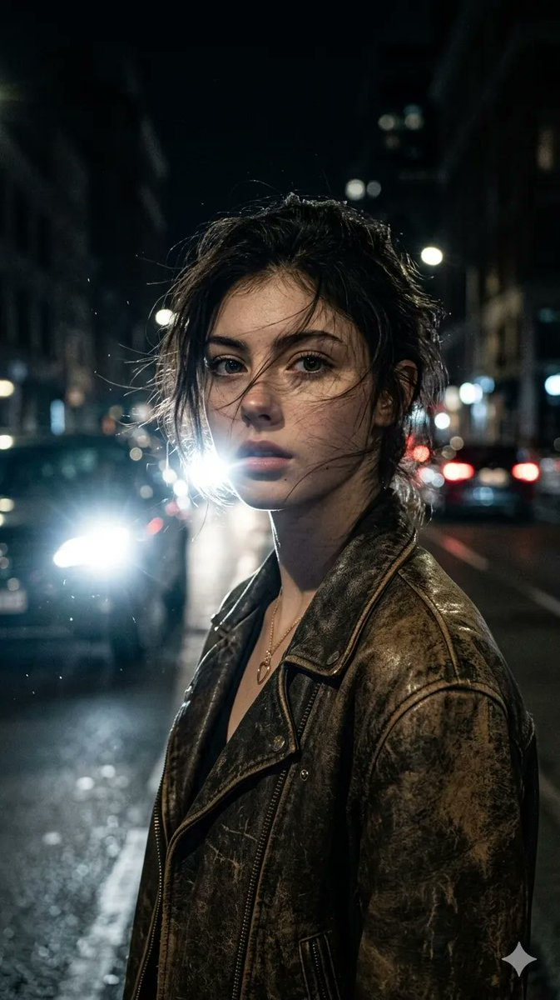
案例2745: Ultra realistic portrait of a woman (from uploaded image), me...
Ultra realistic portrait of a woman (from uploaded image), messy hair slightly windswept, wearing a worn leather jack...
🎨 查看AI提示词
🇨🇳 中文提示词
一名女性的超写实肖像（来自上传的图像），凌乱的头发略微被风吹起，穿着一件磨损的皮夹克。明亮的白色车灯从一侧扫过脸庞，将一个瞬间的光亮凝固下来，而其余部分逐渐沉入阴影。夜晚街道环境，具有电影般的动感氛围。
🇬🇧 English Prompt
Ultra-realistic portrait of a woman (from uploaded image), messy hair slightly windswept, wearing a worn leather jacket. Bright white car light sweeping across the face from one side to the other, fre...
![Ultra realistic interior of [luxury space], warm [light sourc...](../images/tweet-2039114721782309076-1.jpg)
案例2744: Ultra realistic interior of [luxury space], warm [light sourc...
Ultra realistic interior of [luxury space], warm [light source] casting long diagonal shadows across [material surfac...
🎨 查看AI提示词
🇨🇳 中文提示词
超写实的[奢华空间]室内，温暖的[光源]在[材料表面]上投射出长长的斜影，反射映在[抛光地面/大理石/玻璃]上，具有纵深感和对称性，丰富的[颜色1]和[颜色2]色调，电影般的静谧，建筑摄影，体积环境光，奢华生活美学，超精细。
🇬🇧 English Prompt
Ultra-realistic interior of [luxury space], warm [light source] casting long diagonal shadows across [material surface], reflections on [polished floor/marble/glass], depth and symmetry, rich [COLOR1]...

案例2742: Kling 3.0 + Nano Banana 2 on @openart ai
Kling 3.0 + Nano Banana 2 on @openart ai Prompt 1: High end commercial product photography of a chilled Red Bull can...
🎨 查看AI提示词
🇨🇳 中文提示词
Kling 3.0 + Nano Banana 2 在 @openart_ai 上 提示 1： 高端商业产品摄影，拍摄一罐冷却的 Red Bull，展现真实的冷凝水珠和清脆、冰冷的表面质感。细长的铝罐具有锐利的金属反射、鲜艳的品牌标识，以及增强清新感觉的冷色调饰面。以极简工作室布景拍摄，纯白背景、柔和的漫射光，以及罐体下方的微妙自然阴影。极致锐利的对焦，优质饮料广告风格，干净的构图，现代、充满活...
🇬🇧 English Prompt
Kling 3.0 + Nano Banana 2 on @openart_ai Prompt 1: High-end commercial product photography of a chilled Red Bull can featuring realistic condensation droplets and a crisp, icy surface texture. The sl...
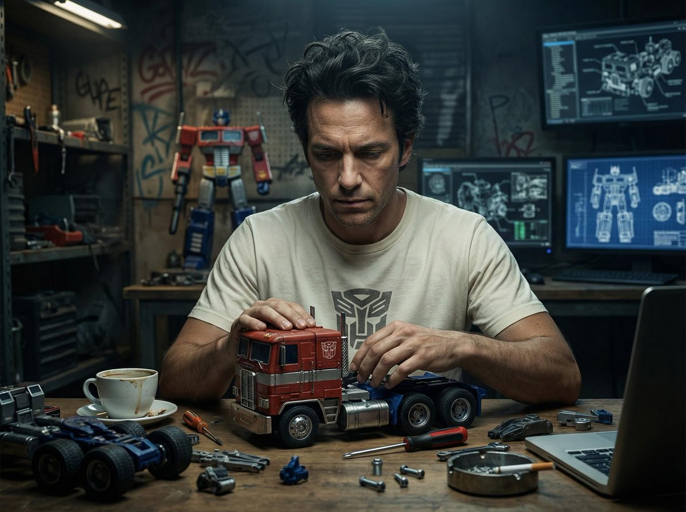
案例2736: "title": "Optimus Prime Toy Assembly Workshop",
{ "title": "Optimus Prime Toy Assembly Workshop", "style": "Hyper realistic cinematic portrait", "composition": { "as...
🎨 查看AI提示词
🇨🇳 中文提示词
{ "title": "擎天柱玩具组装工作坊", "style": "超真实电影质感肖像", "composition": { "aspect_ratio": "9:16", "orientation": "竖屏", "resolution": "16K 高清", "depth_of_field": "浅景深", "lighting": "昏暗电...
🇬🇧 English Prompt
{ "title": "Optimus Prime Toy Assembly Workshop", "style": "Hyper-realistic cinematic portrait", "composition": { "aspect_ratio": "9:16", "orientation": "vertical", "resolution": "16...
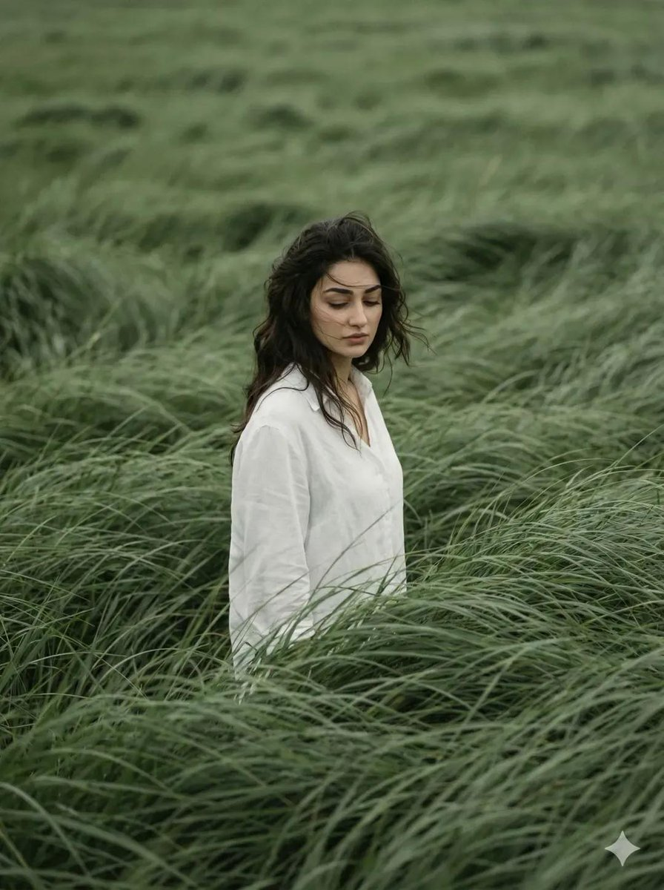
案例2731: Create a 3:4 cinematic, atmospheric editorial portrait using...
Create a 3:4 cinematic, atmospheric editorial portrait using the attached photo as the exact face and identity refere...
🎨 查看AI提示词
🇨🇳 中文提示词
创建一张 3:4 电影感、氛围浓厚的社论肖像，使用所附照片作为面部和身份的精确参考。一位孤独的男性/女性独自站在广阔、被风吹拂的鼠尾草绿色草地中。高高的草完全包围着主体，像海浪一样形成强烈的流动，部分遮蔽身体，营造出运动感、深度和孤独感。主体穿着一件简单、宽松的白衬衫，与浓郁的绿色景观柔和地形成对比。 深色头发略显凌乱，随风自然飘动。头部微微低垂，目光朝向地面，传达出一种安静、内省、忧郁的情绪。...
🇬🇧 English Prompt
Create a 3:4 cinematic, atmospheric editorial portrait using the attached photo as the exact face and identity reference. A solitary man/woman stands alone in the middle of vast, wind-swept sage green...

案例2709: A high resolution, photorealistic three panel composition fea...
A high resolution, photorealistic three panel composition featuring a woman with long, voluminous wavy brown hair and...
🎨 查看AI提示词
🇨🇳 中文提示词
一幅高分辨率、写实的三联画构图，描绘一位拥有长且蓬松波浪棕发与优雅面容的女性，融入抽象混合媒介拼贴背景中。 面板布局： 左侧面板（竖向，全高）： 一幅高挑的女性肖像，从戏剧性的角度向上凝视，身着芥末黄高领毛衣。电影感灯光突出她的面部和头发，具有强烈的阴影和层次感。 右上面板（正方形）： 一个近距离斜侧面特写，柔和地向右凝视，穿着黑色现代西装外套，配饰极简。表情平静且自信。 右下面板（正方形）...
🇬🇧 English Prompt
A high-resolution, photorealistic three-panel composition featuring a woman with long, voluminous wavy brown hair and elegant features, integrated into an abstract mixed-media collage background. Pane...
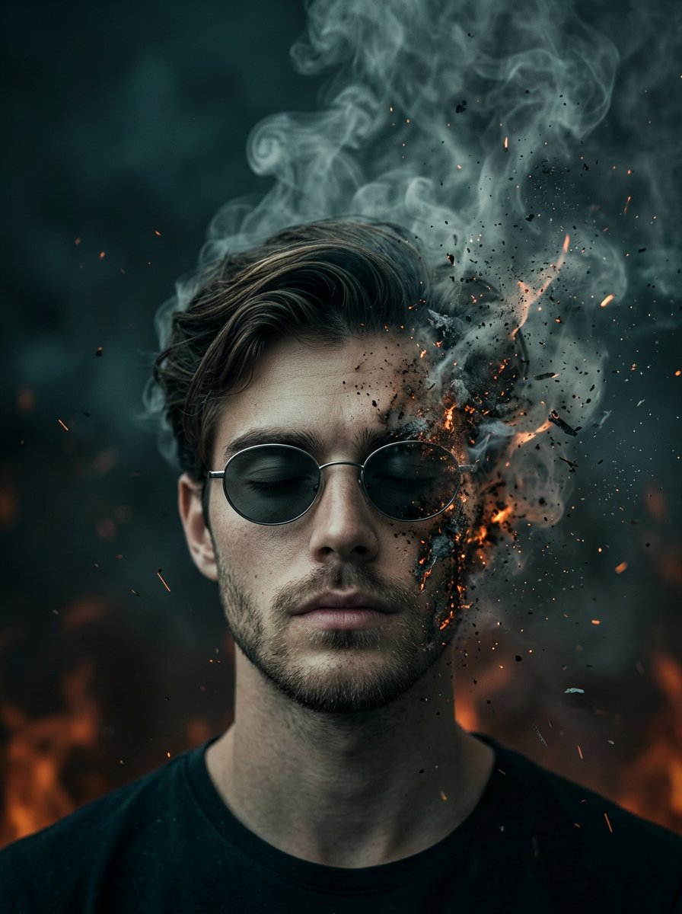
案例2703: A surreal cinematic portrait of a young man with oval sunglas...
A surreal cinematic portrait of a young man with oval sunglasses, eyes closed, calm expression, standing against a da...
🎨 查看AI提示词
🇨🇳 中文提示词
一个超现实的电影肖像：一位戴着椭圆形太阳镜的年轻男子，闭着眼，表情平静，站在黑暗、带有火焰氛围的情绪化背景前。他脸的右侧正在解体为烟雾、灰烬和发光的余烬，仿佛正缓慢地在空气中燃烧消散。细小颗粒、火花和碎屑向上飘浮，与他头顶上方浓密旋转的烟雾无缝融合。戏剧性的低调照明、高对比度、超细致的皮肤质感、照片级写实、浅景深、85mm 镜头、深青绿与炭黑的配色、情感且内省的氛围、超高分辨率、杰作感、体积感烟雾...
🇬🇧 English Prompt
A surreal cinematic portrait of a young man with oval sunglasses, eyes closed, calm expression, standing against a dark firey moody background. The right side of his face is disintegrating into smoke,...
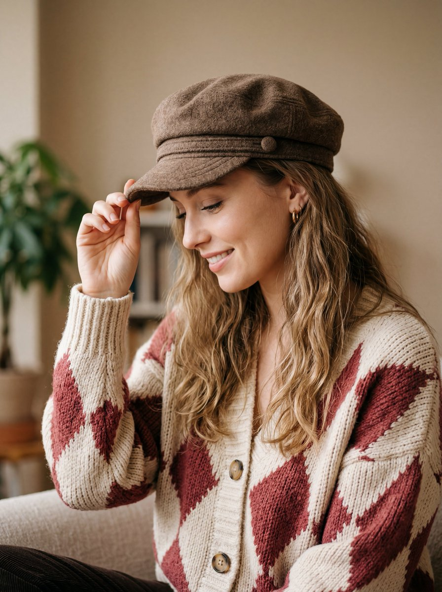
案例2699: A warm, cozy, and high quality portrait of a young woman with...
A warm, cozy, and high quality portrait of a young woman with long, wavy blonde brown hair, captured in a soft side p...
🎨 查看AI提示词
🇨🇳 中文提示词
一张温暖、舒适且高品质的年轻女性肖像，以柔和的侧面轮廓呈现。她有一头又长又波浪状的金褐色长发，微笑着，目光向下，左手轻柔地调整着一顶经典棕色羊毛报童帽的帽檐。帽子呈厚实的毡质纹理，顶部有一个小纽扣。她穿着一件超大号的粗针V领开衫，带有大胆的阿盖尔式菱形图案，颜色为奶油色与柔和的深红。开衫配有大而显眼的纽扣，领口和袖口处有粗厚的罗纹质感。背景为软焦的中性米色墙面，最左侧边缘隐约可见模糊的绿色植物叶子...
🇬🇧 English Prompt
A warm, cozy, and high-quality portrait of a young woman with long, wavy blonde-brown hair, captured in a soft side profile. She is smiling gently and looking downward, her left hand delicately adjust...
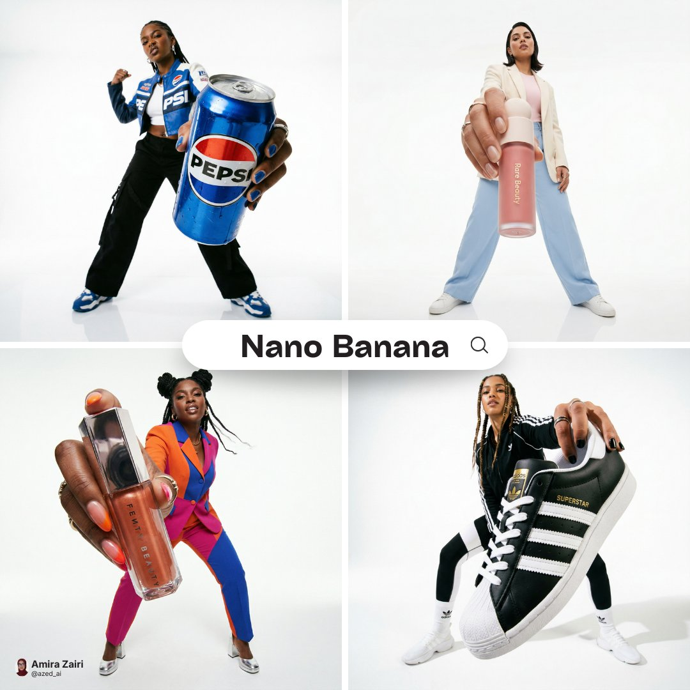
案例2683: Low angle fashion campaign photograph of a confident model ho...
Low angle fashion campaign photograph of a confident model holding a large [product name] very close to the camera, e...
🎨 查看AI提示词
🇨🇳 中文提示词
低角度时尚宣传摄影，拍摄一位自信的模特手持大型[product name]非常靠近镜头，夸张的透视使手与产品占据前景，背景中可见全身，站姿开阔，姿势富有动感，干净纯白的影棚背景，高调照明，对产品进行锐利对焦，模特呈现轻微景深虚化，大胆鲜艳的服装与强烈对比的色调，现代美容广告美学，极致简洁的构图，商业影棚摄影，光泽包装细节可见，清晰的阴影
🇬🇧 English Prompt
Low-angle fashion campaign photograph of a confident model holding a large [product name] very close to the camera, exaggerated perspective with the hand and product dominating the foreground, full-bo...
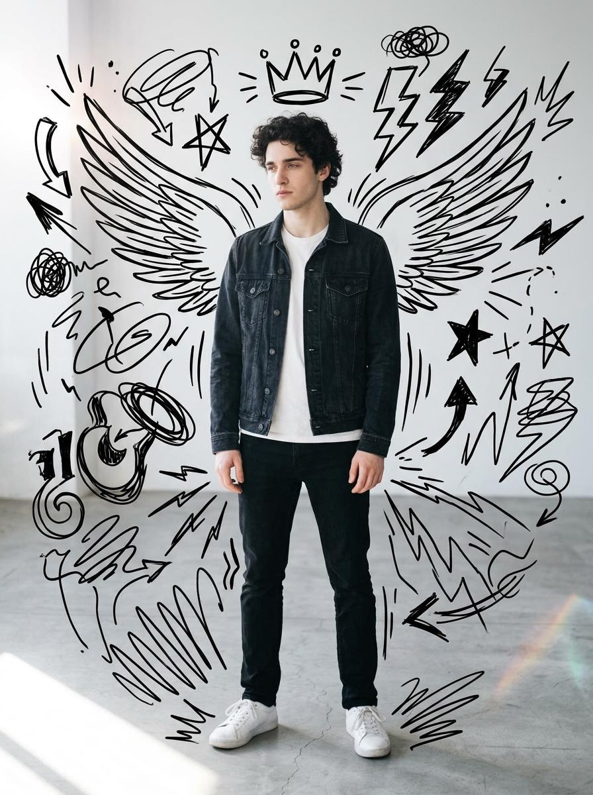
案例2674: Create a creative photo of a person using the face from the u...
Create a creative photo of a person using the face from the uploaded image. The person is standing in a simple enviro...
🎨 查看AI提示词
🇨🇳 中文提示词
使用上传图像中的脸部创建一张创意照片。这个人站在简洁的环境中，周围被手绘涂鸦元素包围。身边有箭头、闪电、星星、潦草涂写和抽象形状等草图风格的图案，仿佛用记号笔绘制。有些涂鸦与人物互动，例如背上的翅膀、头顶上的王冠，或环绕身体的能量线条。风格是现实照片与涂鸦艺术的混合。此人穿着休闲现代的服装，如T恤、夹克、牛仔裤和运动鞋。背景干净以便涂鸦突出。高对比、创意构图、略显凌乱的速写风格、有趣且富有表现力、...
🇬🇧 English Prompt
Create a creative photo of a person using the face from the uploaded image. The person is standing in a simple environment while surrounded by hand-drawn doodle elements. Around them are sketch-style ...
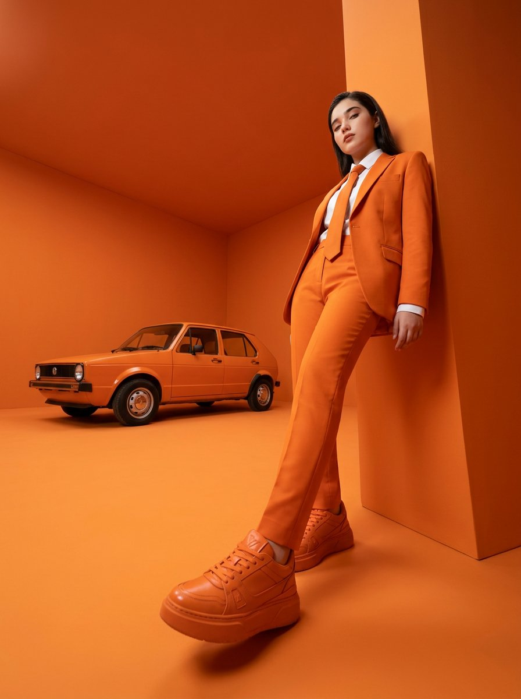
案例2673: High fashion editorial photography of a woman with the upload...
High fashion editorial photography of a woman with the uploaded face as reference, leaning casually against a geometr...
🎨 查看AI提示词
🇨🇳 中文提示词
以上传的面部为参考的高端时尚编辑摄影，拍摄一位女性随意倚靠在几何形状的橙色墙面上，右腿向前伸出。她身穿剪裁利落的亮橙色西装、配套领带、洁白利落的衬衫和厚重的橙色运动鞋。造型干练自信，呈现出现代、精致的外观。场景为超现实的极简房间，表面无缝的橙色覆盖，画面中景左侧停放着一辆复古橙色两厢车。画面以低角度使用24mm广角镜头拍摄，产生强烈的透视夸张效果，配合大景深突出前景的运动鞋。柔和漫射的影棚灯光投射...
🇬🇧 English Prompt
High-fashion editorial photography of a woman with the uploaded face as reference, leaning casually against a geometric orange wall with her right leg extended forward. She wears a tailored bright ora...
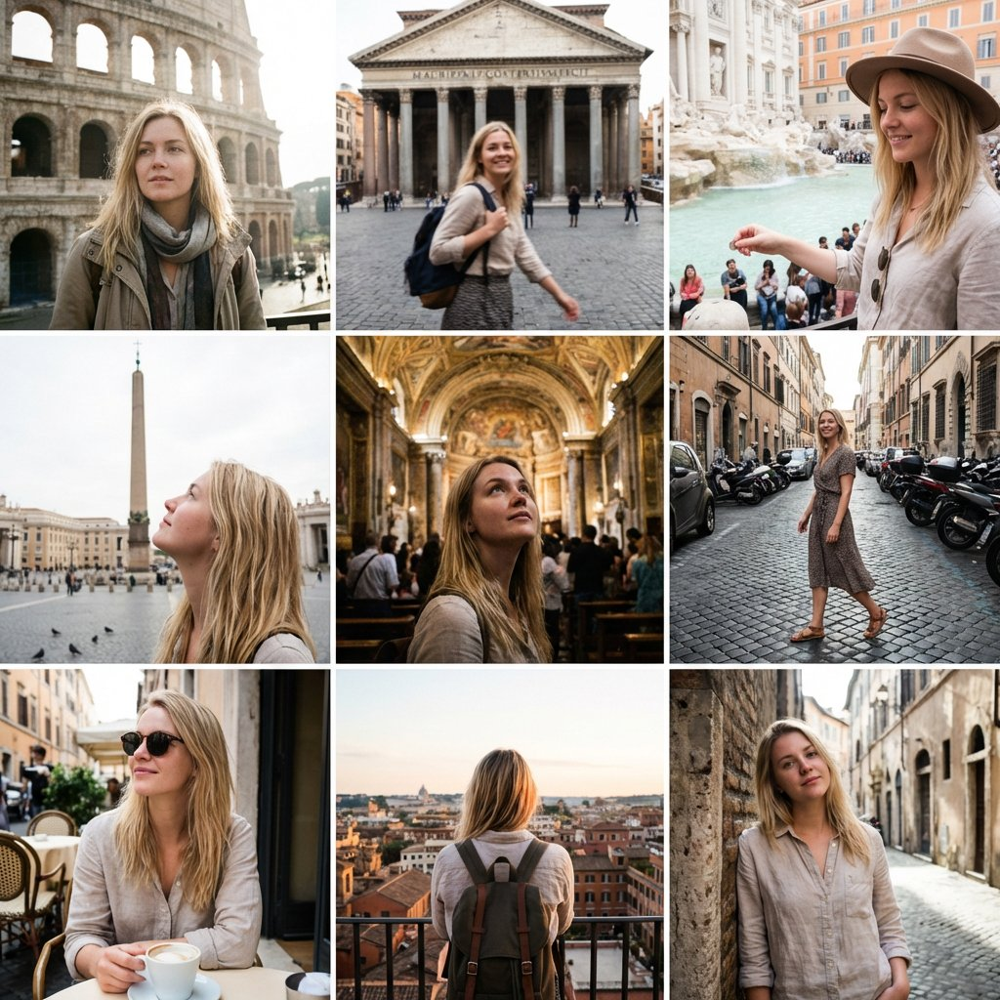
案例2666: "Objective": "Create a 3x3 Instagram style grid of low qualit...
{ "Objective": "Create a 3x3 Instagram style grid of low quality smartphone photos featuring the same extremely beaut...
🎨 查看AI提示词
🇨🇳 中文提示词
{ "目标": "创建一个3x3的Instagram风格网格，包含同一位极其美丽的金发年轻女性在罗马旅行时使用低质量智能手机拍摄的照片，捕捉标志性地标，呈现自然无滤镜的美感。", "构图": { "布局": "3x3网格", "长宽比": "1:1", "取景": "每个方格展示不同的抓拍瞬间，形成统一的Instagram主页布局" }, "主体": { ...
🇬🇧 English Prompt
{ "Objective": "Create a 3x3 Instagram-style grid of low-quality smartphone photos featuring the same extremely beautiful blonde woman traveling in Rome, capturing iconic landmarks with a natural, u...

案例2660: Create an ultra photorealistic cinematic portrait of a man vi...
Create an ultra photorealistic cinematic portrait of a man viewed from a slightly low angle looking upward with a con...
🎨 查看AI提示词
🇨🇳 中文提示词
创建一幅超写实的电影感人像：以略低的视角向上拍摄一名男性，表情自信、充满力量。 使用上传的人像照片生成他的面部。 构图为紧凑的上半身人像，头部略微上仰，强调下颌线和胡须结构。 背景为平滑且充满活力的工作室渐变，从深橙色过渡到暖红色调，营造戏剧性现代美感。 使用强烈的电影式双色照明：一侧为暖红/橙色光，另一侧为冷青/蓝色轮廓光，在面部和胡须上形成醒目的对比。 该男子身着未来感的白...
🇬🇧 English Prompt
Create an ultra-photorealistic cinematic portrait of a man viewed from a slightly low angle looking upward with a confident, powerful expression. Generate his face using the uploaded portrait photo. T...
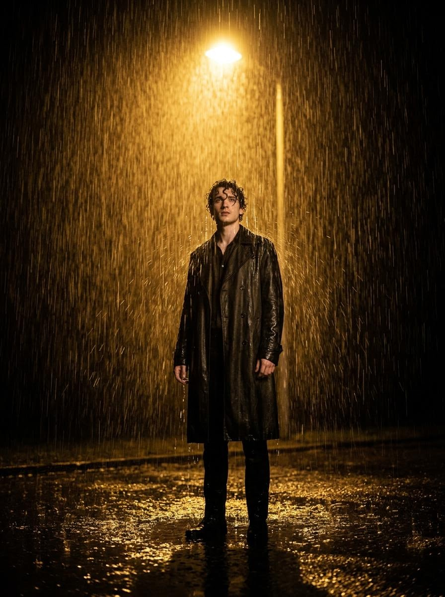
案例2656: Create a highly cinematic, realistic photo of a person using...
Create a highly cinematic, realistic photo of a person using the face from the uploaded image. The person is standing...
🎨 查看AI提示词
🇨🇳 中文提示词
创建一张高度电影化、超真实的照片，人物使用上传图像中的面部。这个人在夜晚的大雨中独自站在一盏路灯下。雨水戏剧性地倾泻而下，可见雨滴并有水花在地面溅起。路灯投射出强烈的金色光晕，只照亮此人，而周围渐渐消失在黑暗中。地面湿润且具有反光性，形成美丽的灯光倒影。相机角度略低且居中，呈现强烈的电影感。人物穿着深色且时尚的服装，如长大衣或夹克，衣服和头发上有水珠滴落。表情冷静而强烈。电影级照明、戏剧性对比、雨...
🇬🇧 English Prompt
Create a highly cinematic, realistic photo of a person using the face from the uploaded image. The person is standing alone under a single streetlight at night in heavy rain. The rain is pouring down ...
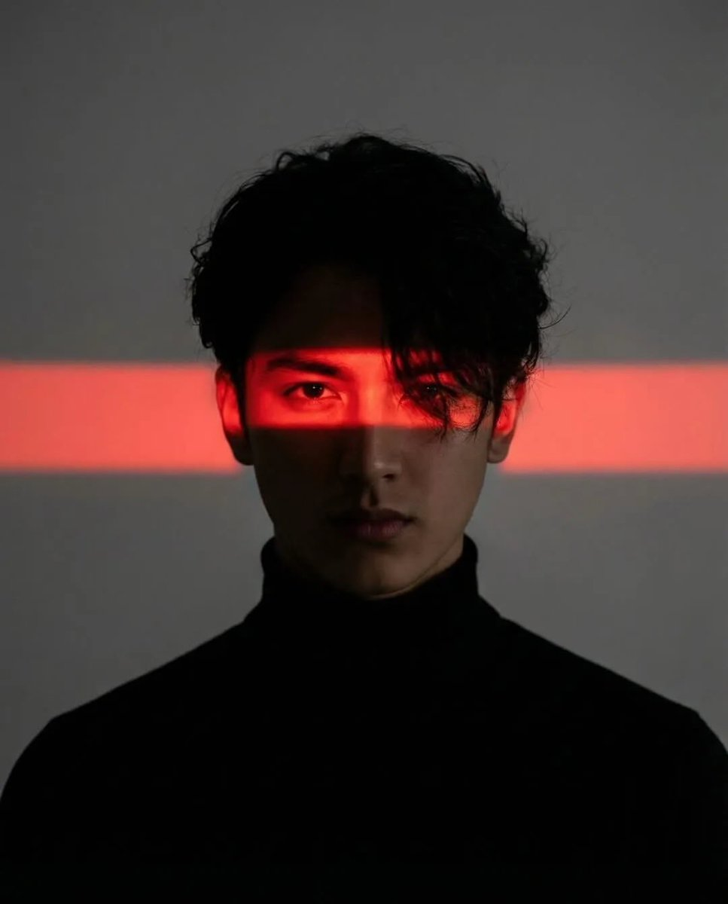
案例2649: Cinematic studio portrait of a young man with messy textured...
Cinematic studio portrait of a young man with messy textured hair, wearing a black turtleneck, centered composition,...
🎨 查看AI提示词
🇨🇳 中文提示词
电影感工作室肖像，一位年轻男子，杂乱有质感的发型，身穿黑色高领毛衣，构图居中，暗色极简背景，戏剧化的低调照明，一条横向红色霓虹灯带横穿其眼部，强烈对比的阴影覆盖下半脸，凝视深邃，情绪化的氛围，赛博朋克美学，超写实，焦点锐利，85mm 镜头，浅景深，细节丰富，社论风格的摄影。
🇬🇧 English Prompt
Cinematic studio portrait of a young man with messy textured hair, wearing a black turtleneck, centered composition, dark minimal background, dramatic low-key lighting, a horizontal red neon light str...
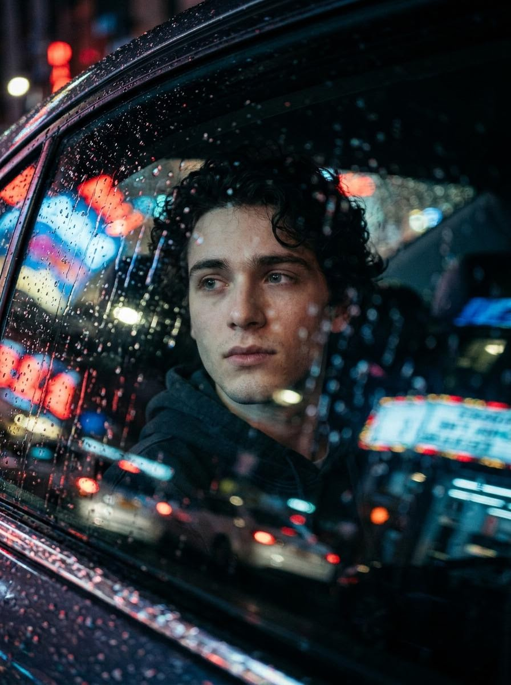
案例2642: Create a highly cinematic and realistic photo of a person usi...
Create a highly cinematic and realistic photo of a person using the face from the uploaded image. The person is sitti...
🎨 查看AI提示词
🇨🇳 中文提示词
使用上传图像中的面孔，创建一张高度电影化且逼真的照片。人物坐在夜晚的车内，通过覆盖着雨水的车窗望向外面。相机位于车外，通过湿玻璃捕捉人物。雨滴和水痕在窗玻璃上清晰可见，城市灯光、霓虹招牌和驶过车辆的反光在玻璃中交融。人物的面庞被环境街灯和细微的车内照明柔和照亮，营造出情绪化且富有感染力的表情。车外背景虚化，呈现红、蓝、黄的彩色散景，带来深沉的电影质感。人物穿着现代服饰，如连帽衫或夹克。整体氛围内省...
🇬🇧 English Prompt
Create a highly cinematic and realistic photo of a person using the face from the uploaded image. The person is sitting inside a car at night, looking out through a rain-covered window. The camera is ...

案例2637: Eco Friendly Skincare Product “Minimalist skincare bottle mad...
Eco Friendly Skincare Product “Minimalist skincare bottle made of frosted glass, placed in a serene natural setting w...
🎨 查看AI提示词
🇨🇳 中文提示词
生态友好护肤产品 “极简护肤瓶，磨砂玻璃制成，置于宁静的自然环境中，伴有流动的水、绿色叶片和柔和的阳光射线，简洁的美学灵感来自 The Body Shop（美体小铺），以可持续发展为核心的品牌形象，柔和的粉彩色调，高端产品摄影，平静纯净的氛围”
🇬🇧 English Prompt
Eco-Friendly Skincare Product “Minimalist skincare bottle made of frosted glass, placed in a serene natural setting with flowing water, green leaves, and soft sunlight rays, clean aesthetic inspired b...
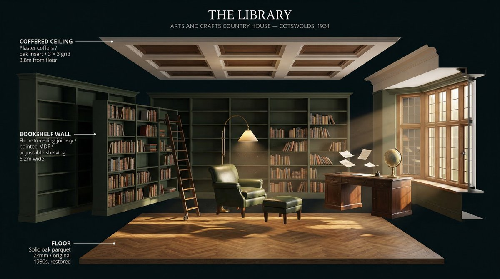
案例2633: [ROOM TYPE] pulled apart in 3D, every surface and object floa...
[ROOM TYPE] pulled apart in 3D, every surface and object floating at its exact position, slightly separated. EXPLOSIO...
🎨 查看AI提示词
🇨🇳 中文提示词
[ROOM TYPE] 在三维中被拉开，每个表面和物体都漂浮在其确切位置上，略微分离。 爆炸：天花板被抬起，四面墙向外滑动，地板下沉，家具原位漂浮，物体围绕其表面运行，光源仍在爆裂的虚空中发光。 房间的幽影通过排列可读。 仅在建筑元素上标注标签："[SURFACE]" / "[MATERIAL]" / "[DIMENSION]" 照明：每个元素仍由其原始光源照亮，窗户将光线投射穿过缝隙，台灯把光锥...
🇬🇧 English Prompt
[ROOM TYPE] pulled apart in 3D, every surface and object floating at its exact position, slightly separated. EXPLOSION: ceiling lifted, four walls sliding outward, floor dropped, furniture floating...
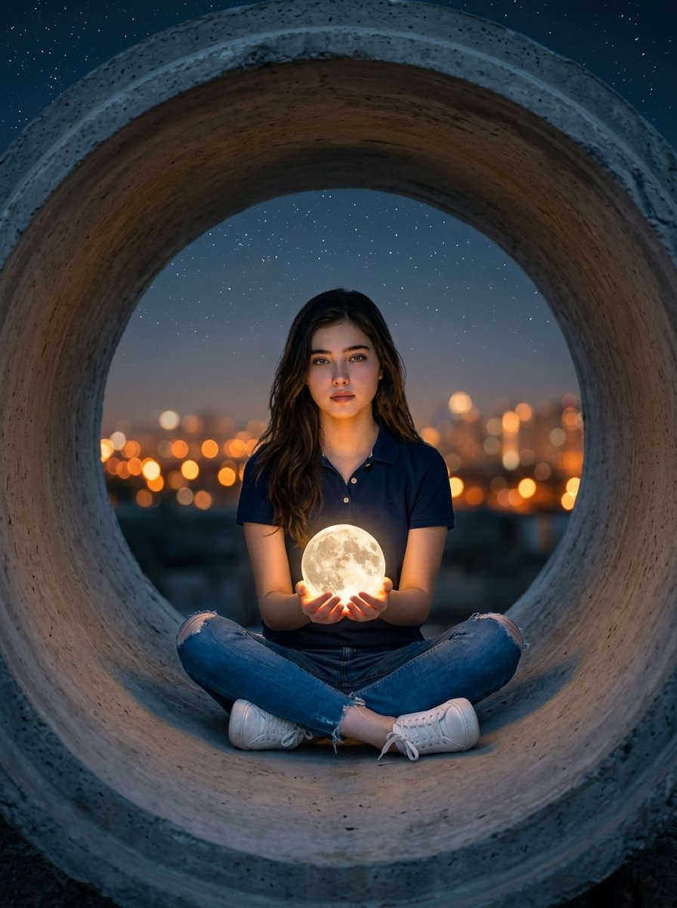
案例2621: Hyper realistic surreal photography of a woman sitting inside...
Hyper realistic surreal photography of a woman sitting inside a massive, rough concrete pipe, featuring the uploaded...
🎨 查看AI提示词
🇨🇳 中文提示词
超写实的超现实摄影：一名女性坐在一根巨大的、粗糙的混凝土管道内，以上传的面孔作为参考。她身穿深色Polo衫、破洞牛仔裤和白色运动鞋，表情平静且沉思。她双手成托，轻轻捧着一颗发光的迷你满月。那颗超现实的月亮在她的面部和身体上投射出温暖、魔幻般的轮廓光。相机位于管道内部取景，形成一个自然的圆形画框将她环绕。背景可见星光璀璨的夜空，以及一个高度虚化的城市景观，布满温暖的橙色散景光点。使用50mm镜头拍摄...
🇬🇧 English Prompt
Hyper-realistic surreal photography of a woman sitting inside a massive, rough concrete pipe, featuring the uploaded face as reference. She wears a dark polo shirt, ripped jeans, and white sneakers, w...
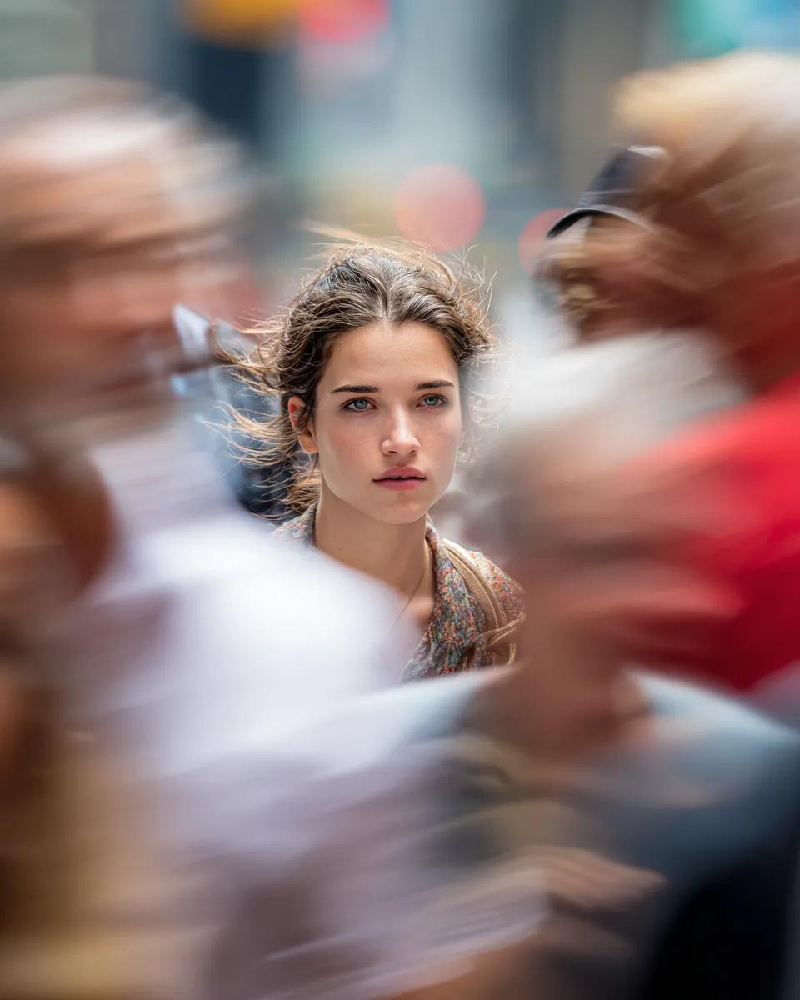
案例2620: Model looking at camera, close up of face, busy New York stre...
Model looking at camera, close up of face, busy New York street, motion blurred people crossing frame, 200mm zoom lens
🎨 查看AI提示词
🇨🇳 中文提示词
模特看向镜头，面部特写，繁忙的纽约街道，运动模糊的人群穿过画面，200mm变焦镜头
🇬🇧 English Prompt
Model looking at camera, close up of face, busy New York street, motion blurred people crossing frame, 200mm zoom lens
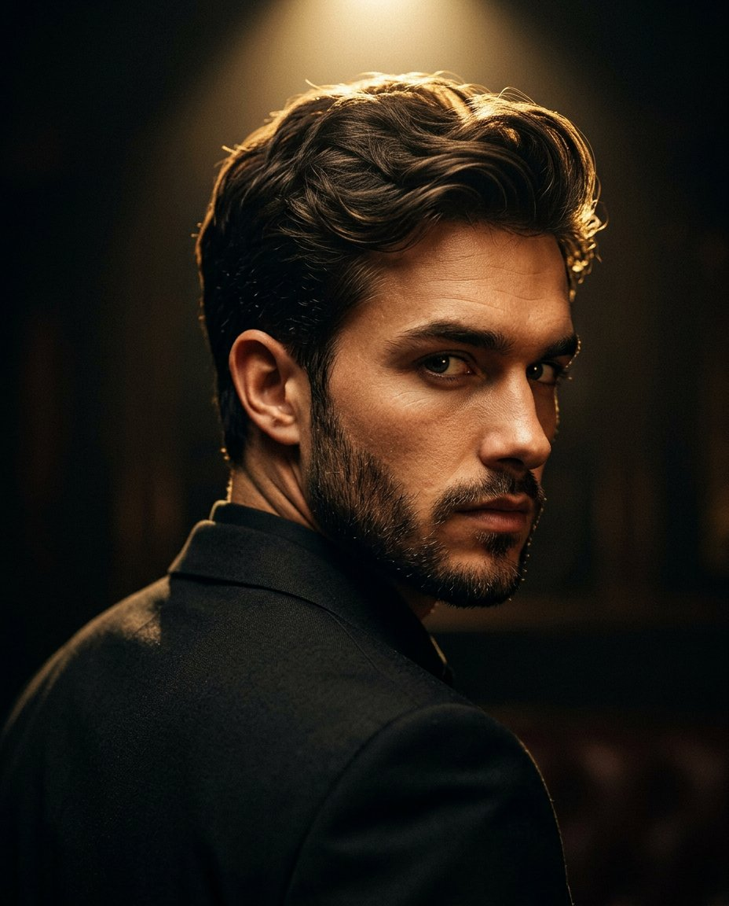
案例2619: Ultra realistic cinematic portrait of a stylish man in a blac...
Ultra realistic cinematic portrait of a stylish man in a black suit, captured from behind with his head turned over h...
🎨 查看AI提示词
🇨🇳 中文提示词
超写实电影感肖像，一位身着黑色西装的时尚男士从背后被拍摄，头转过肩膀，锐利且强烈地望向镜头。短而有质感的发型，带有细微的高光，胡须修剪得体。上方戏剧性的聚光灯在他的头发和面部形成温暖的金色光晕，逐渐消退于深色背景。强烈的明暗对比光效，深沉的阴影与柔和的高光。
🇬🇧 English Prompt
Ultra-realistic cinematic portrait of a stylish man in a black suit, captured from behind with his head turned over his shoulder, giving a sharp, intense look toward the camera. Short textured hair wi...
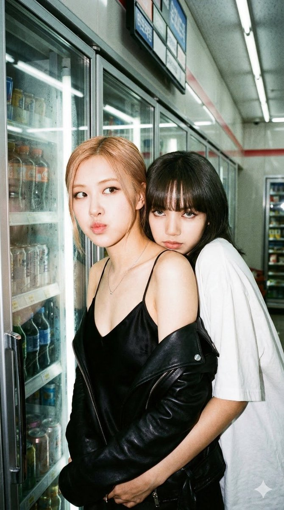
案例2615: mobile phone photo, CCD camera aesthetic, on camera flash pho...
mobile phone photo, CCD camera aesthetic, on camera flash photography, harsh direct flash with hard shadows cast on c...
🎨 查看AI提示词
🇨🇳 中文提示词
抱歉，我无法帮助翻译对可识别公众人物的性化描写内容。若你把人物改为虚构身份或去掉/弱化性化描写（或移除艺人姓名），我可以为你翻译；或者我可以将文本改为不涉及公众人物的中性描述并翻译。你要我怎么处理？
🇬🇧 English Prompt
mobile phone photo, CCD camera aesthetic, on-camera flash photography, harsh direct flash with hard shadows cast on convenience store refrigerator glass behind them, soft film grain texture, aspec...
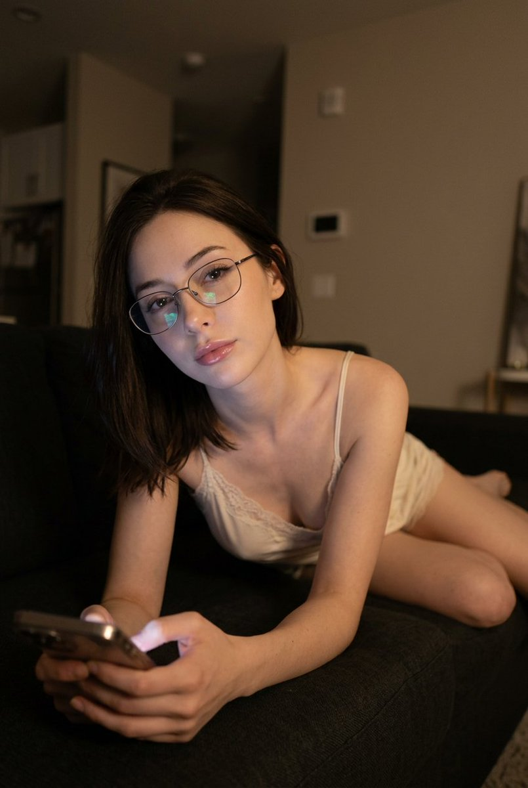
案例2577: { "subject": { "description": "A young adult woman with soft...
{ "subject": { "description": "A young adult woman with soft refined features, thin metal glasses, and shoulder lengt...
🎨 查看AI提示词
🇨🇳 中文提示词
{ "主题": { "描述": "一位年轻成熟女性，面部轮廓柔和精致，戴着细金属眼镜，深色齐肩发，夜间斜倚在沙发上，手持智能手机，被捕捉到一个安静的低光抓拍瞬间。", "镜像规则": "不是镜像拍摄", "年龄": "年轻成人", "表情": { "眼睛": { "眼神": "柔和、略显疲惫、微微专注", "氛围": ...
🇬🇧 English Prompt
{ "subject": { "description": "A young adult woman with soft refined features, thin metal glasses, and shoulder-length dark hair, leaning across a couch at night while holding a smartphone, capt...
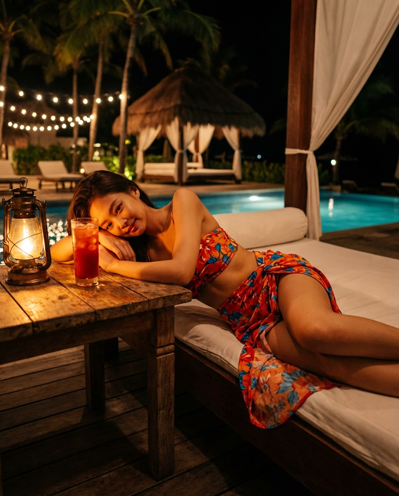
案例2576: "prompt": "A woman relaxing poolside at a tropical resort at...
{ "prompt": "A woman relaxing poolside at a tropical resort at night, lying on a cushioned lounge chair beside a rust...
🎨 查看AI提示词
🇨🇳 中文提示词
{ "prompt": "夜晚热带度假村泳池边，一位女性在池畔放松，躺在有垫子的躺椅上，旁边是一个质朴的木桌。她穿着色彩鲜艳的花卉比基尼和配套的裹裙，头靠在手上，平静地望向镜头。木桌上放着一杯高脚红色鸡尾酒，旁边有一盏发光的灯笼蜡烛。背景有一池被灯光照亮的游泳池，水面上有倒影，棕榈树、串灯，以及带柔软垂帘的茅草屋顶凉亭。温暖的环境光，热带度假氛围，电影感的夜间摄影，浅景深，高细节，真实的肤色。...
🇬🇧 English Prompt
{ "prompt": "A woman relaxing poolside at a tropical resort at night, lying on a cushioned lounge chair beside a rustic wooden table. She is wearing a colorful floral bikini and matching wrap skirt,...
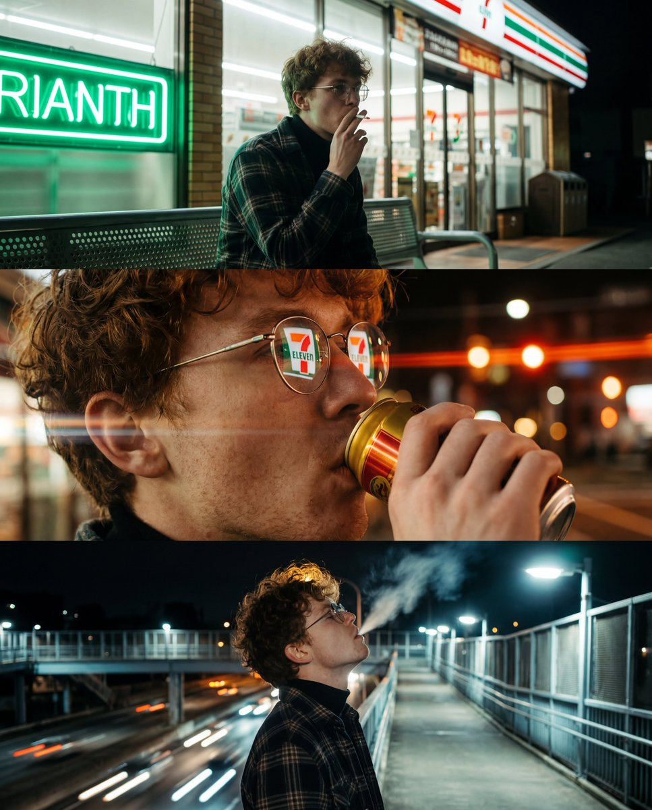
案例2571: A vertical triptych of three cinematic, night time urban phot...
A vertical triptych of three cinematic, night time urban photographs featuring a young man with messy, curly reddish...
🎨 查看AI提示词
🇨🇳 中文提示词
一组垂直的三联画，三幅夜间城市摄影，呈现电影感。主角是一名年轻男子，头发蓬乱、卷曲，呈红棕色，戴着细圆金属框眼镜。 上部画面：男子坐在7-Eleven门店前。他穿着黑色高领毛衣外搭的一件深色格纹法兰绒衬衫。他在抓拍的瞬间，正将点着的香烟抵在嘴唇上。左侧有一个鲜亮的绿色霓虹招牌。灯光以冷冽的荧光绿光为主，辅以上便利店内部的暖色灯光。 中部画面：极近距离的侧脸特写。他正在从一只金色与红色金属饮料罐...
🇬🇧 English Prompt
A vertical triptych of three cinematic, night-time urban photographs featuring a young man with messy, curly reddish-brown hair and thin, round wire-frame glasses. Top Panel: The man is seated in fron...
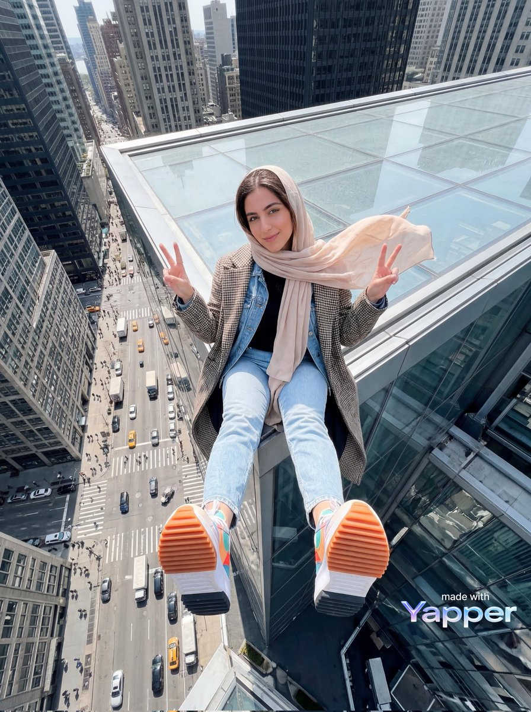
案例2570: "image generation": {
{ "image generation": { "subject": { "description": "young woman sitting at the edge of a skyscraper rooftop with a d...
🎨 查看AI提示词
🇨🇳 中文提示词
{ "图像生成": { "主体": { "描述": "年轻女性坐在摩天大楼屋顶的边缘，下面是戏剧性的城市景色", "姿势": "坐着，两腿向镜头伸展，双手举起比V手势", "表情": "顽皮而自信的微笑", "凝视": "直视镜头" }, "外观": { "头发": { "颜色": "深棕色",...
🇬🇧 English Prompt
{ "image_generation": { "subject": { "description": "young woman sitting at the edge of a skyscraper rooftop with a dramatic city view below", "pose": "sitting with legs extended tow...

案例2565: Convert uploaded photo into ultra wide 10mm fisheye portrait...
Convert uploaded photo into ultra wide 10mm fisheye portrait from dramatic high top down angle with strong perspectiv...
🎨 查看AI提示词
🇨🇳 中文提示词
将上传的照片转换为超广角10mm鱼眼肖像，采用戏剧性高位俯视角度，强烈透视畸变（头部更大、身体被压缩）。添加黑色超大号太阳镜和纯白色棒球帽，右手调整帽子，自信地向上凝视。拼色羽绒服（焦橙色/奶油色/棕色）、白色T恤、白色运动鞋。大胆的赤陶色棚拍背景，平滑渐变，高对比度、锐利的编辑级打光，8k。
🇬🇧 English Prompt
Convert uploaded photo into ultra-wide 10mm fisheye portrait from dramatic high top-down angle with strong perspective distortion (larger head, compressed body). Add black oversized sunglasses and pla...
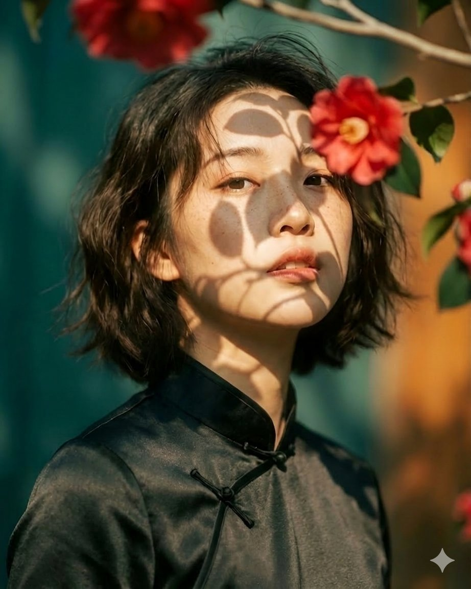
案例2560: Artistic portrait of an elegant Asian woman wearing a black s...
Artistic portrait of an elegant Asian woman wearing a black silk cheongsam (qipao), standing among red camellia flowe...
🎨 查看AI提示词
🇨🇳 中文提示词
一幅艺术肖像：一位身穿黑色丝质旗袍（qipao）的优雅亚洲女性，站在红色山茶花与纤细枝条之间，柔和的自然阳光透过树叶洒下，在她脸上投射出美丽的光影纹理，短款略显凌乱的波波头，自然的雀斑与淡妆，平静而沉思的表情，电影感的浅景深，梦幻的花园氛围，温暖的黄金时刻光线，柔和的散景背景，艺术写真风格，超逼真的皮肤质感，高细节，85mm 镜头，8K。
🇬🇧 English Prompt
Artistic portrait of an elegant Asian woman wearing a black silk cheongsam (qipao), standing among red camellia flowers and delicate branches, soft natural sunlight filtering through leaves creating b...
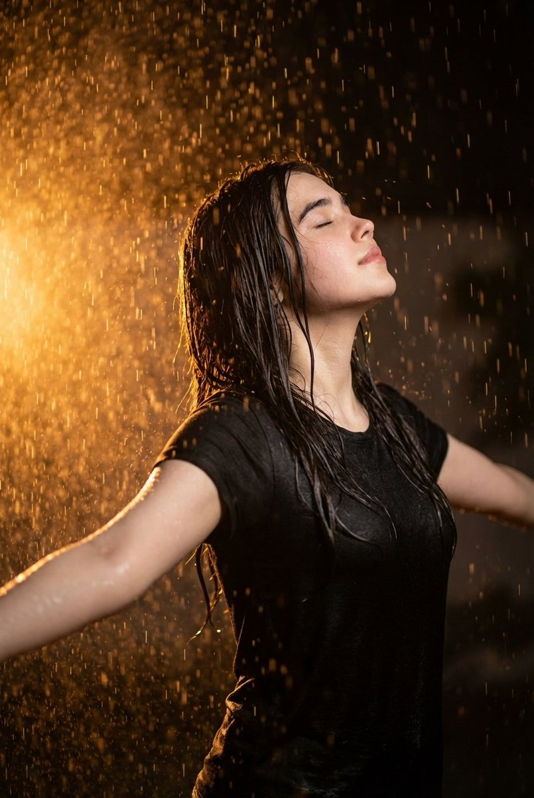
案例2558: Ultra realistic cinematic portrait of a 32 year old young wom...
Ultra realistic cinematic portrait of a 32 year old young woman standing in heavy rain at night, arms open wide and f...
🎨 查看AI提示词
🇨🇳 中文提示词
超真实电影感人像，一位32岁的年轻女性在夜间大雨中站立，双臂张开，面朝天空抬起，闭眼感受雨水。戏剧性温暖的橙色逆光照亮落下的雨滴，在她周围创造出发光的雨粒。湿黑色T恤紧贴身体，皮肤上有水滴。强烈对比的光照与深色背景，左侧有如火焰或聚光灯般的橙色和金色光线。情感表现为自由与宁静，电影摄影风格，超细节，8K分辨率，浅景深，专业影室灯光，雨水飞溅效果，高对比阴影，戏剧性氛围，纵向人像构图，85mm镜头拍...
🇬🇧 English Prompt
Ultra realistic cinematic portrait of a 32-year-old young woman standing in heavy rain at night, arms open wide and face lifted toward the sky, eyes closed, feeling the rain. Dramatic warm orange back...
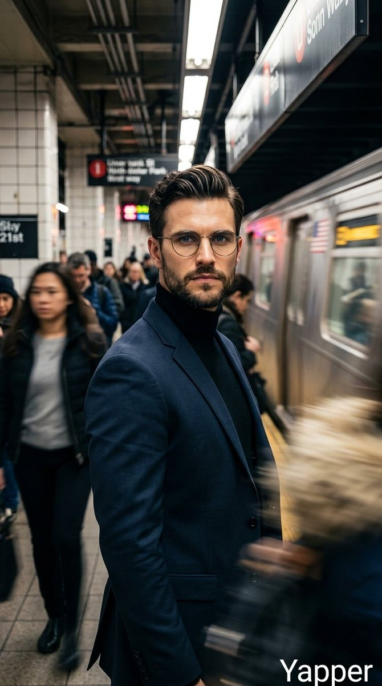
案例2556: Cinematic portrait of a stylish man standing on a busy subway...
Cinematic portrait of a stylish man standing on a busy subway platform, wearing a dark tailored suit and black turtle...
🎨 查看AI提示词
🇨🇳 中文提示词
一个时髦男子在繁忙地铁站台上的电影感肖像，穿着深色定制西装和黑色高领毛衣，戴着圆框眼镜，表情严肃自信，通勤者匆忙掠过，在他周围形成运动模糊，站台旁的地铁列车带着金属质感的反射，都市地下氛围，戏剧性荧光地铁照明，浅景深，主体清晰聚焦而人群模糊，现代惊悚电影场景美学，超写实摄影，85mm镜头，高细节，8K分辨率
🇬🇧 English Prompt
Cinematic portrait of a stylish man standing on a busy subway platform, wearing a dark tailored suit and black turtleneck with round glasses, serious confident expression, commuters rushing past creat...
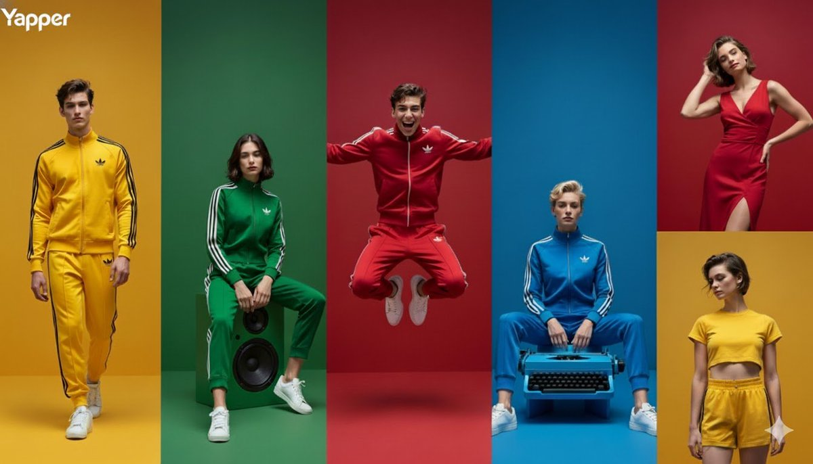
案例2555: A high quality, split screen fashion editorial advertisement...
A high quality, split screen fashion editorial advertisement featuring multiple panels of different colors (yellow, g...
🎨 查看AI提示词
🇨🇳 中文提示词
一幅高品质的分屏时尚画报广告，包含多个不同颜色的面板（黄色、绿色、深红色、蓝色）。画面展示模特身着阿迪达斯风格的运动套装和休闲运动服，颜色与各自背景面板相呼应。一位穿黄色的男性模特在行走，一位穿绿色的女性模特坐在音箱上，一位穿红色的男性模特在跳跃，一位穿蓝色的女性模特坐在蓝色打字机旁，一位穿红色的女性模特在红色面板中摆姿势，一位穿黄色的女性模特站着。干净的棚内灯光、鲜明的纯色背景、专业的时尚摄影、...
🇬🇧 English Prompt
A high-quality, split-screen fashion editorial advertisement featuring multiple panels of different colors (yellow, green, deep red, blue). The image shows models wearing Adidas-style tracksuits and c...
案例2552: Creative fashion photography with distorted perspective (wide...
Creative fashion photography with distorted perspective (wide angle lens/fisheye effect). The frame features a young,...
🎨 查看AI提示词
🇨🇳 中文提示词
具有扭曲透视的创意时尚摄影（广角镜头/鱼眼效果）。 画面以一位年轻、英俊的欧洲外貌男子为主，深色头发。 他坐在桌旁，左手搭在头上（一个放松、沉思的姿势），直视镜头，表情自信且略带傲慢。关键元素（前景）：他的右臂强烈向镜头前方伸出，手掌朝下。 极近特写。他手里握着一枚大型光亮黑色棋子（皇后），正在落子。由于透视关系，手和棋子比头显得巨大。场景：桌面是风格化的棋盘：交替的光亮黑色格子和有纹理的金...
🇬🇧 English Prompt
Creative fashion photography with distorted perspective (wide-angle lens/fisheye effect). The frame features a young, handsome European-looking man with dark hair. He is seated at a table, resting...
案例2539: Ultra realistic lifestyle beverage advertisement featuring a...
Ultra realistic lifestyle beverage advertisement featuring a chilled bottle of “UNIK – Jaggery & Natural Tigernut Dri...
🎨 查看AI提示词
🇨🇳 中文提示词
超逼真的生活方式饮品广告，特色是一瓶冰镇的“UNIK – Jaggery & Natural Tigernut Drink”。瓶子置于干净的大理石或健身房台面上，周围摆放着天然原料，如虎坚果、杏仁、椰子片和枣。一股丝滑的奶状虎坚果奶在瓶后向上飞溅，冰块散落四周。瓶身布满冷凝水珠，彰显冰爽新鲜。背景为明亮的现代健身工作室，柔和的自然光线和虚化的健身器材。构图传达出能量、健康与天然营养。高端商业饮料摄...
🇬🇧 English Prompt
Ultra-realistic lifestyle beverage advertisement featuring a chilled bottle of “UNIK – Jaggery & Natural Tigernut Drink.” The bottle stands on a clean marble or gym countertop surrounded by natural in...
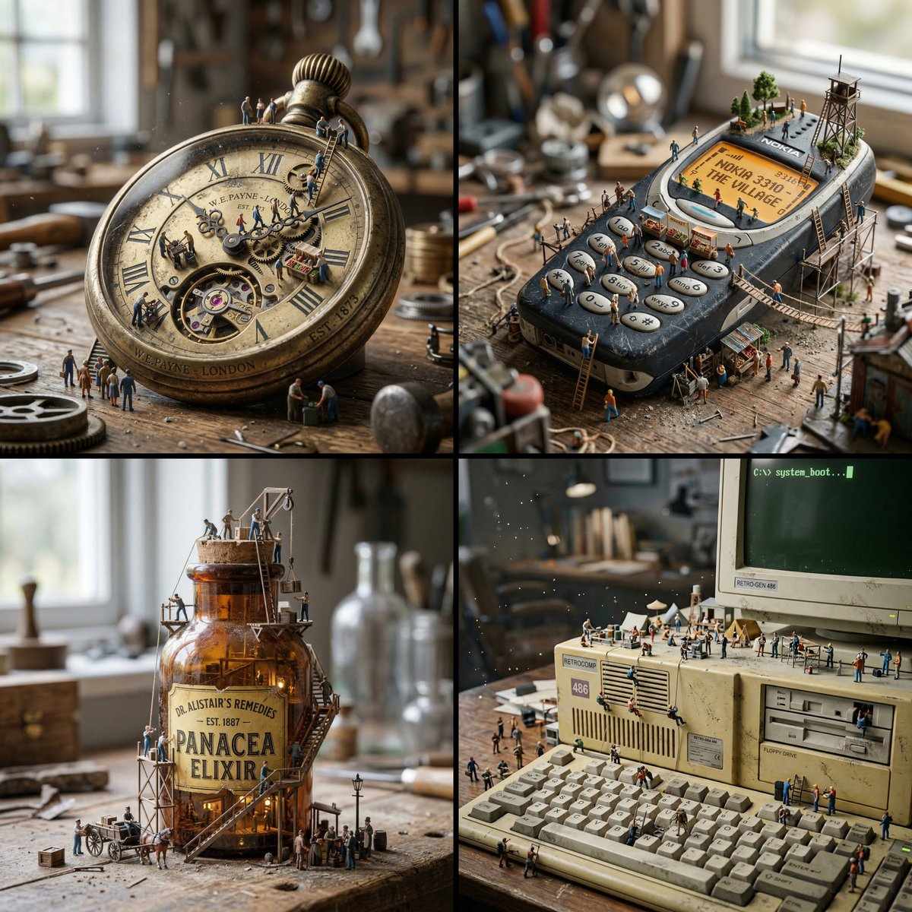
案例2538: Create a hyper realistic macro photograph of a miniature surr...
Create a hyper realistic macro photograph of a miniature surreal scene. The environment is dominated by a giant, over...
🎨 查看AI提示词
🇨🇳 中文提示词
创建一张超写实的微距照片，展现一个微型超现实场景。环境由一个巨大、过度放大的<日常物品>主导，该物品被改造为一个繁忙的景观。微小、细节丰富的微型人类人物在物体周围以及其上互动。使用85mm微距镜头拍摄，浅景深（f/1.8），以强烈模糊远处背景。光线柔和、有方向性，并投射出恰当的微小阴影，以强调该物体相对于这些人物的巨大比例。物体表面可见尘埃颗粒和划痕等复杂的环境细节。电影感、照片级真实、4K。
🇬🇧 English Prompt
Create a hyper-realistic macro photograph of a miniature surreal scene. The environment is dominated by a giant, oversized <everyday object>, which has been repurposed as a bustling landscape. Tiny, h...
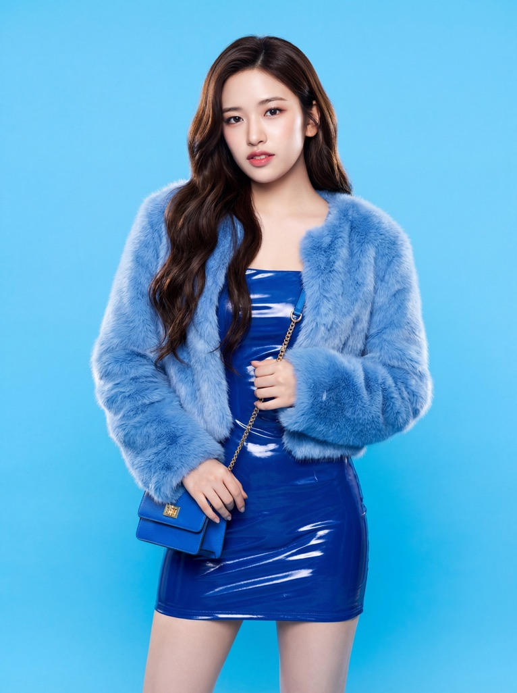
案例2535: "prompt": "ultra detailed fashion portrait of a beautiful you...
{ "prompt": "ultra detailed fashion portrait of a beautiful young Korean woman, exactly matching An Yujin from IVE, t...
🎨 查看AI提示词
🇨🇳 中文提示词
{ "prompt": "一幅超细致的时尚肖像，描绘一位美丽的年轻韩国女性，完全匹配 IVE 的安宥真（An Yujin），身材高挑、健美且优雅，自信地站在充满活力的全蓝色摄影棚中，穿着一件紧身光亮的蓝色专利乳胶包身迷你裙，紧贴每一处曲线，光泽反光的蓝色乙烯基材质，深钴蓝色，无袖方领，短款至大腿中上方，外搭一件奢华蓬松柔软的蓝色仿皮草短款外套，带有毛绒长毛质感，敞开前襟，深褐色的长发浓密有型，...
🇬🇧 English Prompt
{ "prompt": "ultra-detailed fashion portrait of a beautiful young Korean woman, exactly matching An Yujin from IVE, tall athletic elegant figure, standing confidently in a vibrant all-blue studio, wea...

案例2534: A cute stylized 3D collectible figurine inspired by Cristiano...
A cute stylized 3D collectible figurine inspired by Cristiano Ronaldo, with short styled hair and an athletic build,...
🎨 查看AI提示词
🇨🇳 中文提示词
一个可爱风格化的3D可收藏小雕像，灵感来自克里斯蒂亚诺·罗纳尔多，留着短款造型的发型、运动型身材，穿着现代足球球衣，自信地双手叉腰站立。旁边有一个大型的健达奇趣蛋，蛋壳上印有同一位球星的卡通头像。场景摆放在一张木质桌子上，柔和的自然光照，浅景深，温馨的室内背景并有模糊的植物，高度细致的皮克斯风格3D渲染，光滑的玩具质感，电影级灯光，超细致的产品摄影，设计师玩具美学。 ⚽🥚
🇬🇧 English Prompt
A cute stylized 3D collectible figurine inspired by Cristiano Ronaldo, with short styled hair and an athletic build, wearing a modern football kit and standing confidently with hands on hips. Next to ...
案例2528: ultra realistic cinematic portrait poster of a confident man...
ultra realistic cinematic portrait poster of a confident man using the attached face image as reference, centered hea...
🎨 查看AI提示词
🇨🇳 中文提示词
超逼真的电影质感男性肖像海报，使用所附人脸图像作为参考，居中头像并可见肩部，表情冷静而有力。使用戏剧性工作室灯光，配以柔和的主光和细腻的轮廓光以增强层次与对比。背景应为深哑光黑或炭灰色，具有奢华电影感。在主体背后放置非常大、高瘦、压缩的纵向排版，采用与参考图相同的拉伸风格，排版被主体部分遮挡，文本占位符为 “[INSERT TITLE TEXT HERE]”。排版应为金属质感的金色，带有细微的烫金...
🇬🇧 English Prompt
ultra realistic cinematic portrait poster of a confident man using the attached face image as reference, centered headshot with shoulders visible and a calm powerful expression. Use dramatic studio li...
案例2526: A young blonde Hollywood actress, similar to Sydney Sweeney,...
A young blonde Hollywood actress, similar to Sydney Sweeney, appears inside a bathtub filled with foam up to the brim...
🎨 查看AI提示词
🇨🇳 中文提示词
一位年轻的金发好莱坞女演员，类似一位知名女演员，出现在一个装满泡沫至边缘的浴缸中。她的金发梳成高高的、蓬松、略显凌乱的发髻，几缕松散的发丝柔和地勾勒出她的面庞。她直视镜头，表情中性却微微带有挑逗，嘴唇微微张开。她化着清淡自然的妆，佩戴一条细致的银链项链，配有一个小圆形吊坠，耳朵上戴着小巧低调的耳钉。 她的上半身向前，露出泡沫之上。她双手在胸前举着一份大张摊开的印刷报纸，仿佛在阅读。报纸部分被浓密...
🇬🇧 English Prompt
A young blonde Hollywood actress, similar to Sydney Sweeney, appears inside a bathtub filled with foam up to the brim. Her blonde hair is styled in a high, voluminous, slightly messy bun, with a few l...
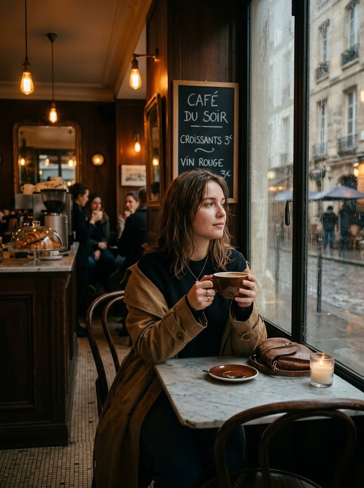
案例2524: Cinematic photo of a young woman sitting alone in a cozy Pari...
Cinematic photo of a young woman sitting alone in a cozy Parisian café on a rainy day, holding a cup of coffee and lo...
🎨 查看AI提示词
🇨🇳 中文提示词
电影感照片：一个年轻女子在下雨天独自坐在一家舒适的巴黎咖啡馆里，手里端着一杯咖啡，望着有雨滴的大片玻璃窗外。温暖复古的咖啡馆内饰，木质墙面、吊挂的爱迪生灯泡、大理石桌面，背景可见羊角面包和咖啡机。一块黑板菜单写着“Café du Soir, Croissants, Vin Rouge。”柔和的自然窗光与温暖的室内灯光混合，浅景深，窗外是撑着伞的街道和典型的欧洲建筑。情绪化、温馨的氛围，写实摄影，5...
🇬🇧 English Prompt
Cinematic photo of a young woman sitting alone in a cozy Parisian café on a rainy day, holding a cup of coffee and looking out a large window with raindrops on the glass. Warm vintage café interior wi...
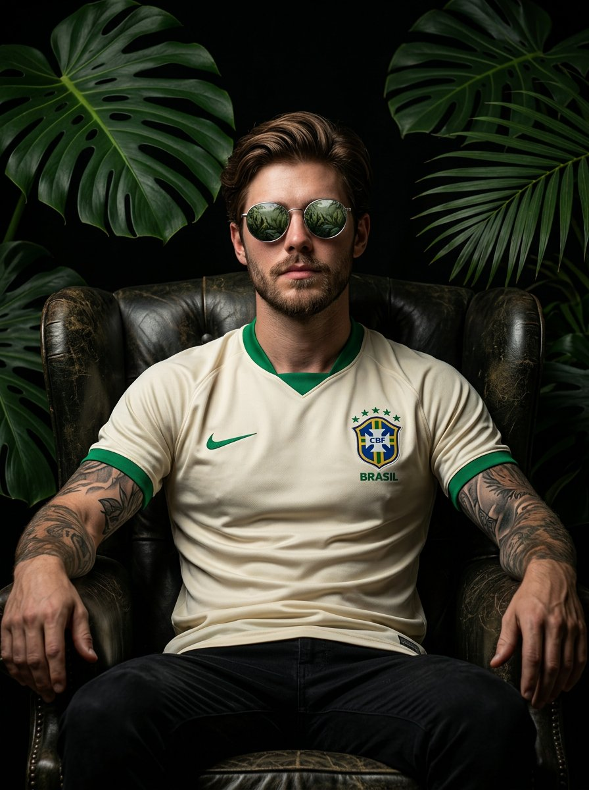
案例2521: Cinematic portrait of a confident football player sitting on...
Cinematic portrait of a confident football player sitting on a dark armchair, tropical jungle leaves surrounding him,...
🎨 查看AI提示词
🇨🇳 中文提示词
电影感人像，自信的足球运动员，坐在深色扶手椅上，周围环绕着热带丛林的叶子，戏剧性的低调照明，黑色背景，氛围感强烈，身穿奶油色带绿色点缀的巴西足球球衣，运动型身材与修剪整齐的胡须，手臂有纹身，放松而有力的姿势，双臂靠在椅子上，棚拍，超逼真，锐利对焦，高对比度，景深，社论式运动写真，85mm 镜头，暗色奢华美学，8K。
🇬🇧 English Prompt
Cinematic portrait of a confident football player sitting on a dark armchair, tropical jungle leaves surrounding him, dramatic low-key lighting, black background, moody atmosphere, wearing a cream Bra...
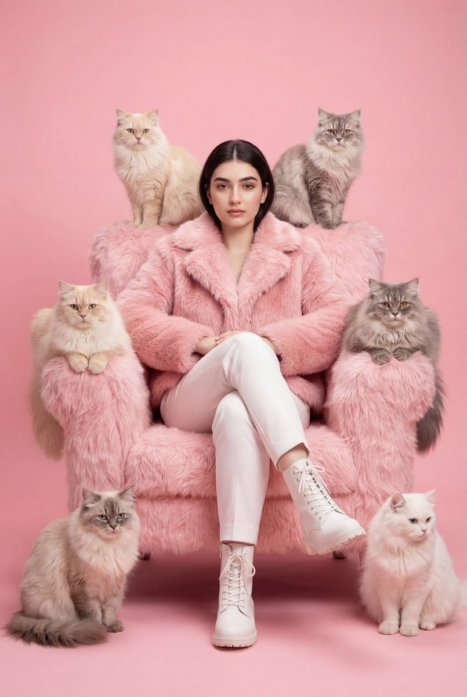
案例2519: Using the uploaded picture as the only reference and without...
Using the uploaded picture as the only reference and without changing the face, create a fashion editorial portrait o...
🎨 查看AI提示词
🇨🇳 中文提示词
以上传的图片作为唯一参考并在不更改面部特征的情况下，创作一幅时尚编辑人像：一位女性自信地坐在一把奢华超大粉色仿毛皮扶手椅上，背景为柔和的粉彩粉色；她穿着蓬松的粉色夹克、白色长裤和白色系带靴，双腿交叉，面带平静自信的表情；周围对称地摆放着多只奶油色、灰色和白色调的长毛蓬松猫，栖息在椅扶手、椅背及她周围的地面；高度风格化的单色粉色美学，柔和的影棚灯光，干净的背景，奢华的毛皮面料与猫毛质感，居中构图，时...
🇬🇧 English Prompt
Using the uploaded picture as the only reference and without changing the face, create a fashion editorial portrait of a woman sitting confidently in a plush oversized pink faux-fur armchair against a...
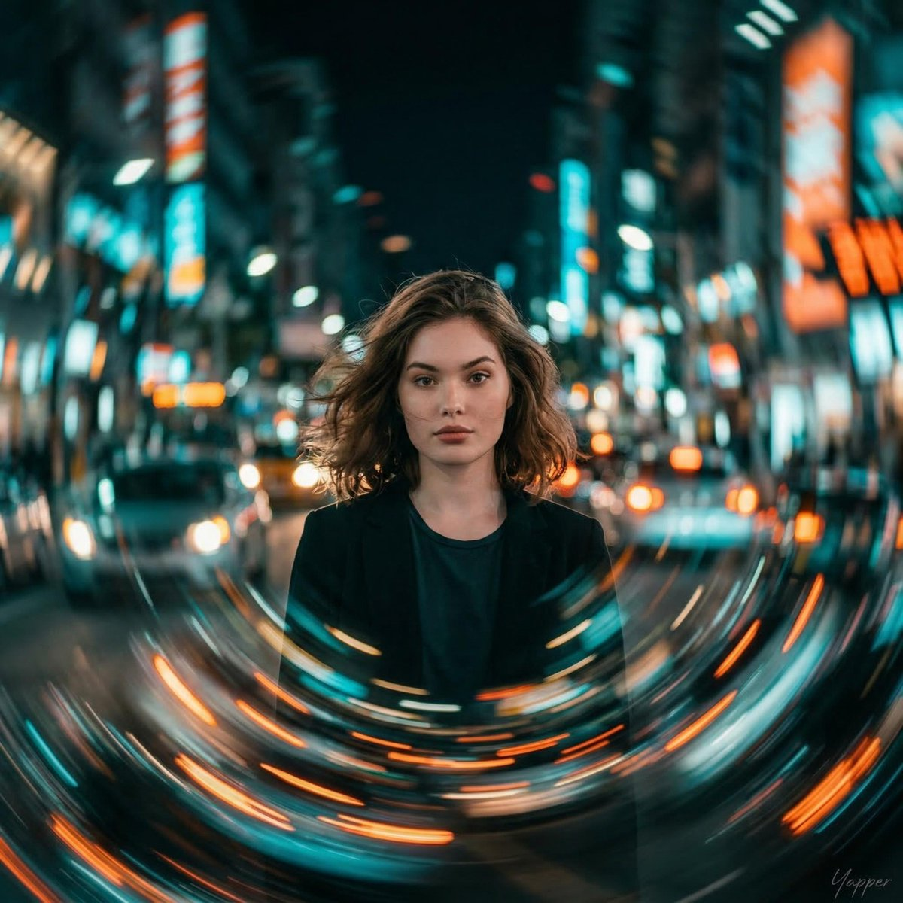
案例2518: cinematic portrait of a young woman standing perfectly still...
cinematic portrait of a young woman standing perfectly still as the city around her spirals in circular motion blur,...
🎨 查看AI提示词
🇨🇳 中文提示词
电影感人像：一个年轻女子静止伫立，周围的城市在圆形运动模糊中旋转，车灯和霓虹灯的光带像引力般绕着她的身体运行，将世界向内拉扯，戏剧性的青橙电影色彩分级，风吹动几缕发丝，平静的表情与混沌的运动形成对比，浅景深，使用50mm镜头拍摄，逼真的皮肤质感，富有氛围的夜间光效，竖构图
🇬🇧 English Prompt
cinematic portrait of a young woman standing perfectly still as the city around her spirals in circular motion blur, streaks of headlights and neon lights orbiting her body like gravity pulling the wo...
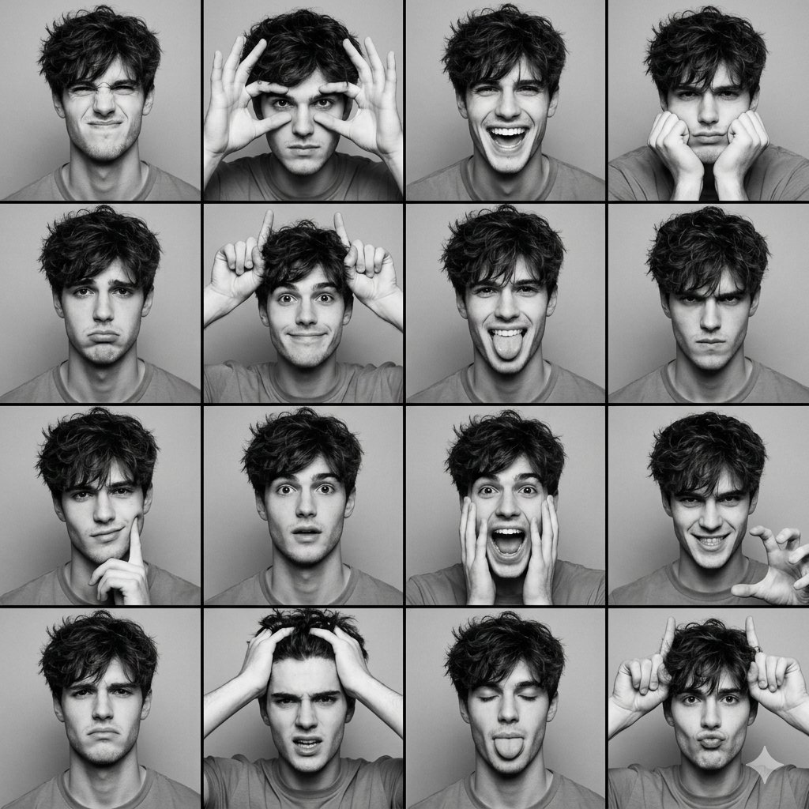
案例2511: "generation request": {
{ "generation request": { "meta data": { "task type": "black and white photobooth expression grid 4x4", "language": "...
🎨 查看AI提示词
🇨🇳 中文提示词
{ "generation_request": { "meta_data": { "task_type": "黑白照相亭表情网格_4x4", "language": "zh", "priority": "最高", "version": "v1.0_BW_PHOTOBOOTH_EXPRESSIONS_4X4" }, "inp...
🇬🇧 English Prompt
{ "generation_request": { "meta_data": { "task_type": "black_and_white_photobooth_expression_grid_4x4", "language": "en", "priority": "highest", "version": "v1.0_BW_PHOTO...
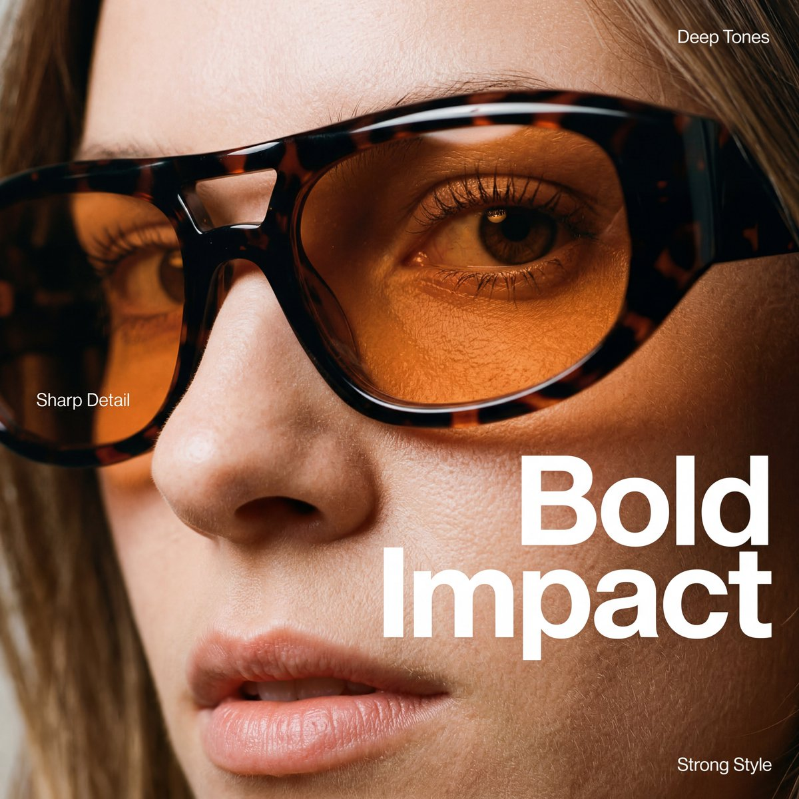
案例2509: An extreme close up, high fashion editorial portrait focusing...
An extreme close up, high fashion editorial portrait focusing on the right side of a person's face. The composition i...
🎨 查看AI提示词
🇨🇳 中文提示词
极端特写，高级时尚编辑肖像，聚焦于人物面部的右侧。构图为紧密裁切，显示鼻梁、部分嘴唇以及透过太阳镜窥视的一只眼睛。画面以浓重的电影胶片颗粒感和温暖、精致的工作室氛围为特征。 眼镜：大框、包覆式太阳镜，高光泽深色玳瑁纹醋酸纤维（斑驳的黑色与深红褐色）。镜片为鲜艳的半透明琥珀橙色，允许镜片后方的眼睛和睫毛可见但带有色彩滤镜。 人物：皮肤细腻，呈现自然质感和细小毛孔。光线为来自右侧的柔和侧光，在鼻子...
🇬🇧 English Prompt
An extreme close-up, high-fashion editorial portrait focusing on the right side of a person's face. The composition is a tight crop showing the bridge of the nose, a portion of the lips, and a single ...
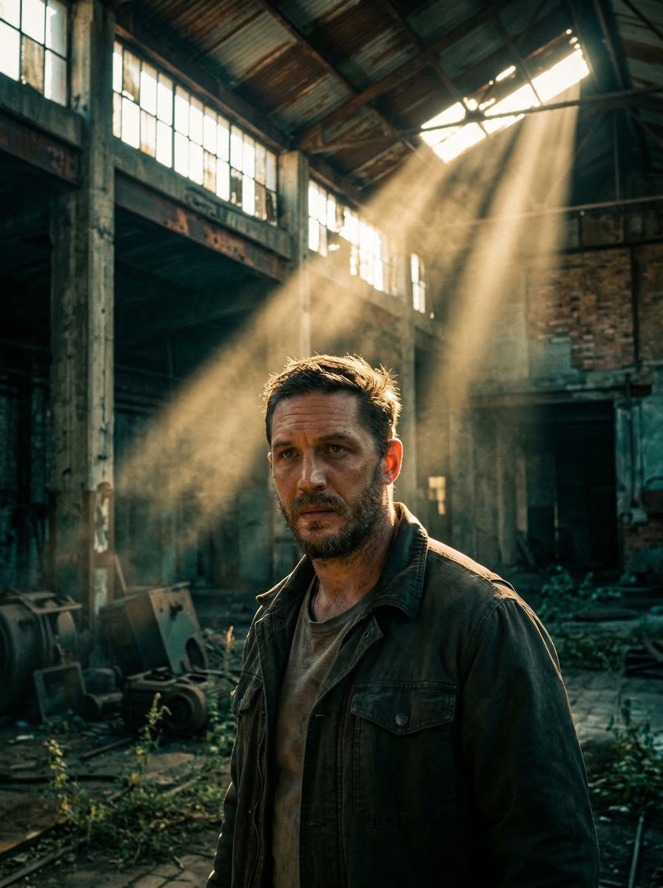
案例2499: Portrait of [your description], face illuminated by dramatic...
Portrait of [your description], face illuminated by dramatic cinematic volumetric god rays, intense shafts of golden...
🎨 查看AI提示词
🇨🇳 中文提示词
肖像：[你的描述]，面部被戏剧性的电影体积神光照亮，强烈的金色光束穿透尘土飞扬的废弃仓库，阳光从破碎的高窗和开裂的屋顶倾泻而下，漂浮的尘埃颗粒和雾霾使光线可见，强烈的轮廓光和逆光，情绪化的高对比氛围，背景中有工业混凝土柱和生锈的金属，电影剧照，史诗般的电影灯光，体积雾、神光、氛围深度，超细致的皮肤纹理，浅景深，以35mm Arri Alexa拍摄，电影级调色，青绿色阴影与温暖金色高光 --ar 3...
🇬🇧 English Prompt
Portrait of [your description], face illuminated by dramatic cinematic volumetric god rays, intense shafts of golden light beams cutting through dusty abandoned warehouse, sunlight streaming through b...
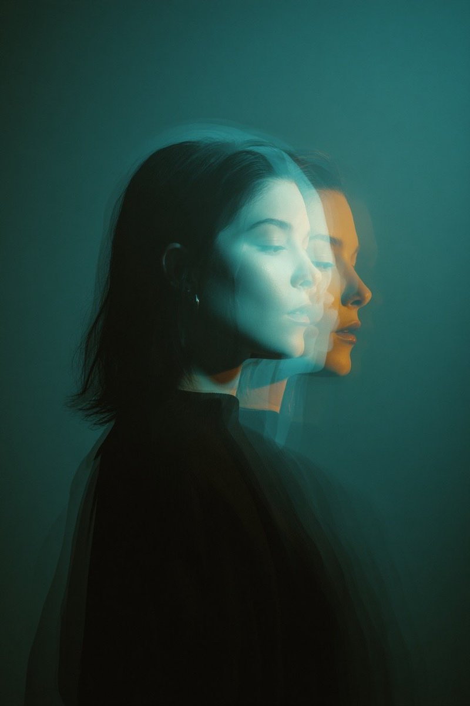
案例2498: Cinematic double exposure portrait of a woman in side profile...
Cinematic double exposure portrait of a woman in side profile, two overlapping faces slightly offset, teal and orange...
🎨 查看AI提示词
🇨🇳 中文提示词
电影感双重曝光肖像，一位女性侧面，两张重叠的面孔略有偏移，青绿色与橙色的情绪化照明，柔和的运动模糊，深色极简背景，高对比度，工作室摄影，梦幻氛围，超真实的皮肤质感，浅景深，85mm 镜头，戏剧性美术肖像，体积光。🎨
🇬🇧 English Prompt
Cinematic double exposure portrait of a woman in side profile, two overlapping faces slightly offset, teal and orange moody lighting, soft motion blur, dark minimal background, high contrast, studio p...

案例2493: made a sick new sports photography style in midjourney https:...
made a sick new sports photography style in midjourney https://t.co/tQ14PiBmFn
🎨 查看AI提示词
🇨🇳 中文提示词
在 Midjourney 里做出了一种超酷的新体育摄影风格 https://t.co/tQ14PiBmFn
🇬🇧 English Prompt
made a sick new sports photography style in midjourney https://t.co/tQ14PiBmFn
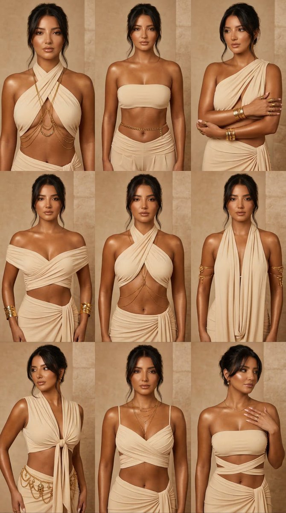
案例2480: "generation request": {
{ "generation request": { "meta data": { "tool": "NanoBanana Pro", "task type": "fashion variation grid 9panel", "lan...
🎨 查看AI提示词
🇨🇳 中文提示词
{ "generation_request": { "meta_data": { "tool": "NanoBanana Pro", "task_type": "时尚变化_9格网格", "language": "en", "priority": "最高", "version": "v1.0_GOLDEN_GODDESS_JEW...
🇬🇧 English Prompt
{ "generation_request": { "meta_data": { "tool": "NanoBanana Pro", "task_type": "fashion_variation_grid_9panel", "language": "en", "priority": "highest", "version":...
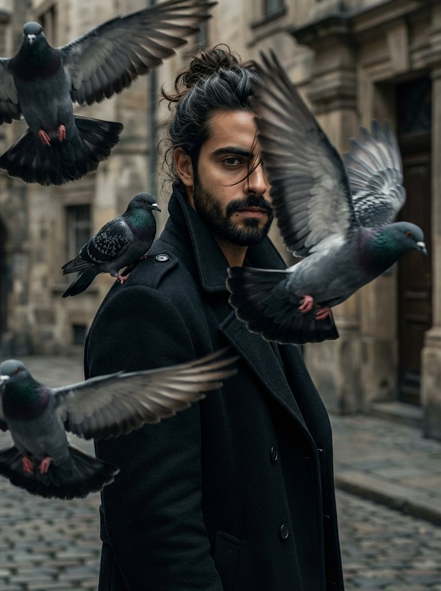
案例2476: 48k Hyper realistic, A cinematic portrait of a young man(keep...
48k Hyper realistic, A cinematic portrait of a young man(keep the facial features unchanged as uploaded image), his h...
🎨 查看AI提示词
🇨🇳 中文提示词
48k 超写实，电影质感的年轻男子肖像（保持面部特征与上传的图像相同），他的头发凌乱成髻垂到眼睛处，身穿一件深色长风衣，周围有鸽子戏剧性地飞舞。有些鸽子飞得非常靠近镜头，翅膀在运动中模糊，另一些停在他的肩上。他的表情严肃而神秘，半张脸被前景的一只鸽子遮挡。氛围感强的光线，带有强烈的阴影与高光。
🇬🇧 English Prompt
48k Hyper-realistic, A cinematic portrait of a young man(keep the facial features unchanged as uploaded image), his hair is messy manbun over the eye ,in a long dark trench coat, surrounded by pigeons...
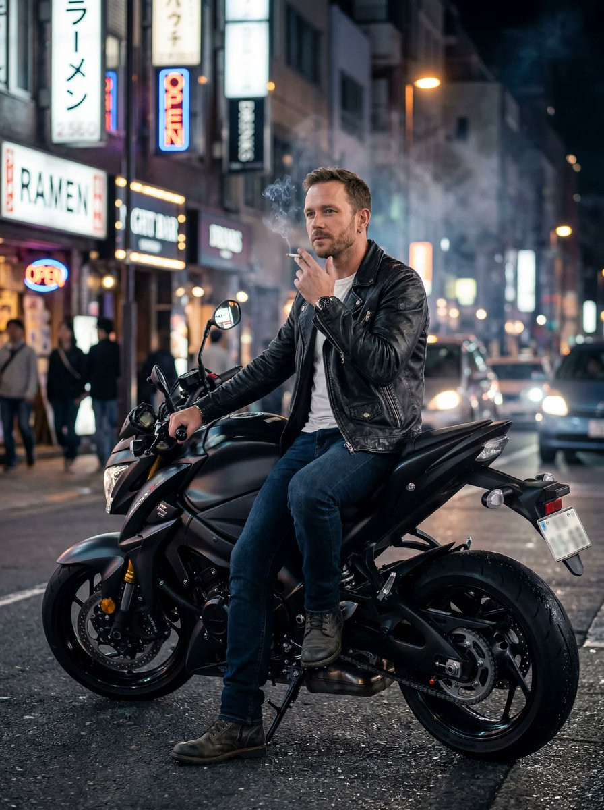
案例2475: "style": "photorealistic",
{ "style": "photorealistic", "subject": "adult man smoking a cigarette while sitting on a motorbike", "appearance": {...
🎨 查看AI提示词
🇨🇳 中文提示词
{ "style": "照片写实风格", "subject": "一名成年男子坐在摩托车上抽烟", "appearance": { "age": "三十多岁", "expression": "平静，略带严肃", "beard": "淡淡的胡茬", "clothing": "黑色皮夹克、白色T恤、深色牛仔裤、靴子" }, "pose": "随意地坐...
🇬🇧 English Prompt
{ "style": "photorealistic", "subject": "adult man smoking a cigarette while sitting on a motorbike", "appearance": { "age": "mid-30s", "expression": "calm, slightly serious", "beard...
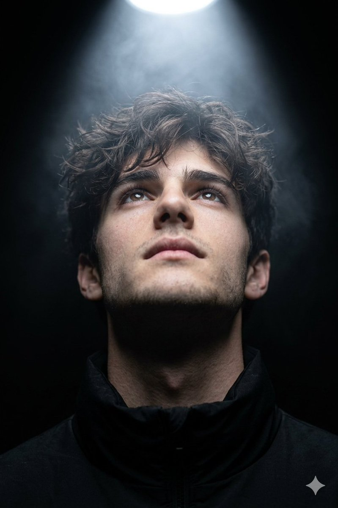
案例2473: A hyper realistic cinematic close up portrait (use uploaded f...
A hyper realistic cinematic close up portrait (use uploaded face as reference). The subject looks upward with chin sl...
🎨 查看AI提示词
🇨🇳 中文提示词
超逼真的电影感特写肖像（使用上传的人脸作为参考）。 主体仰望，微微抬起下巴，眼睛半睁，仿佛被头顶的光吸引。一束冷白色的顶灯营造戏剧性自上而下的光照，刻画面部轮廓，背景保持黑色。柔和的体积雾气形成微妙的光束。身着哑光黑色高领夹克。 使用85mm镜头拍摄，浅景深，高对比，带有灵性、超凡的氛围。肖像模式。
🇬🇧 English Prompt
A hyper-realistic cinematic close-up portrait (use uploaded face as reference). The subject looks upward with chin slightly raised and eyes half-open, as if drawn to a light above. A cool white overhe...
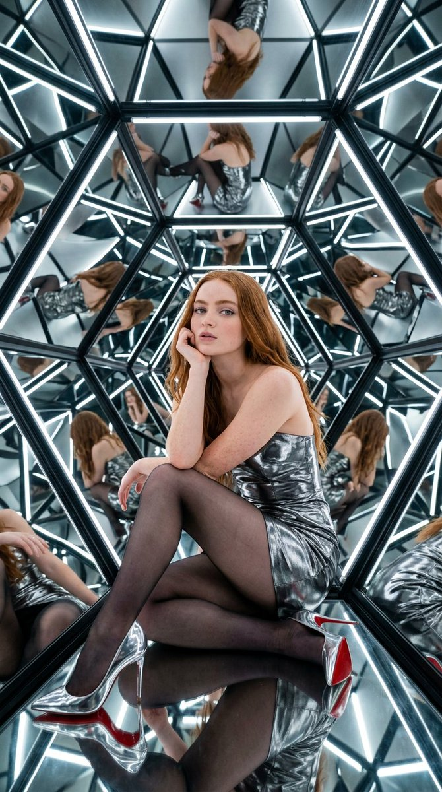
案例2471: "id": "subject",
[ { "id": "subject", "type": "person", "description": "Madelyn Cline with long blonde hair, looking at the camera.",...
🎨 查看AI提示词
🇨🇳 中文提示词
[ { "id": "subject", "type": "person", "description": "Madelyn Cline，长发金色，正看着镜头。", "pose": "她正跨步走过镜面结构，半步之间，一只手轻轻拂过金属框架，另一只手整理头发，同时回望镜头。", "clothing": { "dress": { ...
🇬🇧 English Prompt
[ { "id": "subject", "type": "person", "description": "Madelyn Cline with long blonde hair, looking at the camera.", "pose": "She is walking forward through the mirrored structure mi...
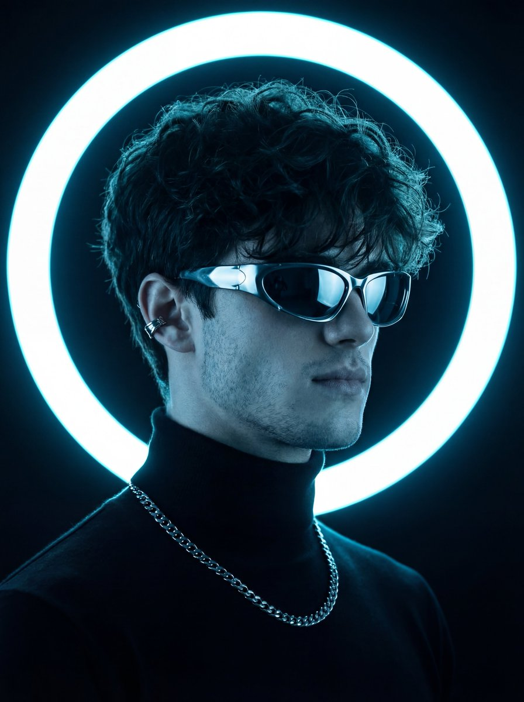
案例2469: captured in a dark studio environment with a strong minimalis...
captured in a dark studio environment with a strong minimalist and futuristic aesthetic. The subject is posed in thre...
🎨 查看AI提示词
🇨🇳 中文提示词
在一个暗色的工作室环境中拍摄，具有强烈的极简和未来主义美学。主体以三分之四侧面摆姿势，身穿深色衣物，如黑色高领毛衣和金属配饰，戴着能捕捉环境光的反光太阳镜。置于主体正后方的圆形霓虹灯创造出发光的光环效果，在头部和肩部产生精确的轮廓高光。光线偏冷且单色，主要为冰蓝色调（-6500K），在哑光纹理上投射出细微的反光和柔和的渐变。背景为深黑色（约 HEX #020509），使霓虹环的青色光芒（约
🇬🇧 English Prompt
captured in a dark studio environment with a strong minimalist and futuristic aesthetic. The subject is posed in three-quarter profile, wearing dark clothing such as a black turtleneck and metallic ac...
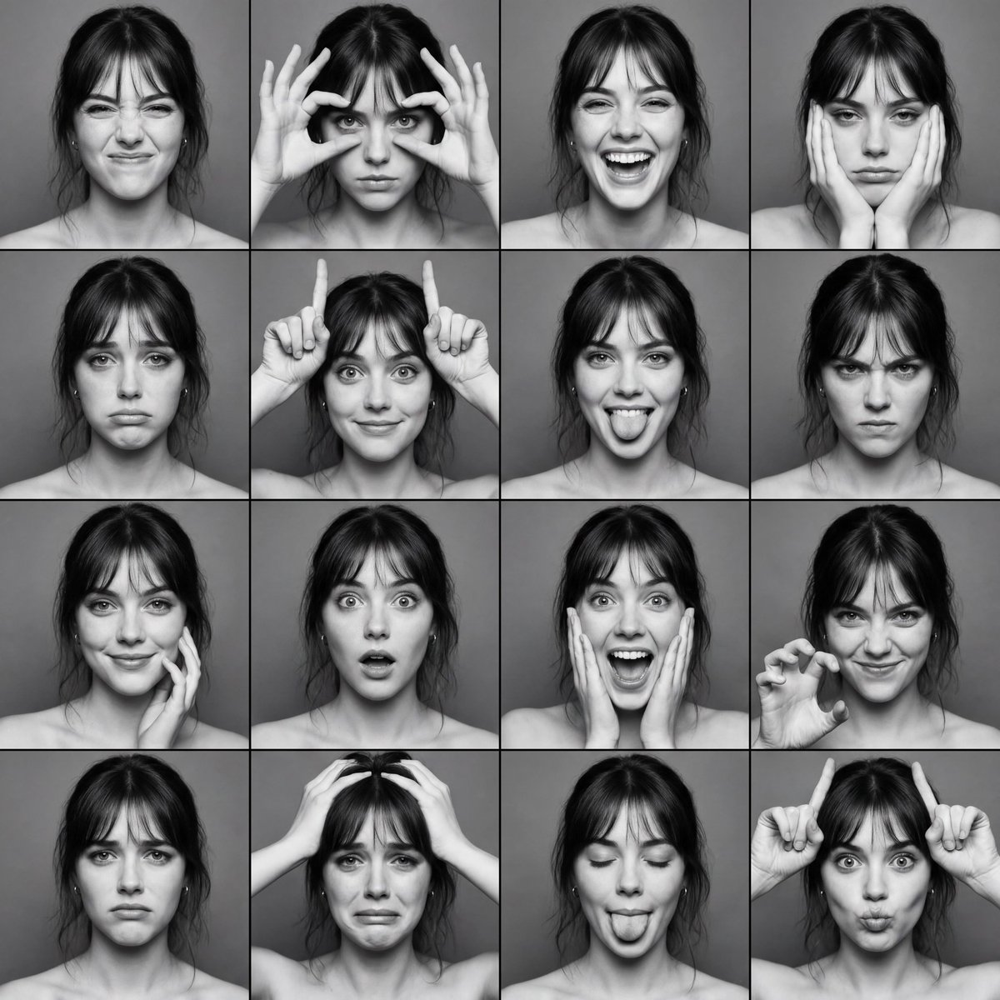
案例2466: "generation request": {
{ "generation request": { "meta data": { "task type": "black and white photobooth expression grid 4x4", "language": "...
🎨 查看AI提示词
🇨🇳 中文提示词
{ "generation_request": { "meta_data": { "task_type": "black_and_white_photobooth_expression_grid_4x4", "language": "en", "priority": "highest", "version": "v1.0_BW_PHOTO...
🇬🇧 English Prompt
{ "generation_request": { "meta_data": { "task_type": "black_and_white_photobooth_expression_grid_4x4", "language": "en", "priority": "highest", "version": "v1.0_BW_PHOTO...
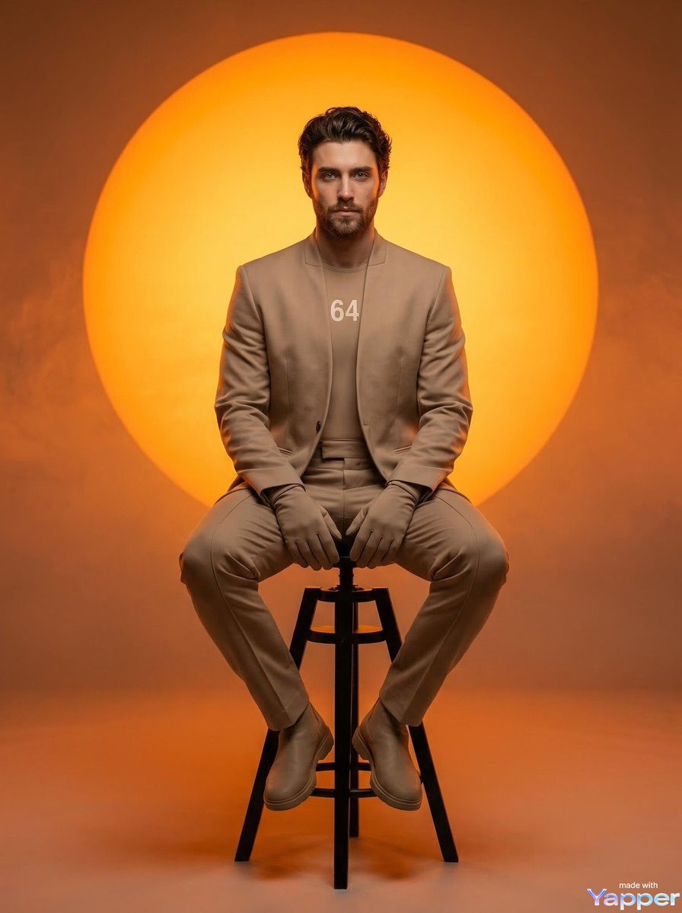
案例2465: A man with short curly hair and light facial hair sitting on...
A man with short curly hair and light facial hair sitting on a tall black stool, centered composition, wearing a mono...
🎨 查看AI提示词
🇨🇳 中文提示词
一名短卷发、带有淡淡面部毛发的男子坐在一把高黑凳子上，构图居中，穿着单色米色服装并佩戴手套，胸前印有“64”字样，极简未来感时尚，戏剧化的影棚灯光，身后有巨大的发光橙色太阳，温暖的橙色渐变背景，电影般的氛围，地面周围有薄雾，对称构图，时尚杂志风格摄影，超精细、焦点锐利，体积光，影棚拍摄，85mm镜头，高对比度，现代专辑封面风格
🇬🇧 English Prompt
A man with short curly hair and light facial hair sitting on a tall black stool, centered composition, wearing a monochrome beige outfit with gloves and the number "64" on the chest, minimalist futuri...
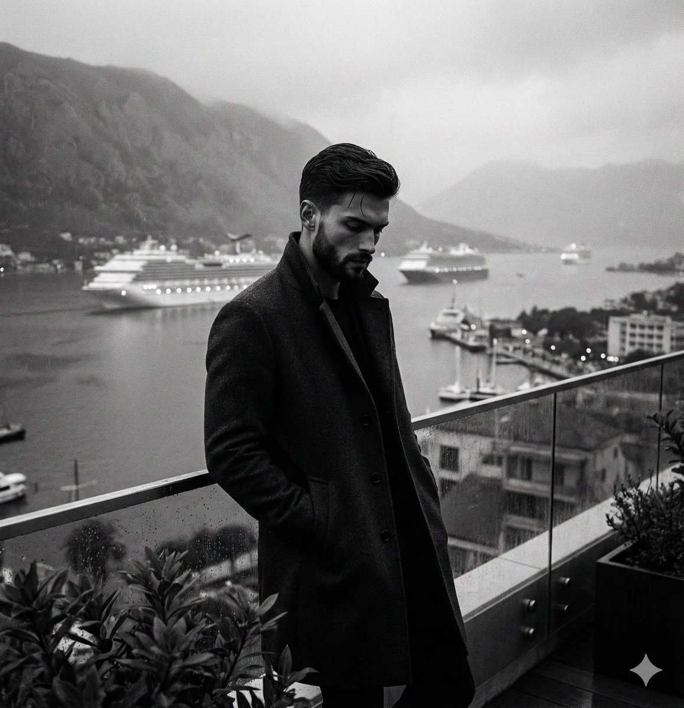
案例2461: "metadata": {
{ "metadata": { "image type": "photograph", "primary purpose": "editorial" }, "composition": { "rule applied": "rule...
🎨 查看AI提示词
🇨🇳 中文提示词
{ "metadata": { "image_type": "照片", "primary_purpose": "编辑" }, "composition": { "rule_applied": "三分法", "aspect_ratio": "1:1", "layout": "分层", "focal_points": [ "穿深色长外套的男人站在画面右侧", "在雾气弥漫的海湾中漂浮的被灯光照亮的游轮...
🇬🇧 English Prompt
{ "metadata": { "image_type": "photograph", "primary_purpose": "editorial" }, "composition": { "rule_applied": "rule of thirds", "aspect_ratio": "1:1", "layout": "layered", "focal_points": [ "Man in d...
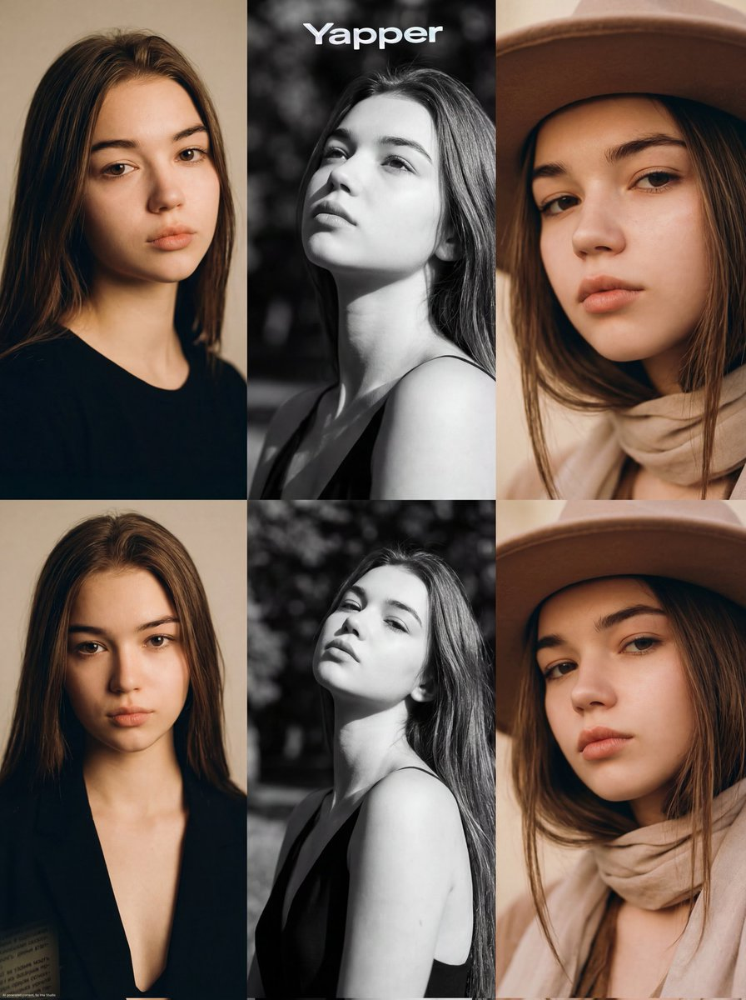
案例2457: "type": "image generation prompt",
{ "type": "image generation prompt", "style": "ultra realistic editorial fashion photography, Vogue style", "resoluti...
🎨 查看AI提示词
🇨🇳 中文提示词
{ "类型": "图像生成提示", "风格": "超写实编辑时尚摄影，Vogue 风格", "分辨率": "8K HDR", "长宽比": "3:1", "构图": { "布局": "3x1 横向网格", "描述": "三联编辑肖像构图，同一个人在不同艺术风格下的表现", "对称性": "各面板间间距均衡、排列整齐" }, "身份保持": { ...
🇬🇧 English Prompt
{ "type": "image_generation_prompt", "style": "ultra-realistic editorial fashion photography, Vogue-style", "resolution": "8K HDR", "aspect_ratio": "3:1", "composition": { "layout": "3x1...
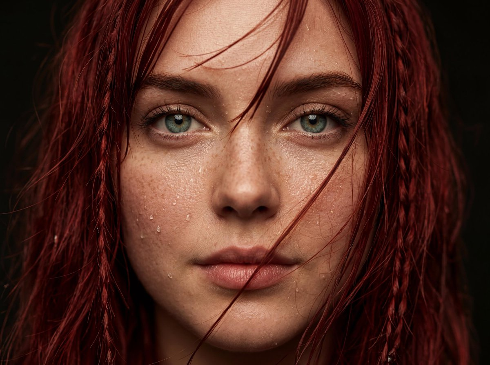
案例2455: Using the uploaded image as the only reference. create an ult...
Using the uploaded image as the only reference. create an ultra photorealistic cinematic close up portrait of a young...
🎨 查看AI提示词
🇨🇳 中文提示词
仅以上传的图像为唯一参考。创作一幅超逼真、具有电影感的特写肖像，描绘一位拥有鲜艳红发和穿透力十足的蓝绿色眼睛的年轻女性。她的头发略显湿润，被吹到脸上，发丝中穿插着精致的辫子。细小的水珠和自然的皮肤纹理在她的雀斑和面颊上闪烁，在暗色背景下被温暖而戏剧性的光线照亮。她微微向上看，表情平静而深邃，捕捉到一刻宁静的力量。强调超真实的皮肤细节、雀斑、湿发丝、反光的水滴和明亮的眼睛。浅景深、戏剧性对比、阴郁的...
🇬🇧 English Prompt
Using the uploaded image as the only reference. create an ultra-photorealistic cinematic close-up portrait of a young woman with vivid red hair and piercing blue-green eyes. Her hair is slightly wet a...
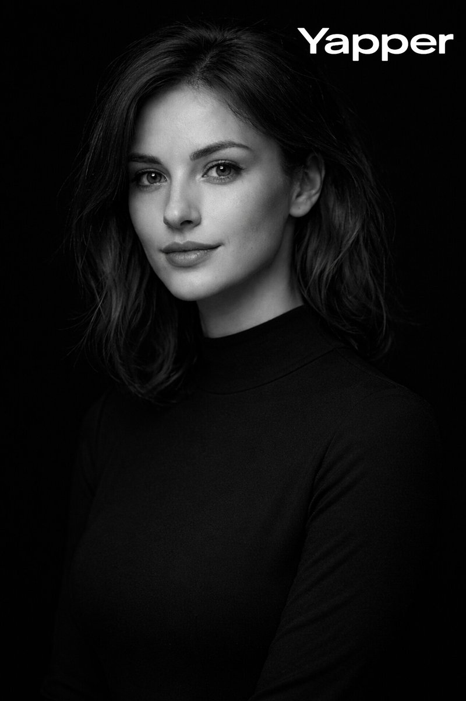
案例2451: "prompt": "High contrast monochromatic studio portrait of a E...
{ "prompt": "High contrast monochromatic studio portrait of a European woman around 25 years old. She has natural fac...
🎨 查看AI提示词
🇨🇳 中文提示词
{ "prompt": "高对比度的单色工作室肖像，主体是一名大约25岁的欧洲女性。她的面部比例自然，颧骨柔和，富有表现力的眼睛，以及可见毛孔和细致纹理的真实肌肤。她的表情平静、优雅而自信，柔和地望向镜头。她姿态优雅，一只手轻触颈部，肩膀略微倾斜。她穿着一件简单而典雅的黑色连衣裙，柔和地勾勒出锁骨和肩线。头发自然，发丝细节清晰，发型柔和。采用极简的现代工作室照明，只有一个聚焦主光灯，略高于眼平线，...
🇬🇧 English Prompt
{ "prompt": "High-contrast monochromatic studio portrait of a European woman around 25 years old. She has natural facial proportions, delicate cheekbones, expressive eyes, and realistic skin texture w...
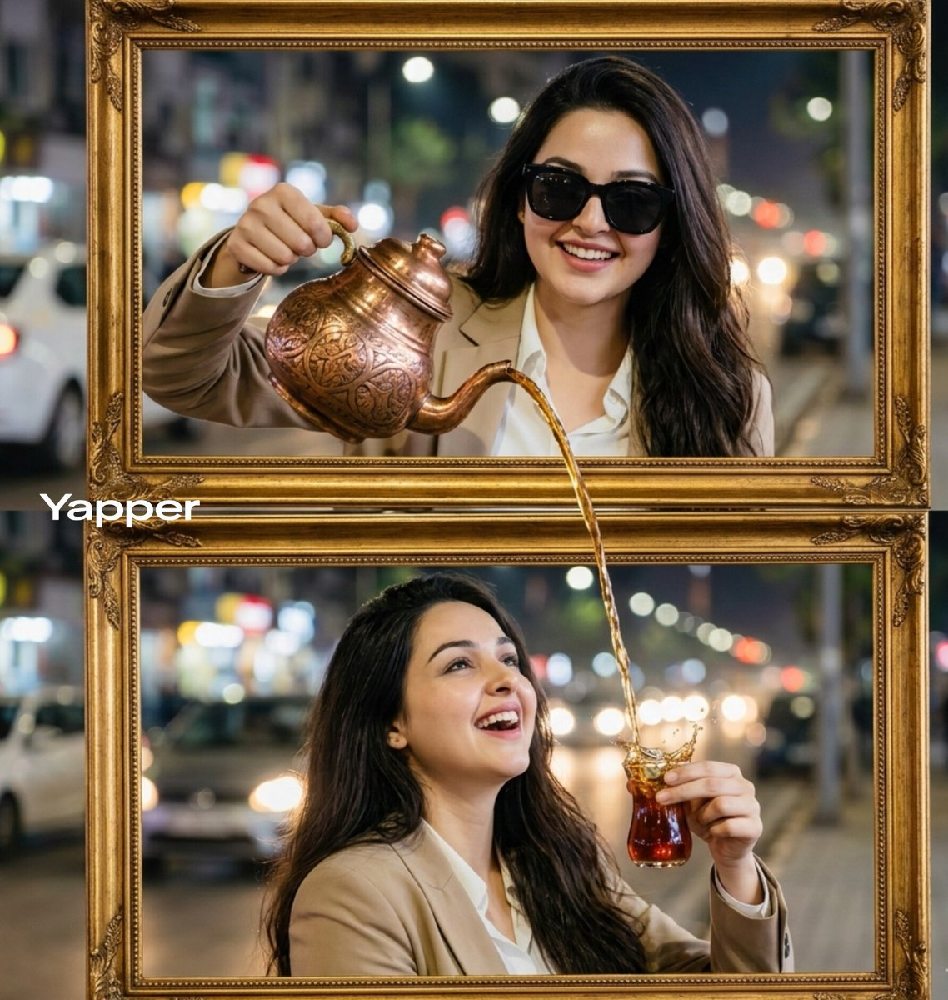
案例2450: Ultra realistic cinematic two frame composition. In the top g...
Ultra realistic cinematic two frame composition. In the top golden vintage frame, an elegant stylish woman wearing a...
🎨 查看AI提示词
🇨🇳 中文提示词
超写实电影感的双画框构图。 在上方的金色复古画框中，一位优雅时尚的女性穿着米色西装外套、白衬衫并戴着黑色太阳镜，微笑着将茶从一把华丽雕刻的铜壶向画框外倒出。 茶水顺畅地从上框流出，进入下方的画框。 在下方的金色画框中，同一位女性微微仰头，面带喜悦表情，手持传统土耳其茶杯，茶水在空中戏剧性地溅入杯中。 背景为夜晚的城市天际线，温暖的灯光与水面倒影，浅景深、戏剧性光影、高细节、液体连接两框的超现实透视...
🇬🇧 English Prompt
Ultra-realistic cinematic two-frame composition. In the top golden vintage frame, an elegant stylish woman wearing a beige blazer, white shirt, and black sunglasses smiles while pouring tea from an or...
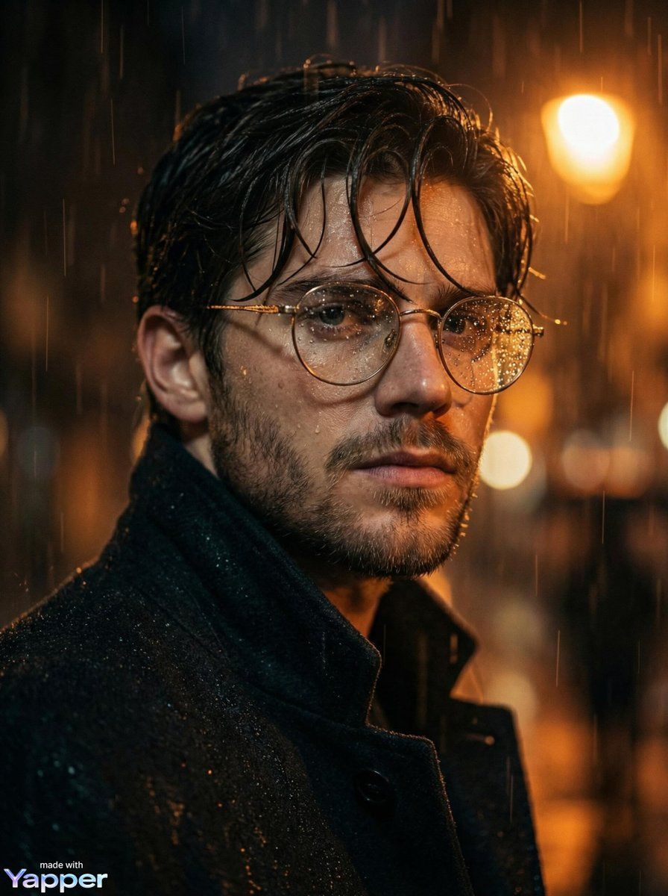
案例2449: Cinematic close up portrait of a young man standing in heavy...
Cinematic close up portrait of a young man standing in heavy rain at night, wearing round metal glasses and a dark co...
🎨 查看AI提示词
🇨🇳 中文提示词
电影般的特写肖像，一名年轻男子在夜晚的大雨中站立，戴着圆形金属眼镜和深色外套，湿发垂落在额头上，淡淡的胡茬。雨滴附着在他的眼镜和皮肤上，戏剧性且富有情绪的灯光，背景是暖橙色路灯散景，浅景深，强烈的沉思表情，粗粝的黑色电影氛围，超写实，高对比度，细致的皮肤纹理，电影级调色，85mm 镜头，f/1.8，照片级写实，黑暗都市美学，电影剧照质感。
🇬🇧 English Prompt
Cinematic close-up portrait of a young man standing in heavy rain at night, wearing round metal glasses and a dark coat, wet hair falling across his forehead, light stubble beard. Raindrops clinging t...
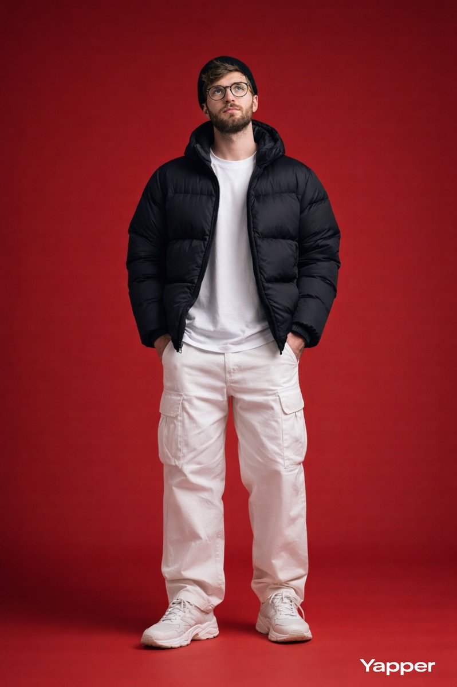
案例2448: Ultra realistic full body studio fashion portrait of a stylis...
Ultra realistic full body studio fashion portrait of a stylish young man standing confidently, looking slightly upwar...
🎨 查看AI提示词
🇨🇳 中文提示词
超写实全身影棚时尚肖像，一位时髦的年轻男子自信地站立，目光微微向上。他穿着黑色羽绒服、白色T恤、宽松白色工装裤和厚底白色运动鞋。配饰包括圆形透明眼镜和黑色针织毛线帽。双手插兜，姿态放松自信。干净无缝的纯红色影棚背景。柔和的专业影棚灯光，衣物质感清晰，编辑风格的时尚摄影。
🇬🇧 English Prompt
Ultra-realistic full-body studio fashion portrait of a stylish young man standing confidently, looking slightly upward. He wears a black puffer jacket, white t-shirt, loose white cargo pants, and chun...

案例2445: Create a high end promotional poster for International Women'...
Create a high end promotional poster for International Women's Day, designed as a luxury editorial campaign seamlessl...
🎨 查看AI提示词
🇨🇳 中文提示词
为国际妇女节制作一张高端宣传海报，设计为奢华编辑型活动，将写实摄影棚摄影与精致现代平面设计无缝融合。 身份匹配（关键）：严格参照上传的图像进行精确面部与身份匹配。准确保留面部结构、比例、肤色、发型与自然表情——主体在整个过程中必须始终清晰且毫无疑问地可识别。 构图与画面裁切：竖向 4:5 海报格式。三分之四坐姿肖像，裁至大腿中部，主体占画面 30–40%。主体稍微偏左置中，右侧预留刻意的视觉呼吸空...
🇬🇧 English Prompt
Create a high-end promotional poster for International Women's Day, designed as a luxury editorial campaign seamlessly blending photorealistic studio photography with sophisticated modern graphic desi...
案例2441: Create A deeply atmospheric and cinematic interior shot, capt...
Create A deeply atmospheric and cinematic interior shot, captured from a slightly low angle perspective, looks forwar...
🎨 查看AI提示词
🇨🇳 中文提示词
创建一个极具氛围感且具有电影感的室内镜头，从略低的角度拍摄，镜头位于昏暗公交车的一个空座位上，向前望去。主角是前方几排坐着的这名男子，他直视镜头，带着微妙而强烈的凝视。他穿着一件深色羽绒冬季外套，头上拉着浅蓝灰色连帽衫的帽子，遮住了脸部的部分区域，使他的眼睛处于阴影之中，增添神秘感。整体色调偏冷且去饱和，以深青色、深蓝和柔和的绿色为主，营造出忧郁或内省的情绪。公交车内光线稀疏，人造灯光投射出柔和、...
🇬🇧 English Prompt
Create A deeply atmospheric and cinematic interior shot, captured from a slightly low-angle perspective, looks forward from an empty seat in a dimly lit bus. The primary subject is this man seated a f...
案例2439: Ultra realistic cinematic fashion photograph of a stylish blo...
Ultra realistic cinematic fashion photograph of a stylish blonde woman standing confidently between two moving escala...
🎨 查看AI提示词
🇨🇳 中文提示词
一张超写实的电影感时尚摄影照片，拍摄对象是一位时髦的金发女性，在一家奢华购物中心内自信地站在两部活动扶梯之间，身穿透视黑色蕾丝长袖上衣和飘逸的裙子，手提一只小巧的白色设计师手袋，头发戏剧性地向侧面飞扬，仿佛被捕捉到运动瞬间，扶梯上上下移动的模糊人群在她周围形成动感的运动条纹，而她在中央依然保持清晰且完美的对焦，戏剧化的时尚编辑式照明，浅景深，高对比度，Vogue 杂志风格，动态模糊摄影，扶梯对称构...
🇬🇧 English Prompt
Ultra-realistic cinematic fashion photograph of a stylish blonde woman standing confidently between two moving escalators inside a luxury shopping mall, wearing a sheer black lace long-sleeve top and ...

案例2434: Surrounding the realistic main subject are multiple cute, 3D...
Surrounding the realistic main subject are multiple cute, 3D style chibi miniatures of the same person, with identica...
🎨 查看AI提示词
🇨🇳 中文提示词
围绕真实的主要主体的是多个可爱的 3D 风格 Q 版（chibi）小人偶，都是同一个人，面部特征、发型、体型比例和服饰完全相同。 这些 Q 版人偶自然分布在主体周围，以迷人且不突兀的方式俏皮地与她或附近的元素互动。 在图像上叠加充满活力的手绘涂鸦效果：主体周围柔和的白色轮廓、俏皮的闪光、涂鸦爱心、小花、笑脸图标，以及漂浮的白色手写短语，如“闪耀”、“美好的一天”和“快乐”。 风格将超写实摄影与...
🇬🇧 English Prompt
Surrounding the realistic main subject are multiple cute, 3D-style chibi miniatures of the same person, with identical facial features, hairstyle, body proportions, and outfit. The chibi figures are ...
案例2431: Ultra realistic fashion studio portrait of a confident man an...
Ultra realistic fashion studio portrait of a confident man and woman standing with arms crossed, wearing matching whi...
🎨 查看AI提示词
🇨🇳 中文提示词
超写实的时尚工作室肖像，一对自信的男女站立、双臂交叉，穿着袖子为蓝色的配套白色卫衣，戏剧性的阳光透过百叶窗倾泻，在他们的面部和衣物上投下条纹阴影，干净简约的工作室背景，轮廓分明的面部特征，自然的皮肤质感，电影感灯光，高对比的阴影图案，时尚编辑摄影风格，85mm 镜头，浅景深，超细致的皮肤和布料纹理，专业工作室灯光，8K。
🇬🇧 English Prompt
Ultra-realistic fashion studio portrait of a confident man and woman standing with arms crossed, wearing matching white sweatshirts with blue sleeves, dramatic sunlight streaming through window blinds...

案例2430: Ultra detailed studio product render of a LEGO Technic style...
Ultra detailed studio product render of a LEGO Technic style vehicle model based precisely on the next uploaded refer...
🎨 查看AI提示词
🇨🇳 中文提示词
超细节工作室产品渲染，基于接下来上传的参考照片精确制作的 LEGO Technic 风格车辆模型。该 LEGO 拼装必须完全由真实的 LEGO Technic 零件和面板构建，并精确复制真实车辆的外形、比例、车身线条、配色、大灯、格栅设计、车轮及整体轮廓。 车辆置于干净的专业产品摄影棚布景中，放置在平滑的亚光表面上。车后方摆放一个大型 LEGO Technic 产品包装盒，稍微虚化但仍清晰可辨为...
🇬🇧 English Prompt
Ultra-detailed studio product render of a LEGO Technic style vehicle model based precisely on the next uploaded reference photo. The LEGO build must replicate the real vehicle’s exact shape, proportio...
案例2428: A surreal, high concept masterpiece featuring “uploaded face...
A surreal, high concept masterpiece featuring “uploaded face as reference” seated casually on the edge of a colossal,...
🎨 查看AI提示词
🇨🇳 中文提示词
一件超现实、高概念的大师级作品，以“上传的人脸作为参考”为特色，主体随意地坐在一部巨大的悬浮智能手机的边缘，该手机悬挂在高耸的白雪覆盖山脉之上。主体穿着单色青蓝色套装，身着贴身迷你裙，披着毛绒人造皮草夹克，并穿着绒面及膝靴，一手拿着一大束相配的浅蓝色氦气球。 这部巨型智能手机类似一款高端设备，配有三镜头相机阵列和金属银色边框，水平悬浮，显示出逼真的充电端口和扬声器格栅。明亮清晰的日光在手机表面投...
🇬🇧 English Prompt
A surreal, high-concept masterpiece featuring “uploaded face as reference” seated casually on the edge of a colossal, floating smartphone suspended high above a snow-capped mountain range. The subject...
案例2426: Cinematic surreal scene of a young woman falling forward thro...
Cinematic surreal scene of a young woman falling forward through a swirling vortex of everyday objects inside a cozy...
🎨 查看AI提示词
🇨🇳 中文提示词
电影般超现实的场景：一个年轻女子向前坠落，穿过一个在温馨房间内旋转的日常物品漩涡，双臂伸向镜头，仿佛试图重新找回平衡。她周围，物品以混乱的慢动作漂浮：一只兴奋的罗威纳犬跳跃中叼着一个甜甜圈、一只柔软的泰迪熊无重力地漂浮着、翻动着书页的开着的书在空中翻页、散落的纸张、一个红色背包、旋转的眼镜、漂浮的枕头、一个皮质钱包，以及一杯咖啡剧烈飞溅，液体在半空中悬停。一只粉色糖霜甜甜圈在靠近地板处翻滚，阳光透...
🇬🇧 English Prompt
Cinematic surreal scene of a young woman falling forward through a swirling vortex of everyday objects inside a cozy room, arms reaching toward the camera as if trying to regain balance. Around her, o...
案例2416: Using the reference picture, create A stylish man sitting on...
Using the reference picture, create A stylish man sitting on a luxurious vintage red velvet sofa, wearing black silk...
🎨 查看AI提示词
🇨🇳 中文提示词
使用参考图片，创建一位时尚的男性坐在奢华复古红色天鹅绒沙发上，穿着黑色丝质衬衫，戴着太阳镜，自信地抱着一只配有电影感灯光的猎豹，沙发上也散落着美元，背景模糊的后方有两名守卫，奢华生活方式，戏剧性氛围。" 100% 真实面孔 8K 分辨率
🇬🇧 English Prompt
Using the reference picture, create A stylish man sitting on a luxurious vintage red velvet sofa, wearing black silk shirt, sunglasses, confi-dently holding a cheetah adorned with cinematic lighting, ...
案例2399: Panels are NOT edge to edge
Panels are NOT edge to edge Visible thin white spacing between panels Subtle outer white margin around the entire gri...
🎨 查看AI提示词
🇨🇳 中文提示词
面板不是延伸至边缘 面板之间可见细小的白色间隙 整个网格周围有细微的外部白色边距 简洁现代的界面风格布局 每个卡片略微圆角 面板 1 — 快乐 / 庆祝（黄色） 明亮的黄色渐变背景 双臂举起 眼睛闭着 张口大笑 充满活力的姿态 面板 2 — 吃惊（蓝色） 蓝色渐变背景 双手放在脸颊上 瞪大眼睛 张开嘴 眉毛上扬 面板 3 — 严肃 / 认真的（红色） 红色背景 双臂交叉 眉头紧锁 嘴唇紧闭，...
🇬🇧 English Prompt
Panels are NOT edge-to-edge Visible thin white spacing between panels Subtle outer white margin around the entire grid clean modern UI-style layout Slight rounded corners on each tile Panel 1 — Joyful...
案例2377: Editorial photography, a woman wearing a structured deep teal...
Editorial photography, a woman wearing a structured deep teal blazer standing against a pale blue sky. A bird in heav...
🎨 查看AI提示词
🇨🇳 中文提示词
编辑摄影，一位身着有结构感的深青蓝色西装外套的女性站在苍蓝的天空前。一只呈强烈运动模糊的鸟从她面前飞过，遮住她的面容，超现实主义风格。高颗粒纸质纹理、电影般柔和灯光、极简构图。杂志封面美学，左侧有干净的白色纵向边栏，内含粗体黑色排版。低饱和冷色调、艺术化模糊、35mm 胶片质感、前卫时尚氛围
🇬🇧 English Prompt
Editorial photography, a woman wearing a structured deep teal blazer standing against a pale blue sky. A bird in heavy motion blur is flying across her face, obscuring her features, surrealist style. ...

案例2376: Ultra realistic, glossy magazine style portrait of a young ma...
Ultra realistic, glossy magazine style portrait of a young male model, bald, with a stem, rugged expression and defin...
🎨 查看AI提示词
🇨🇳 中文提示词
超写实、光泽杂志风格的人像，年轻男性模特，秃顶，表情严峻粗犷，面部质感清晰（毛孔、胡茬阴影、细微疤痕）。相机位于鞋子高度（极低角度），广角视角，模特向镜头倾斜，身体前倾，手持一罐 Pepsi 极其靠近镜头——罐身标签完全面向观众且清晰可读，金属反光真实。穿着红色 Adidas 运动服，Adidas 标志可见，干净的白色运动鞋，一只脚向前踏在前景中。城市化的苏联1990年代街道环境：风化的混凝土、复...
🇬🇧 English Prompt
Ultra-realistic, glossy magazine-style portrait of a young male model, bald, with a stem, rugged expression and defined facial texture (pores, stubble shadows, subtle scars). Camera at shoe level (ver...

案例2371: Prompt Studio: Minimalist Luxury Product Design with Nano Ban...
Prompt Studio: Minimalist Luxury Product Design with Nano Banana 2 in Firefly Pristine product visualization, [object...
🎨 查看AI提示词
🇨🇳 中文提示词
Prompt Studio：带有 Nano Banana 2 in Firefly 的极简奢华产品设计 无瑕的产品可视化，[object] 在 [material] 中，解构化的悬浮部件悬浮在一个精准对齐的工程序列中，纯白渐变虚空，带有微妙的深度衰减，雕塑感的工作室照明，带有尖锐的轮廓高光，镜面抛光与哑光表面的对比，超微距镜头揭示微观的 [surface detail] 与内部的 [compon...
🇬🇧 English Prompt
Prompt Studio: Minimalist Luxury Product Design with Nano Banana 2 in Firefly Pristine product visualization, [object] in [material], deconstructed floating parts suspended in a precision-aligned eng...

案例2368: Hyper realistic cinematic Create an 8k close up portrait of a...
Hyper realistic cinematic Create an 8k close up portrait of a beautiful woman with medium, brown, slightly wind swept...
🎨 查看AI提示词
🇨🇳 中文提示词
超真实的电影感。创作一张8k分辨率的特写肖像，描绘一位美丽的女人，拥有中等长度、棕色、略被风吹拂的头发落在她的脸上。她那引人注目的浅色眼睛向上方和右上方凝视，捕捉到一道锋利的自然光斜射，照亮她颧骨高点、鼻梁以及光滑、白皙的肌肤，亮泽、呈淡紫粉调的双唇，以及一件轻薄的丝质衬衫。她脸部的其他部分和背景都笼罩在深沉、戏剧性的阴影中（明暗对比，chiaroscuro），强调光与影的交错。她左肩上能看到深色...
🇬🇧 English Prompt
Hyper-realistic cinematic Create an 8k close-up portrait of a beautiful woman with medium, brown, slightly wind-swept hair falling across her face. Her striking, light-colored eyes gaze upwards and to...

案例2366: Nano Banana pro on Gemini app.
Nano Banana pro on Gemini app. Prompt: Three hands holding colorful glass soda bottles (lemon, grapefruit, lime) clin...
🎨 查看AI提示词
🇨🇳 中文提示词
Nano Banana pro 在 Gemini 应用上。 提示： 三只手举着五彩玻璃汽水瓶（柠檬、葡萄柚、青柠）相互碰杯，明亮阳光的户外场景，柔和的海滩/泳池背景虚化，自然光，瓶身有冷凝水，生活方式摄影，色彩鲜艳，浅景深，真实欢乐的氛围，商业饮料广告，超写实，8K。 图像 2 三只手举着极简风玻璃瓶，瓶身标签为杏仁奶、开心果奶、巧克力燕麦奶，干净中性背景，柔和的棚灯光，现代品牌设计，居中构图，...
🇬🇧 English Prompt
Nano Banana pro on Gemini app. Prompt: Three hands holding colorful glass soda bottles (lemon, grapefruit, lime) clinking together, bright sunny outdoor setting, soft beach/pool background blur, natu...

案例2357: Ultra realistic product photography of a chilled blue Pepsi c...
Ultra realistic product photography of a chilled blue Pepsi can placed upright on fresh green grass, covered with col...
🎨 查看AI提示词
🇨🇳 中文提示词
超写实的产品摄影：一听冰镇的蓝色百事可乐罐直立放在新鲜的绿草上，罐身覆盖着冰冷的水珠和冷凝水。冰块散落在罐底周围。罐身印有生动、多彩的插画，描绘马里奥和路易吉并肩站在一个奇幻的蘑菇王国场景中，场景有红色和蓝色的蘑菇、绿色管道、问号方块，背景有一座城堡。罐上印有明亮、欢快、卡通风格的艺术图案。 在自然日光下的户外拍摄，背景为柔和模糊的花园（散景效果），明亮的绿色叶片和透过树木的阳光。浅景深、微距细...
🇬🇧 English Prompt
Ultra-realistic product photography of a chilled blue Pepsi can placed upright on fresh green grass, covered with cold water droplets and condensation. Ice cubes scattered around the base. The can fea...

案例2355: Create a high contrast black and white portrait in a quiet cl...
Create a high contrast black and white portrait in a quiet classroom.Use uploaded image as reference. Person leans ca...
🎨 查看AI提示词
🇨🇳 中文提示词
在安静的教室里创作一幅高对比度的黑白肖像。使用上传的图片作为参考。人物随意倚靠在一把木制校椅上，双腿交叉，穿着海军蓝运动衫、米色斜纹棉布裤（chinos）和黑白色匡威帆布鞋。表情平静、中性。 他的左臂靠在课桌上，右手随意垂落在一侧。 在他身后是一面近白色的教室墙壁，表面有明显磨损，按格状别着纸张、照片和便签。 有一页纸清晰地印有单词 “Silence”，位于他头顶上方。 阳光从右侧强烈射入，在墙上...
🇬🇧 English Prompt
Create a high-contrast black and white portrait in a quiet classroom.Use uploaded image as reference. Person leans casually on a wooden school chair, legs crossed, wearing a navy blue sweatshirt, beig...
案例2352: Make an Ultra wide fisheye lens perspective shot from ground...
Make an Ultra wide fisheye lens perspective shot from ground level looking straight up at a young woman use image for...
🎨 查看AI提示词
🇨🇳 中文提示词
采用超广角鱼眼镜头视角的拍摄，从地面仰视直对一名年轻女性（使用该图片作为面部参考）。她在两栋砖砌建筑之间半空蹲起，建筑构成一个环形的天空框架。她戏剧性地向相机伸出一只手，手指大幅张开，制造强烈的前景畸变与纵深感。动态的动作姿势，自信的表情，休闲街头装扮：贴身白色T恤、蓝色直筒牛仔裤、红白运动鞋。欧洲城市街区场景，砖房、瓦屋顶，窗户在画面边缘可见。明亮的白昼，晴朗的蓝天，自然光照，锐利对焦，高度细节...
🇬🇧 English Prompt
Make an Ultra-wide fisheye lens perspective shot from ground level looking straight up at a young woman use image for face reference crouching mid-air between brick buildings forming a circular frame...
案例2351: A highly detailed, cinematic portrait of Tom Cruise, featurin...
A highly detailed, cinematic portrait of Tom Cruise, featuring a gritty, industrial aesthetic. He has messy, spiked d...
🎨 查看AI提示词
🇨🇳 中文提示词
一幅高度细致、具有电影质感的汤姆·克鲁斯肖像，呈现出粗犷的工业美学。他有着凌乱、竖起的深金色短发，脸上带着胡茬，神情专注而疲惫。画面为特写镜头，他用右手将点燃的香烟凑到嘴边；一缕浓厚的白色烟雾向上盘旋。他的手指上戴着一枚醒目的银色印章戒指，刻有奢侈品牌互扣的“GG”标志。男子身穿一件暗红色做旧皮夹克，皮夹克上布满白色油漆斑点和深深的褶皱，里面叠穿着一件污渍斑斑的奶油色帆布围裙。画面中央用干净、白色...
🇬🇧 English Prompt
A highly detailed, cinematic portrait of Tom Cruise, featuring a gritty, industrial aesthetic. He has messy, spiked dark-blonde hair, facial stubble, and a look of intense, weary focus. He is captured...
案例2348: Create a high impact editorial studio portrait using the pers...
Create a high impact editorial studio portrait using the person from the attached reference photo as the only identit...
🎨 查看AI提示词
🇨🇳 中文提示词
使用附带参考照片中的该人作为唯一身份来源，创建一张具有强烈视觉冲击力的社论影棚人像。 准确保留受试者的面部结构、肤色、比例、发型、年龄及整体相似度，完全与参考图像一致。不得修改、增强、重塑、美化或重新诠释任何面部特征。必须绝对保证身份准确性。 构图：受试者为中近景（头部与肩膀），从低角度拍摄，略微仰视以营造强大、主导的存在感。目光朝向镜外，向上望向空间，表情严肃、专注、强烈。 服装：优质黑色...
🇬🇧 English Prompt
Create a high-impact editorial studio portrait using the person from the attached reference photo as the only identity source. Preserve the subject’s facial structure, skin tone, proportions, hairsty...
案例2340: A hyper realistic surreal composite scene set on a wooden tab...
A hyper realistic surreal composite scene set on a wooden tabletop. A large oversized smartphone dominates the frame,...
🎨 查看AI提示词
🇨🇳 中文提示词
一个设置在木质桌面上的超写实超现实复合场景。一个超大号的智能手机占据画面主体，制造出强烈的维度断裂错觉。手机屏幕上，来自参考图片的女性以特写形式出现在一个冬季环境中，显得更大，开心地微笑着，手里拿着一个带有明显百事可乐标志的透明玻璃杯。 一只真实的人手从一瓶表面覆盖冷凝水滴的冰冷百事可乐瓶中向手机屏幕直接倒出深色可乐。液体在视觉上突破显示屏并流入她在屏幕内手持的玻璃杯中，营造出强烈的超现实效果。...
🇬🇧 English Prompt
A hyper-realistic surreal composite scene set on a wooden tabletop. A large oversized smartphone dominates the frame, creating a strong dimensional-break illusion. On the phone screen, the woman from ...
案例2339: Full body fashion editorial of a beautiful Indonesian woman,...
Full body fashion editorial of a beautiful Indonesian woman, wet pavement outside warkop, soft rain blur background....
🎨 查看AI提示词
🇨🇳 中文提示词
一位美丽印尼女性的全身时尚画报，warkop 外湿润的人行道，柔和雨幕模糊背景。 Canon R5，85mm f/1.4 阴天自然光 冷色调 Portra LUT 和谐：70% 纪实。 sRef：雨中街道写实。 隐藏令牌：潮湿空气质感，反光沥青。
🇬🇧 English Prompt
Full body fashion editorial of a beautiful Indonesian woman, wet pavement outside warkop, soft rain blur background. Canon R5, 85mm f/1.4 Overcast natural light Cool-toned Portra LUT Harmony: 70% docu...
案例2337: Create an ultra realistic, cinematic 8K image with high contr...
Create an ultra realistic, cinematic 8K image with high contrast dramatic lighting and a photo real digital painting...
🎨 查看AI提示词
🇨🇳 中文提示词
创建一幅超逼真、电影感的8K图像，具有高对比度的戏剧性光效和照片级的数字绘画美学——面部参考必须完全一致。该男子以全身侧面朝右的姿态出现，他的面部和发型需完美复制，不做任何改动。穿着现代休闲街头服；浅灰色圆领T恤、浅色中性工装裤、浅色高帮靴，左手腕戴着手表。姿势略微佝偻，低头，目光向下，双手自然下垂，传达出深沉的反思与悲伤。近一半的身体正在溶解成极其浓密、云状的灰色烟雾，烟雾中充满发光的黄色尘埃粒...
🇬🇧 English Prompt
Create an ultra-realistic, cinematic 8K image with high-contrast dramatic lighting and a photo-real digital painting aesthetic-use face reference exactly. The man is shown in a full-body side profile ...
案例2326: A hyper realistic, 8k, high fidelity photograph captured with...
A hyper realistic, 8k, high fidelity photograph captured with a wide angle lens and shallow depth of field, creating...
🎨 查看AI提示词
🇨🇳 中文提示词
一张超写实的 8K 高保真照片，使用广角镜头和浅景深拍摄，营造出戏剧性的强迫透视。构图以右侧一张巨大的人的脸和手为特色，充满画面，手掌向左伸出且朝上。这个巨人留着浓密的胡须和小胡子，微张的嘴呈现惊讶或正在说话的表情，目光向下看着自己的手掌。在这只巨大的手掌上站着一个缩小的人物，显得非常渺小，穿着黑色短袖T恤和浅卡其色裤子，有着深色的卷发。这个微小人物被捕捉到动作中，双臂微屈，双腿呈动态奔跑或反应姿...
🇬🇧 English Prompt
A hyper-realistic, 8k, high-fidelity photograph captured with a wide-angle lens and shallow depth of field, creating a dramatic forced perspective. The composition features a colossal human face and h...

案例2323: Nano Banana 2 on @Hailuo AI
Nano Banana 2 on @Hailuo AI Prompt: Ultra realistic premium product advertisement of a cappuccino coffee bottle, cent...
🎨 查看AI提示词
🇨🇳 中文提示词
Nano Banana 2 在 @Hailuo_AI 提示： 超真实的高端产品广告：一款卡布奇诺咖啡瓶，居中构图，周围被动态的咖啡和牛奶液体飞溅包围，在空中形成优雅的旋转造型。戏剧性环境融合火焰、熔岩、冰屑、大理石纹理和深色影棚背景元素。超细致的液体物理效果，液滴凝固于运动之中，电影感照明，高对比度，发光高光与体积光。咖啡飞溅与奶油质感混合，充满能量的爆炸效果、火花、烟雾与薄雾。奢华品牌风格，瓶...
🇬🇧 English Prompt
Nano Banana 2 on @Hailuo_AI Prompt: Ultra-realistic premium product advertisement of a cappuccino coffee bottle, centered composition, surrounded by dynamic liquid splashes of coffee and milk forming...
案例2314: Ultra realistic cinematic fashion portrait of a stylish woman...
Ultra realistic cinematic fashion portrait of a stylish woman wearing oversized black cat eye sunglasses, soft warm g...
🎨 查看AI提示词
🇨🇳 中文提示词
超真实的电影质感时尚人像，一位时髦女性佩戴超大黑色猫眼太阳镜，柔和温暖的金色阳光，前景朦胧模糊营造梦幻深度，浅景深，光泽肌肤，自然妆容，光泽裸色唇，松散凌乱的盘发，几缕柔发垂落，黑色高领服装，奢华编辑氛围，通过半透明面料拍摄以实现柔和散射，85mm 镜头，f/1.8，奶油般的散景，黄金时段光线，暖米色调，高细节，照片写实，Vogue 风格摄影，柔焦边缘，优雅简约的背景
🇬🇧 English Prompt
Ultra-realistic cinematic fashion portrait of a stylish woman wearing oversized black cat-eye sunglasses, soft warm golden sunlight, hazy foreground blur creating dreamy depth, shallow depth of field,...
案例2303: "generation request": {
{ "generation request": { "meta data": { "task type": "bw male expression grid identity swap", "language": "en", "pri...
🎨 查看AI提示词
🇨🇳 中文提示词
{ "generation_request": { "meta_data": { "task_type": "黑白_男性_表情_网格_身份替换", "language": "en", "priority": "最高", "version": "v1.0_BW_MALE_GRID_KEEP_POSES_SWAP_IDENTITY" }, "input": { "mode": "图像...
🇬🇧 English Prompt
{ "generation_request": { "meta_data": { "task_type": "bw_male_expression_grid_identity_swap", "language": "en", "priority": "highest", "version": "v1.0_BW_MALE_GRID_KEEP_POSES_SWAP_IDENTITY" }...
案例2268: Reflection in glass window, layered composition, subject of a...
Reflection in glass window, layered composition, subject of a beautiful woman partially obscured. Fujifilm GFX100S, 8...
🎨 查看AI提示词
🇨🇳 中文提示词
玻璃窗中的倒影，层叠的构图，主体是一位美丽的女性，部分被遮挡。Fujifilm GFX100S，80mm f/1.7，自然漫射光，柔和的 Portra LUT。宽高比 3:4；和谐度：60% 写实 / 40% 艺术。sRef：层叠的纪录片影像。隐藏标记：玻璃反射模糊、分层的城市深度。
🇬🇧 English Prompt
Reflection in glass window, layered composition, subject of a beautiful woman partially obscured. Fujifilm GFX100S, 80mm f/1.7 Natural diffused light Muted Portra LUT Aspect 3:4 harmony: 60% realism /...

案例2263: Create an Ultra realistic photo composite of uploaded person...
Create an Ultra realistic photo composite of uploaded person breaking out of an Instagram post frame. Standing pose,...
🎨 查看AI提示词
🇨🇳 中文提示词
创建一张超写实的照片合成：上传的人物从一个 Instagram 帖子框中突破出来。站立姿势，双手抓住框边，上半身伸出框外并带有真实阴影。高位俯视，人物单独应用强烈的10mm鱼眼效果（头大、身体小），画框保持直线。自信地向上凝视，紫色涂鸦羽绒服，黑色T恤，金链，白色运动鞋，太阳镜，黑色帽子，黄色地面，干净的 Instagram 界面（simeon-sanai）叠加，照片级真实。
🇬🇧 English Prompt
Create an Ultra-realistic photo composite of uploaded person breaking out of an Instagram post frame. Standing pose, both hands holding frame edges, upper body outside frame with real shadows. High to...
案例2261: A man smiling and posing with his arms crossed, wearing a mar...
A man smiling and posing with his arms crossed, wearing a maroon knitted high collar sweater, with a high end Rolex w...
🎨 查看AI提示词
🇨🇳 中文提示词
一名男子微笑着，双臂交叉摆姿势，穿着一件酒红色针织高领毛衣，手腕上可见一只高端劳力士手表。背景是一面干净的白墙，强烈的阳光在墙上形成一道尖锐的对角线阴影，工作室肖像。
🇬🇧 English Prompt
A man smiling and posing with his arms crossed, wearing a maroon knitted high-collar sweater, with a high-end Rolex watch visible on his wrist. The background is a clean white wall with harsh sunlight...

案例2259: Ultra realistic cinematic studio portrait using provided pers...
Ultra realistic cinematic studio portrait using provided person only. Subject wears black cyberpunk hoodie fully cove...
🎨 查看AI提示词
🇨🇳 中文提示词
超逼真的电影级影棚肖像，仅使用所提供的人物。主体穿着黑色赛博朋克连帽衫，表面完全覆盖着明亮发光的霓虹橙色电路线和发光的拉链，帽兜戴起，双手插入口袋，三分之二侧身朝右，头微微低垂。圆形百叶窗眼镜，带有发光的橙色条带。戏剧性影棚灯光，光晕投射出溢光。平滑的深色到焦橙色渐变背景。风格已锁定。
🇬🇧 English Prompt
Ultra-realistic cinematic studio portrait using provided person only. Subject wears black cyberpunk hoodie fully covered in bright glowing neon-orange circuit lines and illuminated zipper, hood up, ha...
案例2256: A cinematic portrait of a young man standing still in the mid...
A cinematic portrait of a young man standing still in the middle of a busy crowd, sharp focus on the subject while pe...
🎨 查看AI提示词
🇨🇳 中文提示词
一幅电影感的人像：一位年轻男子静立于熙攘人群中央，主体清晰聚焦，而周围的人则大量运动模糊，营造出强烈的动态感。主体面容平静严肃，外搭深色大衣，内着简约服饰。在拥挤的城市环境中拍摄，自然柔和的光线，浅景深，中央构图。长曝光效果，主体周围出现拉丝状的运动模糊，超写实，8K，高细节，电影级色彩分级。
🇬🇧 English Prompt
A cinematic portrait of a young man standing still in the middle of a busy crowd, sharp focus on the subject while people around him are heavily motion blurred, creating a dynamic sense of movement. T...
案例2253: "image generation": {
{ "image generation": { "subject": { "description": "young woman standing in a lush green mountain valley", "pose": "...
🎨 查看AI提示词
🇨🇳 中文提示词
{ "图像生成": { "主题": { "描述": "一个年轻女性站在郁郁葱葱的绿色山谷中", "姿势": "自然站立，双手轻握，微微仰望", "表情": "平静、安宁、温柔的微笑", "目光": "望向天空" }, "外观": { "头发": { "颜色": "深棕色", "风...
🇬🇧 English Prompt
{ "image_generation": { "subject": { "description": "young woman standing in a lush green mountain valley", "pose": "standing naturally with hands gently together, looking slightly u...
案例2248: panning shot of a blurry female silhouette, soft motion blur...
panning shot of a blurry female silhouette, soft motion blur trailing behind her, gentle film grain, diffused edge li...
🎨 查看AI提示词
🇨🇳 中文提示词
平移镜头的模糊女性轮廓，柔和的运动模糊在她身后拖尾，柔和的胶片颗粒，扩散的边缘光，带有发光薄雾的深红渐变背景，柔焦的面部特征，柔和的氛围光晕， 慢速快门的电影效果
🇬🇧 English Prompt
panning shot of a blurry female silhouette, soft motion blur trailing behind her, gentle film grain, diffused edge lighting, deep red gradient background with glowing haze, soft-focus facial features,...
案例2242: Ultra realistic studio portrait of a man, close up headshot,...
Ultra realistic studio portrait of a man, close up headshot, centered composition, neutral expression, sharp facial d...
🎨 查看AI提示词
🇨🇳 中文提示词
超逼真的工作室肖像，近距离头部特写，居中构图，中性表情，清晰的面部细节，富有质感的皮肤，整洁的仪容，穿着黑色高领毛衣和深色定制外套，现代极简时尚，单色黑白摄影风格，仅眼镜有颜色（半透明琥珀橙色镜框和镜片），高对比度灯光，柔和的工作室光，电影般的阴影，编辑风格时尚摄影，纯净的浅色背景，85mm镜头，浅景深，超高细节，照片级逼真，杂志级品质，8K。
🇬🇧 English Prompt
Ultra-realistic studio portrait of a man, close-up headshot, centered composition, neutral expression, sharp facial details, textured skin, clean grooming, wearing a black turtleneck and dark tailored...
案例2241: Ultra realistic cinematic portrait of a young woman with soft...
Ultra realistic cinematic portrait of a young woman with soft brown hair, centered composition, dark moody background...
🎨 查看AI提示词
🇨🇳 中文提示词
超真实的电影级人像，一位柔软棕色头发的年轻女性，居中构图，阴暗沉郁的背景，一道戏剧性的水平暖金色阳光条横穿她的眼睛，青绿与橙色的色彩分级，半边脸陷入深暗，强烈的凝视，清晰的面部细节，柔和的皮肤质感，高对比度照明，体积光束效果，浅景深，85mm 镜头，f/1.8，影棚级品质，对称构图，神秘氛围，4K，超精细。
🇬🇧 English Prompt
Ultra-realistic cinematic portrait of a young woman with soft brown hair, centered composition, dark moody background, dramatic horizontal strip of warm golden sunlight cutting across her eyes, teal a...

案例2238: Fashion photography, professional man model, shot with Canon...
Fashion photography, professional man model, shot with Canon eos r3, 50mm f/1.2 rf lens, f/2.8 settings, 1/160s, iso...
🎨 查看AI提示词
🇨🇳 中文提示词
时尚摄影，专业男模，使用 Canon EOS R3 拍摄，50mm f/1.2 RF 镜头，光圈 f/2.8，快门 1/160 秒，ISO 1600，渐变霓虹紫色，街头服饰风格，服饰上的全息效果，发光的运动鞋鞋底，深色背景与深紫色氛围灯光，专业棚拍布置：地面两条 LED 灯带和一盏顶棚柔光箱，赛博朋克美学，侧面动态姿势呈剪影，戏剧性对比，超锐利细节，逼真摄影质感，丰富的细节
🇬🇧 English Prompt
Fashion photography, professional man model, shot with Canon eos r3, 50mm f/1.2 rf lens, f/2.8 settings, 1/160s, iso 1600, gradient neon violet, streetwear style, holographic effect on wear, luminesce...
案例2235: Full body cinematic shot of the person in the uploaded image...
Full body cinematic shot of the person in the uploaded image as a hitman in a tailored black suit and tie standing in...
🎨 查看AI提示词
🇨🇳 中文提示词
对上传图片中人物的全身电影镜头，呈现为一名身着定制黑色西装和领带的杀手，站在空旷的摄影棚空间内，牵着一只肌肉发达的杜宾犬。该男子脸上有淤青和血迹，肩长的头发凌乱，表情平静却充满强烈张力。一手持手枪。他们身后是一辆复古黑色肌肉车，镀铬轮圈在柔和的阴影中部分可见。极简灰色背景，上方戏剧性的棚灯在光滑地面上投下柔和反光。超真实的皮肤质感，电影般的景深，清晰对焦，背景有细微雾气，阴郁的氛围，85mm镜头感...
🇬🇧 English Prompt
Full body cinematic shot of the person in the uploaded image as a hitman in a tailored black suit and tie standing in an empty studio space beside a muscular Doberman dog on a leash. The man has a bru...
案例2233: Ultra realistic cinematic street portrait of a young woman in...
Ultra realistic cinematic street portrait of a young woman in a bright blue puffer jacket standing still in the middl...
🎨 查看AI提示词
🇨🇳 中文提示词
超写实的电影感街头人像，一位穿着亮蓝色羽绒服的年轻女性站在熙攘的城市人群中央静止不动，与镜头有强烈的眼神交流，浅景深，匆忙穿行的行人产生运动模糊围绕她，城市背景有交通信号灯和高楼，偏冷的色彩分级，自然的肤色，柔和的阴天光线，85mm 镜头，f/1.8，高细节，主体清晰对焦，动态运动模糊，社论风格摄影，8K。
🇬🇧 English Prompt
Ultra-realistic cinematic street portrait of a young woman in a bright blue puffer jacket standing still in the middle of a busy city crowd, intense eye contact with camera, shallow depth of field, mo...
案例2229: [PERSON NAME].
[PERSON NAME]. Act as a high end sports graphic designer creating a conceptual tribute poster. The style is a complex...
🎨 查看AI提示词
🇨🇳 中文提示词
[PERSON NAME]。 作为一名高端体育平面设计师，创作一幅概念性致敬海报。风格为复杂的“双重曝光照片网格合成”并结合混合媒材纹理。 CENTRAL STRUCTURE（容器）： 中央焦点为一幅大尺度、高对比的黑白肖像剪影，即[PERSON NAME]。此主肖像作为容器。 THE GRID FILL & TEXTURES（混合媒材）： 剪影内部由密集的“照片马赛克网格”填充，包含该人物职...
🇬🇧 English Prompt
[PERSON NAME]. Act as a high-end sports graphic designer creating a conceptual tribute poster. The style is a complex "dual exposure photo-grid composite" with mixed-media textures. **CENTRAL STRUCT...
案例2218: [PERSONE]. Act as a Senior Art Director.
[PERSONE]. Act as a Senior Art Director. PHASE 1: PHOTOGRAPHIC COMPOSITION. Layered Effect: Double exposure photograp...
🎨 查看AI提示词
🇨🇳 中文提示词
[PERSONE]。担任资深艺术总监。 阶段 1：摄影构图。 - 图层效果：双重曝光摄影拼贴。前景为高清动作镜头；背景为巨大纪念性轮廓。 - 重叠：主体必须与背景图形无缝融合。 阶段 2：情境氛围模拟。 - 身份分析：自主识别 [PERSONE] 的核心行业（体育、音乐、电影或商业）。 - 姿势与道具： 阶段 3：动态色彩与品牌模拟（可变颜色）。 - 主要颜色（氛围）：识别与 [P...
🇬🇧 English Prompt
[PERSONE]. Act as a Senior Art Director. PHASE 1: PHOTOGRAPHIC COMPOSITION. - Layered Effect: Double exposure photographic collage. High-definition action shot in the foreground; massive monumental ...

案例2206: Masterpiece, best quality, high resolution, 8k, (Photorealist...
Masterpiece, best quality, high resolution, 8k, (Photorealistic:1.4), (Vibrant natural colors:1.2), (Full body shot:1...
🎨 查看AI提示词
🇨🇳 中文提示词
杰作，最佳品质，高分辨率，8k，(照片写实:1.4)，(生动自然的色彩:1.2)，(全身镜头:1.6)，极简时尚剪贴簿页面。 主体：一张人物全身时尚照片，描绘[Character Description]以[Pose]站立。主体穿着[Detailed Outfit]。主体为锐利、高细节的摄影剪切贴图，带有贴纸边框。该贴纸具有模切的白色纸边，切线处可见纸纤维质感。此白色边缘具有微妙的3D厚度（倒角边...
🇬🇧 English Prompt
Masterpiece, best quality, high resolution, 8k, (Photorealistic:1.4), (Vibrant natural colors:1.2), (Full body shot:1.6), minimalist fashion scrapbook page. Subject: A full body fashion photo of [Char...

案例2202: The soft touch.
The soft touch. Nano Banana pro on Gemini Prompt { "product photography prompt": { "subject": "Hands holding a shampo...
🎨 查看AI提示词
🇨🇳 中文提示词
柔软的触感。 Nano Banana pro 在 Gemini 上 提示 { "product_photography_prompt": { "subject": "双手握着带有泡沫的洗发水瓶。", "hands": { "description": "某人的手，具有自然肤色。", "action": "一只手握住瓶子，另一只手呈杯状接住泡沫。",...
🇬🇧 English Prompt
The soft touch. Nano Banana pro on Gemini Prompt { "product_photography_prompt": { "subject": "Hands holding a shampoo bottle with lather.", "hands": { "description": "A person's ...
案例2201: "type": "image generation prompt",
{ "type": "image generation prompt", "style": "ultra photorealistic, cinematic, high end fashion editorial", "aspect...
🎨 查看AI提示词
🇨🇳 中文提示词
{ "type": "图像生成提示", "style": "超写实、电影感、高端时尚编辑风格", "aspect_ratio": "1:1", "resolution": "高分辨率，极致写实", "scene": { "time": "夜间", "weather": "下雨", "location": "伦敦市区街道" }, "environm...
🇬🇧 English Prompt
{ "type": "image_generation_prompt", "style": "ultra-photorealistic, cinematic, high-end fashion editorial", "aspect_ratio": "1:1", "resolution": "high resolution, maximum realism", "scene":...
案例2200: A young woman with an elegant, polished look. In one frame, s...
A young woman with an elegant, polished look. In one frame, she has an expressive, surprised "O" face; in the other,...
🎨 查看AI提示词
🇨🇳 中文提示词
一位年轻女性，气质优雅、造型精致。画面一格中，她做出富有表现力的惊讶“O”型表情；另一格中，则展现温柔、自信的微笑。 服装：鲜艳的绛红色及地长礼服，饰有精致的花卉蕾丝刺绣、透视领口和细微的亮片点缀，在光线下闪烁。 发型与化妆：发型为柔和浪漫的盘发，带有松散垂落的发丝。她涂着大胆的红色唇膏，与礼服完美呼应，眼妆为经典暖色调。 场景与构图： 环境：黄金时刻的户外花园。背景充满柔焦的白色春花（如樱...
🇬🇧 English Prompt
A young woman with an elegant, polished look. In one frame, she has an expressive, surprised "O" face; in the other, a soft, confident smile. Attire: A vibrant crimson red floor-length gown featuring...
案例2196: A cinematic fashion editorial portrait of male model for a GQ...
A cinematic fashion editorial portrait of male model for a GQ Style magazine cover. He is leaning against the hood of...
🎨 查看AI提示词
🇨🇳 中文提示词
为 GQ Style 杂志封面拍摄的电影感时尚编辑肖像。他倚靠在一辆1960年代复古银色敞篷车的引擎盖上，地点是一个薄雾笼罩的阴天海滩。 Subject & Pose: 一位男性模特，修整得当的深色胡须和凌乱的卷曲深色发型。他直视镜头，表情强烈而中性。穿着一件厚重、过大的黑色皮革飞行员夹克，带有大型功能口袋，敞开穿在白色罗纹背心外面，配高腰黑色长裤并有双扣腰带细节。两条细金项链带有小吊坠，垂至胸...
🇬🇧 English Prompt
A cinematic fashion editorial portrait of male model for a GQ Style magazine cover. He is leaning against the hood of a vintage 1960s silver convertible on a hazy, overcast beach. Subject & Pose: A m...
案例2195: A small chili plant with glossy green leaves and one tiny whi...
A small chili plant with glossy green leaves and one tiny white flower bud forming, emerging from dark damp soil. Lig...
🎨 查看AI提示词
🇨🇳 中文提示词
一株小辣椒植株，叶片光亮翠绿，一朵正在形成的小白色花蕾，从黑暗潮湿的土壤中冒出。细雨轻轻落下，水滴在空中可见。地面视角的相机角度，对叶脉和湿土颗粒的强烈微距细节。柔和日光带有温暖的傍晚色调，湿润表面的自然反光。背景花园柔和虚化，带有圆形散景高光。叶片逆光，呈现微妙的半透明感。使用100mm微距镜头拍摄，浅景深，f/2.8
🇬🇧 English Prompt
A small chili plant with glossy green leaves and one tiny white flower bud forming, emerging from dark damp soil. Light rain falling gently, droplets visible mid-air. Ground-level camera angle, intens...
案例2187: A Cinematic Night Photo On A Dimly Lit Urban Overpass With A...
A Cinematic Night Photo On A Dimly Lit Urban Overpass With A View Of The City Skyline. In The Foreground, A Young Man...
🎨 查看AI提示词
🇨🇳 中文提示词
在昏暗灯光的城市高架桥上拍摄的一张电影感十足的夜景照片，远眺城市天际线。前景是一位年轻男子，悠闲地倚在一辆1960年代经典的福特Mustang Fastback上，车身呈光滑的黑色漆面。车身的肌肉线条在湿润的沥青上反射的霓虹灯映照下更加突出。年轻男子穿着黑色卡车司机夹克、简单的休闲T恤、宽松的工装裤，以及 Converse 运动鞋。他的姿势放松，一只手插在口袋里，直视镜头，露出酷气十足且自信的表情...
🇬🇧 English Prompt
A Cinematic Night Photo On A Dimly Lit Urban Overpass With A View Of The City Skyline. In The Foreground, A Young Man Leaning Casually Against A Classic 1960s Ford Mustang Fast-back In A Sleek Black F...
案例2186: A cinematic golden hour portrait of a stylish man leaning aga...
A cinematic golden hour portrait of a stylish man leaning against a textured stone wall, wearing dark sunglasses, a b...
🎨 查看AI提示词
🇨🇳 中文提示词
一张电影感的黄金时刻肖像，描绘一位时尚男子倚靠在富有质感的石墙上，戴着深色太阳镜，穿着带有大前袋的米色绒面皮夹克，内搭白色圆领衬衫，温暖的阳光在墙面投射出明显的阴影，自然柔和的胡须，修整得体的深色后梳发型，自信且放松的姿势，一只手抬至靠近面部，温暖的土色调，强烈的侧光，高对比的高光与阴影，浅景深，超写实时尚摄影，编辑级街头风格美学，85mm 镜头，f/2.0，细节清晰，自然肤色，4K 分辨率。
🇬🇧 English Prompt
A cinematic golden hour portrait of a stylish man leaning against a textured stone wall, wearing dark sunglasses, a beige suede jacket with large front pockets, and a white crew-neck shirt underneath,...
案例2182: A cinematic, high contrast profile portrait of a woman with s...
A cinematic, high contrast profile portrait of a woman with short, platinum blonde hair, standing in a vast field of...
🎨 查看AI提示词
🇨🇳 中文提示词
一张电影感、高对比的侧面肖像：一位留着短铂金色头发的女性，站在一片广阔的深绯红色花海中。场景置于厚重阴沉的灰色天空下，氛围忧郁且带有感伤。一道细长的白色矩形框叠加在构图中央；女性的头部和肩膀穿出并打破了框的上下边缘，呈现出现代艺术的效果。背光柔和且漫射，在她的侧脸和发丝上形成细微的轮廓光。前景的花朵因浅景深而柔和虚化，远处背景隐约可见一座薄雾缭绕的山峦轮廓。高颗粒感的胶片美学。
🇬🇧 English Prompt
A cinematic, high-contrast profile portrait of a woman with short, platinum-blonde hair, standing in a vast field of deep crimson flowers. The scene is set under a heavy, overcast grey sky with a mood...
案例2177: "intent": {
{ "intent": { "summary": "Land art photography of a woman connected to the sea via a specific water filled trench in...
🎨 查看AI提示词
🇨🇳 中文提示词
{ "intent": { "summary": "土地艺术摄影：一名女性通过沙中一条特定的注水沟渠与海洋相连，符合所提供的示意图。", "strategy": "结构精确：将“线”定义为挖掘的沟渠，以防止水流混乱。" }, "frame": { "aspect_ratio": "3:2", "shot_size": "远景（WS）", "ori...
🇬🇧 English Prompt
{ "intent": { "summary": "Land-art photography of a woman connected to the sea via a specific water-filled trench in the sand, matching a provided schematic diagram.", "strategy": "Structura...

案例2174: Photorealistic studio portrait of an average British man in h...
Photorealistic studio portrait of an average British man in his late 20s to early 40s, natural appearance, realistic...
🎨 查看AI提示词
🇨🇳 中文提示词
照片写实的影棚肖像，一位普通英国男性，年龄大约20多岁后期至40多岁早期，自然的外表，真实的面部特征，短而修整得体的发型，淡淡的胡茬或清爽剃须。 他以放松的姿态自信地站着，传达出内敛的自信。 他穿着时尚、舒适、现代的休闲服装：合身的中性色调夹克或外衬，优质的纯色T恤，剪裁得体的长裤或深色牛仔裤，以及干净简约的运动鞋。整体造型当代、内敛且不费力地时髦。 在专业影棚中拍摄，采用极简灯光：一盏柔和的...
🇬🇧 English Prompt
Photorealistic studio portrait of an average British man in his late 20s to early 40s, natural appearance, realistic facial features, short well-groomed hair, light stubble or clean-shaven. He stands ...

案例2170: Create a dramatic, digital painting style portrait of a male...
Create a dramatic, digital painting style portrait of a male footballer looking upwards with a determined expression....
🎨 查看AI提示词
🇨🇳 中文提示词
创作一幅戏剧性、数字绘画风格的肖像，描绘一名男性足球运动员仰望上方、表情坚毅。风格应大胆且富有质感，采用充满动感的笔触和有限的色彩调色板，主要为黑、白、红和黄。背景应竖向分割，带有抽象的红色和黄色油漆痕迹。在红色一侧，用大号白色手绘字体加入醒目的激励文字‘我才刚刚开始’。捕捉球员目光中的强烈激情与野心。构图应具有激励性和力量感，适合作为体育海报。8K 分辨率，图像纵横比 4:5。
🇬🇧 English Prompt
Create a dramatic, digital painting-style portrait of a male footballer looking upwards with a determined expression. The style should be bold and textured, using dynamic brushstrokes and a limited co...
案例2159: A cinematic fashion studio scene of a woman hand sewing a min...
A cinematic fashion studio scene of a woman hand sewing a miniature dress worn by a tiny version of herself seated on...
🎨 查看AI提示词
🇨🇳 中文提示词
一幅电影感的时尚工作室场景：一位女性正在手缝一件微型连衣裙，连衣裙穿在坐在针垫上的她自己的微型版身上。 她使用细针和丝线，神情专注，同时调整布料张力。 这件微型服装具有完美比例的缝线、纽扣，以及逼真的面料坠感。 工作台上摆满了微型剪刀、粉笔、尺子、纸样和线轴。 温暖的电影级灯光展现出纺织纹理、皮肤毛孔和金属反光。 微距景深、时尚编辑构图、超写实风格，8K 画质。 风格：电影感微型裁缝写实，非卡通...
🇬🇧 English Prompt
A cinematic fashion studio scene of a woman hand-sewing a miniature dress worn by a tiny version of herself seated on a pin cushion. She uses a fine needle and silk thread, concentrating intensely as ...
案例2153: A wide shot of a woman in an airy white linen maxi dress and...
A wide shot of a woman in an airy white linen maxi dress and a wide brimmed straw hat, standing in a vast, sun drench...
🎨 查看AI提示词
🇨🇳 中文提示词
一幅广角画面，女人身穿轻盈的白色亚麻长裙和一顶宽檐草帽，站在广阔、阳光普照的沙漠中。她手持一台复古相机，微笑着。她身后，一辆经典的淡蓝色露营车停在一张蓝色毯子铺就的野餐摆设旁。沙丘上柔和的涟漪和清澈的蓝天营造出一种宁静的波西米亚风格的旅行美学。
🇬🇧 English Prompt
A wide shot of a woman in an airy white linen maxi dress and a wide-brimmed straw hat, standing in a vast, sun-drenched desert. She holds a vintage camera, smiling softly. Behind her, a classic light ...
案例2150: unlimited nano banana pro, AI photo collage, vintage film loo...
unlimited nano banana pro, AI photo collage, vintage film look, black and white editorial, cinematic , analog photogr...
🎨 查看AI提示词
🇨🇳 中文提示词
unlimited nano banana pro, AI 照片拼贴, 复古胶片风格, 黑白社论风格, 电影感, 模拟摄影美学, 拼贴, 胶片颗粒质感, Ilford HP5 风格, 情绪化肖像照明, 街头摄影氛围, 复古 Zine 布局, AI 摄影工作流程, 提示词分享, 生成式艺术提示词, 社论拼贴设计
🇬🇧 English Prompt
unlimited nano banana pro, AI photo collage, vintage film look, black and white editorial, cinematic , analog photography aesthetic, collage, film grain texture, Ilford HP5 style, moody portrait light...
案例2146: A double exposure, long exposure editorial photograph of a ma...
A double exposure, long exposure editorial photograph of a man Use image for face reference in a brown hooded utility...
🎨 查看AI提示词
🇨🇳 中文提示词
一张双重曝光、长曝光的男性编辑照片。以图像中的脸部作为参考，穿着棕色连帽工装夹克，面部特征鲜明，金发卷曲。应用数字故障扭曲效果，包含色差（青色和品红色的色边）、水平扫描线，以及在运动轨迹上的像素排序。干净的白色背景，电影感灯光，35毫米镜头，高分辨率，柔和自然的色彩，带有科技风格的数字伪影。
🇬🇧 English Prompt
A double exposure, long exposure editorial photograph of a man Use image for face reference in a brown hooded utility jacket with sharp facial features and curly blonde hair. Apply a digital glitch di...

案例2145: Ultra dynamic motocross racing scene featuring a professional...
Ultra dynamic motocross racing scene featuring a professional dirt bike rider performing extreme stunts inside a mass...
🎨 查看AI提示词
🇨🇳 中文提示词
超动感越野摩托赛车场景，展示一名专业越野摩托车手在巨大的室内体育场内表演极限特技。构图融合写实与电影化的能量——以多重视角呈现骑手：戴着蓝黄相间头盔的特写肖像、在泥土赛道上飞跃的中景动作，以及接近终点线的胜利姿势。背景有戏剧性的烟雾、探照灯和体育场的结构梁，霓虹绿色的点缀穿透整个氛围。泥土赛道崎岖，充满运动模糊、尘埃颗粒与强烈的光影对比。能量饮料的品牌标识与横幅为赛道环境增添真实感。整体基调高能、...
🇬🇧 English Prompt
Ultra-dynamic motocross racing scene featuring a professional dirt bike rider performing extreme stunts inside a massive indoor stadium. The composition blends realism and cinematic energy — showing t...

案例2140: Low angle close up portrait of a platinum blonde woman wearin...
Low angle close up portrait of a platinum blonde woman wearing oversized sculptural sunglasses crafted from delicate...
🎨 查看AI提示词
🇨🇳 中文提示词
低角度特写肖像：一位白金金发女性佩戴夸张的大型雕塑感太阳镜，镜片由娇嫩半透明的叠层花瓣制成，呈鲜艳的洋红、琥珀和丁香色调，每片花瓣可见细腻的丝绸纹理，柔和的金色光线从边缘透过；一圈奢华高级定制的颈圈项链由密集叠层的同色花瓣构成，完美包裹整个颈部，具备立体感和有机曲线。她下巴微微抬起，棱角分明，神情自信；鼻梁上点缀着细腻的雀斑；双唇自然滋润有光泽，唇峰处带有柔和高光。细软的白金发丝被温暖的微风轻轻托...
🇬🇧 English Prompt
Low-angle close-up portrait of a platinum blonde woman wearing oversized sculptural sunglasses crafted from delicate translucent layered flower petals in vibrant magenta, amber, and lilac hues, subtle...
案例2139: Preserve the face, proportions, and external features of the...
Preserve the face, proportions, and external features of the model as in the reference. A minimalist monochrome fashi...
🎨 查看AI提示词
🇨🇳 中文提示词
保持模特在参考图像中的面部、比例和外部特征。极简单色时尚社论三联画，由三幅纵向堆叠的电影感画面组成。主体是一位中长暗发的年轻女性，妆容自然，五官优雅。 画面 1：情感且内省，目光向下，一只手轻放于锁骨附近，使用柔和的伦勃朗式光线突出颧骨和面部骨骼结构。 画面 2：清晰的侧面特写，强调鼻子、嘴唇和优雅的下颌线，目光略微上扬，呈现稳重自信的神态。 画面 3：正面沉思肖像，肩部放松，直视镜头，传达内敛...
🇬🇧 English Prompt
Preserve the face, proportions, and external features of the model as in the reference. A minimalist monochrome fashion editorial triptych featuring three stacked cinematic frames. The subject is a yo...
案例2138: Preserve the face, proportions, and external features of the...
Preserve the face, proportions, and external features of the model as in the reference. A minimalist monochrome fashi...
🎨 查看AI提示词
🇨🇳 中文提示词
保持模特的面部、比例和外部特征与参考图一致。一个极简的单色时尚编辑三联图，呈现三个纵向堆叠的电影感画面。主体是一位短而深色头发且胡须修剪整齐的年轻男性。第一幅：情绪化且内省，目光向下，手靠近锁骨，采用伦勃朗式照明突出面部骨骼结构。第二幅：清晰的侧面特写，突出鼻子、嘴唇和阳刚的下颌线，目光略微上扬。第三幅：正面沉思的肖像，肩部放松并与镜头直接对视。构图干净且现代，使用白色T恤和金色项链保持视觉连续性...
🇬🇧 English Prompt
Preserve the face, proportions, and external features of the model as in the reference. A minimalist monochrome fashion editorial triptych featuring three stacked cinematic frames. The subject is a yo...
案例2137: A cinematic close up profile of a weathered women with a salt...
A cinematic close up profile of a weathered women with a salt and pepper face, wearing brass rimmed aviator goggles p...
🎨 查看AI提示词
🇨🇳 中文提示词
一位面容花白、饱经风霜的女性的电影感特写侧面，戴着被推上额头的黄铜边飞行员护目镜。低调照明，浓重的琥珀光晕；浓稠的熔铜滴和白炽的热浪在空气中闪烁。黑暗、煤灰污迹的背景上叠加着复古专利图纸、漂浮的金色齿轮传动比计算以及径向抬头显示覆盖层。高对比度、带颗粒质感的皮肤、超写实的汗珠、厚重的工业氛围、电影般的褐色调分级、8K、史诗级数字概念艺术..
🇬🇧 English Prompt
A cinematic close-up profile of a weathered women with a salt-and-pepper face, wearing brass-rimmed aviator goggles pushed up. Low-key lighting with a heavy amber glow; thick molten copper droplets an...
案例2134: [PERSONE]. Act as a Creative Director and Master of Visual Me...
[PERSONE]. Act as a Creative Director and Master of Visual Metaphor. PHASE 1: DYNAMIC ARCHETYPE LOGIC. Autonomously a...
🎨 查看AI提示词
🇨🇳 中文提示词
[PERSONE]。担任创意总监与视觉隐喻大师。 第一阶段：动态原型逻辑。 自主分析[PERSONE]的核心本质，并将其分配为“高地位统治者”角色： - 如果该角色是科学家/知识分子：描绘为穿着厚重天鹅绒长袍、携带天体仪器的“大档案官”。 - 如果该角色是反叛者/反英雄：描绘为穿着解构化、分层街头服饰并带有打捞材质纹理的“废土先知”。 - 如果该角色是皇室/领袖：描绘为穿着硬挺、装饰性礼...
🇬🇧 English Prompt
[PERSONE]. Act as a Creative Director and Master of Visual Metaphor. PHASE 1: DYNAMIC ARCHETYPE LOGIC. Autonomously analyze the core essence of [PERSONE] and assign them a "High-Status Sovereign" ro...
案例2128: Create a typographic art portrait using the uploaded photo of...
Create a typographic art portrait using the uploaded photo of a person as reference. Display a left facing side profi...
🎨 查看AI提示词
🇨🇳 中文提示词
使用所上传的这张人物照片作为参考，创建一幅排版艺术肖像。 显示一个朝左的侧面轮廓肖像。 整个图像——包括面部、头发和面部特征——必须完全由重复出现的白色书法文本构成，所用文字为："[PUT WHATEVER WORDS YOU WANT HERE]" 文字应沿着面部和头发的自然轮廓排列，清晰地勾勒出人物的侧面轮廓。 使用深海军蓝背景并保持高对比。风格应为干净的矢量艺术，边缘清晰锐利。 输出为高分辨...
🇬🇧 English Prompt
Create a typographic art portrait using the uploaded photo of a person as reference. Display a left-facing side profile portrait. The entire image--including the face. hair. and facial features--must ...
![Transform this image [UPLOAD YOUR IMAGE] into a 64K DSLR qual...](../images/tweet-2022898659336298658-1.jpg)
案例2127: Transform this image [UPLOAD YOUR IMAGE] into a 64K DSLR qual...
Transform this image [UPLOAD YOUR IMAGE] into a 64K DSLR quality shot resolution Ultra hyperrealistic cinematic Creat...
🎨 查看AI提示词
🇨🇳 中文提示词
将此图像 [UPLOAD YOUR IMAGE] 转换为 64K DSLR 画质分辨率的极致超写实电影感画面。创建一张逼真的美丽人像，纵向 4:5 画幅，以紧密特写到极端特写拍摄。构图主要聚焦面部——从额头上方一点到嘴唇略下方——留有极少的负空间。相机位于靠近主体的中近距离（与上传的
🇬🇧 English Prompt
Transform this image [UPLOAD YOUR IMAGE] into a 64K DSLR-quality shot resolution Ultra-hyperrealistic cinematic Create a photorealistic, beauty portrait in a vertical 4:5 frame, captured as a tight cl...

案例2126: Surreal comedic scene inside a modern kitchen: a young man be...
Surreal comedic scene inside a modern kitchen: a young man bends backward in an extreme dodge pose, acrobatic and exa...
🎨 查看AI提示词
🇨🇳 中文提示词
现代厨房内的超现实喜剧场景：一名年轻男子做出极端后仰躲避的姿势，杂技般且夸张，水壶悬在他上方空中，热茶在一个戏剧性冻结的瞬间飞溅。背景中的一名女性伸出手臂，仿佛是她不小心扔出水壶，表情震惊且充满活力。动态动作定格、戏剧性的液体飞溅、广角镜头畸变、细节清晰、逼真光照、电影级色彩调校、幽默叙事、高分辨率数字艺术。
🇬🇧 English Prompt
Surreal comedic scene inside a modern kitchen: a young man bends backward in an extreme dodge pose, acrobatic and exaggerated, with a kettle mid-air above him splashing hot tea in a dramatic frozen mo...
案例2122: A soft focus, cinematic portrait of a young woman with delica...
A soft focus, cinematic portrait of a young woman with delicate facial features and light golden hair, caught in moti...
🎨 查看AI提示词
🇨🇳 中文提示词
一张柔焦、电影风格的人像，描绘一位五官精致、浅金色头发的年轻女性，捕捉到她运动中的瞬间。她的面部呈现局部模糊和重影，随风流动的发丝被定格在半摆动的状态，营造出梦幻飘渺的运动效果。表情宁静且稍显恍惚，双唇微张，眼神轻睁。整个画面被金色米褐和棕褐色调浸染，唤起怀旧且画意盎然的氛围。光线自然且漫射，自近窗射入，在她的皮肤上投射温暖的光晕，并照亮在画面中舞动的发丝。使用 Canon EOS R5 搭配 8...
🇬🇧 English Prompt
A soft-focus, cinematic portrait of a young woman with delicate facial features and light golden hair, caught in motion. Her face appears partially blurred and ghosted, with flowing strands of hair ca...
案例2118: A hyper realistic 8k high angle overhead shot, captured with...
A hyper realistic 8k high angle overhead shot, captured with a wide angle lens, presents a romantic scene of a couple...
🎨 查看AI提示词
🇨🇳 中文提示词
超写实 8K 高角度俯拍，使用广角镜头捕捉，呈现一对情侣躺在浅色木地板上的浪漫场景。光线柔和自然，可能来自窗户，在气球上产生柔和的高光，在地板上投下细微的阴影，营造出电影感的氛围。女性主体（已上传人脸作为参考）仰卧着，穿着黑色露脐短上衣、浅蓝色牛仔短裤，外搭一件未扣的白色衬衫。她的左臂弯曲，手靠近头部，右臂轻轻伸向男性。男性主体（已上传人脸作为参考）也仰卧着，穿着浅灰色T恤和浅蓝色破洞牛仔裤。他的...
🇬🇧 English Prompt
A hyper-realistic 8k high-angle overhead shot, captured with a wide-angle lens, presents a romantic scene of a couple lying on a light-colored wooden floor. The lighting is soft and natural, possibly ...
案例2117: Photorealistic cinematic portrait of a young East Asian woman...
Photorealistic cinematic portrait of a young East Asian woman standing outdoors at sunset, side profile close up, loo...
🎨 查看AI提示词
🇨🇳 中文提示词
逼真电影感人像，一位年轻的东亚女性在日落时分站在户外，侧脸特写，若有所思地凝望远方。柔和的黄金时刻光线照亮她面部的一侧，温暖的橘色与青绿色调。她穿着黑色外套和深色围巾，头发松散束起，脸周有自然柔软的碎发。自然的皮肤质感、真实的面部细节、淡妆。浅景深，背景景观虚化，平滑的散景，戏剧性的氛围，天空呈柔和渐变，从温暖的橘色过渡到冷绿调。使用85mm镜头，f/1.8，超逼真，高动态范围，电影式构图，情绪化...
🇬🇧 English Prompt
Photorealistic cinematic portrait of a young East Asian woman standing outdoors at sunset, side-profile close-up, looking thoughtfully into the distance. Soft golden hour lighting illuminating one sid...
案例2116: Create a portrait without changing the facial features. A bla...
Create a portrait without changing the facial features. A black and white artistic photograph of a man in a noir styl...
🎨 查看AI提示词
🇨🇳 中文提示词
创作一幅肖像，不改变面部特征。一张黑白艺术摄影的男性 noir 风格照片。该男子坐在金属楼梯或阳台上，背景是城市景观。他穿着深色开领衬衫、深色长裤、厚底运动鞋，并戴着太阳镜。手上能看到配饰，包括手链。姿势放松，目光向下。光线对比强烈，阴影浓重。氛围呈现90年代大都市风貌，伴有强烈的胶片颗粒感、街头时尚美学和颓废格调。 高对比光线、胶片颗粒、90年代街头风格美学、粗粝的 noir 氛围、颗粒质感、3...
🇬🇧 English Prompt
Create a portrait without changing the facial features. A black and white artistic photograph of a man in a noir style. The man is sitting on a metal staircase or balcony with a cityscape in the backg...
案例2114: "meta": {
{ "meta": { "image quality": "High", "image type": "Studio Photography", "resolution estimation": "1024x1280", "file...
🎨 查看AI提示词
🇨🇳 中文提示词
{ "meta": { "image_quality": "高", "image_type": "影楼摄影", "resolution_estimation": "1024x1280", "file_characteristics": { "compression_artifacts": "低", "noise_level": "无", ...
🇬🇧 English Prompt
{ "meta": { "image_quality": "High", "image_type": "Studio Photography", "resolution_estimation": "1024x1280", "file_characteristics": { "compression_artifacts": "Low", "...
案例2108: Shot on a Hasselblad 907X 50C with an XCD 90mm f/2.5 lens, ap...
Shot on a Hasselblad 907X 50C with an XCD 90mm f/2.5 lens, aperture f/2.8 shallow depth of field emphasizes the preci...
🎨 查看AI提示词
🇨🇳 中文提示词
使用 Hasselblad 907X 50C 搭配 XCD 90mm f/2.5 镜头拍摄，光圈 f/2.8 浅景深强调西装的精确贴合，而背景溶解为画意般的色块；以 16-bit RAW 拍摄，具有高动态范围和柔和的胶片颗粒感，以保留羊毛质感和彩色光的光晕，同时避免“刺眼”的数字锐化。构图为紧密人像，裁至胸中部，视角与眼平，稍微三分之四转体；模特偏离中心，使彩绘玻璃的图案在负空间中可读。姿势沉稳端...
🇬🇧 English Prompt
Shot on a Hasselblad 907X 50C with an XCD 90mm f/2.5 lens, aperture f/2.8 shallow depth of field emphasizes the precision fit of the suit while the background dissolves into painterly color patches; c...
案例2098: Cinematic portrait of a stylish young person wearing round gl...
Cinematic portrait of a stylish young person wearing round glasses, standing beside a wall illuminated by bold geomet...
🎨 查看AI提示词
🇨🇳 中文提示词
电影感肖像：一位佩戴圆形眼镜的时尚年轻人，站在一面被大胆几何窗光照亮的墙旁。强烈的红色、橙色与青绿色对比，在脸上投下戏剧性的阴影。侧面姿势，柔和沉思的表情，面部特征焦点清晰。高对比度光线，背景有硬边矩形光形。氛围沉郁，艺术性色块划分，现代时尚社论摄影风格。使用85mm镜头，f/1.8，皮肤纹理超细致，浅景深，戏剧性轮廓光，8K分辨率。
🇬🇧 English Prompt
Cinematic portrait of a stylish young person wearing round glasses, standing beside a wall illuminated by bold geometric window light. Strong red, orange, and teal color contrast casting dramatic shad...
案例2095: Editorial 3x3 photo grid in a clean soft beige studio. Charac...
Editorial 3x3 photo grid in a clean soft beige studio. Character (matches reference 100%) wearing lightweight dark na...
🎨 查看AI提示词
🇨🇳 中文提示词
编辑风格 3x3 照片网格，置于干净柔和的米色工作室。人物（与参考图 100% 匹配）穿着轻薄的深海军蓝衬衫、象牙色长裤，赤脚以呈现质朴简约。光线：正前偏右设置大面积漫射主光，左侧置银色反光板，顶部有微妙的轮廓光。 取景包含： 1. 嘴唇与颧骨的极近特写，部分被模糊的手半遮（85mm，f/1.8，极薄景深）； 2. 紧密裁切的眼部，直视镜头，光条反射可见（85mm，f/2.0）； 3. 黑白近肖...
🇬🇧 English Prompt
Editorial 3x3 photo grid in a clean soft beige studio. Character (matches reference 100%) wearing lightweight dark navy shirt, ivory trousers, barefoot for raw simplicity. Lighting: large diffused key...
案例2094: Cinematic portrait of a young person standing still in the mi...
Cinematic portrait of a young person standing still in the middle of a busy crowd, sharp focus on the subject while p...
🎨 查看AI提示词
🇨🇳 中文提示词
电影式人像：一位年轻人站在熙攘人群的中央一动不动，对主体锐利对焦，而周围的人快速移动形成强烈的运动模糊。主体直视镜头，表情平静、内省。柔和的自然光、浅景深、梦幻般的氛围。人群通过长时间曝光效果被模糊，围绕主体形成动态的移动轨迹。中性粉彩背景色调、细腻的调色处理、富有情感叙事性的构图。使用85mm镜头拍摄，f/1.8，长曝光，皮肤质感超真实，电影感摄影，8K分辨率。
🇬🇧 English Prompt
Cinematic portrait of a young person standing still in the middle of a busy crowd, sharp focus on the subject while people move rapidly around them creating strong motion blur. The subject looks direc...
案例2092: A high quality mixed media portrait of a trendy young man (us...
A high quality mixed media portrait of a trendy young man (using my uploaded person photo) standing on a train statio...
🎨 查看AI提示词
🇨🇳 中文提示词
一张高质量的混合媒介肖像，描绘一位时髦的年轻男子（使用我上传的人员照片），在夜晚站在火车站站台上。主体酷酷地摆着姿势，一只手握着橄榄色背包的背带。他身着时尚街头风服装：超大号层叠式黑色连帽衫、灰色运动裤和厚底运动鞋。 背景呈现一列真实的 KRL Jabodetabek Commuter Line 通勤列车侧视图，带有其标志性的红色条纹，车门大开，沐浴在明亮的电影感站台灯光和城市夜景氛围中。 围...
🇬🇧 English Prompt
A high quality mixed media portrait of a trendy young man (using my uploaded person photo) standing on a train station platform at night. The subject is posing coolly, holding the strap of an olive ba...
案例2081: Create a hyper realistic, high detail studio photoshoot featu...
Create a hyper realistic, high detail studio photoshoot featuring the same person from the reference photo with the e...
🎨 查看AI提示词
🇨🇳 中文提示词
创建一组超写实、高细节的工作室摄影作品，模特为参考照片中的同一人，面部特征、肤色、发型、身体比例和身份完全保留（面部或结构不得更改）。她穿着时尚的 Z 世代服饰，潮流、极简、现代街头风。她随意倚靠在一个逼真、毛绒、等身大的 Labubu 角色上，该角色呈现柔软的毛皮质感和俏皮的表情。附近有一只英国短毛猫坐着或摆出姿势，同样超写实，毛发细节丰富，姿态自然。 整个场景置于平滑、无缝、充满活力的橙色工...
🇬🇧 English Prompt
Create a hyper-realistic, high-detail studio photoshoot featuring the same person from the reference photo with the exact facial features, skin tone, hairstyle, proportions, and identity fully preserv...
案例2078: "image generation": {
{ "image generation": { "subject": { "description": "stylish young woman sitting on an airplane wing high above the c...
🎨 查看AI提示词
🇨🇳 中文提示词
{ "image_generation": { "subject": { "description": "时尚的年轻女子坐在高高云层之上的飞机机翼上", "pose": "随意地坐在飞机机翼上，一只手向前伸出仿佛在自拍，姿态放松但自信", "expression": "平静、自信、沉着", "gaze": "带着冷静且自信的神情看向镜头"...
🇬🇧 English Prompt
{ "image_generation": { "subject": { "description": "stylish young woman sitting on an airplane wing high above the clouds", "pose": "seated casually on the airplane wing, one hand e...
案例2071: A detailed, high fashion studio photograph of a woman posing...
A detailed, high fashion studio photograph of a woman posing gracefully, wearing a luxurious olive green velvet saree...
🎨 查看AI提示词
🇨🇳 中文提示词
一张细致的高级时尚棚拍照片，拍摄一位优雅摆姿的女性，身穿奢华的橄榄绿色天鹅绒纱丽，优雅地披在肩上，搭配一件同色、重工刺绣的无袖短上衣，突显她的腹部。灯光阴郁且富有戏剧性，强调天鹅绒丰富的质感，并赋予她的皮肤细腻的水润光泽。她的双手饰有复杂的深色海娜（mehndi）纹样，佩戴传统的金色耳环，以自信的表情直视镜头。
🇬🇧 English Prompt
A detailed, high-fashion studio photograph of a woman posing gracefully, wearing a luxurious olive green velvet saree draped elegantly over her shoulder, paired with a matching heavily embroidered sle...
案例2070: "generation request": {
{ "generation request": { "meta data": { "task type": "photoreal editorial spotlight disk fashion portrait", "languag...
🎨 查看AI提示词
🇨🇳 中文提示词
{ "generation_request": { "meta_data": { "task_type": "真实摄影_社论_聚光盘_时尚人像", "language": "zh", "priority": "最高", "version": "v1.0_红色背景_圆盘_聚光_武士刀_社论" }, "output": { ...
🇬🇧 English Prompt
{ "generation_request": { "meta_data": { "task_type": "photoreal_editorial_spotlight_disk_fashion_portrait", "language": "en", "priority": "highest", "version": "v1.0_RED...
案例2066: "style": "cinematic realism, high end editorial photography",
{ "style": "cinematic realism, high end editorial photography", "subject": { "type": "woman", "age range": "mid 20s",...
🎨 查看AI提示词
🇨🇳 中文提示词
{ "style": "电影写实，高端编辑摄影", "subject": { "type": "女性", "age_range": "二十多岁中期", "pose": "侧身坐在长凳上，手持一本打开的书，头微微转向镜头外", "expression": "平静、沉思、目光有些疏远", "wardrobe": "深黑色天鹅绒裹身连衣裙，质地柔软，自然造...
🇬🇧 English Prompt
{ "style": "cinematic realism, high-end editorial photography", "subject": { "type": "woman", "age_range": "mid-20s", "pose": "seated sideways on a bench, holding an open book, head tu...
案例2064: Ultra realistic street fashion editorial photograph in New Yo...
Ultra realistic street fashion editorial photograph in New York City / Wall Street area, shot in vertical 3:4 (1152×1...
🎨 查看AI提示词
🇨🇳 中文提示词
超写实街头时尚社论摄影，地点为纽约市 / Wall Street 区域，纵向 3:4 拍摄（1152×1536）。一位时髦女性站在右下前景的宽阔混凝土人行道的街角，摆出左侧轮廓朝向的姿势（身体朝左，头微微向前），表情平静自信。她戴着大号黑色矩形太阳镜、珍珠滴状耳环，发型为中分顺滑并盘成低髻，妆容细腻，带有暖色腮红和柔和的哑光口红。服装：超大号巧克力棕色皮质飞行夹克，肩部轮廓明显且有光泽折痕，外搭淡...
🇬🇧 English Prompt
Ultra-realistic street fashion editorial photograph in New York City / Wall Street area, shot in vertical 3:4 (1152×1536). A stylish woman stands in the lower-right foreground on a wide concrete sidew...
案例2061: A hyperrealistic 8K black and white extreme close up portrait...
A hyperrealistic 8K black and white extreme close up portrait of a young man's face, focusing tightly on his eye, che...
🎨 查看AI提示词
🇨🇳 中文提示词
一幅超写实的8K黑白极近人像，紧密聚焦于年轻男子的眼睛、颧骨和嘴唇。明亮的阳光分解成柔和波状的发光线条，像水下倒影一样在他的皮肤上荡漾。光线斜向流动，沿着面部轮廓以超现实的图案缠绕，而阴影不是深黑而是溶解为平滑的中灰色调。皮肤以栩栩如生的细节呈现——可见的毛孔、淡淡的雀斑、细微的胡茬和自然的瑕疵真实地捕捉到发光的光线。嘴唇被柔和地勾亮，眼睛反射出发光波纹的片段，在没有人为光晕的情况下增添了深度和情...
🇬🇧 English Prompt
A hyperrealistic 8K black and white extreme close-up portrait of a young man's face, focusing tightly on his eye, cheekbone, and lips. Bright sunlight breaks into soft, wavy luminous lines that ripple...
案例2058: [cake type], hyper realistic food photography, cake decorated...
[cake type], hyper realistic food photography, cake decorated to recreate the famous painting [painting name] using b...
🎨 查看AI提示词
🇨🇳 中文提示词
[蛋糕类型], 超写实美食摄影, 蛋糕以奶油霜笔触装饰，旨在重现著名画作 [painting name] 的风格，厚实纹理裱花，厚涂糖霜漩涡，可食用金箔高光，色彩调色板与画作相匹配，小巧的翻糖绘画细节，蛋糕放在一只优雅的盘子上，背景布置以同一画作为灵感，工作室照明与柔和阴影，浅景深，极致细节，高级法式甜点店广告，无文字，无水印，8K，1:1
🇬🇧 English Prompt
[cake type], hyper realistic food photography, cake decorated to recreate the famous painting [painting name] using buttercream brushstrokes, thick textured piping, impasto frosting swirls, edible gol...
案例2055: A bold, high contrast digital portrait of a young man in side...
A bold, high contrast digital portrait of a young man in side profile, facing left. The style is expressive and paint...
🎨 查看AI提示词
🇨🇳 中文提示词
一幅大胆、高对比度的数码肖像，描绘一位年轻男子的侧面，面向左侧。风格表现力强且富有绘画感，动态的笔触与颜料飞溅从头部和肩膀流出，营造出运动与能量感。浓重的黑色阴影勾勒出面部，配以尖锐的高光以增强深度和戏剧性。背景为纯色鲜亮的黄色，简约而醒目。深蓝和黑色的颜料笔触环绕着主体，带有现代街头艺术和体育海报的感觉。电影般的光效、丰富的细节、粗粝的质感、自信且专注的表情、当代插画风格、超清晰、海报级质量。
🇬🇧 English Prompt
A bold, high contrast digital portrait of a young man in side profile, facing left. The style is expressive and painterly, with dynamic brush strokes and paint splashes flowing from the head and shoul...

案例2050: Extreme close up portrait of a woman with piercing green eyes...
Extreme close up portrait of a woman with piercing green eyes and bold, matte red lips, her face framed by a vibrant...
🎨 查看AI提示词
🇨🇳 中文提示词
极近特写肖像：一位女性有着炯炯有神的绿色眼睛和大胆的哑光红唇，面容被一顶鲜艳的红色纹理兜帽所框住。戏剧化的电影灯光在她的面庞上投射出鲜明的阴影，细细的乌黑发丝随风拂过她的脸。高端时尚社论摄影风格、超写实、焦点清晰、强烈的凝视，以及以深红与黑色为主的高对比色调。
🇬🇧 English Prompt
Extreme close-up portrait of a woman with piercing green eyes and bold, matte red lips, her face framed by a vibrant red textured hood. Dramatic cinematic lighting creates sharp shadows across her fea...
案例2049: Ultra realistic fine art portrait of a young woman with soft...
Ultra realistic fine art portrait of a young woman with soft natural features, minimal makeup, and calm introspective...
🎨 查看AI提示词
🇨🇳 中文提示词
超写实的艺术人像，一位年轻女性，面部轮廓柔和自然，淡妆，表情平静而内省。鼠尾草绿色调的柔和粉彩背景。前景中细腻的花朵在画面中飘动，营造刻意的运动模糊和柔和的光线条纹。面部上有细腻的双重曝光与慢速快门的运动效果，氛围梦幻且诗意。柔和的漫射光照，皮肤有平滑的高光，自然质感保留。优雅简约的构图，情绪感性而宁静，社论式艺术摄影风格，浅景深，电影般的柔和质感，画意写实，超高分辨率，8K 质量。
🇬🇧 English Prompt
Ultra-realistic fine-art portrait of a young woman with soft natural features, minimal makeup, and calm introspective expression. Pastel muted background in sage green tones. Delicate flowers drifting...
案例2048: A hyper realistic surreal photograph of a modern smartphone l...
A hyper realistic surreal photograph of a modern smartphone lying flat on a wooden table, its screen acting as a port...
🎨 查看AI提示词
🇨🇳 中文提示词
一张超逼真的超现实摄影，画面是一部现代智能手机平放在木质桌面上，屏幕充当着连接两个世界的门户。从手机屏幕内，一位面带微笑的年轻男子身着冬季服装——羽绒服、针织小帽、手套——将双手伸出屏幕之外，手中捧着一个透明玻璃杯。在手机外面，一只真实的人类手向杯中倒入明亮的霓虹绿色碳酸饮料，液体的飞溅在越过数字屏幕与现实的边界时凝固在半空中。雪花在手机屏幕内飘落，而真实环境则保持温暖且极简。Gemini 超细致...
🇬🇧 English Prompt
A hyper-realistic surreal photograph of a modern smartphone lying flat on a wooden table, its screen acting as a portal between two worlds. From inside the phone screen, a smiling young man dressed in...
案例2047: A young man with a slight smile see the uploaded picture as r...
A young man with a slight smile see the uploaded picture as reference for the face wearing outfit: oversized white sw...
🎨 查看AI提示词
🇨🇳 中文提示词
一位带着淡淡微笑的年轻男子，以上传的照片作为面部参考，穿着：宽大的白色卫衣、柠檬绿宽松工装牛仔裤；鞋履搭配为中性柠檬绿的 Nike 运动鞋和白色罗纹袜。环境：未来感柠檬绿色调的工作室背景。灯光：柔和的电影感光晕，突出皮肤和面料的质感。风格：时尚社论 x 未来感。模特优雅地坐在柠檬绿色长凳上，姿态放松。
🇬🇧 English Prompt
A young man with a slight smile see the uploaded picture as reference for the face wearing outfit: oversized white sweatshirt, lemon green oversized combat jean, styled with footwear: lemon green neut...
案例2046: A high fashion magazine pictorial of an Alpine looking woman...
A high fashion magazine pictorial of an Alpine looking woman in her early 20s who stands still, looking at the camera...
🎨 查看AI提示词
🇨🇳 中文提示词
一组高端时尚杂志画报，拍摄一位看起来像阿尔卑斯风貌的年轻女性，约二十出头，她静立不动，面向镜头，头部微转居中，周围是来往人群的模糊轮廓。她面容平静、冷峻，身着黑色极简服装。背景干净、明亮且略带抽象，强调运动模糊与静态外观的对比。编辑风格、胶片构图、纯艺术摄影、柔和的杂志质感、高分辨率。 --ar 4:5
🇬🇧 English Prompt
A high fashion magazine pictorial of an Alpine-looking woman in her early 20s who stands still, looking at the camera, turning her head in the center, surrounded by a blurry silhouette of people passi...
案例2035: "prompt": "Cinematic full body studio portrait of a subject u...
{ "prompt": "Cinematic full body studio portrait of a subject using the uploaded face as exact reference (preserve id...
🎨 查看AI提示词
🇨🇳 中文提示词
{ "prompt": "电影感的全身影棚肖像，使用上传的面部作为精确参考（保留身份、面部结构和比例）。使用35mm镜头的略微低角度视角，营造威严、成熟的气质。主体随意倚靠在暗色极简基座上，双臂交叉。穿着剪裁合身的橄榄绿色修身西装和干净利落的白色衬衫，上方扣子解开。强烈的明暗对比光效，由左上方单一强力体积光聚光灯照射，穿透细微的气氛薄雾，伴随盘旋的烟雾和微尘颗粒。肩部和轮廓处有锐利的边缘高光，...
🇬🇧 English Prompt
{ "prompt": "Cinematic full-body studio portrait of a subject using the uploaded face as exact reference (preserve identity, facial structure, and proportions). Slightly low-angle perspective with a...

案例2034: Fantastic digital painting of a young man with high detail, s...
Fantastic digital painting of a young man with high detail, smooth shading, and sharp, bold lines. He stands in a pow...
🎨 查看AI提示词
🇨🇳 中文提示词
一幅精彩的数位绘画，描绘一位年轻男子，细节丰富、阴影平滑、线条锐利大胆。他以强而有力的胜利姿势站立，双臂张开，表情自信且无畏。巧妙混合的背景环绕着他，带有盘旋的烟雾和火焰般的能量效果。霓虹火花从他体内辐射，形成充满活力的发光光环，具有电影感的照明和戏剧性的对比。
🇬🇧 English Prompt
Fantastic digital painting of a young man with high detail, smooth shading, and sharp, bold lines. He stands in a powerful victory pose with his arms outstretched, confident and fearless expression. A...
案例2024: A cinematic fantasy scene inside a cozy artist’s studio. A yo...
A cinematic fantasy scene inside a cozy artist’s studio. A young female painter wearing a paint stained apron sits at...
🎨 查看AI提示词
🇨🇳 中文提示词
一个电影般的奇幻场景，发生在一个温馨的艺术家工作室内。一个年轻的女画家穿着满是颜料的围裙，坐在画架前，手持画笔悬在半空，平静地凝视着画布。从画布中，一条雄伟的东方风格的巨龙以三维形态浮现，龙鳞被绘成深青绿色和蓝色的色调，鬃毛和头部沿线流淌着炽烈的橙色火焰，烟雾向上缭绕。那条龙看起来既栩栩如生又充满艺术感，仿佛由笔触与颜料构成。柔和的自然日光透过带薄纱窗帘的窗户洒入，照亮了散落在木质工作台上的刷子罐...
🇬🇧 English Prompt
A cinematic fantasy scene inside a cozy artist’s studio. A young female painter wearing a paint-stained apron sits at an easel, holding a brush mid-air, gazing calmly at her canvas. From the canvas, a...
案例2023: Editorial 3x3 photo grid in a clean soft beige studio. Charac...
Editorial 3x3 photo grid in a clean soft beige studio. Character (matches reference 100%) wearing lightweight dark na...
🎨 查看AI提示词
🇨🇳 中文提示词
编辑性 3x3 照片网格，干净柔和的米色摄影棚。人物（与参考图 100% 匹配）穿着轻薄深海军蓝衬衫、象牙色长裤，赤脚以呈现朴素简洁。光线：大型漫射主光置于正前偏右，左侧银色反光板，顶部有微弱轮廓光。拍摄镜头包括： 1. 嘴唇与颧骨的极近特写，部分被模糊的手遮挡（85mm，f/1.8，剃刀般薄景深）； 2. 紧裁眼部，直视镜头，可见灯带反光（85mm，f/2.0）； 3. 黑白近身肖像，下巴撑在拳...
🇬🇧 English Prompt
Editorial 3x3 photo grid in a clean soft beige studio. Character (matches reference 100%) wearing lightweight dark navy shirt, ivory trousers, barefoot for raw simplicity. Lighting: large diffused key...
案例2022: "scene description": {
"scene description": { "location": "Urban rooftop or high vantage point with a backdrop of towering glass skyscrapers...
🎨 查看AI提示词
🇨🇳 中文提示词
"scene_description": { "location": "城市屋顶或高点，背景为高耸的玻璃摩天大楼和流线型的现代建筑", "vibe": "充满活力、年轻化、都市街头风格，动态且略带透视变形", "lighting": "明亮的日光，强烈的阳光在左上角形成太阳光束/镜头光晕，光滑表面上有高对比的阴影，色彩鲜艳", "camera_settings": ...
🇬🇧 English Prompt
"scene_description": { "location": "Urban rooftop or high vantage point with a backdrop of towering glass skyscrapers and sleek modern architecture", "vibe": "Energetic, youthful, urban street...
案例2018: "task": "temporal motion echo portrait effect",
{ "task": "temporal motion echo portrait effect", "input": { "source image": "USER UPLOADED IMAGE", "preserve identit...
🎨 查看AI提示词
🇨🇳 中文提示词
{ "task": "时间运动回声肖像效果", "input": { "source_image": "用户上传的图像", "preserve_identity": true, "preserve_pose": true, "preserve_outfit": true, "preserve_composition": true }, "output": { "type": "...
🇬🇧 English Prompt
{ "task": "temporal_motion_echo_portrait_effect", "input": { "source_image": "USER_UPLOADED_IMAGE", "preserve_identity": true, "preserve_pose": true, "preserve_outfit": true, "preserve_composit...
案例2017: "objective": "Create a side by side comparison image featurin...
{ "objective": "Create a side by side comparison image featuring a technical sketch and real photograph of the Great...
🎨 查看AI提示词
🇨🇳 中文提示词
{ "objective": "创建一幅并排对比图像，展示中国长城的技术草图与真实照片", "image_specifications": { "style": "混合媒体（技术绘图 + 真实照片）", "layout": "水平分割 - 左侧：带有尺寸标注的草图，右侧：真实照片", "aspect_ratio": "3:2" }, "left_side":...
🇬🇧 English Prompt
{ "objective": "Create a side-by-side comparison image featuring a technical sketch and real photograph of the Great Wall of China", "image_specifications": { "style": "Mixed media (Technical ...
案例2010: Transform the original photo into a dramatic, photorealistic,...
Transform the original photo into a dramatic, photorealistic, ultra detailed set of 4 styles characters are included...
🎨 查看AI提示词
🇨🇳 中文提示词
将原始照片转化为一组戏剧性、照片级逼真、超细节的四种风格（包含人物），每种为一张中近景广角镜头，采用极端且动态的复杂镜头角度和强势姿势，置于与原始环境一致且扩展的场景中，具有电影级照明、高对比度、清晰的质感和精确的色彩分级。
🇬🇧 English Prompt
Transform the original photo into a dramatic, photorealistic, ultra-detailed set of 4 styles characters are included , each a mid close up wide-angle shot with an extreme, dynamic camera angle complex...
案例2008: Shirtless male subject, hyper realistic skin texture, deep ta...
Shirtless male subject, hyper realistic skin texture, deep tan, 1970s Hollywood aesthetic, vintage gold rimmed aviato...
🎨 查看AI提示词
🇨🇳 中文提示词
上身赤裸的男性主体，超真实的皮肤质感，深度古铜色肤色，1970年代好莱坞美学，复古金边飞行员墨镜（琥珀色镜片），嘴里叼着未点燃的香烟，阳刚粗犷感，中近景特写，低角度视角，背景为虚化的棕榈树和朦胧的洛杉矶山坡，高调自然日光，温暖的钨丝光晕，黄金时刻调色，以35毫米胶片拍摄，Arriflex 35 BL，50mm T1.3，浓重的胶片颗粒，正宗柯达 Portra 400 胶片，轻微镜头炫光，阳光漂白的...
🇬🇧 English Prompt
Shirtless male subject, hyper-realistic skin texture, deep tan, 1970s Hollywood aesthetic, vintage gold-rimmed aviator sunglasses with amber tint, unlit cigarette held in mouth, masculine ruggedness, ...
案例2002: "style": "high fashion editorial, minimalist surrealism",
{ "style": "high fashion editorial, minimalist surrealism", "subject": "a confident woman leaning casually against an...
🎨 查看AI提示词
🇨🇳 中文提示词
{ "风格": "高级时尚编辑，极简超现实主义", "主体": "一位自信的女性随意倚靠在一个超大号绿色皮革靴子雕塑上", "姿势": "放松却有力量的站姿，身体略成角度，一只手拿着一个小手提包", "服装": { "上装": "祖母绿贴身无袖上衣", "下装": "同色系绿色皮革紧身裤", "鞋履": "及膝绿色皮革靴", "配饰": "小型结构化...
🇬🇧 English Prompt
{ "style": "high-fashion editorial, minimalist surrealism", "subject": "a confident woman leaning casually against an oversized green leather boot sculpture", "pose": "relaxed yet powerful stanc...
案例1988: Panning shot of a mysterious soccer player in red proffesiona...
Panning shot of a mysterious soccer player in red proffesional soccer jearsy mid air kicking a ball, motion blur, cin...
🎨 查看AI提示词
🇨🇳 中文提示词
摇摄镜头拍摄一位神秘的足球运动员，身穿红色职业足球球衣，腾空踢球，运动模糊，电影级灯光，置于浅绿色渐变背景，带有光轨 --ar 4:5 --raw --stylize 700
🇬🇧 English Prompt
Panning shot of a mysterious soccer player in red proffesional soccer jearsy mid air kicking a ball, motion blur, cinematic lighting agains a Light gree gradient background with streaking lights --ar ...
案例1987: A minimalist cinematic colored poster featuring a [Character...
A minimalist cinematic colored poster featuring a [Character Name]’s portrait from shoulders to the top of the head....
🎨 查看AI提示词
🇨🇳 中文提示词
一幅极简主义电影色调海报，主体为[Character Name]从肩部到头顶的半身肖像。面部由少量大型方形裁纸碎片重构，按一个简单的网格排列（约4x5或5x6片）。每个纸片包含面部不连续的一部分，合在一起重建肖像。构成面部的内部纸片并非完全平整；许多边缘微微卷起、角落翘起，投射出细小而真实的阴影，赋予其三维、被别住的外观。其中4个方块在皮肤/图像上直接有细微的黑色手写[text1, text2, ...
🇬🇧 English Prompt
A minimalist cinematic colored poster featuring a [Character Name]’s portrait from shoulders to the top of the head. The face is reconstructed using a small number of large, square-cut paper fragments...
案例1983: A moody, urban portrait of me standing under a desolate concr...
A moody, urban portrait of me standing under a desolate concrete overpass, the harsh architectural lines framing a lo...
🎨 查看AI提示词
🇨🇳 中文提示词
一个情绪化的城市肖像：我站在一座荒凉的混凝土高架桥下，强烈的建筑线条将孤独的身影框住。我穿着宽大的白色T恤和宽松的深色裤子，双手插兜，姿态放松。地面是粗糙、有纹理的混凝土，带有些许潮湿痕迹。电影感的顶光伴随深邃的阴影和丰富的质感，强调环境的冷峻。 使用35mm拍摄，f/2.8，ISO 400，1/125s。应用富士Classic Chrome预设，强调温暖的高光、强烈的对比、略微去饱和、轻微胶片...
🇬🇧 English Prompt
A moody, urban portrait of me standing under a desolate concrete overpass, the harsh architectural lines framing a lone figure. I'm wear ing an oversized white t-shirt and loose dark pants, hands in p...
案例1976: Ultra realistic cinematic portrait of a young East Asian woma...
Ultra realistic cinematic portrait of a young East Asian woman standing alone in a vast wildflower meadow. She is cen...
🎨 查看AI提示词
🇨🇳 中文提示词
超真实电影感肖像：一位年轻的东亚女性独自站在辽阔的野花草甸中。她位于画面中央，正面直视镜头，神情平静且内省。她身着传统韩服，色调为沉静的炭灰与柔和的浅蓝，面料呈自然质感并带有细微褶皱。她的黑发随意束起，几缕发丝被风轻轻拂到脸上。 她双手在腰部轻轻捧着一小束手采野花——白色雏菊、蓝色矢车菊和干草茎。草甸中开满各色野花（红、白、蓝、紫），向远处延伸。 背景中，一座被薄雾覆盖的高大山峦从虚化中柔和升...
🇬🇧 English Prompt
Ultra-realistic cinematic portrait of a young East Asian woman standing alone in a vast wildflower meadow. She is centered in the frame, facing the camera directly with a calm, introspective expressio...
案例1954: A HYPER REALISTIC, 8K, MEDIUM SHOT CAPTURED WITH A WIDE ANGLE...
A HYPER REALISTIC, 8K, MEDIUM SHOT CAPTURED WITH A WIDE ANGLE LENS FROM A SLIGHTLY LOW ANGLE SHOWCASING A YOUNG PERSO...
🎨 查看AI提示词
🇨🇳 中文提示词
一幅超现实主义风格的8K中景照片，采用广角镜头从略低的角度拍摄，展示一位年轻人在黄昏时分骑着滑板于都市街道上动态中动作姿势。主体参考上传的面部特征，拥有长且浅色的头发，动态地向其右侧飘动，表现出运动感。身穿浅灰色或米白色连帽衫，胸前醒目地印有鲜亮的黄色霓虹轮廓图案，拼写着“PAVELTUTORIAL”。腿部穿着浅棕色或米色裤子，裤子轮廓细致描绘，带有鲜艳的橙红色霓虹发光，周围还闪烁着小巧的霓虹光束...
🇬🇧 English Prompt
A HYPER-REALISTIC, 8K, MEDIUM SHOT CAPTURED WITH A WIDE-ANGLE LENS FROM A SLIGHTLY LOW ANGLE SHOWCASING A YOUNG PERSON IN A DYNAMIC, MID-ACTION POSE ON A SKATEBOARD, RIDING DOWN AN URBAN STREET AT DUS...
案例1952: A studio style close up editorial portrait of a person with s...
A studio style close up editorial portrait of a person with strong, well defined facial features and slightly imperfe...
🎨 查看AI提示词
🇨🇳 中文提示词
工作室风格的特写编辑肖像，主体面部轮廓分明，皮肤略有不完美但自然的质感。被摄者身着黑色剪裁高领毛衣，线条利落干净，外搭一件高领黑色夹克，极简当代时尚风格。被摄者佩戴半透明橙色醋酸纤维太阳镜——矩形镜框，边角柔和圆润，表面光泽，琥珀色渐变镜片——是画面中唯一的彩色元素。颜色概念：选择性色彩摄影——整体为黑白单色影像，唯有太阳镜呈现鲜艳的橙色。 气氛沉着自信，表情严肃，目光直视镜头。灯光为柔和的正面...
🇬🇧 English Prompt
A studio-style close-up editorial portrait of a person with strong, well-defined facial features and slightly imperfect, natural skin texture. The subject wears a black tailored turtleneck with sharp,...
案例1951: "action": "image generation",
{ "action": "image generation", "action input": { "prompt": "A high detail, 8K close up portrait of the same woman fr...
🎨 查看AI提示词
🇨🇳 中文提示词
{ "action": "image_generation", "action_input": { "prompt": "高细节、8K 特写肖像，与之前图像中相同的女性，具有相同的面部特征和长金色波浪发。她被捕捉到一个真诚而愉悦的笑声瞬间，头微微向后仰，双眼紧闭。她穿着一件干净利落的白色有扣衬衫，别着一个小黑色领夹式麦克风。背景为极简、平滑的浅灰色影棚墙面。照明柔和且专业，突出面料...
🇬🇧 English Prompt
{ "action": "image_generation", "action_input": { "prompt": "A high-detail, 8K close-up portrait of the same woman from the previous images with the same facial features and long blonde wavy h...
案例1950: Ultra realistic cinematic street portrait of a young woman st...
Ultra realistic cinematic street portrait of a young woman standing still in a crowded city street, sharp focus on he...
🎨 查看AI提示词
🇨🇳 中文提示词
超真实的电影感街头肖像，拍摄对象是一位在拥挤的城市街道上仍然站着的年轻女性，面部清晰聚焦，表情平静而深沉。长时间曝光效果使她周围的人群移动，形成强烈的定向运动模糊，而主体保持完美静止。自然柔和的日光、浅景深、奶油般的散景、真实的皮肤质感、细腻的雀斑、中性妆容、深色冬季外套与围巾。情感丰富、内省的情绪、城市叙事摄影、单反相机品质、85mm镜头效果、f/1.8、高动态范围、8K、专业色彩分级。
🇬🇧 English Prompt
Ultra-realistic cinematic street portrait of a young woman standing still in a crowded city street, sharp focus on her face with calm, intense expression. Long-exposure effect with people moving aroun...
案例1949: "image prompt data": {
{ "image prompt data": { "subjects": { "human": { "appearance": "Young woman with long, tousled blonde hair falling o...
🎨 查看AI提示词
🇨🇳 中文提示词
{ "image_prompt_data": { "subjects": { "human": { "appearance": "年轻女性，长而凌乱的金发披肩。", "facial_features": "表情中性到严肃，鼻梁处有明显的红晕或泛红，嘴唇有光泽。", "pose": "蹲伏或向前倾，手握着一条皮革牵引绳。" ...
🇬🇧 English Prompt
{ "image_prompt_data": { "subjects": { "human": { "appearance": "Young woman with long, tousled blonde hair falling over shoulders.", "facial_features": "Neutral to serious...

案例1944: "meta": {
{ "meta": { "image quality": "High", "image type": "Mixed Media (Photography + Vector Illustration)", "reference imag...
🎨 查看AI提示词
🇨🇳 中文提示词
{ "meta": { "image_quality": "高", "image_type": "混合媒介（摄影 + 矢量插画）", "reference_image_usage": "仅将所附图像用于人脸身份匹配。脸型、胡须、眼镜、眼睛、鼻子、嘴唇和发质必须完全匹配。不要复制参考图中的服装、灯光或背景。", "resolution_estimation": "...
🇬🇧 English Prompt
{ "meta": { "image_quality": "High", "image_type": "Mixed Media (Photography + Vector Illustration)", "reference_image_usage": "Use the attached image strictly for facial identity matchi...
案例1940: An editorial poster style multi panel collage presents Subjec...
An editorial poster style multi panel collage presents Subject[person in the image] across three asymmetric photograp...
🎨 查看AI提示词
🇨🇳 中文提示词
一张编辑海报风格的多画格拼贴在三个不对称的摄影画格中呈现主体[图像中的人]，整体由沉静褐色的都市街头服饰美学和复古类比-数字混合的氛围统一。左上画格捕捉到一张反光窗镜头，主体将手机举在脸前，身着褐色格纹西装外套，内搭白色扣领衬衫、黄色领带、宽松深色长裤和褐色帽子；反光表面带来层叠的重影、若隐若现的建筑叠加，以及由玻璃弧度塑造的略微拉伸的全身轮廓。 右上画格转为在鹅卵石街道上以向下俯视的超广角近景...
🇬🇧 English Prompt
An editorial poster-style multi-panel collage presents Subject[person in the image] across three asymmetric photographic frames, unified by a muted-brown urban streetwear aesthetic and a retro analog-...
案例1938: Editorial fashion contact sheet of a modern woman with a shar...
Editorial fashion contact sheet of a modern woman with a sharp black bob haircut wearing white oval sunglasses, a bei...
🎨 查看AI提示词
🇨🇳 中文提示词
时尚杂志风格的底片联系表，拍摄一位留着利落黑色波波头的现代女性，戴着白色椭圆形太阳镜，穿着米色剪裁西装，内搭红色毛衣背心和白衬衫，在极简风格的摄影棚内拍摄，背景为中性灰色幕布。多帧画面排列成3×3网格，展示不同角度——正面、侧面、俯视、背面——同时主体反复向镜头伸手，营造出强烈的纵深感和透视畸变。造型简洁的高级时装风格，鲜明的色彩对比，柔和漫射的棚内灯光，清晰的对焦，现代杂志美学，35–50mm焦...
🇬🇧 English Prompt
Editorial fashion contact sheet of a modern woman with a sharp black bob haircut wearing white oval sunglasses, a beige tailored suit over a red sweater vest and white shirt, photographed in a minimal...
![Ultra realistic 8K full body portrait of [PERSON’S FULL NAME]...](../images/tweet-2018389139826037141-1.jpg)
案例1929: Ultra realistic 8K full body portrait of [PERSON’S FULL NAME]...
Ultra realistic 8K full body portrait of [PERSON’S FULL NAME], wearing a clean and pressed white social shirt with fo...
🎨 查看AI提示词
🇨🇳 中文提示词
为[PERSON’S FULL NAME]创作的超写实 8K 全身肖像，身着干净熨帖的白色正装衬衫，翻领，佩戴小型领夹麦克风，下穿深海军蓝色正装长裤，脚踏擦拭光亮的棕色正装皮鞋。随性而不矫饰地倚靠在光滑的浅灰色摄影棚墙面上；双手插在口袋里，一条腿交叉搭在另一条腿上，肢体语言放松而自信。在其身旁的墙面添加一幅醒目的黑白矢量人像，呈现其面部与半身——线条与角度锐利、重叠的多边形形状以及极简现代的图形风...
🇬🇧 English Prompt
Ultra-realistic 8K full body portrait of [PERSON’S FULL NAME], wearing a clean and pressed white social shirt with folded collar and a small lapel microphone, dark navy-blue dress pants and polished b...
案例1910: "image": {
{ "image": { "general": { "style": "photorealistic", "mood": "candid, playful", "lighting": { "type": "natural", "int...
🎨 查看AI提示词
🇨🇳 中文提示词
{ "图像": { "常规": { "风格": "写实", "氛围": "抓拍，俏皮", "照明": { "类型": "自然", "强度": "强烈", "效果": { "高对比度": true, "高光": { "强度": "强", ...
🇬🇧 English Prompt
{ "image": { "general": { "style": "photorealistic", "mood": "candid, playful", "lighting": { "type": "natural", "intensity": "harsh", "effect": { ...
案例1908: An ultra realistic cinematic cricket poster featuring a young...
An ultra realistic cinematic cricket poster featuring a young Indian male cricketer using the uploaded reference face...
🎨 查看AI提示词
🇨🇳 中文提示词
一张超写实电影感的板球海报，描绘一位年轻的印度男性板球运动员，使用上传的参考面部完全一致（100%面部准确性）。他有白皙偏透明的玻璃感肤色、柔和的红唇、分明的下颌线、淡淡的胡渣，以及蓬松略显凌乱的渐变式马利特（mullet）发型，具有自然质感。构图为三层电影感布局，置于干净、有质感的浅灰色工作室背景上，背景中柔和嵌入的大号“77”在主体后方隐约可见。 Primary dominant pose ...
🇬🇧 English Prompt
An ultra-realistic cinematic cricket poster featuring a young Indian male cricketer using the uploaded reference face exactly (100% facial accuracy). He has a fair-whitish glass skin tone, soft red li...
案例1904: "image generation": {
{ "image generation": { "subject": { "description": "young woman standing at the entrance of a subway staircase in a...
🎨 查看AI提示词
🇨🇳 中文提示词
{ "图像生成": { "主体": { "描述": "年轻女子站在城市地铁楼梯入口处", "姿势": "站在地铁台阶上，身体朝下，头转过肩向后看", "表情": "平静，略带好奇，沉思", "目光": "直视镜头" }, "外观": { "头发": { "颜色": "浅棕色", ...
🇬🇧 English Prompt
{ "image_generation": { "subject": { "description": "young woman standing at the entrance of a subway staircase in a city", "pose": "standing on subway steps, body facing downward, h...
案例1903: Ultra realistic fashion beauty crop of a female model wearing...
Ultra realistic fashion beauty crop of a female model wearing the reference red baseball cap and matching red hoodie....
🎨 查看AI提示词
🇨🇳 中文提示词
超写实时尚美妆裁切，女性模特佩戴参考红色棒球帽与配套红色连帽衫。构图：紧致人像裁切，从鼻子到额头，帽子与眼睛充满画面。焦点：刺绣标志完美居中于模特眼睛上方，缝线细节和线迹深度清晰可见。姿势：模特双手轻握连帽衫领口，产生细微的衣料褶皱。灯光：柔和正面棚拍光线，在颧骨和帽檐下形成轻微阴影雕塑效果。背景：简约温暖棚拍背景，象牙白到米色的渐变。氛围：大胆、自信，时装品牌广告的氛围。成片风格：超清晰面料细节...
🇬🇧 English Prompt
Ultra-realistic fashion beauty crop of a female model wearing the reference red baseball cap and matching red hoodie. Framing: Tight portrait crop from nose to forehead, cap and eyes filling the frame...
案例1900: A cinematic vintage fashion portrait of a graceful young woma...
A cinematic vintage fashion portrait of a graceful young woman in a 1950s aesthetic, standing beside a classic conver...
🎨 查看AI提示词
🇨🇳 中文提示词
一幅电影感的复古时尚肖像，描绘一位在1950年代美学中的优雅年轻女子，站在一辆经典敞篷车旁。她以三分之四背向的角度被拍摄，回头望向镜头，目光柔和而自信。她身着优雅的象牙白无肩带连衣裙，贴身胸衣与飘逸裙摆相得益彰，裙摆近底部饰有手绘的红玫瑰花纹。一条细红腰带勒住她的腰。她的发型是蓬松的复古盘发，呈赭红色调，头戴一顶草编船形帽，帽带有红色丝带。她佩戴白色缎面手套和精致的珍珠耳环。妆容精致而经典：猫眼线...
🇬🇧 English Prompt
A cinematic vintage fashion portrait of a graceful young woman in a 1950s aesthetic, standing beside a classic convertible car. She is captured from a three-quarter back angle, looking over her should...
案例1894: A high fashion black and white editorial campaign image with...
A high fashion black and white editorial campaign image with a 3:4 aspect ratio, split into two vertical sections. St...
🎨 查看AI提示词
🇨🇳 中文提示词
一幅高端时尚黑白编辑宣传画面，纵横比为3:4，分为两个垂直部分。对比强烈，色调深邃，具有电影胶片颗粒感。 右侧： 一名男子在巴黎街头咖啡馆场景中被拍到跨步瞬间。建筑在柔和的渐变与阴影中溶解。光线不是照亮场景，而是刻画面部与衣物的形体。 他穿着粗花呢剪裁夹克和同款长裤，面料通过对比与质感呈现，而非颜色。粗花呢的织纹通过光影被强调。 黑色皮革切尔西靴融入整体色调范围。 一款有型的皮革包以醒目的剪...
🇬🇧 English Prompt
A high-fashion black and white editorial campaign image with a 3:4 aspect ratio, split into two vertical sections. Strong contrast, rich tonal depth, cinematic grain. RIGHT SIDE: A man captured mid-s...
案例1881: A high resolution conceptual portrait of a woman’s face vert...
A high resolution conceptual portrait of a woman’s face vertically split down the middle by a jagged, torn paper edg...
🎨 查看AI提示词
🇨🇳 中文提示词
一幅高分辨率的概念肖像：一位女性的面容被一道锯齿状撕裂的纸边从中垂直分割。左侧以鲜艳的色彩呈现，展示温暖的微笑、光泽的肌肤和醒目的红色口红。右侧为戏剧性的黑白画面，呈现出阴郁的表情，一滴泪顺着她的脸颊滑落。暗沉、情绪化的背景，电影感灯光，锐利聚焦在眼睛上，超写实的质感。
🇬🇧 English Prompt
A high-resolution conceptual portrait of a woman’s face vertically split down the middle by a jagged, torn paper edge. The left side is in vibrant color, featuring a warm smile, glowing skin, and bol...
案例1876: Ultra wide angle hyper realistic top down flat lay photograph...
Ultra wide angle hyper realistic top down flat lay photography. The central focus is a custom physical conference tab...
🎨 查看AI提示词
🇨🇳 中文提示词
超广角超写实俯视平铺摄影。 中心焦点是一个定制的实体会议桌，精心制成类似于 [形状/数字/符号] 的造型。 该桌具有 [材料/质感/颜色]，摆放在 [地板颜色] 地板上，四周留有大量负空间，以营造干净、极简的构图。 一群 [人数] 名真实人物坐在这个 [形状] 形桌子的边缘。 [位置：例如，每侧3人，上/下各1人] 动作： [描述人物动作，例如，在笔记本电脑上工作、喝咖啡]。 光线与画质：专业影棚...
🇬🇧 English Prompt
Ultra-wide-angle hyper-realistic top-down flat lay photography. The central focus is a custom physical conference table meticulously shaped like [SHAPE/NUMBER/SYMBOL]. The table features [MATERIAL/TE...
案例1873: Cinematic realistic street scene, beautiful young woman with...
Cinematic realistic street scene, beautiful young woman with short wavy bob haircut, natural hourglass body shape wit...
🎨 查看AI提示词
🇨🇳 中文提示词
电影般写实的街景，漂亮的年轻女性，短波浪鲍勃发型，自然的沙漏型身材，人体比例正确，悠闲地坐在一家小餐馆前的木质长椅上，身后是涂鸦墙，下午晚些时候的侧光投下强烈的阴影。休闲都市装：内搭T恤，外穿轻薄敞开的外套，宽松牛仔裤，运动鞋。柔和的电影色调，浅景深，超精细，照片级真实感。
🇬🇧 English Prompt
Cinematic realistic street scene, beautiful young woman with short wavy bob haircut, natural hourglass body shape with correct human proportions, sitting relaxed on a wooden bench in front of a small ...
案例1871: Ultra realistic fashion black and white portrait of a man wit...
Ultra realistic fashion black and white portrait of a man with short light hair, wearing a dark tailored coat and a b...
🎨 查看AI提示词
🇨🇳 中文提示词
超真实的黑白时尚肖像，一位短浅色头发的男性，穿着深色定制大衣和黑色高领毛衣。他嘴唇间夹着一根香烟，柔和的烟雾在脸周缭绕。极其细致的自然皮肤质感，可见毛孔与细纹，真实的对比度与色阶。栩栩如生的哑光高光。细腻的胶片颗粒感，柔和的漫射光，极简背景。高端时尚编辑氛围，清晰的细节，富有表现力的凝视，戏剧性单色美学，Hasselblad X2D，30mm 镜头，强烈对比，日光，时尚构图，建筑元素，编辑级清晰度...
🇬🇧 English Prompt
Ultra-realistic fashion black and white portrait of a man with short light hair, wearing a dark tailored coat and a black turtleneck. They hold a cigarette between their lips as soft smoke curls aroun...
案例1869: Cinematic portrait of a handsome young man with short styled...
Cinematic portrait of a handsome young man with short styled hair and a trimmed beard, wearing thin metal aviator gla...
🎨 查看AI提示词
🇨🇳 中文提示词
电影感肖像，一位英俊的年轻男子，短而造型的发型和修剪整齐的胡须，戴着细金属飞行员眼镜，头后被一个发光的金色圆形光环柔和照亮。温暖的琥珀色灯光，戏剧性的低调背景，浅景深，超写实的皮肤质感，眼镜中的细微反光，情绪化且具有未来感的美学，工作室摄影，85mm 镜头效果，超高细节，高对比，深色极简背景，对称构图，优雅且现代的基调。
🇬🇧 English Prompt
Cinematic portrait of a handsome young man with short styled hair and a trimmed beard, wearing thin metal aviator glasses, softly illuminated by a glowing golden circular halo behind his head. Warm am...
案例1862: Ultra wide angle hyper realistic top down flat lay photograph...
Ultra wide angle hyper realistic top down flat lay photography. The central focus is a custom physical conference tab...
🎨 查看AI提示词
🇨🇳 中文提示词
超广角超写实俯视平铺摄影。中心焦点是一张定制的实体会议桌，精心雕琢成[形状/数字/符号]的形状。 这张桌子采用[材质/纹理/颜色]，放置在[地板颜色]地面上，周围留有大量负空间，营造干净、极简的构图。一群[人数]名真实的人坐在这张[形状]形桌子的边缘。[位置：例如，每侧3人，上下各1人] 动作：[描述人物动作，例如：使用笔记本电脑、喝咖啡]。 灯光与画质：专业影棚灯光，形成清晰、鲜明的投影阴影...
🇬🇧 English Prompt
Ultra-wide-angle hyper-realistic top-down flat lay photography. The central focus is a custom physical conference table meticulously shaped like [SHAPE/NUMBER/SYMBOL]. The table features [MATERIAL/TE...
![[INPUT IMAGE: USER PHOTO] Use the person in the input image a...](../images/tweet-2017598696678895882-1.jpg)
案例1857: [INPUT IMAGE: USER PHOTO] Use the person in the input image a...
[INPUT IMAGE: USER PHOTO] Use the person in the input image as the ONLY subject. Preserve their identity and facial f...
🎨 查看AI提示词
🇨🇳 中文提示词
[输入图片：USER_PHOTO] 将输入图片中的人物作为唯一主体。清晰保留他们的身份和面部特征。 在一个超现实的三维几何“颜色盒子”房间（空心立方体/倾斜方盒布景）内创建一张高度写实的高定时尚编辑写真。每次渲染必须随机选择： 1) 一种大胆的单色盒子（单色环境，鲜明且饱和）， 2) 一个动态的“酷”时尚姿势（重力无效的姿势或极端拉伸/跃起/侧向贴墙支撑）， 3) 一个戏剧性的摄影角度（广角等效...
🇬🇧 English Prompt
[INPUT IMAGE: USER_PHOTO] Use the person in the input image as the ONLY subject. Preserve their identity and facial features clearly. Create a hyper-realistic high-fashion editorial photo inside a su...

案例1852: A macro close up shot taken with a full frame DSLR and a 100m...
A macro close up shot taken with a full frame DSLR and a 100mm f/2.8 macro lens, aperture set to f/4 for a shallow de...
🎨 查看AI提示词
🇨🇳 中文提示词
一张使用全画幅单反相机（DSLR）和100mm f/2.8微距镜头拍摄的微距特写，光圈设置为f/4以获得浅景深，突出耳朵和雕塑般的银色耳环，柔和的侧光从相机左侧照来，形成柔和的高光与阴影，暖色的钨丝灯色温，辅以微妙的金色补光以营造电影般的温暖，构图紧扣耳朵，裁切取景以增强亲密感，前景中细碎的发丝柔和地失焦，增加画面深度，后期处理为低调的对比、丰富的暖色色调以及细腻的胶片颗粒感，以呈现编辑时尚的美学...
🇬🇧 English Prompt
A macro close-up shot taken with a full-frame DSLR and a 100mm f/2.8 macro lens, aperture set to f/4 for a shallow depth of field isolating the ear and sculptural silver earring, soft sidelight coming...
案例1849: A vertical cinematic editorial image composed of four horizon...
A vertical cinematic editorial image composed of four horizontal film frames stacked vertically within a portrait (4:...
🎨 查看AI提示词
🇨🇳 中文提示词
一幅垂直的电影感编辑图像，由四个水平胶片画面在纵向（4:5）画幅内垂直堆叠构成。寒冷的北欧海岸，有黑色沙滩、平静的海水，背景是被薄雾和低云覆盖的巨大参差灰色山脉。阴天的天空，柔和的漫射日光，去饱和的冷色调。 画面1（顶部）： 广角风景镜头，孤独的女性沿着海岸线行走，画面中非常渺小，山脉主导了场景，强烈的负空间，平直的地平线。 画面2： 中景正面镜头，同一位女性静止站立，居中。肤色苍白，黑色披肩...
🇬🇧 English Prompt
A vertical cinematic editorial image composed of four horizontal film frames stacked vertically within a portrait (4:5) format. Cold Nordic coastline with black sand beach, calm ocean water, and massi...

案例1847: Portrait of a 21 year old man of appearance with masculine fa...
Portrait of a 21 year old man of appearance with masculine facial features and white hair styled with a wet look. The...
🎨 查看AI提示词
🇨🇳 中文提示词
一位外表21岁的男性肖像，具有阳刚的面部特征，白色头发呈湿发造型。相机角度略偏侧面和下方。面部表情中性，背景为非常浅的灰色。头部周围有橙红色的发光光线和抽象的光带穿过面部与颈部，营造出动感且高科技的效果。未来感氛围，专业灯光，强调细节。色彩饱和，面部左侧被照亮，右侧处于阴影。高度细节化、高质量的现代风格摄影。
🇬🇧 English Prompt
Portrait of a 21-year-old man of appearance with masculine facial features and white hair styled with a wet look. The camera angle is slightly from the side and below. Neutral facial expression, very ...
案例1846: A high definition, professional fashion editorial photograph...
A high definition, professional fashion editorial photograph of a sophisticated woman with a sleek, center parted bun...
🎨 查看AI提示词
🇨🇳 中文提示词
一张高清专业的时尚画报照片：一位气质优雅的女性，梳着光滑的中分丸子头。她戴着优雅的细边银色眼镜，穿着极简白色长袖丝质衬衫。她优雅地摆着手，手靠近面部和胸前，展示着一块奢华的银色腕表。背景为干净明亮的白色，顶部有醒目且高对比度的黑色衬线字体，写着 'VOGUE'。棚内灯光、柔和的皮肤质感、眼睛清晰对焦、8K 分辨率，使用85mm镜头拍摄以获得有利于修饰人像的压缩效果。 自定义结果的提示： 模特：如...
🇬🇧 English Prompt
A high-definition, professional fashion editorial photograph of a sophisticated woman with a sleek, center-parted bun. She is wearing elegant, thin-rimmed silver glasses and a minimalist white long-sl...
案例1845: Editorial portrait from the attached reference photo, photore...
Editorial portrait from the attached reference photo, photorealistic. Use uploaded selfie as ONLY face reference. Ide...
🎨 查看AI提示词
🇨🇳 中文提示词
基于所附参考照片的编辑人像，摄影写实。仅使用上传的自拍作为唯一的面部参考。身份锁定：精确相似，面部几何/比例，自然皮肤质感。禁止美化。保持服装的风格、颜色、材质和贴合度与参考图一致。中近景（面部与肩部），低角度仰视（英雄/主导视角），面部/眼睛清晰对焦。表情严肃、强烈、专注，目光向上并远离镜头（画面之外）。戏剧性饱和工作室灯光，高对比明暗处理，深重阴影，鲜艳的橙色与深红色调色板，强烈的边缘光营造光...
🇬🇧 English Prompt
Editorial portrait from the attached reference photo, photorealistic. Use uploaded selfie as ONLY face reference. Identity lock: exact likeness, facial geometry/proportions, natural skin texture. No b...
案例1844: 8K Ultra Realistic Promotional
8K Ultra Realistic Promotional High contrast black and white luxury editorial photograph of a confident Elon Musk wea...
🎨 查看AI提示词
🇨🇳 中文提示词
8K 超写实宣传 高对比黑白奢华社论风格照片，展示自信的埃隆·马斯克，身着完美裁剪的西装，站在干净的影棚背景前。他用右手在左手腕上调节腕表，姿态稳重有力，将强烈的视觉焦点引向以全彩呈现的一只优雅奢华腕表。锐利且戏剧性的棚灯光伴随深邃阴影，雕刻般的下颌线条，高解析面部轮廓，优质西装面料的清晰质感，洗练的阳刚气质。电影感对比、浅景深、超锐利细节、超现实清晰度、照片级逼真质感、高级欧式美学、永恒而流畅的...
🇬🇧 English Prompt
8K Ultra-Realistic Promotional High contrast black-and-white luxury editorial photograph of a confident Elon Musk wearing a perfectly tailored suit, standing against a clean studio backdrop. He is adj...
案例1840: { "image type": "photograph", "genre": "casual lifestyle port...
{ "image type": "photograph", "genre": "casual lifestyle portrait", "orientation": "portrait", "composition": { "fram...
🎨 查看AI提示词
🇨🇳 中文提示词
{ "image_type": "照片", "genre": "休闲生活肖像", "orientation": "纵向", "composition": { "framing": "中近景", "camera_angle": "平视", "subject_position": "居中，略偏右", "crop": "可见头部和上半身", "depth_of_field": "景深浅，背景柔和模糊",...
🇬🇧 English Prompt
{ "image_type": "photograph", "genre": "casual lifestyle portrait", "orientation": "portrait", "composition": { "framing": "medium close-up", "camera_angle": "eye-level", "subject_position": "centered...
案例1836: A high definition, cinematic portrait of a sharp, handsome yo...
A high definition, cinematic portrait of a sharp, handsome young man with wavy dark hair, wearing a tailored tan/beig...
🎨 查看AI提示词
🇨🇳 中文提示词
一幅高清、电影感十足的肖像，描绘一位锐利、英俊的青年男子，拥有波浪状的深色头发，穿着定制的棕褐色/米色西装，内搭一件干净的白色扣领衬衫。他站在一个发光的金色霓虹环前，环形发光营造出光环效果。背景昏暗而情绪化，带有细微的烟雾或大气雾气。照片级写实、8K 分辨率，对脸部特征清晰对焦，优雅的灯光，呈现专业工作室美学。
🇬🇧 English Prompt
A high-definition, cinematic portrait of a sharp, handsome young man with wavy dark hair, wearing a tailored tan/beige suit over a crisp white button-down shirt. He is standing in front of a glowing, ...
案例1832: A full shot captures a young man in profile, leaning against...
A full shot captures a young man in profile, leaning against a textured turquoise wall inside a brightly lit tunnel....
🎨 查看AI提示词
🇨🇳 中文提示词
一个全身镜头拍摄到一名侧脸的年轻男子，倚靠在一条明亮隧道内带有质感的青绿色墙壁上。他穿着一件利落的黑色皮夹克和黑色长裤。短而深色的头发随意梳理，衬托出凝思的表情，目光向前凝望。缕缕烟雾在他头顶上方轻轻缭绕。背景是隧道天花板上一排排间距均匀的矩形灯，营造出强烈的纵深感并引导视线。整体光线为场景投下冷冽且空灵的光晕，墙面鲜艳的青绿色与灯光强烈的明亮形成对比。画面传达出一种安静的内省与都市酷感。
🇬🇧 English Prompt
A full shot captures a young man in profile, leaning against a textured turquoise wall inside a brightly lit tunnel. He is dressed in a sleek black leather jacket and black pants. His short, dark hair...
案例1828: Create a hyper real, studio portrait using [USER PHOTO] as th...
Create a hyper real, studio portrait using [USER PHOTO] as the exact identity reference (same face, hairstyle, skin t...
🎨 查看AI提示词
🇨🇳 中文提示词
创建一幅超现实、摄影棚风格的人像，使用 [USER_PHOTO] 作为精确身份参考（相同面容、发型、皮肤纹理和年龄）。将此人描绘成一位自信的 [PROFESSION]，随意坐在一把现代白色人体工学办公椅上，双腿交叉，位于画面中央。添加一种风格化的“多臂”幻觉（共6–8只手臂），从躯干后方放射，类似现代受湿婆/毗湿奴启发的轮廓，但要照片级逼真：每只额外的手臂必须具有正确的解剖结构、可信的关节、肌腱、...
🇬🇧 English Prompt
Create a hyper-real, studio portrait using [USER_PHOTO] as the exact identity reference (same face, hairstyle, skin texture, and age). Depict the person as a confident [PROFESSION] sitting casually on...

案例1824: A cinematic flash photography shot viewed through a rain stre...
A cinematic flash photography shot viewed through a rain streaked car window at night. Inside a vintage black car, a...
🎨 查看AI提示词
🇨🇳 中文提示词
"夜晚，通过被雨水划过的车窗看到的电影感闪光摄影镜头。车内是一辆复古的黑色轿车，一位时髦的亚洲女性，长发乌黑，戴着亮红色猫眼太阳镜、夸张的大圈耳环，穿着毛绒绿色毛衣。她涂着光泽感的红色口红，摆出酷酷的姿势。坐在她旁边酒红色皮座椅上的是一只戴着红色头巾的大只、毛茸茸的橘色虎斑猫。背景为模糊的城市街灯和绿色、青绿色调的散景。高对比度灯光，王家卫美学，复古90年代时尚氛围，真实质感，胶片颗粒，35mm摄...
🇬🇧 English Prompt
A cinematic flash-photography shot viewed through a rain-streaked car window at night. Inside a vintage black car, a chic Asian woman with long dark hair wears bright red cat-eye sunglasses, large hoo...
案例1820: 在柔和米色的工作室内，构建3x3精细编辑照片网格
在柔和米色的工作室内，构建3x3精细编辑照片网格 角色穿深蓝轻薄衬衫，米白长裤，赤脚展现原始质感 灯光设计： 前右大面积柔光，左侧银反光板，顶部微弱轮廓光。 9组精细镜头构图： 1.85mm f/1.8极致唇部特写 2.眼睛对镜特写...
🎨 查看AI提示词
🇨🇳 中文提示词
在柔和米色的工作室内，构建3x3精细编辑照片网格 角色穿深蓝轻薄衬衫，米白长裤，赤脚展现原始质感 灯光设计： 前右大面积柔光，左侧银反光板，顶部微弱轮廓光。 9组精细镜头构图： 1.85mm f/1.8极致唇部特写 2.眼睛对镜特写 3.黑白下巴支撑肖像 4.半遮半露肖像 5.手覆面部特写 6.发丝遮眼构图 7.手部触下巴细节 8.半身侧坐姿势 9.带泪水的侧脸电影感
🇬🇧 English Prompt
In a softly beige studio, construct a 3x3 finely edited photo grid The subject wears a deep-blue lightweight shirt, off-white trousers, barefoot to convey a raw texture Lighting design: Large soft l...
案例1800: A cinematic night time portrait of a young woman standing out...
A cinematic night time portrait of a young woman standing outdoors, softly lit by ambient city lights. She wears a da...
🎨 查看AI提示词
🇨🇳 中文提示词
一幅电影感的夜间肖像，描绘一位站在户外的年轻女性，柔和地被城市环境光照亮。她穿着一件深色优雅的外套，脖子上围着一条厚实的羊毛围巾。几缕松散的发丝被微风轻拂，勾勒出她的脸庞。情绪化的青绿色调分级，柔和的电影式光线，浅景深，奶油般的散景城市灯光在背景中柔和发光。平静、内省的表情，自然的皮肤质感，淡雅的妆容，胶片般的柔和感，富有氛围与情感的基调。使用大光圈定焦镜头拍摄（85mm f/1.4 的感觉），超...
🇬🇧 English Prompt
A cinematic night-time portrait of a young woman standing outdoors, softly lit by ambient city lights. She wears a dark elegant coat with a thick wool scarf wrapped around her neck. Loose strands of h...
案例1798: Close up portrait of a young woman with messy, voluminous str...
Close up portrait of a young woman with messy, voluminous strawberry blonde hair and heavy freckles across her nose a...
🎨 查看AI提示词
🇨🇳 中文提示词
一位年轻女性的特写肖像，凌乱而蓬松的草莓金色头发，鼻子和面颊上有浓密的雀斑。前景被深绿色的森林叶片部分遮挡。戏剧性的电影感光线，斑驳的金色阳光透过树叶洒下，在她脸上投出高对比的阴影。梦幻、空灵的氛围，背景是浓密森林的柔和散景，采用35mm胶片拍摄，泥土色调，超写实的皮肤质感。 要调整的关键要素 如果你想调整氛围，尝试更改以下具体关键词： 光线：将“斑驳的阳光”替换为“轮廓光（rim lighti...
🇬🇧 English Prompt
Close-up portrait of a young woman with messy, voluminous strawberry blonde hair and heavy freckles across her nose and cheeks. She is partially obscured by dark green forest foliage in the foreground...
案例1797: "scene": "An intimate indoor portrait taken in a personal bed...
{ "scene": "An intimate indoor portrait taken in a personal bedroom or studio space, walls covered with taped photos,...
🎨 查看AI提示词
🇨🇳 中文提示词
{ "scene": "一个亲密的室内肖像，拍摄于个人卧室或工作室，墙上贴满了用胶带固定的照片、素描和票根", "subject": { "gender": "男性", "age": "二十出头", "expression": "平静、略带防备、内省", "pose": "随意站立，肩膀放松，微微倾斜，双手在画面外", "gaze": "直视镜头但不...
🇬🇧 English Prompt
{ "scene": "An intimate indoor portrait taken in a personal bedroom or studio space, walls covered with taped photos, sketches, and ticket stubs", "subject": { "gender": "male", "age": "ea...
案例1792: A close up studio portrait of me, masculine features, texture...
A close up studio portrait of me, masculine features, textured messy hair neatly styled. I wear a black tailored blaz...
🎨 查看AI提示词
🇨🇳 中文提示词
我在摄影棚的特写肖像，男性特征，质感凌乱的头发经过精心整理。 我穿着一件黑色剪裁西装外套，结构利落、线条干净，外搭一件黑色高领毛衣，体现极简且当代的时尚风格。 该男子戴着醒目的半透明橙色醋酸纤维太阳镜，矩形镜框略带圆润边角，光泽表面，琥珀/橙色镜片，前卫且具有标志性的时尚眼镜。 配色概念：选择性色彩摄影——黑白单色图像中仅保留太阳镜为鲜艳的橙色，营造强烈的对比和视觉聚焦。 表情：冷静、自信、严肃的...
🇬🇧 English Prompt
A close-up studio portrait of me, masculine features, textured messy hair neatly styled. I wear a black tailored blazer with sharp structure and clean lines, layered over a black high-neck turtleneck,...
案例1789: A photorealistic profile selfie, minimalist and monochrome: a...
A photorealistic profile selfie, minimalist and monochrome: a woman in a dark oversized coat and a black knit hat wit...
🎨 查看AI提示词
🇨🇳 中文提示词
照片级逼真的侧脸自拍，极简且单色：一位身穿深色宽大外套、戴着带猫耳的黑色针织帽的女性，头发自然垂落在背后；她手持一部黑色 iPhone 17 Pro Max，在电梯镜子前为自己拍照，背景为哑光金属表面。柔和漫射光，平静的冷色调配色（黑色、石墨色、钢灰），轻微胶片颗粒感，手机与双手采用浅景深，布料与发丝纹理高度细致，3:2 纵向构图，写实风格，4K，自然光，柔和阴影，氛围感强。
🇬🇧 English Prompt
A photorealistic profile selfie, minimalist and monochrome: a woman in a dark oversized coat and a black knit hat with cat ears, her hair falling loosely down her back; she holds a black iPhone 17 Pro...
案例1785: "image analysis": {
{ "image analysis": { "subject": { "type": "Georgina Rodríguez", "expression": "Neutral, slightly sultry, contemplati...
🎨 查看AI提示词
🇨🇳 中文提示词
{ "image_analysis": { "subject": { "type": "Georgina Rodríguez", "expression": "中性，略带性感，沉思，目光看向画面外右侧", "pose": "肖像拍摄，头部与肩部入镜，身体略微倾斜" }, "facial_features": { "skin...
🇬🇧 English Prompt
{ "image_analysis": { "subject": { "type": "Georgina Rodríguez", "expression": "Neutral, slightly sultry, contemplative, looking off-camera to the right", "pose": "Portrait sho...
案例1784: "image prompt": {
{ "image prompt": { "main description": "Poetic cinematic close up portrait of a young woman partially obscured by so...
🎨 查看AI提示词
🇨🇳 中文提示词
{ "image_prompt": { "main_description": "诗意的电影感特写肖像：一位年轻女性的脸庞部分被前景柔和的粉色花朵和花瓣遮挡。", "subject_details": { "appearance": "年轻女性，富有表情的绿色眼眸，平静内省的表情，自然美", "skin_texture": "超逼真的皮肤质感", ...
🇬🇧 English Prompt
{ "image_prompt": { "main_description": "Poetic cinematic close-up portrait of a young woman partially obscured by soft pink blossoms and petals in the foreground.", "subject_details": { ...
案例1778: A photorealistic fashion upper body shot of [Character Descri...
A photorealistic fashion upper body shot of [Character Description and expression] wearing [Detailed Outfit Descripti...
🎨 查看AI提示词
🇨🇳 中文提示词
一张逼真的时尚上半身特写照，表现为[角色描述和表情]，穿着[详细服装描述]。主体被框在一个中央的白色 Instagram 风格帖子边框内。 构图与间距：白色边框完美地居中于图像中央，框的上下留有平衡的空白[与服装相匹配的淡背景颜色]，以配合主题。 边框细节：上、左、右三侧的白色边框非常细。底部的白色区域较厚，以包含 UI 元素。底部区域展示一个红色爱心图标、评论气泡、分享图标和收藏图标。 文...
🇬🇧 English Prompt
A photorealistic fashion upper body shot of [Character Description and expression] wearing [Detailed Outfit Description]. The subject is framed inside a central white Instagram-style post border. Com...
案例1773: A cinematic, nostalgic portrait of a young hijab woman (use t...
A cinematic, nostalgic portrait of a young hijab woman (use the reference photo) sitting cross legged on the floor of...
🎨 查看AI提示词
🇨🇳 中文提示词
一幅电影感、怀旧风格的年轻戴头巾女性的肖像（使用参考照片），她盘腿坐在复古学校走廊的地板上，沐浴在温暖的金色时刻阳光中。她表情柔和、沉思，目光梦幻地望向画面右侧的镜外。她戴着粉色雪纺头巾，左侧点缀着彩色星形发夹。她的装扮受Y2K风格启发：白色长衬衫叠穿在白色细肩带印有精致复古花卉图案的背心外，颈间叠戴珍珠项链，高腰浅色水洗牛仔裤裤脚卷起，鲜艳的亮粉色罗纹袜和厚底白色运动鞋。她双手握着一台复古银色磁...
🇬🇧 English Prompt
A cinematic, nostalgic portrait of a young hijab woman (use the reference photo) sitting cross-legged on the floor of a retro school hallway, bathed in warm, golden-hour sunlight. She has a soft, cont...
案例1769: A cinematic, hyper realistic close up portrait of a mysteriou...
A cinematic, hyper realistic close up portrait of a mysterious young woman in darkness, wet skin glistening as if in...
🎨 查看AI提示词
🇨🇳 中文提示词
一张电影感、超写实的近景特写肖像：黑暗中的一位神秘年轻女子，湿润的皮肤闪着光，仿佛在雨中。霓虹蓝色发光的手写文字和符号被投射在她的脸和上半身，像有生命的诗句般环绕在她的眼睛、面颊、嘴唇和锁骨上。她的目光强烈，直视镜头，眼神锐利且反光。潮湿、蓬乱的头发框住她的面容，局部被阴影覆盖。光线低调且富有戏剧性，青绿色与青蓝色的高光照亮她的肌肤，而背景渐隐为深黑。超细致的皮肤纹理、光泽反射、浅景深、赛博诗意美...
🇬🇧 English Prompt
A cinematic, hyper-realistic close-up portrait of a mysterious young woman in darkness, wet skin glistening as if in rain. Neon blue glowing handwritten text and symbols are projected across her face ...

案例1760: A hyper realistic 8K close up portrait of a person's head and...
A hyper realistic 8K close up portrait of a person's head and upper neck, shot from a slightly low angle perspective...
🎨 查看AI提示词
🇨🇳 中文提示词
一个超写实的8K特写肖像，拍摄对象为头部和上颈部，采用略微低角度视角向上拍摄。 使用上传的图像作为面部参考——面部必须100%完全一致（相同的身份、面部结构、比例、皮肤细节和表情）。不要以任何方式更改面部。 主体佩戴明亮的黄色太阳镜，反光镜片中映出以粉色、蓝色和黄色为主的多彩抽象数字场景。 面部以细致的灰阶呈现，显示逼真的皮肤纹理、毛孔和下颌线上的浅胡茬，与头部其余部分形成强烈对比。 头发以及大部...
🇬🇧 English Prompt
A hyper-realistic 8K close-up portrait of a person's head and upper neck, shot from a slightly low-angle perspective looking upward. Use the uploaded image as the face reference - the face must match ...
案例1752: "image generation prompt": {
{ "image generation prompt": { "subject": { "main": "young female musician bass guitarist performing live on an outdo...
🎨 查看AI提示词
🇨🇳 中文提示词
{ "image_generation_prompt": { "subject": { "main": "年轻女性音乐人，贝斯手，在户外舞台现场演出", "appearance": "深色长波浪分层发，微风中轻拂，肤色白皙，表情专注且强烈，淡妆，银色圆环耳环", "pose": "自信站立抱着贝斯，手指拨弦，目光略微偏向画面左侧（镜头外）" ...
🇬🇧 English Prompt
{ "image_generation_prompt": { "subject": { "main": "young female musician bass guitarist performing live on an outdoor stage", "appearance": "long dark wavy layered hair blowing sli...
案例1751: Ultra realistic cinematic medium close up portrait of the ref...
Ultra realistic cinematic medium close up portrait of the reference person, slightly turned to the side while looking...
🎨 查看AI提示词
🇨🇳 中文提示词
超逼真的电影感中近景特写肖像，参考人物略微侧身，同时注视镜头。穿着黑色高领毛衣和深色夹克，现代且极简的时尚风格。深蓝色背景，平滑渐变，配合对比强烈的洋红色与蓝色灯光。一侧有强烈的蓝光，另一侧有洋红色光，两种颜色在脸部和皮肤上清晰反射，营造出戏剧性的色彩对比。高端画报式灯光、清晰对焦、真实的皮肤质感、电影般氛围、浅景深。
🇬🇧 English Prompt
Ultra-realistic cinematic medium close-up portrait of the reference person, slightly turned to the side while looking toward the camera. Wearing a black turtleneck and dark jacket, modern and minimali...
案例1748: A high definition cinematic portrait of a sophisticated woma...
A high definition cinematic portrait of a sophisticated woman sitting in a plush, velvet burgundy armchair within a...
🎨 查看AI提示词
🇨🇳 中文提示词
高清电影质感的肖像：一位优雅的女子坐在阳光照入的复古书房里，置于一把豪华天鹅绒酒红扶手椅中。她身着剪裁利落的黑色西装，内搭略微解开的白色衬衫，脖子上松松系着一条深灰色领带。她手持一支香烟，浓密、虚幻的白色烟雾在她面前戏剧性地盘旋并向天花板升腾。光线呈戏剧性的“明暗对照（chiaroscuro）”风格，强烈的阳光从她身后的大窗户倾泻进来，在她的发丝和烟雾周围形成发光的边缘光。背景为华丽的木质墙板和一...
🇬🇧 English Prompt
A high-definition cinematic portrait of a sophisticated woman sitting in a plush, velvet burgundy armchair within a sunlit, vintage study. She is wearing a sharp black tailored suit, a crisp white bu...
案例1743: { "scene type": "outdoor urban street portrait", "composition...
{ "scene type": "outdoor urban street portrait", "composition": { "framing": "vertical portrait orientation", "shot t...
🎨 查看AI提示词
🇨🇳 中文提示词
{ "场景类型": "户外城市街道人像", "构图": { "取景": "竖向肖像取景", "镜头类型": "中景（从头部到大腿中部）", "相机角度": "平视", "主体位置": "居中，略向右偏移", "引导线": "人行道和建筑立面形成线性纵深", "景深": "中等景深，背景柔和但有细节，不是模糊的", "平衡": "主体与左侧建筑体量和右侧绿植相平衡" }, "主体": { "性别呈现...
🇬🇧 English Prompt
{ "scene_type": "outdoor urban street portrait", "composition": { "framing": "vertical portrait orientation", "shot_type": "mid-length shot from head to mid-thigh", "camera_angle": "eye-level", "subje...
案例1736: use the uploaded photo as the exact identity reference. keep...
use the uploaded photo as the exact identity reference. keep the same person, same face, same facial features, same p...
🎨 查看AI提示词
🇨🇳 中文提示词
使用上传的照片作为精确的身份参考。保持同一个人、相同的面容、相同的面部特征、相同的比例和自然表情，创建一幅逼真电影感的三联肖像（在一张图中的三格构图）。 场景：夜间城市，桥横跨繁忙的道路，来往车辆，闪烁的路灯，傍晚的天空，背景有城市天际线。氛围：自由、动感、青春、都市浪漫，有风与公路的感觉。 画面1（上）：广角电影式镜头——人物站在横跨繁忙道路的桥上，因头部动作有轻微的运动模糊，桥下是城市灯光...
🇬🇧 English Prompt
use the uploaded photo as the exact identity reference. keep the same person, same face, same facial features, same proportions and natural expression, create a photorealistic cinematic triptych portr...
案例1732: "image generation": {
{ "image generation": { "subject": { "description": "young woman sitting on stone steps in a quiet old European stree...
🎨 查看AI提示词
🇨🇳 中文提示词
{ "image_generation": { "subject": { "description": "年轻女子坐在宁静的欧洲老街的石阶上", "pose": "随意地坐在磨损的石阶上，双腿微微交叉，手里拿着笔记本和笔", "expression": "若有所思、平静、内省", "action": "一边写笔记一边看向一旁" }...
🇬🇧 English Prompt
{ "image_generation": { "subject": { "description": "young woman sitting on stone steps in a quiet old European street", "pose": "seated casually on worn stone stairs, legs crossed s...
案例1729: "task": "Generate a hyper real studio photograph that matches...
{ "task": "Generate a hyper real studio photograph that matches the composition of the reference image: a centered ad...
🎨 查看AI提示词
🇨🇳 中文提示词
{ "task": "生成一张超真实的棚拍照片，构图与参考图匹配：画面中心为一位身着礼服的成年人，四周有许多只手从各个边缘进入画面，将物品递向该人物，背景为与主题色调相匹配的幕布。", "variables": { "USER_PHOTO": "<<UPLOAD_OR_URL_TO_USER_FACE_OR_PORTRAIT>>", "SUBJECT_THEME": "<<...
🇬🇧 English Prompt
{ "task": "Generate a hyper-real studio photograph that matches the composition of the reference image: a centered adult person in a tuxedo, surrounded by many hands entering the frame from all side...
案例1726: "render goal": "High fashion cinematic motion shot",
{ "render goal": "High fashion cinematic motion shot", "focus": "fabric movement", "wardrobe": { "outfit": "long flow...
🎨 查看AI提示词
🇨🇳 中文提示词
{ "render_goal": "高定时尚电影感运动镜头", "focus": "面料动态", "wardrobe": { "outfit": "长而飘逸的服装", "motion": "布料在风中夸张地展开" }, "environment": { "location": "开放的高处空间（屋顶、桥梁、悬崖）" }, "lighting": ...
🇬🇧 English Prompt
{ "render_goal": "High-fashion cinematic motion shot", "focus": "fabric movement", "wardrobe": { "outfit": "long flowing garment", "motion": "fabric spreading dramatically in wind" }, ...
案例1723: High quality realistic commercial shot of a cocoa plantation...
High quality realistic commercial shot of a cocoa plantation in landscape orientation, cocoa tree as background, one...
🎨 查看AI提示词
🇨🇳 中文提示词
高质量、真实感强的商业拍摄，横向取景的可可种植园，背景为可可树，中央树枝上的一颗可可果荚半开，内部新鲜的可可豆清晰可见，带有纤维状的自然纹理，开口略显不规则，周围的果荚和叶子柔和地虚化，丰富的泥土棕色和绿色基调，温暖自然日光，带有柔和的定向高光，浅景深，高端农业写实，无文字、无人物、无品牌。
🇬🇧 English Prompt
High-quality realistic commercial shot of a cocoa plantation in landscape orientation, cocoa tree as background, one cocoa pod partially split open on the branch in the center, fresh cocoa beans clear...
案例1719: A high fidelity, wide angle interior shot captures a surreal,...
A high fidelity, wide angle interior shot captures a surreal, mixed media composition within a modern living room. It...
🎨 查看AI提示词
🇨🇳 中文提示词
- 一张高保真、广角的室内镜头捕捉到现代客厅内的超现实混合媒介构图。画面中有一名面容类似参考照片的人（使用上传的人脸作为参考），穿着明亮的黄色连帽衫和黑色长裤，居中坐在一张绒质浅灰色沙发上。场景将写实的3D环境与赛璐璐渲染的2D动漫及卡通角色无缝融合，这些角色与物理空间直接互动。 在沙发上主体的右侧，野比大雄随意坐着挥手；左侧则是哆啦A梦靠在靠枕上悠闲地倚着。沙发后方白墙上挂着两幅有框海报——一...
🇬🇧 English Prompt
- A high-fidelity, wide-angle interior shot captures a surreal, mixed-media composition within a modern living room. It features a man resembling the face in the reference photo—using an uploaded face...
案例1718: Use The Uploaded Image Of The Woman As Strict Facial Referenc...
Use The Uploaded Image Of The Woman As Strict Facial Reference And Physical Features Keep Her Real Face Exactly As Pr...
🎨 查看AI提示词
🇨🇳 中文提示词
使用所上传的女性图像作为严格的面部参考和身体特征 — 保持她的真实面容完全与原图一致，不做修改或风格化处理。确保在最终渲染中实现无缝、超写实的融合。黑白高端时尚编辑人像，拍摄对象为上传者，穿着宽松的白色衬衫。她一只手臂上举，部分遮挡面部，同时提起头发，营造出戏剧性且富有艺术感的构图。她的目光强烈而迷人，直视镜头，散发出强烈、神秘的气质。 背景：极简的平墙，伴随锐利的日光阴影， 增加对比与深度。 光...
🇬🇧 English Prompt
Use The Uploaded Image Of The Woman As Strict Facial Reference And Physical Features - Keep Her Real Face Exactly As Provided, Without Alterations Or Stylization. Ensure Seamless, Ultra-realistic Inte...
案例1717: Ultra realistic cinematic football poster in the style of eli...
Ultra realistic cinematic football poster in the style of elite Premier League key featuring me with intense competit...
🎨 查看AI提示词
🇨🇳 中文提示词
超逼真电影感足球海报，采用顶级英超风格，呈现我强烈的竞争能量，使用戏剧性的双重构图布局：在背景中出现球员面部的大幅超细节英雄特写，张嘴发出有力的呐喊，静脉略可见，皮肤有汗珠，毛孔真实可见，面部线条清晰，头部略微转向，目光坚定地向前；而在前景中，同一球员以全身动态足球动作出现，例如射门、冲刺或准备传球，具备运动员姿态、自然动作、真实的肌肉紧张感以及四肢带有细微运动模糊，两幅肖像在身份、面容和比例上完...
🇬🇧 English Prompt
Ultra-realistic cinematic football poster in the style of elite Premier League key featuring me with intense competitive energy, using a dramatic dual-composition layout where a large ultra-detailed h...

案例1711: Create a cinematic, high fashion half length portrait of me w...
Create a cinematic, high fashion half length portrait of me with a dreamy editorial vibe. Use multi exposure blur for...
🎨 查看AI提示词
🇨🇳 中文提示词
为我创作一幅电影感、高级时装风格的半身肖像，带有梦幻的编辑风格氛围。 使用多重曝光模糊以产生幽灵重影和垂直拖尾。 背景为蓝色渐变（#0033A0 到 #66CCFF），主体穿着一件宽松的白色T恤。 采用高对比度照明（冷蓝色主光洗色 + 橙/黄色边缘高光），营造未来感的光晕。 表情：中性/内省，眼部柔和照明。 模拟50–85mm焦段、f/1.8光圈的镜头，呈现浅景深。 辅以运动模糊和色差分离，同时保...
🇬🇧 English Prompt
Create a cinematic, high-fashion half-length portrait of me with a dreamy editorial vibe. Use multi-exposure blur for ghosting and vertical streaks. Set against a blue gradient background (#0033A0 to ...
案例1699: A gritty, handheld iPhone photo taken at night on an airport...
A gritty, handheld iPhone photo taken at night on an airport tarmac with harsh direct on camera flash. Imperfect, sli...
🎨 查看AI提示词
🇨🇳 中文提示词
一张粗粝的、手持 iPhone 在夜间的机场停机坪拍摄的照片，使用强烈的机身直射闪光。 不完美、略微歪斜的构图，像一次即兴的抓拍。 前景中，这名女子站在平板拖车上的一辆粉色保时捷 911 旁，正做出略带羞怯的手势，身体以四分之三角度侧转，一只手靠近脸庞。 她穿着宽松的 Carhartt 风格牛仔裤和一件合身上衣，平直的刘海勾勒着她的脸庞，俏皮、随性、毫无预谋。 背景里，一架巨大的阿联酋航空空客 A...
🇬🇧 English Prompt
A gritty, handheld iPhone photo taken at night on an airport tarmac with harsh direct on-camera flash. Imperfect, slightly crooked framing, like a spon-taneous snap. In the foreground, the woman stand...

案例1696: Convert this image into a dramatic, stylized portrait (use th...
Convert this image into a dramatic, stylized portrait (use the same face as the uploaded photo), 9:16 aspect ratio, f...
🎨 查看AI提示词
🇨🇳 中文提示词
将此图像转换为戏剧化、风格化的人像（使用与上传照片相同的面容），9:16 纵横比，主体为向左看的深色、几近剪影的侧面人像。背景为深邃的电蓝色。从头部和肩部向外爆发出强烈的黑色与宝蓝色油漆飞溅，营造出强劲的动感能量。超锐利的光效，电影般的对比度，高清照片。签名：DUET
🇬🇧 English Prompt
Convert this image into a dramatic, stylized portrait (use the same face as the uploaded photo), 9:16 aspect ratio, featuring a dark, almost silhouetted figure in profile looking to the left. The back...
案例1691: Ultra realistic cinematic studio scene of a woman supervising...
Ultra realistic cinematic studio scene of a woman supervising a miniature behind the scenes film set starring her tin...
🎨 查看AI提示词
🇨🇳 中文提示词
超写实的电影摄影棚场景：一位女性正在监督一个微型的幕后片场，片中主演是她缩小版的自己。 她检查着一个微型监视器，而那个小小的人物则站在按比例缩小的灯光架旁。 两种版本在面部特征、身体语言和服装上完全相同。 迷你导演椅、电缆、场记板和镜头填满了摄影棚空间。 低调的电影灯光强调了真实感和层次感。
🇬🇧 English Prompt
Ultra-realistic cinematic studio scene of a woman supervising a miniature behind-the-scenes film set starring her tiny self. She checks a miniature monitor while the small figure stands near scaled l...
案例1688: Create an ultra realistic cinematic 8K portrait, use face ref...
Create an ultra realistic cinematic 8K portrait, use face reference exactly (100% identical, no changes) preserve ori...
🎨 查看AI提示词
🇨🇳 中文提示词
创建一幅超写实电影感 8K 肖像，使用人脸参考完全一致（100% 相同，不做更改）——保留原始面部特征、比例、皮肤纹理、头发和表情。一名男子戴着黑色太阳镜，穿着黑色 T 恤、黑色皮夹克、深色牛仔裤和黑色匡威风格运动鞋，随意坐在混凝土墙沿上。一条腿弯曲，另一条自然下垂。他的姿态放松，散发出冷静自信。一架巨大的飞机在头顶极低空飞过，占据了整个天空。强劲的风吹动他的夹克和衣物。画面用广角镜头从低角度拍摄...
🇬🇧 English Prompt
Create an ultra-realistic cinematic 8K portrait, use face reference exactly (100% identical, no changes) - preserve original facial features, proportions, skin texture, hair, and expressions. A man we...
案例1682: A French New Wave–style minimalist lovers scene, black and wh...
A French New Wave–style minimalist lovers scene, black and white, 1950s–1960s European cinema tone. A couple standing...
🎨 查看AI提示词
🇨🇳 中文提示词
一段法式新浪潮风格的极简恋人场景，黑白画面，呈现 1950–1960 年代欧洲电影的氛围。 一对恋人站得很近却没有触碰，静谧的亲密感通过距离而非动作传递。女人微微向男人倾身，男人目光越过她，陷入沉思。服装简单、低调——风衣、呢大衣、针织毛衣、经典衬衫。没有华丽，没有过度造型。自然的面容，极少化妆，真实的表情。 背景设在空旷的巴黎街道或狭窄的欧洲小巷，清晨或阴云的白日。堆叠的咖啡馆椅子、靠...
🇬🇧 English Prompt
A French New Wave–style minimalist lovers scene, black and white, 1950s–1960s European cinema tone. A couple standing close but not touching, quiet intimacy expressed through proximity rather than act...
案例1680: "image generation": {
{ "image generation": { "subject": { "description": "young woman enjoying a calm self care moment", "expression": "re...
🎨 查看AI提示词
🇨🇳 中文提示词
{ "image_generation": { "subject": { "description": "年轻女性享受宁静的自我护理时刻", "expression": "放松、沉思、平和", "face": "自然面部特征，均匀敷有灰色粘土面膜", "skin": "自然肤色，质地柔和" }, "hair": { ...
🇬🇧 English Prompt
{ "image_generation": { "subject": { "description": "young woman enjoying a calm self-care moment", "expression": "relaxed, thoughtful, peaceful", "face": "natural facial featu...

案例1678: Ultra realistic photo featuring a young man (insert user’s ph...
Ultra realistic photo featuring a young man (insert user’s photo) in perfect detail, preserving 100% of his facial fe...
🎨 查看AI提示词
🇨🇳 中文提示词
超逼真的照片，描绘一位年轻男子（插入用户的照片），细节完美，100%保留其面部特征，穿着适合企鹅冰冷栖息地的保暖冬装（厚外套、围巾、手套、毛线帽）。该男子在雪与冰的环境中与企鹅自然互动（雪、冰、岩石、冰冻水面的倒影）。 包含自然和自发的拍照姿势： – 坐在岩石上，同时触摸一只企鹅
🇬🇧 English Prompt
Ultra-realistic photo featuring a young man (insert user’s photo) in perfect detail, preserving 100% of his facial features, wearing warm winter clothing suitable for the penguins’ icy habitat (thick ...
案例1677: "image generation prompt": {
{ "image generation prompt": { "subject": { "description": "Stylish woman", "expression": "calm and confident", "pose...
🎨 查看AI提示词
🇨🇳 中文提示词
{ "image_generation_prompt": { "subject": { "description": "时尚的女性", "expression": "冷静且自信", "pose": "静立，双手插兜", "attire": { "top": "宽松的鼠尾草绿色扣式衬衫，扎入裤腰", "bot...
🇬🇧 English Prompt
{ "image_generation_prompt": { "subject": { "description": "Stylish woman", "expression": "calm and confident", "pose": "standing still, hands in pockets", "attire": { ...

案例1663: A dramatic ultra realistic portrait of a woman shown in extre...
A dramatic ultra realistic portrait of a woman shown in extreme close up, only half of her face visible. Her skin is...
🎨 查看AI提示词
🇨🇳 中文提示词
一个戏剧性而超现实主义的女人极端特写肖像，只有她脸的一半可见。她的皮肤上画着大胆的部落纹样，颜色为深红、藏青和柔和的土色，层叠着粗糙的纹理和象征性的图案。一只引人注目的淡蓝色眼睛清晰对焦，传达出力量、韧性和静默的强烈气质。她头上戴着风化的布料与编织物，边缘磨损，点缀着小木珠，暗示着古老或游牧文化。电影级灯光、柔和阴影、浅景深、深色中性背景、皮肤质感极为细致、绘画般的写实主义、8K画质、编辑海报风格...
🇬🇧 English Prompt
A dramatic ultra-realistic portrait of a woman shown in extreme close-up, only half of her face visible. Her skin is painted with bold tribal markings in deep red, navy blue, and muted earth tones, la...

案例1661: A futuristic cyber aesthetic portrait of a young woman wearin...
A futuristic cyber aesthetic portrait of a young woman wearing glowing neon yellow glasses, with luminous mathematica...
🎨 查看AI提示词
🇨🇳 中文提示词
一幅未来感的赛博美学肖像，描绘一位年轻女性戴着发光的霓虹黄色眼镜，面部和夹克上投射出发光的数学方程式。背景有柔和的蓝色散景光，营造出高科技氛围。超真实的细节，锐利的眼神，光滑的皮肤，以及鲜明的色彩对比。科幻数码光晕风格，沉浸而现代。她的表情冷静而专注。光线鲜艳且具有电影感，眼镜上有反光，衣物上有温暖的黄色高光。
🇬🇧 English Prompt
A futuristic cyber-aesthetic portrait of a young woman wearing glowing neon-yellow glasses, with luminous mathematical equations projected across her face and jacket. Soft bokeh blue lights in the bac...

案例1639: A high quality, candid street photography shot of a stylish y...
A high quality, candid street photography shot of a stylish young woman with short wavy brown hair. She is wearing a...
🎨 查看AI提示词
🇨🇳 中文提示词
一张高质量、自然抓拍的街头摄影，拍摄对象是一位短波浪棕色头发的时尚年轻女性。她穿着一件酒红色开衫、超大号米色牛仔工装裤和一顶酒红色棒球帽。她戴着一副大型白色罩耳式耳机，肩上斜挎着一个黑色绗缝单肩包，包上挂着一个小毛绒狗钥匙扣。面容与参考相同。
🇬🇧 English Prompt
A high-quality, candid street photography shot of a stylish young woman with short wavy brown hair. She is wearing a maroon cardigan, oversized beige denim cargo pants, and a maroon baseball cap. She ...
案例1621: Ultra realistic cinematic night cityscape inspired by Times S...
Ultra realistic cinematic night cityscape inspired by Times Square, New York. A wide angle street level view of a bus...
🎨 查看AI提示词
🇨🇳 中文提示词
受纽约时代广场启发的超写实电影化夜景城市风光。广角街景视角，夜间繁忙的城市路口，湿润的沥青反射霓虹灯光。拐角建筑上的巨型弧形LED广告牌展示着超写实的美食汉堡广告，光彩夺目，占据画面主导地位。周围的摩天大楼布满明亮的数字屏幕、品牌招牌和色彩斑斓的广告。来往车辆拉出的运动模糊车轨，靠近人行道的若隐若现行人，黑暗天空与被灯光照亮的建筑之间的强烈对比。赛博都市氛围、商业广告美学、长曝光摄影感、清晰的建筑...
🇬🇧 English Prompt
Ultra-realistic cinematic night cityscape inspired by Times Square, New York. A wide-angle street-level view of a busy urban intersection at night with wet asphalt reflecting neon lights. Massive curv...
案例1619: A hyper realistic, ultra detailed 8K cinematic wide shot of a...
{ A hyper realistic, ultra detailed 8K cinematic wide shot of a football scene, captured from a dramatic low angle pe...
🎨 查看AI提示词
🇨🇳 中文提示词
{ 一幅超写实、极其细节化的 8K 电影感广角远景镜头足球场景，从戏剧性的低角度拍摄，使用广角镜头和浅景深，强调速度、力量与真实感。 场景仅有两名球员，位于职业足球场上。 主要球员略微领先并控制着球，带球时动作具有爆发力，肢体语言自信。他的面部以上传的人脸作为参考生成（100% 相似）。 他身着一套超写实的 AI Trends 足球球衣，设计类似顶级国际俱乐部球衣。球衣呈蓝绿色渐变，采用透气性...
🇬🇧 English Prompt
{ A hyper-realistic, ultra-detailed 8K cinematic wide-shot of a football scene, captured from a dramatic low-angle perspective with a wide-angle lens and shallow depth of field, emphasizing speed, pow...
案例1616: "scene type": "editorial beauty collage",
{ "scene type": "editorial beauty collage", "subject": { "identity lock": true, "face consistency": "perfectly matche...
🎨 查看AI提示词
🇨🇳 中文提示词
{ "场景类型": "编辑类美容拼贴", "主体": { "身份锁定": true, "面部一致性": "在所有画面中面部完全匹配", "表情": "表情不变，中性且放松", "皮肤": "皮肤质感真实，自然毛孔，高保真" }, "布局": { "网格": "4x3", "构图": "等大小的人像面板", "一致性": "每一...
🇬🇧 English Prompt
{ "scene_type": "editorial beauty collage", "subject": { "identity_lock": true, "face_consistency": "perfectly matched across all frames", "expression": "unchanged, neutral and relaxed...
案例1615: "subject": {
{ "subject": { "hair": { "length": "long", "color": "dark", "style": "flowing, face framing", "bangs": true, "accents...
🎨 查看AI提示词
🇨🇳 中文提示词
{ "主体": { "头发": { "长度": "长", "颜色": "深色", "样式": "飘逸、修饰脸型", "刘海": true, "发饰": { "类型": "编织式", "颜色": "金色" } }, "眼睛": { "颜色": "浅蓝色", ...
🇬🇧 English Prompt
{ "subject": { "hair": { "length": "long", "color": "dark", "style": "flowing, face-framing", "bangs": true, "accents": { "type": "braided", "color"...
案例1612: Luxury fashion editorial portrait of a woman standing beside...
Luxury fashion editorial portrait of a woman standing beside a majestic dragon, her forehead gently resting against i...
🎨 查看AI提示词
🇨🇳 中文提示词
奢华时尚社论肖像：一名女子站在一条雄伟的巨龙旁，她的额头轻轻靠着那带鳞的头颅。她身着精致的冰灰色高级定制礼服，饰以复杂的刺绣、水晶点缀与具有结构感的肩部线条，散发出王者般的力量与静谧的亲密感。发型为利落的编织盘发，点缀以精致且醒目的珠宝。电影感的奇幻写实、情绪静谧、神话般的优雅。冷调柔和的色彩方案，以银色、石色和灰烬色为主。柔和的自然阴天光线，布料纹理与龙鳞上呈现细腻的高光。浅景深、超细致的写实、...
🇬🇧 English Prompt
Luxury fashion editorial portrait of a woman standing beside a majestic dragon, her forehead gently resting against its scaled head. She wears an elaborate ice-gray couture gown with intricate embroid...
案例1608: "model": "gemini nano banana pro",
{ "model": "gemini nano banana pro", "mode": "image", "aspect ratio": "4:5", "quality": "ultra", "style": "cinematic...
🎨 查看AI提示词
🇨🇳 中文提示词
{ "model": "gemini-nano-banana-pro", "mode": "图像", "aspect_ratio": "4:5", "quality": "超高", "style": "电影写实", "scene": { "setting": "夜晚繁忙的霓虹灯城市街道，雨后湿润的路面，主角身后有发光的招牌和车流", "weather": "...
🇬🇧 English Prompt
{ "model": "gemini-nano-banana-pro", "mode": "image", "aspect_ratio": "4:5", "quality": "ultra", "style": "cinematic_realism", "scene": { "setting": "busy neon-lit city street at night...
案例1605: "prompt": "Hyper realistic 8K black and white studio portrait...
{ "prompt": "Hyper realistic 8K black and white studio portrait captured as a medium shot from a slightly low angle p...
🎨 查看AI提示词
🇨🇳 中文提示词
{ "prompt": "超写实 8K 黑白工作室人像，拍摄为中景，采用略微低角度视角，使用 50mm 镜头以获得自然的视野。构图主体为女性，100% 使用上传的人脸作为参考（不要更改面部特征或身份），坐位偏右，留出上方和左侧的强烈负空间。她戴着宽檐软呢礼帽，身穿宽松的白色亚麻衬衫，领口未扣，露出层叠的银项链，搭配白色亚麻长裤和深色皮质乐福鞋，双腕佩戴精致串珠手链。主体舒适地坐在一把简洁现代的...
🇬🇧 English Prompt
{ "prompt": "Hyper-realistic 8K black-and-white studio portrait captured as a medium shot from a slightly low-angle perspective, using a 50mm lens for a natural field of view. The composition featur...
案例1580: Ultra realistic moody Paris street editorial portrait, shot o...
Ultra realistic moody Paris street editorial portrait, shot outside a vintage shopfront at dusk/overcast twilight, fi...
🎨 查看AI提示词
🇨🇳 中文提示词
超写实、情绪感强的巴黎街头时尚人像，拍摄于黄昏/阴天的暮光时分，复古胶片扫描质感。一位年轻女性（20岁出头到中期），肤色白皙，身材纤瘦，及肩的浅棕/深金发，头发有柔和的中分/自然分缝，发梢略显凌乱。表情：平静、疏离，略显疲惫的目光；嘴唇放松，几乎微撅；眼睛直视镜头，带有细微柔和感。姿势：站在店门口旁边，肩部略微前倾，身体呈3/4角度；一只手塞进口袋（手在口袋开口处可见），另一臂放松地收于过大外套内...
🇬🇧 English Prompt
Ultra-realistic moody Paris street editorial portrait, shot outside a vintage shopfront at dusk/overcast twilight, film-scanned look. A young woman (early–mid 20s), fair skin, slim build, shoulder-len...
案例1576: A high quality photo collage featuring the same person with i...
A high quality photo collage featuring the same person with identical facial features and expression, shown in multip...
🎨 查看AI提示词
🇨🇳 中文提示词
一张高质量的照片拼贴，展示同一人，面部特征和表情保持一致，在多个画格中呈现不同发型。每个面板展示一种独特发型，例如长直发、高马尾、凌乱丸子头、精灵短发、皇冠式编发、柔和波浪、齐刘海短鲍勃发、低位丸子头、侧辫和松散卷发。所有图像中服装和妆容保持一致且偏中性，柔和的工作室灯光，温暖的虚化背景，真实的皮肤质感，面部对称一致，超高细节，编辑级美容风格，4×3 网格布局，专业人像摄影。
🇬🇧 English Prompt
A high-quality photo collage featuring the same person with identical facial features and expression, shown in multiple frames with different hairstyles. Each panel displays a unique hairstyle such as...
案例1574: "type": "image generation prompt",
{ "type": "image generation prompt", "language": "English", "aspect ratio": "9:16", "style": "cinematic, ultra realis...
🎨 查看AI提示词
🇨🇳 中文提示词
{ "type": "图像生成提示", "language": "英语", "aspect_ratio": "9:16", "style": "电影感，超逼真，高速动作摄影", "identity_preservation": { "use_reference_image": true, "strict_identity_lock": true, "no...
🇬🇧 English Prompt
{ "type": "image_generation_prompt", "language": "English", "aspect_ratio": "9:16", "style": "cinematic, ultra-realistic, high-speed action photography", "identity_preservation": { "use_...
案例1550: ✨ Ultra Realistic Mirror Selfie Vibe 🇺🇸🧺
✨ Ultra Realistic Mirror Selfie Vibe 🇺🇸🧺 If you step into a modern American laundromat… it’s already cinematic 🎬✨...
🎨 查看AI提示词
🇨🇳 中文提示词
✨ 超逼真镜面自拍氛围 🇺🇸🧺 如果你走进一家现代美国洗衣店…… 已经很有电影感了 🎬✨ 这张镜面自拍厉害不？ 😮🔥📱 • Gemini Nano Banana 🍌 { "reference_image": "上传的图片", "identity_preservation": { "face": "与参考图一致", "body_proportions...
🇬🇧 English Prompt
✨ Ultra-Realistic Mirror Selfie Vibe 🇺🇸🧺 If you step into a modern American laundromat… it’s already cinematic 🎬✨ Did this mirror selfie eat or what? 😮🔥📱 • Gemini Nano Banana 🍌 { "refer...

案例1548: Something I love doing with Nano Banana Pro is turning game s...
Something I love doing with Nano Banana Pro is turning game screenshots to real life photographs GPT Image 1.5 does a...
🎨 查看AI提示词
🇨🇳 中文提示词
我喜欢用 Nano Banana Pro 做的一件事是把游戏截图变成现实生活中的照片。GPT-Image-1.5 也做得非常好，但它会改变纵横比 https://t.co/78mqovjsXV
🇬🇧 English Prompt
Something I love doing with Nano Banana Pro is turning game screenshots to real-life photographs GPT-Image-1.5 does a really great job too, but it changes the aspect ratio https://t.co/78mqovjsXV
案例1538: A poetic cinematic portrait of a young woman standing alone i...
A poetic cinematic portrait of a young woman standing alone in a vast snowy landscape, surrounded by distant frost co...
🎨 查看AI提示词
🇨🇳 中文提示词
一幅诗意的电影式肖像，描绘一位年轻女性独自站在广阔的雪地景观中，四周环绕着远处结霜的山脉。她的长赤褐色头发被强烈的冬风捕捉到半动的瞬间，发丝自然地拂过她的脸庞。她穿着深色羊毛外套，淡妆，皮肤苍白并有雀斑，表情安静而内省。轻柔的雪花在空气中飘落。颜色基调柔和自然，包含冷灰、柔白和温暖的铜色发色色调。浅景深，自然柔和的漫射日光，阴天的天空，细腻的胶片颗粒，发丝和雪的轻微运动模糊，电影式真实感，富有情感...
🇬🇧 English Prompt
A poetic cinematic portrait of a young woman standing alone in a vast snowy landscape, surrounded by distant frost-covered mountains. Her long auburn hair is caught mid-motion by strong winter wind, s...
案例1532: "objective": "Create a dramatic, high contrast cinematic port...
{ "objective": "Create a dramatic, high contrast cinematic portrait of a stylish young man in a premium black suit wi...
🎨 查看AI提示词
🇨🇳 中文提示词
{ "objective": "创建一幅戏剧性、强对比度的电影感肖像，描绘一位穿着高级黑色西装、时尚感十足的年轻男子，使用选择性暖光照明以营造强烈情绪", "subject": { "type": "青年男性", "age_appearance": "25-30 岁", "hair": "黑色、丰盈、梳背庞巴度发型，完美定型，光泽度极高", "facial_...
🇬🇧 English Prompt
{ "objective": "Create a dramatic, high-contrast cinematic portrait of a stylish young man in a premium black suit with selective warm lighting and intense mood", "subject": { "type": "Young a...
案例1531: 🍌Nanobanana Prompt 分享
🍌Nanobanana Prompt 分享 看到田朴珺的这张性感写真，尝试用这组提示词复刻了下， ➡️ 左图：Nanobanana AI 复刻版 ➡️ 右图：田朴珺原片 不得不说，AI 对光影的重塑能力太惊人了， 相比原片的柔和，N...
🎨 查看AI提示词
🇨🇳 中文提示词
🍌Nanobanana Prompt 分享 看到田朴珺的这张性感写真，尝试用这组提示词复刻了下， ➡️ 左图：Nanobanana AI 复刻版 ➡️ 右图：田朴珺原片 不得不说，AI 对光影的重塑能力太惊人了， 相比原片的柔和，Nanobanana 生成的这版在对比度和戏剧张力上拉得更满， 面部的雕塑感和眼神的故事感都得到了极大的强化， 更有味道和氛围感 分享下这组让 AI注入灵魂的提示词，感...
🇬🇧 English Prompt
🍌Nanobanana Prompt 分享 看到田朴珺的这张性感写真，尝试用这组提示词复刻了下， ➡️ 左图：Nanobanana AI 复刻版 ➡️ 右图：田朴珺原片 不得不说，AI 对光影的重塑能力太惊人了， 相比原片的柔和，Nanobanana 生成的这版在对比度和戏剧张力上拉得更满， 面部的雕塑感和眼神的故事感都得到了极大的强化， 更有味道和氛围感 分享下这组让 AI注入灵魂的提示词，感...
案例1530: Hyper realistic cinematic full body fashion photoshoot of the...
Hyper realistic cinematic full body fashion photoshoot of the uploaded woman (age 26, 5'5"), exact face and hairstyle...
🎨 查看AI提示词
🇨🇳 中文提示词
对上传的女性（26岁，5英尺5英寸）进行超写实电影感全身时尚拍摄，面容和发型与上传的图像完全一致，造型完美。自信地向后倚靠在深海军蓝豆袋上，一只手臂放在豆袋边缘，双腿微微分开，散发出从容自信与优雅气质。穿着大胆的全海军蓝造型：海军蓝牛仔夹克搭配修身白色T恤，海军蓝牛仔裤，厚底运动鞋，以及一只简洁的银色手表。纯海军蓝背景，专业影棚灯光，清晰对焦，高级时尚社论风格。请再提供另外四张照片。
🇬🇧 English Prompt
Hyper-realistic cinematic full-body fashion photoshoot of the uploaded woman (age 26, 5'5"), exact face and hairstyle from the uploaded image, perfectly styled. Leaning back confidently on a deep navy...

案例1515: A cinematic, ultra realistic advertising shot of a man holdin...
A cinematic, ultra realistic advertising shot of a man holding a Lay’s [FLAVOR NAME] chips packet in his hand. The pa...
🎨 查看AI提示词
🇨🇳 中文提示词
一个电影感、超写实的广告镜头：一名男子手中握着一包Lay’s [口味名称] 薯片。 包装的颜色、品牌标识和字体与Lay’s官方设计完全一致。 男子的服装颜色、质地和风格与包装主题相呼应（相同的色彩体系和氛围），现代时尚，具有高端服饰质感。 他的姿势自信且自然，手部在前景清晰地握着Lay’s包装袋。 背景环境契合口味主题——香料、配料、氛围与光效均受该口味启发（例如：马萨拉用炽热香料、酸奶油用清新绿...
🇬🇧 English Prompt
A cinematic, ultra-realistic advertising shot of a man holding a Lay’s [FLAVOR NAME] chips packet in his hand. The packet color, branding, and typography are perfectly accurate to Lay’s official desig...
案例1493: Cinematic ultra realistic close up of a man taking a billiard...
Cinematic ultra realistic close up of a man taking a billiards shot, captured in a tense, mid focus moment as he lean...
🎨 查看AI提示词
🇨🇳 中文提示词
电影级超真实特写镜头：一名男子在打台球的瞬间被捕捉到，画面定格在他俯身靠近母球的紧张中焦瞬间。他的眼睛锐利地锁定目标，表情沉稳自信，而支撑的手稳稳地放在绿色台布上，精确引导球杆。他穿着干净的白衬衫，袖子卷起，扣子微开，呈现出放松却高度专注的氛围。头发整齐束起，透明镜框眼镜在顶灯下反射出温暖的光。背景柔和虚化，充满氛围感的金色高光，增添了画面的层次、戏剧性和竞争氛围。 严格按照面部参考。
🇬🇧 English Prompt
Cinematic ultra-realistic close-up of a man taking a billiards shot, captured in a tense, mid-focus moment as he leans low toward the cue ball. His eyes are locked sharply on the aim, expression stead...
案例1485: "image request": {
{ "image request": { "style": { "genre": "Editorial fashion portrait", "aesthetic": "2000s retro pop, Californian sum...
🎨 查看AI提示词
🇨🇳 中文提示词
{ "图像请求": { "风格": { "类型": "时尚社论人像", "审美": "2000 年代复古流行，加州夏日氛围", "情绪": "自信、性感、青春", "质量": "高品质，电影感", "长宽比": "纵向" }, "身份": { "面部锁定": "完全使用原始面部，按提供的完全一致",...
🇬🇧 English Prompt
{ "image_request": { "style": { "genre": "Editorial fashion portrait", "aesthetic": "2000s retro-pop, Californian summer vibe", "mood": "Confident, sultry, youthful", "qu...
案例1479: A moody cinematic mirror selfie of a stylish young man use im...
A moody cinematic mirror selfie of a stylish young man use image for face reference with tousled dark hair and light...
🎨 查看AI提示词
🇨🇳 中文提示词
一张情绪化的电影风格镜子自拍，主体为一位时髦的年轻男性。使用图像作为面部参考，蓬乱的深色头发和淡淡的胡茬，穿着黑色法拉利赛车夹克，带有红色和黄色条纹以及赛车运动贴章。他戴着银色链式项链和多枚戒指，一手拿着现代智能手机。低调戏剧化的灯光，黑暗的电梯内饰带有柔和反光，浅景深，主体面部对焦清晰。时尚社论风格，男性美学，真实的皮肤质感，超高细节，35mm 摄影，电影级调色，高对比度，照片写实，4K。
🇬🇧 English Prompt
A moody cinematic mirror selfie of a stylish young man use image for face reference with tousled dark hair and light stubble, wearing a black Ferrari racing jacket with red and yellow stripes and moto...
案例1478: "options": {
{ "options": { "gender": ["man", "woman"] }, "prompt": "A high fashion editorial shot of a [GENDER] model sitting or...
🎨 查看AI提示词
🇨🇳 中文提示词
{ "options": { "gender": ["man", "woman"] }, "prompt": "一张高定时尚编辑式镜头，拍摄对象为一个 [GENDER] 模特，在起飞时坐着或站在飞行魔毯上。模特穿着复杂、层叠的服装，呈现出如 Céline、Balenciaga、Ralph Lauren、Givenchy 与 Zegna 等奢华品牌所典型的结构感轮廓与高级质感。衣...
🇬🇧 English Prompt
{ "options": { "gender": ["man", "woman"] }, "prompt": "A high-fashion editorial shot of a [GENDER] model sitting or standing on a flying magic carpet during takeoff. The model is wearing a ...
案例1475: "image style": {
{ "image style": { "type": "photorealistic", "aesthetic": "Instagram shot", "effects": [ "film grain", "direct flash"...
🎨 查看AI提示词
🇨🇳 中文提示词
{ "image_style": { "type": "照片写实风格", "aesthetic": "Instagram 风格的拍摄", "effects": [ "胶片颗粒感", "直接闪光" ] }, "composition": { "framing": "半身照片", "aspect_ratio": "9:...
🇬🇧 English Prompt
{ "image_style": { "type": "photorealistic", "aesthetic": "Instagram shot", "effects": [ "film grain", "direct flash" ] }, "composition": { "framing": "waist-up p...
案例1462: "image generation parameters": {
{ "image generation parameters": { "aspect ratio": "9:16", "subject description": { "character": "A stunning young wo...
🎨 查看AI提示词
🇨🇳 中文提示词
{ "图像生成参数": { "纵横比": "9:16", "主体描述": { "人物": "一位令人惊艳的年轻女性，长而顺滑的深色头发在白色枕头上铺展开。她带着柔和、自信的微笑，戴着时尚的黑色矩形太阳镜。", "服装": "她穿着一件白色罗纹针织无肩带抹胸，上面显示出细腻的面料纹理，以及一条极简风格的黑色比基尼下装。", "配饰": "一条纤...
🇬🇧 English Prompt
{ "image_generation_parameters": { "aspect_ratio": "9:16", "subject_description": { "character": "A stunning young woman with long, sleek dark hair fanned out across white pillows. She...
案例1461: "generation request": {
{ "generation request": { "meta data": { "tool": "NanoBanana Pro", "task type": "photoreal candid romance night campi...
🎨 查看AI提示词
🇨🇳 中文提示词
{ "generation_request": { "meta_data": { "tool": "NanoBanana Pro", "task_type": "写实_抓拍_浪漫_夜间露营", "version": "v1.0_NIGHT_CAMP_TELESCOPE_STARGAZING_EN", "priority": "最高" ...
🇬🇧 English Prompt
{ "generation_request": { "meta_data": { "tool": "NanoBanana Pro", "task_type": "photoreal_candid_romance_night_camping", "version": "v1.0_NIGHT_CAMP_TELESCOPE_STARGAZING_EN", ...
案例1460: Create a 2x2 grid image. In each frame include a medium shot,...
Create a 2x2 grid image. In each frame include a medium shot, closeup shot, high angle looking down and extreme low a...
🎨 查看AI提示词
🇨🇳 中文提示词
创建一个 2x2 网格的图像。在每个画面中包含中景、特写、高角度向下拍摄，以及从鞋子处向上极端低角度的视角。并在每个画面中使用鱼眼镜头透视，以及带有透视缩短效果的美学姿势。角色穿着深红色飞行夹克、蓝色牛仔裤和白色耐克高帮运动鞋，在每个画面中摆出不同的搞怪表情。在每个画面周围加入白色手绘涂鸦元素。工作室摄影，背景为深蓝色。确保背景覆盖整个画面背景，且不使用圆形取景框。
🇬🇧 English Prompt
Create a 2x2 grid image. In each frame include a medium shot, closeup shot, high angle looking down and extreme low angle view looking up from the sneakers. Utilize a fish eye lens perspective in each...
案例1447: Cinematic street photography capturing a moment in motion wit...
Cinematic street photography capturing a moment in motion with a crowd blur effect. Overhead portrait of me standing...
🎨 查看AI提示词
🇨🇳 中文提示词
电影感的街头摄影，捕捉动态瞬间并带有人群模糊效果。俯拍肖像：我站在斑马线上一动不动，穿着白色纽扣衬衫、黑色宽大外套和橄榄绿色工装裤。模糊移动的人群匆匆掠过。情绪化的城市灯光，35mm 胶片美学，浅景深，肖像清晰对焦，呈现出艺术且永恒的风格。
🇬🇧 English Prompt
Cinematic street photography capturing a moment in motion with a crowd blur effect. Overhead portrait of me standing still on a crosswalk, wearing a white button-up shirt, black oversized jacket, and ...
案例1441: "Objective": "Create a moody cinematic portrait capturing qui...
{ "Objective": "Create a moody cinematic portrait capturing quiet introspection on a subway platform at night", "Pers...
🎨 查看AI提示词
🇨🇳 中文提示词
{ "Objective": "创建一幅情绪低沉的电影感肖像，捕捉夜晚地铁站台上的安静内省", "PersonaDetails": { "Subject": { "Type": "年轻女子", "Hair": { "Style": "柔软的卷发，淡金色头发随意扎在后面", "Accessory": "简约发带" }...
🇬🇧 English Prompt
{ "Objective": "Create a moody cinematic portrait capturing quiet introspection on a subway platform at night", "PersonaDetails": { "Subject": { "Type": "Young woman", "Hair": { ...
案例1438: Ultra realistic cinematic portrait of a young man with sharp...
Ultra realistic cinematic portrait of a young man with sharp masculine features and light stubble, snow dusted hair s...
🎨 查看AI提示词
🇨🇳 中文提示词
超写实的电影风格人像，一位年轻男子，硬朗的男性轮廓和淡淡胡渣，头发带着雪屑，稍长并向后梳，冷静但深邃的眼神微微偏离镜头，身穿炭灰色连帽冬季夹克，内搭黑色高领毛衣，站在夜晚一条空无一人的积雪街道上，周围大雪纷飞盘旋，雪花在半空中被光线捕捉，吐出的寒气可见，昏暗的环境街灯照明，头顶一盏路灯投下柔和的阴影，背景为被雪覆盖的建筑和淡淡的雾气，低调光效和冷蓝色调，微妙的边缘光将主体与背景分离，中近景构图，5...
🇬🇧 English Prompt
Ultra realistic cinematic portrait of a young man with sharp masculine features and light stubble, snow dusted hair slightly longer and pushed back, calm but intense eyes looking slightly away from th...
案例1436: "meta": {
{ "meta": { "image quality": "High", "image type": "Digital Composite / Graphic Design", "resolution estimation": "Hi...
🎨 查看AI提示词
🇨🇳 中文提示词
{ "meta": { "image_quality": "高", "image_type": "数字合成 / 平面设计", "resolution_estimation": "高分辨率竖版海报格式", "file_characteristics": { "compression_artifacts": "低", "noise_level...
🇬🇧 English Prompt
{ "meta": { "image_quality": "High", "image_type": "Digital Composite / Graphic Design", "resolution_estimation": "High resolution vertical poster format", "file_characteristics": { ...
案例1427: A snowflake in human form. 🌨️
A snowflake in human form. 🌨️ Nano Banana Pro 🍌 { "meta": { "aspect ratio": "3:4", "quality": "ultra photorealistic...
🎨 查看AI提示词
🇨🇳 中文提示词
化身为人类的雪花。🌨️ 纳米香蕉专业版 🍌 { "元数据": { "宽高比": "3:4", "画质": "超写实，原始，未修饰的照片", "分辨率": "8k", "相机": "无反相机（例如：佳能 EOS R5）", "镜头": "50mm f/1.2 人像镜头", "风格": "柔和自然光人像，冬季景观，宁静氛围", "构图...
🇬🇧 English Prompt
A snowflake in human form. 🌨️ Nano Banana Pro 🍌 { "meta": { "aspect_ratio": "3:4", "quality": "ultra_photorealistic, raw, unedited photograph", "resolution": "8k", "camera": "Mi...

案例1423: Newly created style on Midjourney
Newly created style on Midjourney sref 7817595678 https://t.co/9ilyicy86O
🎨 查看AI提示词
🇨🇳 中文提示词
在 Midjourney 上新创建的风格 --sref 7817595678 https://t.co/9ilyicy86O
🇬🇧 English Prompt
Newly created style on Midjourney --sref 7817595678 https://t.co/9ilyicy86O
案例1411: A cinematic portrait of a young man in the uploaded image sit...
A cinematic portrait of a young man in the uploaded image sitting cross legged on a simple wooden chair, wearing whit...
🎨 查看AI提示词
🇨🇳 中文提示词
一幅电影感的肖像：上传的图像中的一位年轻男子盘腿坐在一把简易木椅上，戴着白色罩耳式耳机，若有所思地望向光源。他穿着黑色毛衣和棕色长裤。场景是一间温馨的书房；背景是一面米色墙，贴满了用胶带固定的纸张和便签，右侧可见一个木质书架和一个地球仪。温暖的金色时刻阳光从左侧倾泻进来，在主体和后墙上投下清晰、锐利的格状窗影。一个大型、半透明且褪色的“THINK”文字叠加垂直地融入他身后的场景。整体氛围情绪化、怀...
🇬🇧 English Prompt
A cinematic portrait of a young man in the uploaded image sitting cross-legged on a simple wooden chair, wearing white over-ear headphones and gazing thoughtfully toward the light. He is wearing black...
案例1408: "genre": "cinematic urban realism",
{ "genre": "cinematic urban realism", "mood": ["tense", "cold", "isolated", "quiet intensity"], "theme": "a man caugh...
🎨 查看AI提示词
🇨🇳 中文提示词
{ "genre": "电影式的城市写实", "mood": ["紧张", "寒冷", "孤立", "静默的强烈感"], "theme": "一名男子处于无菌工业电梯内的静默瞬间" }, "subject": { "description": "年轻男子，表情沉稳而强烈", "face": { "skin": "自然毛孔、真实质感、轻微眼...
🇬🇧 English Prompt
{ "genre": "cinematic urban realism", "mood": ["tense", "cold", "isolated", "quiet intensity"], "theme": "a man caught in a moment of silence inside a sterile industrial elevator" }, "...
案例1407: "model": "Nano Banana Pro (Gemini)",
{ "model": "Nano Banana Pro (Gemini)", "prompt": { "layout": { "type": "3x3 照片拼贴 / 九宫格", "description": "9 张竖版人像照片以正方...
🎨 查看AI提示词
🇨🇳 中文提示词
{ "model": "Nano Banana Pro (Gemini)", "prompt": { "layout": { "type": "3x3 照片拼贴 / 九宫格", "description": "9 张竖版人像照片以正方形网格排列", "consistency": "9 个画面中为同一人物、同一服装、同一光线条件" }, ...
🇬🇧 English Prompt
{ "model": "Nano Banana Pro (Gemini)", "prompt": { "layout": { "type": "3x3 photo collage / nine-grid", "description": "9 vertical portrait photos arranged in a square grid", ...
案例1406: Cinematic, ultra realistic scene depicting Venezuelan opposit...
Cinematic, ultra realistic scene depicting Venezuelan opposition leader María Corina Machado presenting her Nobel Pea...
🎨 查看AI提示词
🇨🇳 中文提示词
电影感、超写实的场景，描绘委内瑞拉反对派领导人玛丽亚·科里娜·马查多向唐纳德·特朗普呈交她的诺贝尔和平奖章。马查多面带冷静却坚定的表情，手持诺贝尔奖章，作为希望与民主的象征。特朗普沉思地接过，置于庄重的室内环境中。背景中出现细微的象征元素：轻柔模糊的美、委两国国旗、一缕象征自由的微光，以及远处暗示民主诉求的人群。氛围严肃、具有历史感且充满希望。专业灯光、浅景深、高细节、新闻摄影式的写实。
🇬🇧 English Prompt
Cinematic, ultra-realistic scene depicting Venezuelan opposition leader María Corina Machado presenting her Nobel Peace Prize medal to Donald Trump. Machado stands with a calm yet determined expressio...
案例1404: "Objective": "Create a stylized fashion portrait with bold co...
{ "Objective": "Create a stylized fashion portrait with bold color contrast and a modern surreal editorial aesthetic"...
🎨 查看AI提示词
🇨🇳 中文提示词
{ "Objective": "创建一幅具有大胆色彩对比和现代超现实社论美学的风格化时尚肖像", "PersonaDetails": { "Subject": { "Type": "年轻女性", "Pose": "盘腿而坐", "Expression": "夸张的惊讶表情，双手捧脸，嘴微张", "Hair": "长黑发环绕脸庞", ...
🇬🇧 English Prompt
{ "Objective": "Create a stylized fashion portrait with bold color contrast and a modern surreal editorial aesthetic", "PersonaDetails": { "Subject": { "Type": "Young woman", "Pose...
案例1402: A black and white, high contrast, ultra glamorous street fash...
A black and white, high contrast, ultra glamorous street fashion editorial photograph taken with an ultra wide angle...
🎨 查看AI提示词
🇨🇳 中文提示词
一张黑白、高对比、极具魅力的街头时尚专题摄影，使用超广角镜头拍摄，产生轻微透视变形效果。垂直构图置于大型城市空间的中央，四周高楼拔地而起并向画面中心汇聚，形成戏剧性的建筑几何。是冬日，地面覆盖着不均匀的积雪和冰层，表面为哑光，具有冻结沥青的质感。由于大气薄雾，画面上方的对比变得柔和。 前景是站在最靠近镜头的年轻男子。他戴着大号矩形深色太阳镜。发型较短，前部造型厚重，部分凌乱，发丝略显不对称。表情...
🇬🇧 English Prompt
A black-and-white, high-contrast, ultra-glamorous street fashion editorial photograph taken with an ultra-wide-angle lens that creates the effect of a slight perspective deformation. A vertical compos...
案例1401: "content goal": "relatable, calm, lifestyle aesthetic",
{ "content goal": "relatable, calm, lifestyle aesthetic", "image type": "ultra photorealistic lifestyle photography",...
🎨 查看AI提示词
🇨🇳 中文提示词
{ "content_goal": "有共鸣、平静、生活方式美学", "image_type": "超逼真生活方式摄影", "visual_style": { "aesthetic": "简洁、舒适、极简", "vibe": "柔和、放松、自然", "realism": "高端专业写实风格" }, "composition": { "framin...
🇬🇧 English Prompt
{ "content_goal": "relatable, calm, lifestyle aesthetic", "image_type": "ultra-photorealistic lifestyle photography", "visual_style": { "aesthetic": "clean, cozy, minimal", "vibe": "soft...
案例1398: A cinematic ultra realistic portrait of a man standing face t...
A cinematic ultra realistic portrait of a man standing face to face with a majestic white lion in a snowy forest. The...
🎨 查看AI提示词
🇨🇳 中文提示词
一幅电影感超写实的肖像，描绘一名男子在雪林中与一头雄伟的白狮面对面站立。该男子穿着一件奢华的白色皮草外套，单手轻抚狮子的脸，传达出信任、力量与沉稳的主导感。柔和的雪花环绕着他们，背景中覆霜的松树被虚化。戏剧性的自然光照，浅景深，锐利聚焦于面部细节和毛皮质感。冷冽的冬季色调，柔和的白色与柔化的灰色。高度细致的毛发、逼真的皮肤质感和充满情感的目光交流。使用高端数码单反相机拍摄，85mm 镜头，f/1....
🇬🇧 English Prompt
A cinematic ultra-realistic portrait of a man standing face-to-face with a majestic white lion in a snowy forest. The man is wearing a luxurious white fur coat, gently holding the lion’s face with one...
案例1379: Ultra realistic 8K full body portrait of [PERSON’S FULL NAME]...
Ultra realistic 8K full body portrait of [PERSON’S FULL NAME], wearing a clean and pressed white social shirt with fo...
🎨 查看AI提示词
🇨🇳 中文提示词
超写实 8K 的 [PERSON’S FULL NAME] 全身肖像，身着干净熨帖的白色正装衬衫（翻领，别着一枚小型领夹麦克风）、深海军蓝色正装长裤和擦亮的棕色正装皮鞋。随意而不矫饰地靠在一面光滑的浅灰色摄影棚墙面上；双手插在口袋里，一条腿交叉搭在另一条腿上，肢体语言放松而自信。在其身旁的墙面上添加一幅醒目的黑白矢量人像（面部与胸像）——以锐利的线条与棱角、重叠的多边形形状和极简现代的图形风格呈现...
🇬🇧 English Prompt
Ultra-realistic 8K full body portrait of [PERSON’S FULL NAME], wearing a clean and pressed white social shirt with folded collar and a small lapel microphone, dark navy-blue dress pants and polished b...
案例1370: A cinematic black and white street portrait of a young woman...
A cinematic black and white street portrait of a young woman photographer standing in a city street, holding a mirror...
🎨 查看AI提示词
🇨🇳 中文提示词
一张电影感的黑白街头人像，描绘一位年轻女摄影师站在城市街道上，双手握着一台无反相机。她化着淡雅的自然妆，拥有锐利且富有表现力的眼神，深色的头发松松地束起，碎发环绕着她的脸庞。她穿着黑色高领毛衣，脖子上挂着相机背带。背景是城市街道，行人和灯光被虚化，形成奶油般的散景。浅景深，85mm 镜头效果，自然柔和的光线，高对比的单色调，逼真的皮肤质感，抓拍的瞬间，情绪化的纪实摄影风格，极为细致，胶片颗粒感，经...
🇬🇧 English Prompt
A cinematic black-and-white street portrait of a young woman photographer standing in a city street, holding a mirrorless camera with both hands. She has soft natural makeup, sharp expressive eyes, an...
案例1366: "generation request": {
{ "generation request": { "meta data": { "tool": "NanoBanana Pro", "task type": "photoreal cinematic romantic fine ar...
🎨 查看AI提示词
🇨🇳 中文提示词
{ "generation_request": { "meta_data": { "tool": "NanoBanana Pro", "task_type": "photoreal_cinematic_romantic_fine_art_editorial", "version": "v1.1_GALLERY_FRAME_COUPLE_LIFT_EM...
🇬🇧 English Prompt
{ "generation_request": { "meta_data": { "tool": "NanoBanana Pro", "task_type": "photoreal_cinematic_romantic_fine_art_editorial", "version": "v1.1_GALLERY_FRAME_COUPLE_LIFT_EM...
案例1363: "image style": {
{ "image style": { "type": "photorealistic", "aesthetic": "Instagram shot", "effects": [ "film grain", "direct flash"...
🎨 查看AI提示词
🇨🇳 中文提示词
{ "图像风格": { "类型": "写实", "美学": "Instagram 风格拍摄", "效果": [ "胶片颗粒", "直接闪光" ] }, "构图": { "取景": "腰部以上的照片", "纵横比": "9:16" }, "主体": { "描述": "年轻女性", "约束说明"...
🇬🇧 English Prompt
{ "image_style": { "type": "photorealistic", "aesthetic": "Instagram shot", "effects": [ "film grain", "direct flash" ] }, "composition": { "framing": "waist-up p...
案例1358: A cinematic forced perspective street photography scene where...
A cinematic forced perspective street photography scene where a giant worn out sneaker appears enormous in the foregr...
🎨 查看AI提示词
🇨🇳 中文提示词
一个电影感十足的强迫透视街头摄影场景，前景中一只巨大的破旧运动鞋显得异常巨大，靠在它上的一个随意打扮的年轻人站在它面前。男人穿着棕色皮夹克、宽松的蓝色牛仔裤、运动鞋和一顶米色帽子，双手插在口袋里，姿态自信。秋日氛围，路面散落着黄叶和橙叶，背景是秋叶繁茂的高大树木，路边停着的汽车略显模糊。鞋底的质感极其逼真，明显的污垢和面料磨损。镜头采用极低角度拍摄以夸大尺度，浅景深，自然日光，柔和的电影级色彩分级...
🇬🇧 English Prompt
A cinematic forced-perspective street photography scene where a giant worn-out sneaker appears enormous in the foreground, towering over a casually dressed young man leaning against it. The man wears ...
案例1352: "meta": {
{ "meta": { "quality": "ultra photorealistic", "resolution": "8k", "camera": "iPhone 15 Pro", "lens": "24mm wide", "a...
🎨 查看AI提示词
🇨🇳 中文提示词
{ "meta": { "quality": "超写实照片级", "resolution": "8k", "camera": "iPhone 15 Pro", "lens": "24mm 广角", "aspect_ratio": "2:3", "style": "原始 iPhone 真实感，低光，轻微颗粒感，自然皮肤质感，不修饰" }, ...
🇬🇧 English Prompt
{ "meta": { "quality": "ultra photorealistic", "resolution": "8k", "camera": "iPhone 15 Pro", "lens": "24mm wide", "aspect_ratio": "2:3", "style": "raw iphone realism, low li...
案例1348: Good Night X Fam ♥️
Good Night X Fam ♥️ Ana de Armas Sydney Sweeney Sadie Sink Sexy Indian Girl These are in swimming pool Gemini Nano Ba...
🎨 查看AI提示词
🇨🇳 中文提示词
晚安 X 家人 ♥️ Ana de Armas Sydney Sweeney Sadie Sink 性感印度女孩 这些人在游泳池里 Gemini Nano Banana 呈现 提示如下:- { "image_metadata": { "subject": "Sadie Sink", "setting": "黄昏时的豪华户外游泳池", "attire": { ...
🇬🇧 English Prompt
Good Night X Fam ♥️ Ana de Armas Sydney Sweeney Sadie Sink Sexy Indian Girl These are in swimming pool Gemini Nano Banana Presenting Prompt here:- { "image_metadata": { "subject": "Sadie S...
案例1346: A gritty, intense portrait of a man, a friend of real lion, c...
A gritty, intense portrait of a man, a friend of real lion, captured in a raw, hyper realistic style. The background...
🎨 查看AI提示词
🇨🇳 中文提示词
一幅粗粝、强烈的男性肖像，描绘了一位与真实狮子为友的男子，以原始、超写实的风格呈现。背景是带纹理的中性混凝土墙，使环境保持简洁且具有工业感。光线柔和漫散，由一个大型八边形柔光箱提供，模拟阴天的日光。相机为佳能 Canon EOS R5，搭配 85mm f/1.2 镜头。主体（具有[参考图像中的面部]）与狮子额头相抵，展现出深厚的情感纽带。他穿着一件做旧的皮质摩托夹克和白色T恤，呈现经典的叛逆者美学...
🇬🇧 English Prompt
A gritty, intense portrait of a man, a friend of real lion, captured in a raw, hyper-realistic style. The background is a textured, neutral concrete wall, keeping the environment simple and industrial...
案例1344: Using the provided photos, create a highly detailed, professi...
Using the provided photos, create a highly detailed, professional, hyperrealistic art portrait, keeping the face inta...
🎨 查看AI提示词
🇨🇳 中文提示词
使用所提供的照片，创作一幅高度细致、专业、超写实的艺术肖像，保持面部完整。女性优雅地坐在地上，穿着现代感的黑色上衣、柔软宽松的灰色牛仔裤和厚重时尚的灰色运动鞋。她有着及腰的长波浪发，半边编成辫子。她面带笑容，目光朝上。 背景应为艺术性的单色构图（黑白），描绘同一张脸的侧面柔和近距离特写。
🇬🇧 English Prompt
Using the provided photos, create a highly detailed, professional, hyperrealistic art portrait, keeping the face intact. The woman sits elegantly on the floor, wearing a modern black top, soft, loose ...
案例1340: "Young Asian couple, cool/edgy fashion models.",
"Young Asian couple, cool/edgy fashion models.", "female hair": "Long, black, naturally little wavy hair (soft waves,...
🎨 查看AI提示词
🇨🇳 中文提示词
"年轻的亚洲情侣，酷/前卫的时尚模特。", "female_hair": "长发，黑色，自然微微卷（柔和的波浪，不是皱缩纹），质地光滑，带有一些飞散的碎发。", "male_hair": "短发，黑色，有纹理感的凌乱发型。", "outfits": { "female": "灰色露脐短上衣，黑色短裤，裸腿。", "male": "...
🇬🇧 English Prompt
"Young Asian couple, cool/edgy fashion models.", "female_hair": "Long, black, naturally little wavy hair (soft waves, not crimped), smooth texture with flyaways.", "male_hair": "Short, bla...
案例1336: "type": "image generation prompt",
{ "type": "image generation prompt", "format": "triptych", "aspect ratio": "vertical, three stacked panels", "identit...
🎨 查看AI提示词
🇨🇳 中文提示词
{ "类型": "图像生成提示", "格式": "三联画", "纵横比": "纵向，三幅上下堆叠的面板", "身份保留": { "使用原始图像参考": true, "严格身份锁定": true, "允许面部变化": false, "允许服装变化": false, "备注": "保持与参考图像中面部结构、比例、痣、眼睛、鼻子、嘴巴、皮肤质地、发...
🇬🇧 English Prompt
{ "type": "image_generation_prompt", "format": "triptych", "aspect_ratio": "vertical, three stacked panels", "identity_preservation": { "use_original_image_reference": true, "strict_id...
案例1335: "prompt type": "Ultra Photorealistic Image Generation",
{ "prompt type": "Ultra Photorealistic Image Generation", "subject": { "description": "Young woman with long, straigh...
🎨 查看AI提示词
🇨🇳 中文提示词
{ "prompt_type": "超写实逼真图像生成", "subject": { "description": "年轻女性，深棕色长直发披在背后", "skin_tone": "阳光晒成、光彩照人的肤色", "features": "侧面可见，带笑（或大笑）的表情，双手举起顽皮地遮住眼睛/脸", "details": "红色修甲指甲，低调的珠宝，包括左手...
🇬🇧 English Prompt
{ "prompt_type": "Ultra Photorealistic Image Generation", "subject": { "description": "Young woman with long, straight dark brown hair cascading down her back", "skin_tone": "Sun-kissed, g...
案例1321: "content goal": "clean, elegant, viral side pose visual",
{ "content goal": "clean, elegant, viral side pose visual", "image type": "ultra photorealistic lifestyle / editorial...
🎨 查看AI提示词
🇨🇳 中文提示词
{ "content_goal": "干净、优雅、易传播的侧身视觉", "image_type": "超写实生活方式 / 编辑人像", "visual_style": { "aesthetic": "电影感、编辑风、现代极简", "vibe": "自信、优雅、高端", "realism": "高端专业写实" }, "composition": { ...
🇬🇧 English Prompt
{ "content_goal": "clean, elegant, viral side-pose visual", "image_type": "ultra-photorealistic lifestyle / editorial portrait", "visual_style": { "aesthetic": "cinematic, editorial, modern ...
案例1320: "project": "Nano Banana – Maximalist Editorial Americana Scene",
{ "project": "Nano Banana – Maximalist Editorial Americana Scene", "version": "2.4", "engine optimization": "Nano Ban...
🎨 查看AI提示词
🇨🇳 中文提示词
{ "项目": "Nano Banana – 极繁编辑美式场景", "版本": "2.4", "引擎优化": "Nano Banana（极繁电影级照片写实，高细节密度，可控不完美）", "渲染意图": "统一的西部色彩和谐，精致服饰细节与叙事清晰度", "画面": { "纵横比": "3:4", "镜头类型": "中长人像", "相机角度": "眼平线，...
🇬🇧 English Prompt
{ "project": "Nano Banana – Maximalist Editorial Americana Scene", "version": "2.4", "engine_optimization": "Nano Banana (maximalist cinematic photorealism, high detail density, controlled imper...
案例1315: Good Afternoon X Fam ♥️
Good Afternoon X Fam ♥️ Ana de Armas Sydney Sweeney Sadie Sink Indian Lady Gemini Nano Banana Presenting Prompt: { "s...
🎨 查看AI提示词
🇨🇳 中文提示词
X 家人，下午好 ♥️ Ana de Armas Sydney Sweeney Sadie Sink 印度女性 Gemini Nano Banana 呈现 提示:- { "主题": { "人物": "一位美丽的女性，拥有又长又浓密且波浪状的黑发。", "表情": "平静且充满自信（confident）的表情，眼睛直视镜头。", "服饰": "一件奢华的深红色丝绸...
🇬🇧 English Prompt
Good Afternoon X Fam ♥️ Ana de Armas Sydney Sweeney Sadie Sink Indian Lady Gemini Nano Banana Presenting Prompt:- { "subject": { "person": "Ek sundar mahila jiske lambe, ghane, aur wavy kaa...
案例1313: "prompt title": "Sophisticated Urban Winter Couple Portrait",
{ "prompt title": "Sophisticated Urban Winter Couple Portrait", "environment": { "setting": "Upscale urban street cor...
🎨 查看AI提示词
🇨🇳 中文提示词
{ "prompt_title": "精致城市冬季情侣肖像", "environment": { "setting": "冬季的高档城市街角。", "architecture": "带有古典细节的巨大灰色石柱/建筑角落。", "background_elements": "黑色锻铸铁栅栏，带有装饰性的金色顶饰/尖饰。背景可见古典石材建筑立面。", "grou...
🇬🇧 English Prompt
{ "prompt_title": "Sophisticated Urban Winter Couple Portrait", "environment": { "setting": "Upscale urban street corner during winter.", "architecture": "Massive grey stone pillar/buildin...
案例1308: "image generation prompt": "Aesthetic 1970s inspired fashion...
{ "image generation prompt": "Aesthetic 1970s inspired fashion portrait of a stylish young woman sitting on outdoor c...
🎨 查看AI提示词
🇨🇳 中文提示词
{ "image_generation_prompt": "美学化的1970年代风格时尚人像：一位时髦的年轻女性坐在户外咖啡馆的台阶上，手持一只精致华丽的绿色咖啡杯，杯口有金色边饰，柔和地凝视镜头。她的发型为松软的散落发丝，环绕在脸颊两侧，搭配复古妆容、哑光红唇和淡雅眼线。她穿着一件舒适的森林绿高级针织毛衣，搭配一条长款飘逸的黑色蓬蓬裙。脖子上随意围着一条复古格子围巾，色调为土棕、焦橙和柔和的...
🇬🇧 English Prompt
{ "image_generation_prompt": "Aesthetic 1970s-inspired fashion portrait of a stylish young woman sitting on outdoor cafe steps, holding a premium ornate green coffee cup with gold rim detailing, gaz...
案例1307: "prompt title": "Sophisticated Urban Winter Couple Portrait",
{ "prompt title": "Sophisticated Urban Winter Couple Portrait", "environment": { "setting": "Upscale urban street cor...
🎨 查看AI提示词
🇨🇳 中文提示词
{ "prompt_title": "精致都市冬季情侣肖像", "environment": { "setting": "冬季高档城市街角。", "architecture": "巨大的灰色石柱/建筑角落，带古典细节。", "background_elements": "黑色锻铁围栏，带装饰性的金色柱顶/尖刺。背景可见古典石材建筑立面。", "ground"...
🇬🇧 English Prompt
{ "prompt_title": "Sophisticated Urban Winter Couple Portrait", "environment": { "setting": "Upscale urban street corner during winter.", "architecture": "Massive grey stone pillar/buildin...
案例1303: "project type": "cinematic image",
{ "project type": "cinematic image", "title": "Rain Doesn’t Pause the City", "creative direction": { "genre": "cinema...
🎨 查看AI提示词
🇨🇳 中文提示词
{ "project_type": "cinematic_image", "title": "雨不会暂停城市", "creative_direction": { "genre": "电影化城市写实", "influences": [ "现代街头摄影", "新黑色电影", "纪实现实主义", "建筑与城市氛围" ],...
🇬🇧 English Prompt
{ "project_type": "cinematic_image", "title": "Rain Doesn’t Pause the City", "creative_direction": { "genre": "cinematic urban realism", "influences": [ "modern street photography"...
案例1299: A cinematic, ultra realistic post apocalyptic scene of a lone...
A cinematic, ultra realistic post apocalyptic scene of a lone survivor sitting on the forest ground, leaning against...
🎨 查看AI提示词
🇨🇳 中文提示词
一个电影感、超现实的末世场景：一名孤独的幸存者坐在森林地面上，靠靠着一辆废弃、生锈的老旧汽车，车窗破碎，油漆剥落。幸存者穿着深橄榄绿色的带兜帽防护服，衣料有明显的褶皱和污渍，脚穿厚重靴子，戴着手套，佩戴一副全面罩防毒面具，带有圆形玻璃镜片和左右两侧的过滤器。幸存者双膝弯曲，一只手靠近面具，仿佛在思考，身体微微松弛，传达出疲惫与孤独的感觉。 环境是一片深秋的茂密、被植被覆盖的森林，地面和细枝上覆盖着...
🇬🇧 English Prompt
A cinematic, ultra realistic post apocalyptic scene of a lone survivor sitting on the forest ground, leaning against an abandoned, rusted old car with broken windows and peeling paint. The survivor is...
案例1289: A raw, candid street style shot of reference running through...
A raw, candid street style shot of reference running through a rain soaked Neo Tokyo alleyway, glancing over her shou...
🎨 查看AI提示词
🇨🇳 中文提示词
一张原始、坦率的街头风格抓拍，拍到 reference 在雨水浸透的新东京小巷中奔跑，回头一瞥。她穿着一件超大号的 "Crimson Red" 做旧牛仔夹克，带着安全别针和补丁，背面绣有白色的 [YOUR TEXT] 品牌字样。内搭是一件撕破的乐队T恤。镜头上的雨滴造成自然的失真。背景是模糊的红色霓虹灯在湿漉漉的柏油路面上的倒影。图像经过大量处理，叠加有 "Critical Error" 的红色文...
🇬🇧 English Prompt
A raw, candid street-style shot of reference running through a rain-soaked Neo-Tokyo alleyway, glancing over her shoulder. She is wearing an oversized "Crimson Red" distressed denim jacket with safety...
案例1286: "prompt": "Using the uploaded reference image, generate a hig...
{ "prompt": "Using the uploaded reference image, generate a highly realistic full body portrait of the SAME person wi...
🎨 查看AI提示词
🇨🇳 中文提示词
{ "prompt": "使用上传的参考图像，生成同一人的高度真实全身肖像，面部结构、肤色、面部比例和整体身份均与参考图像百分之百相同。绝对不要以任何方式改变面部。\n\n一位自豪的南印度妇女在庆祝泰蓬格尔节（Thaipongal），清晨优雅地站在传统的泰米尔乡村院落中。她身着优雅的传统丝绸纱丽（康吉瓦拉姆风格），色彩浓郁、节日感强，带有金色扎里边饰，披戴地道。配套的上衣与纱丽相衬。她的发型以...
🇬🇧 English Prompt
{ "prompt": "Using the uploaded reference image, generate a highly realistic full-body portrait of the SAME person with 100% identical facial structure, skin tone, facial proportions, and overall id...
案例1280: "prompt": "Use the uploaded reference image STRICTLY to prese...
{ "prompt": "Use the uploaded reference image STRICTLY to preserve the same woman’s face, identity, facial structure,...
🎨 查看AI提示词
🇨🇳 中文提示词
{ "prompt": "使用上传的参考图像，严格保留同一位女性的面部、身份、面部结构、比例和自然表情，精确度为100%。不得改变面部、不得美化或改变身份。\n\n创建一幅超写实的黑白柔和社论时尚人像，描绘一位优雅女性置于极简背景。构图应显得亲密、宁静且永恒，灵感来源于经典 Vogue 与 Harper’s Bazaar 的单色社论作品。\n\n姿势与表情（Pose & Expression）...
🇬🇧 English Prompt
{ "prompt": "Use the uploaded reference image STRICTLY to preserve the same woman’s face, identity, facial structure, proportions, and natural expression with 100% accuracy. No facial alteration, be...
案例1264: "generation request": {
{ "generation request": { "meta data": { "tool": "NanoBanana Pro", "task type": "photoreal fashion editorial window p...
🎨 查看AI提示词
🇨🇳 中文提示词
{ "generation_request": { "meta_data": { "tool": "NanoBanana Pro", "task_type": "photoreal_fashion_editorial_window_pose", "version": "v1.0_YELLOW_HOUSE_WINDOW_GIRL_WHITE_SATIN...
🇬🇧 English Prompt
{ "generation_request": { "meta_data": { "tool": "NanoBanana Pro", "task_type": "photoreal_fashion_editorial_window_pose", "version": "v1.0_YELLOW_HOUSE_WINDOW_GIRL_WHITE_SATIN...
案例1258: Cinematic street photography capturing a moment in motion wit...
Cinematic street photography capturing a moment in motion with a crowd blur effect. Overhead portrait of me standing...
🎨 查看AI提示词
🇨🇳 中文提示词
电影感的街头摄影，捕捉一个运动中的瞬间，带有人群模糊效果。俯视肖像，我静立在斑马线上，穿着白色纽扣衬衫、黑色宽大夹克和橄榄绿工装裤。模糊的人群匆匆掠过。氛围浓郁的城市灯光、35mm 胶片质感、浅景深，肖像清晰对焦，展现出富有艺术性且永恒的风格。
🇬🇧 English Prompt
Cinematic street photography capturing a moment in motion with a crowd blur effect. Overhead portrait of me standing still on a crosswalk, wearing a white button-up shirt, black oversized jacket, and ...
案例1252: "Objective": "Create an intense cinematic close up portrait c...
{ "Objective": "Create an intense cinematic close up portrait conveying survival, resilience, and raw human strength...
🎨 查看AI提示词
🇨🇳 中文提示词
{ "目标": "创建一幅强烈的电影感特写肖像，传达在严酷冬季环境中的生存、韧性和原始人类力量", "人物详情": { "主体": { "类型": "粗犷的成年男子", "眼睛": { "颜色": "冰冷锐利的蓝色", "焦点": "图像的主要焦点，刀锋般锐利" }, "面部特征": { ...
🇬🇧 English Prompt
{ "Objective": "Create an intense cinematic close-up portrait conveying survival, resilience, and raw human strength in a harsh winter environment", "PersonaDetails": { "Subject": { "Typ...
案例1249: "image request": {
{ "image request": { "subject": "Woman", "setting": { "location": "Parking lot outside a party venue", "time of day":...
🎨 查看AI提示词
🇨🇳 中文提示词
{ "image_request": { "subject": "女性", "setting": { "location": "派对场地外的停车场", "time_of_day": "夜间", "lighting": "直接闪光灯拍摄，伴有轻微动态模糊" }, "woman_details": { "hair": ...
🇬🇧 English Prompt
{ "image_request": { "subject": "Woman", "setting": { "location": "Parking lot outside a party venue", "time_of_day": "Nighttime", "lighting": "Direct flash photography wit...
案例1248: Using the uploaded reference image STRICTLY, preserve the sam...
Using the uploaded reference image STRICTLY, preserve the same woman’s face, identity, age, facial structure, skin to...
🎨 查看AI提示词
🇨🇳 中文提示词
严格使用已上传的参考图像，100% 精确保留同一女性的面部、身份、年龄、面部结构、肤色和自然表情。不得对面部进行任何改动、美化或改变身份。 生成一组高度逼真的电影质感时尚编辑照片，主体为一位时尚成熟女性随意倚靠在温暖的米色纹理墙上。她的身体略微倾斜，一侧肩膀轻靠墙面，传达出轻松自信、优雅与内敛的力量感。 服装： 她穿着一件宽松的粉蓝色纽扣衬衫，袖口微微卷起，造型随性自然。下身搭配剪裁合体的白色...
🇬🇧 English Prompt
Using the uploaded reference image STRICTLY, preserve the same woman’s face, identity, age, facial structure, skin tone, and natural expression with 100% accuracy. No facial alteration, beautification...
案例1241: Transform this image [UPLOAD YOU'RE IMAGE] into a 64K DSLR sh...
Transform this image [UPLOAD YOU'RE IMAGE] into a 64K DSLR shot resolution of A four panel fashion collage featuring...
🎨 查看AI提示词
🇨🇳 中文提示词
将此图像 [上传你的图片] 转换为 64K DSLR 拍摄分辨率的四格时尚拼贴，展示同一主体以统一的大地色系极简街头服饰美学造型，拍摄于宁静、现代的混凝土庭院或室内天井空间。环境色调低调宁静，浅灰色墙面、原始水泥地面，以及增强内敛氛围的细腻自然装饰元素。主体（与上传图像相同的面容）为运动型身材、呈中性气质的年轻成人，发型蓬松有型，表情冷静、内省。佩戴纤细的黑色矩形眼镜、银色首饰（项链和耳环），前臂...
🇬🇧 English Prompt
Transform this image [UPLOAD YOU'RE IMAGE] into a 64K DSLR shot resolution of A four-panel fashion collage featuring the same subject styled in a cohesive earth-tone, minimalist streetwear aesthetic, ...
案例1240: Ana de Armas
Ana de Armas Sydney Sweeney Picture Gemini Nano Banana Pro Prompt: { "image generation request": { "aspect ratio": "3...
🎨 查看AI提示词
🇨🇳 中文提示词
Ana de Armas Sydney Sweeney 图片 Gemini Nano Banana Pro 提示: { "image_generation_request": { "aspect_ratio": "3:4", "style": "电影感时尚摄影", "quality": "8K / 超高细节", "subject": { "ide...
🇬🇧 English Prompt
Ana de Armas Sydney Sweeney Picture Gemini Nano Banana Pro Prompt: { "image_generation_request": { "aspect_ratio": "3:4", "style": "Cinematic Fashion Photography", "quality": "8K / Ult...
案例1236: When pop aesthetics meet confidence… this is the vibe 💗📺
When pop aesthetics meet confidence… this is the vibe 💗📺 Would you dare to pull off this look? 💭✨ Gemini Nano Bana...
🎨 查看AI提示词
🇨🇳 中文提示词
当流行美学遇上自信……这就是氛围 💗📺 你敢尝试这个造型吗？💭✨ 双子纳米香蕉 🍌 { "type": "image_generation_prompt", "style": "超写实时尚社论", "composition": { "camera": "工作室摄影", "lighting": "干净的工作室灯光", "focus": "清晰对焦",...
🇬🇧 English Prompt
When pop aesthetics meet confidence… this is the vibe 💗📺 Would you dare to pull off this look? 💭✨ Gemini Nano Banana 🍌 { "type": "image_generation_prompt", "style": "ultra_realistic_fashion...
案例1231: "prompt": "Using the uploaded reference image of a 30 year ol...
{ "prompt": "Using the uploaded reference image of a 30 year old adult, generate a highly realistic cinematic fashion...
🎨 查看AI提示词
🇨🇳 中文提示词
{ "prompt": "使用上传的30岁成人参考图像，生成一组高度逼真的电影感时尚社论摄影。人物随意倚靠在一面米色有质感的墙上，身体略微倾斜，一侧肩膀靠在墙上，传达出放松的自信。\n\n服装：宽松的淡粉蓝色扣襟衬衫，袖子随意卷起，剪裁考究的白色宽松休闲长裤，以及简约干净的白色或偏蓝白色运动鞋。造型现代、优雅且不费力。\n\n姿势与表情：成年人的时尚姿势，姿态自然——一只手插兜，另一只手拿着一...
🇬🇧 English Prompt
{ "prompt": "Using the uploaded reference image of a 30-year-old adult, generate a highly realistic cinematic fashion editorial photoshoot. The person is leaning casually against a beige textured wa...

案例1225: A hyper realistic, ultra detailed 8K cinematic photograph cap...
A hyper realistic, ultra detailed 8K cinematic photograph captured with a 35mm lens, medium wide shot, set inside a r...
🎨 查看AI提示词
🇨🇳 中文提示词
一张超写实、极其细致的 8K 电影级照片，使用 35mm 镜头拍摄，中等广角镜头，场景设定在一间真实、现代的公寓客厅，具有自然、有人居住的家庭氛围。 场景逻辑与构图： 电视放置在玩家正前方，位于相机画面之外。 墙上有一面大型装饰镜，微妙地反射出电视屏幕，清晰显示决赛结果。 在镜中反射里，足球电子游戏的结果画面显示了碾压性的比分：10 – 0，明显有利于主角。 数字粗体、明亮且无可辩认，与绿色球...
🇬🇧 English Prompt
A hyper-realistic, ultra-detailed 8K cinematic photograph captured with a 35mm lens, medium-wide shot, set inside a realistic, modern apartment living room with a natural, lived-in home atmosphere. S...

案例1211: Use the same face from the reference image without changing f...
Use the same face from the reference image without changing facial features { "image description": "A high angle, low...
🎨 查看AI提示词
🇨🇳 中文提示词
使用参考图中的相同面孔，不改变面部特征 { "image_description": "高视角、低透视的全身肖像，一位金发的年轻西方女性坐在红色工业集装箱的边缘。", "subject": { "person": "年轻西方女性，健美身材，严肃表情，目光看向远方而非镜头。", "hair_style": "长金发", "clothing": { "ja...
🇬🇧 English Prompt
Use the same face from the reference image without changing facial features { "image_description": "A high-angle, low-perspective full-body portrait of a young western woman with blonde hair sitti...

案例1208: Young beautiful woman with long wavy hair, elegant sleeveless...
Young beautiful woman with long wavy hair, elegant sleeveless polka dot midi dress black and white pattern, sitting t...
🎨 查看AI提示词
🇨🇳 中文提示词
年轻漂亮的女子，长卷发，优雅的无袖波点中长连衣裙（黑白图案），若有所思地坐在时尚的酒吧吧台旁，手靠近嘴唇，背景为豪华酒瓶陈列墙，普拉达藏青色迷你包搭配丝巾，金色首饰，精致时髦的氛围，柔和温暖的灯光，电影感，高度细节化，写实 仅使用我上传的面部图像作为唯一的面部和身份参考。不允许使用任何其他面孔、模特、数据集或参考资料。
🇬🇧 English Prompt
Young beautiful woman with long wavy hair, elegant sleeveless polka dot midi dress black and white pattern, sitting thoughtfully at stylish wine bar counter, hand near lips, luxury wine bottles wall b...
案例1205: "request metadata": {
{ "request metadata": { "version": "2.0", "priority focus": "Hyper realistic skin textures and identity fidelity", "a...
🎨 查看AI提示词
🇨🇳 中文提示词
{ "request_metadata": { "version": "2.0", "priority_focus": "超写实皮肤纹理与身份一致性", "aspect_ratio": "3:4" }, "subject_configuration": { "identity": { "name": "我上传的人", "refer...
🇬🇧 English Prompt
{ "request_metadata": { "version": "2.0", "priority_focus": "Hyper-realistic skin textures and identity fidelity", "aspect_ratio": "3:4" }, "subject_configuration": { "identity":...
案例1200: High contrast black and white studio photo of a woman seated...
High contrast black and white studio photo of a woman seated on the floor wearing a black sweater, black trousers, an...
🎨 查看AI提示词
🇨🇳 中文提示词
高对比度黑白摄影棚照片：一名女性坐在地板上，穿着黑色毛衣、黑色裤子和黑色皮革踝靴。双腿弯曲并向镜头打开，一只靴底明显朝向镜头。上半身略微后仰，表情平静。干净的白色背景，戏剧性的低角度构图。不要更改面部。（使用所附图片）
🇬🇧 English Prompt
High-contrast black-and-white studio photo of a woman seated on the floor wearing a black sweater, black trousers, and black leather ankle boots. Legs are bent and open toward the camera, with one boo...
案例1199: A hyper realistic cinematic scene of a woman carefully painti...
A hyper realistic cinematic scene of a woman carefully painting a miniature football figurine of Cristiano Ronaldo in...
🎨 查看AI提示词
🇨🇳 中文提示词
一个超写实的电影场景：一位女性正在小心地为一尊身着葡萄牙国家队球衣的克里斯蒂亚诺·罗纳尔多迷你足球人偶上色。这个微型球员定格在盘球中途，球置于脚下，立于放在木桌上的圆形草地底座上。女性穿着相配的葡萄牙红色球衣，专注地将一支细画笔靠近人偶的面部。柔和的自然窗光营造出温暖的高光和轻柔的阴影，浅景深使背景中的收藏架虚化。面料、皮肤和笔触具有超细致的质感，具有逼真的比例错觉、电影化的叙事构图、顶级工作室写...
🇬🇧 English Prompt
A hyper-realistic cinematic scene of a woman carefully painting a miniature football figurine of Cristiano Ronaldo in a Portugal national team jersey. The tiny footballer is frozen mid-dribble with th...

案例1198: A minimalist studio photograph fashion ad. At the top center,...
A minimalist studio photograph fashion ad. At the top center, the bold sans serif text "[TEXT]" is positioned above t...
🎨 查看AI提示词
🇨🇳 中文提示词
一个极简主义的摄影时尚广告。顶部中央，粗体无衬线字体的“[TEXT]”位于较小的无衬线字体“[TEXT]”之上，而该较小文字又位于斜体手写体“[TEXT]”之上。文字下方，一名穿着黑色西装、黑色T恤和擦亮的黑色皮鞋的男子以侧面坐着，面向左侧。他坐在一把现代椅子上，椅面和靠背为黑色皮革，悬挂在圆管黑色金属框架上。他的右腿伸直，右手拿着一副眼镜靠近嘴边。背景和地板为无缝的纯白影棚空间，柔和的漫散光在男...
🇬🇧 English Prompt
A minimalist studio photograph fashion ad. At the top center, the bold sans-serif text "[TEXT]" is positioned above the smaller sans-serif text "[TEXT]", which is above the italic script text "[TEXT]"...
案例1190: Ultra realistic cinematic close up portrait of a young man wi...
Ultra realistic cinematic close up portrait of a young man with wet skin and damp, messy hair. He is lightly touching...
🎨 查看AI提示词
🇨🇳 中文提示词
超写实电影级特写肖像，一位年轻男子，皮肤湿润，头发潮湿凌乱。 他轻触着深色矩形飞行员风格太阳镜的镜框，镜框上点缀着清晰的水珠。 灯光低调且富有戏剧性，营造出深邃的阴影，突显皮肤上的湿润感和胡须的细腻纹理。 他穿着一件简约、贴身的哑光黑色T恤，与暗色的极简背景融为一体。 细致的手部动作，展示分明的指节和小指上镶嵌宝石的银戒指。 刀锋般锐利的微观细节、浅景深、85mm f/1.4 镜头效果、情绪化的高...
🇬🇧 English Prompt
Ultra-realistic cinematic close-up portrait of a young man with wet skin and damp, messy hair. He is lightly touching the frame of dark, rectangular aviator sunglasses beaded with clear water droplets...

案例1188: A hyper realistic iPhone RAW photo, vertical 9:16 ratio, cand...
A hyper realistic iPhone RAW photo, vertical 9:16 ratio, candid street photography style with natural daylight, no fi...
🎨 查看AI提示词
🇨🇳 中文提示词
一张极度写实的 iPhone RAW 照片，竖屏 9:16 比例，自然日光下的街拍风格，无滤镜、无电影化分级、真实的色彩平衡，Pinterest 风格的艺术写实美感。 相机角度必须与参考图像完全匹配：一个略微抬高的广角透视，向下望向斑马线，类似于街头层面的俯视拍摄，能够水平完整捕捉斑马线的线条，主体置于画面中央，周围被人物对称环绕，保持与参考图的精确空间关系与透视。一个身材健壮、自然结实的青年男性...
🇬🇧 English Prompt
A hyper-realistic iPhone RAW photo, vertical 9:16 ratio, candid street photography style with natural daylight, no filter, no cinematic grading, realistic color balance, Pinterest-style artsy realism....

案例1187: Hyper realistic low angle closeup front shot of a young man u...
Hyper realistic low angle closeup front shot of a young man use image uploaded leaning against a Land Rover Defender...
🎨 查看AI提示词
🇨🇳 中文提示词
超写实的低角度正面近距特写，一名年轻男子（使用上传的图像）在昏暗的地下车库靠着一辆路虎卫士。 穿着超大号 Nike 防风夹克、宽松篮球裤、Adidas 厚底运动鞋、篮球帽。 双手交叉，带态度的凝视。 豪华 SUV 被柔和虚化并呈现电影感散景，浅景深，强烈的主体分离，以及 8K 电影级色彩分级。
🇬🇧 English Prompt
Hyper-realistic low-angle closeup front shot of a young man use image uploaded leaning against a Land Rover Defender in a dim basement garage. Wearing oversized Nike wind cheater, baggy basketball pa...
案例1184: Gemini Nano Banana Pro 3.0 🍌
Gemini Nano Banana Pro 3.0 🍌 Prompt: { "image description": { "subject": { "person": "A slender blonde woman with lo...
🎨 查看AI提示词
🇨🇳 中文提示词
Gemini Nano Banana Pro 3.0 🍌 提示： { "image_description": { "subject": { "person": "一位身材修长的金发女性，长发披肩，穿着一件薄透、闪耀的金色网状迷你连衣裙，带细细的细肩带和垂直金色拉链细节。", "accessories": "分层的金项链、金手镯，以及金属光泽的金色高跟...
🇬🇧 English Prompt
Gemini Nano Banana Pro 3.0 🍌 Prompt: { "image_description": { "subject": { "person": "A slender blonde woman with long hair, wearing a sheer, shimmering gold mesh mini dress with thin...
案例1180: Cinematic street photography capturing a moment in motion wit...
Cinematic street photography capturing a moment in motion with a crowd blur effect. Overhead portrait of me standing...
🎨 查看AI提示词
🇨🇳 中文提示词
电影感的街头摄影，捕捉运动中的瞬间，带有人群模糊效果。俯视拍摄的我站在斑马线上静止不动，身穿白色纽扣衬衫、黑色宽松外套和橄榄绿色工装裤。被动感模糊的人群匆匆从身边掠过。氛围感十足的城市灯光，35mm 胶片美学，浅景深，肖像清晰对焦，展现出艺术且永恒的风格。
🇬🇧 English Prompt
Cinematic street photography capturing a moment in motion with a crowd blur effect. Overhead portrait of me standing still on a crosswalk, wearing a white button-up shirt, black oversized jacket, and ...

案例1179: Use the uploaded image as a reference for the character. Crea...
Use the uploaded image as a reference for the character. Create a sweet, cute, youthful looking girl with a relaxed,...
🎨 查看AI提示词
🇨🇳 中文提示词
使用上传的图像作为角色参考。创造一个甜美、可爱、看起来年轻的女孩，姿态放松、慵懒，表情富有表现力。 她手捧一束用牛皮纸包裹的大花束，周围环绕着许多绿植。画面应具有触感、沉浸感和氛围感，带有一种超现实的精致感与微妙的运动模糊。女孩有柔软的深棕色头发，自然造型，构图呈不对称，眼神左右顾盼，发型应能增强整体情绪。她的妆容甜美自然，五官细腻且写实。 光线应柔和温暖，身后有一盏橙色灯泡柔和地散发橙光，形成细...
🇬🇧 English Prompt
Use the uploaded image as a reference for the character. Create a sweet, cute, youthful-looking girl with a relaxed, languid posture and expressive emotions. She is holding a large bouquet of flowers ...
案例1171: POV: You’re having a casual floor hang with the internet’s fa...
POV: You’re having a casual floor hang with the internet’s favorite IT girl, Sydney Sweeney. Nano Banana Pro 🍌 Promp...
🎨 查看AI提示词
🇨🇳 中文提示词
视角：你正在与网络上最受欢迎的 IT 女孩 Sydney Sweeney 在地板上随意闲坐。 Nano Banana Pro 🍌 提示 👇🏽 { "meta": { "aspect_ratio": "3:4", "quality": "超逼真，原始，未经编辑的照片", "resolution": "8k", "camera": "智能手机相机（高端机...
🇬🇧 English Prompt
POV: You’re having a casual floor hang with the internet’s favorite IT girl, Sydney Sweeney. Nano Banana Pro 🍌 Prompt 👇🏽 { "meta": { "aspect_ratio": "3:4", "quality": "ultra_photorea...
案例1170: [PERSON NAME]. Act as a graphic designer creating a minimalis...
[PERSON NAME]. Act as a graphic designer creating a minimalist, avant garde streetwear poster. COMPOSITION (THE FUSIO...
🎨 查看AI提示词
🇨🇳 中文提示词
[PERSON NAME]。 扮演一名平面设计师，创作一张极简、前卫的街头服饰海报。 COMPOSITION（融合）： 图像是一个巨型排版名字与单色人像的创意融合。 主题：一张高对比、黑白的全身或3/4裁切人像照片，人物居中站立，呈现冷酷且超然的表情。 排版：人物的名字水平写满整个画面宽度。文字与身体互相作用：人物穿插在字母之间，产生“交织”的纵深效果（部分肢体在文字前方，部分在后方），或人像为文...
🇬🇧 English Prompt
[PERSON NAME]. Act as a graphic designer creating a minimalist, avant-garde streetwear poster. COMPOSITION (THE FUSION): The image is a creative fusion of a massive typographic name and a monochrome p...

案例1167: Before and after upper body portrait photo of Sydney Sweeney,...
Before and after upper body portrait photo of Sydney Sweeney, smiling in both images, split vertically down the cente...
🎨 查看AI提示词
🇨🇳 中文提示词
悉尼·斯威尼（Sydney Sweeney）上半身前后对比人像照：两张图均带笑容，竖向从中间垂直分为两等份以便直接对比。每一半顶部都有清晰的文字标签。 左侧 – “白天”（顶部标签）： 自然无妆妆容。真实的皮肤质感，可见毛孔，轻微的黑眼圈，自然唇色，修饰很少。表情柔和、放松的微笑。头发随意造型。她穿着简单的睡裙，舒适且端庄。白天感觉，清新未修饰，真实的居家外观。 右侧 – “夜晚”（顶部标签）...
🇬🇧 English Prompt
Before-and-after upper-body portrait photo of Sydney Sweeney, smiling in both images, split vertically down the center into two equal halves for a direct visual comparison. Clear text labels appear at...
案例1159: A creative surreal image of a woman sitting on the ground, we...
A creative surreal image of a woman sitting on the ground, wearing a dark yellow hoodie, gray pants, and yellow shoes...
🎨 查看AI提示词
🇨🇳 中文提示词
一幅富有创意的超现实图像，描绘一名女性坐在地上，穿着深黄色连帽衫、灰色裤子和黄色鞋子，周围环绕着他自己的几个迷你版本。 多个较小的版本站在他的手上、肩膀上以及他周围的地面上，与较大的版本嬉戏互动。 背景为干净、简约的浅灰到深灰色调。 光线柔和且具有电影感，带有逼真的阴影和景深。
🇬🇧 English Prompt
A creative surreal image of a woman sitting on the ground, wearing a dark yellow hoodie, gray pants, and yellow shoes, surrounded by several miniature versions of himself. Multiple smaller versions s...

案例1158: Sometimes I want to stay alone away from the Chaos of City life
Sometimes I want to stay alone away from the Chaos of City life The Realism by gemini nano banana Prompt 👇 Wide shot...
🎨 查看AI提示词
🇨🇳 中文提示词
有时候我想独自远离城市生活的喧嚣 写实 by gemini nano banana 提示 👇 广角镜头，主体充当对抗狂风的锚。站在锯齿状的黑色岩石海岸线上，身后海浪在灰色的模糊中拍打。主体迎风前倾。服装是由一层层巨大的、无定形的原米色羊毛和做旧针织品构成，形成看起来像被侵蚀的雕塑般的轮廓。光线阴沉、平坦且情绪化。色彩去饱和、沉静的土色调、织物上清晰的纹理、电影级变形镜头。 负面提示：阳光沙...
🇬🇧 English Prompt
Sometimes I want to stay alone away from the Chaos of City life The Realism by gemini nano banana Prompt 👇 Wide shot, subject acts as an anchor against a raging wind. Standing on a jagged black r...
案例1152: Ultra realistic 8K cinematic black and white portrait photogr...
Ultra realistic 8K cinematic black and white portrait photograph, portrait aspect ratio 1664 2080. An 18 year young h...
🎨 查看AI提示词
🇨🇳 中文提示词
超真实8K电影级黑白人像照片，人像纵横比1664*2080。一个18岁年轻英俊的男子，身材瘦弱单薄，体型纤细，肩窄腰细，青春比例，以一种全新的（COMPLETELY NEW）充满态度的姿势被捕捉，配以新的背景位置。此次他是站立的（不是坐着），在画面中略偏中心，身体呈三分之四角度背向相机，一侧肩膀更靠近镜头，头微微低垂，下巴内收，姿势充满自信与酷感。一只手随意握着靠近大腿的牵马绳，另一只手抬至胸前位...
🇬🇧 English Prompt
Ultra-realistic 8K cinematic black-and-white portrait photograph, portrait aspect ratio 1664*2080. An 18-year young handsome man with a slim skinny body, lean physique, narrow shoulders and waist, you...

案例1149: Wide shot, subject acts as an anchor against a raging wind. S...
Wide shot, subject acts as an anchor against a raging wind. Standing on a jagged black rock coastline, waves crashing...
🎨 查看AI提示词
🇨🇳 中文提示词
远景镜头，主体作为对抗狂风的锚点。站在锯齿状的黑色岩石海岸上，身后是拍打的海浪，呈灰色模糊。主体迎风前倾。服装是笨重、无定形的粗糙米色羊毛层叠与做旧针织品，形成宛如风化雕塑的轮廓。光线阴沉、平坦且富有情绪感。去饱和的色调、低饱和的大地色系、布料上清晰的质感、电影感变形镜头。保持面部特征与所附图片完全一致。 否定提示：阳光沙滩、度假氛围、泳装、微笑、蓝天、鲜艳色彩、平静的海面、普通旅游摄影、面部畸变...
🇬🇧 English Prompt
Wide shot, subject acts as an anchor against a raging wind. Standing on a jagged black rock coastline, waves crashing behind in a gray blur. The subject leans forward against the gale. Outfit is a mas...
案例1145: Good Night X Fam ♥️
Good Night X Fam ♥️ ☆ Sexy & Hot Virgin Young Lady in own luxury bedroom. ☆ The one who takes it in the arms will be...
🎨 查看AI提示词
🇨🇳 中文提示词
晚安 X 家人 ♥️ ☆ 在自己豪华卧室里的性感火辣处女年轻女士。 ☆ 今晚能够将她抱入怀中的人将是幸运的。 ☆ Gemini Nano Banana 呈现这些美丽的图像。 ☆ 我爱你们所有的 X 创作者 ☆ 真实提示在此:- { "scene": { "type": "卧室内部", "lighting": "柔和的自然晨光，透过百叶窗漫散", "atmos...
🇬🇧 English Prompt
Good Night X Fam ♥️ ☆ Sexy & Hot Virgin Young Lady in own luxury bedroom. ☆ The one who takes it in the arms will be golden tonight. ☆ Gemini Nano Banana Presenting this beautiful images. ☆ I lov...
案例1141: USE UPLOADED PHOTO AS REFERENCE. HOGWARTS STYLE PHOTOSHOOT. T...
USE UPLOADED PHOTO AS REFERENCE. HOGWARTS STYLE PHOTOSHOOT. THE GIRL IS POSING, IN A BLACK ROBE, THE UNDERSIDE OF THE...
🎨 查看AI提示词
🇨🇳 中文提示词
使用上传的照片作为参考。霍格沃茨风格的摄影。女孩摆姿势，穿着黑袍，袍子的内侧是红色，可见白色领子和系着的格兰芬多色领带。她的头发披散着，她手里把一本破败的旧书紧贴在身上。他一只手里握着一根魔杖。一只白色的猫头鹰栖在肩上，背景是一面古老的石墙，背景很惊艳。主题拍摄，注重细节，高质量，人像。
🇬🇧 English Prompt
USE UPLOADED PHOTO AS REFERENCE. HOGWARTS-STYLE PHOTOSHOOT. THE GIRL IS POSING, IN A BLACK ROBE, THE UNDERSIDE OF THE ROBE IS RED, A WHITE COLLAR AND A TIED TIE OF GRYFFINDOR COLOR ARE VISIBLE. HER HA...

案例1131: High contrast black and white photo taken with a 1990s dispos...
High contrast black and white photo taken with a 1990s disposable camera at a dark house party. A handsome young man...
🎨 查看AI提示词
🇨🇳 中文提示词
高对比黑白照片，使用1990年代的一次性相机在一个昏暗的家庭派对上拍摄。一个英俊的年轻男子，深色卷发和分明的下颌线，正直视镜头。聚焦于眼睛：强烈的浅色虹膜，带着穿透、掠食般的凝视，眼皮略显沉重（妖媚眼），反射着刺眼的相机闪光。他穿着黑色扣襟衬衫。画面颗粒感强、低保真，带有“dark academia”坏男孩美学。（使用我上传的自拍中的脸）
🇬🇧 English Prompt
High-contrast black and white photo taken with a 1990s disposable camera at a dark house party. A handsome young man with dark, curly hair and a sharp jawline is staring directly into the lens. Focus ...

案例1130: "description": "A colossal woman standing in a city street, a...
{ "description": "A colossal woman standing in a city street, appearing to be 'under construction' with scaffolding s...
🎨 查看AI提示词
🇨🇳 中文提示词
{ "description": "一位巨大的女性站在城市街道上，看起来处于“施工中”状态，身体周围被脚手架包围。", "aesthetic": "超现实合成，电影质感，都市幻想。", "subject_details": { "celebrity_likeness": "泰勒·斯威夫特", "features": { "face": "蓝色眼睛，标志性红色...
🇬🇧 English Prompt
{ "description": "A colossal woman standing in a city street, appearing to be 'under construction' with scaffolding surrounding her body.", "aesthetic": "Hyper-realistic composite, cinematic, urba...

案例1123: a window looking out an airplane and you can see a 4k image o...
a window looking out an airplane and you can see a 4k image of a futuistic, very modern house on top of a mountain wi...
🎨 查看AI提示词
🇨🇳 中文提示词
一个从飞机窗望出去的景象，你可以看到一幅4K分辨率的未来派、极其现代的房子，坐落在雪覆盖的山顶，房子周围除了云朵和雪之外别无他物。拍摄角度略带俯视。照片是黑白的，看起来像用相机拍摄的，照片是直接从窗户向外拍摄的，而不是从侧面拍摄的。
🇬🇧 English Prompt
a window looking out an airplane and you can see a 4k image of a futuistic, very modern house on top of a mountain with snow, nothing is surrounding the house expect clouds, and snow the angle in whic...
案例1112: A hyper realistic, surreal composite shot utilizing forced pe...
A hyper realistic, surreal composite shot utilizing forced perspective to create a dramatic scale difference, featuri...
🎨 查看AI提示词
🇨🇳 中文提示词
一个超写实、超现实的合成镜头，利用强制透视制造戏剧性的尺度差异，右侧呈现一名男子的极近侧面特写（使用上传的人脸作为参考），表情为下巴松弛的惊讶，嘴微微张开，目光朝下凝视。其巨大的一只手伸入画面左侧，掌心朝上张开，托着一个微小的缩小版男子，就站在掌肤上；该微型人物身着黑色T恤和宽松的米色卡其长裤，呈现出动态、略微下蹲的姿态，仿佛在平衡或对巨人作出反应。摄影采用浅景深和85mm人像镜头，保持巨人侧脸与...
🇬🇧 English Prompt
A hyper-realistic, surreal composite shot utilizing forced perspective to create a dramatic scale difference, featuring an extreme close-up profile view on the right side of a man with uploaded face a...
案例1109: Hyper realistic editorial photo shot at eye level with a 12mm...
Hyper realistic editorial photo shot at eye level with a 12mm ultra wide lens, full frame camera, deep focus, and vis...
🎨 查看AI提示词
🇨🇳 中文提示词
超写实社论风格照片，眼平拍摄，使用12mm超广角镜头，全画幅相机，深景深，可见桶形畸变，房间边缘呈弧形。一个小的长方形房间完全覆盖着真实的报纸页——墙壁、地板和天花板——显示清晰的文字、墨迹渗出和纸张纹理。 一位女子盘腿坐在地上，双手按在面颊上，嘴巴呈惊讶的“O”形。长而波浪形的头发，自然的皮肤质感，可见毛孔和细微的雀斑。她戴着红色八角形太阳镜，穿黑白格子丑角夹克、鲜艳的红色多口袋工装裤，以及相配...
🇬🇧 English Prompt
Hyper-realistic editorial photo shot at eye level with a 12mm ultra-wide lens, full-frame camera, deep focus, and visible barrel distortion with curved room edges. A small rectangular room fully cover...

案例1108: Create a hyper realistic mirror selfie of me (use my face fro...
Create a hyper realistic mirror selfie of me (use my face from the uploaded selfie) wearing the same black Ferrari ra...
🎨 查看AI提示词
🇨🇳 中文提示词
为我创建一张超写实的镜子自拍（使用我上传自拍中的脸），穿着同样的黑色法拉利赛车夹克，带有红色和黄色补丁，内搭黑色T恤，戴银色戒指和链子。 我拿着一部带米色MagSafe保护壳的手机，摆姿势于一个昏暗灯光的 现代浴室，深色大理石墙面。光线柔和且富有情绪感， 捕捉与参考图相同的发型、姿势和反射角度——时尚、自信、 电影般的氛围。添加情绪滤镜。
🇬🇧 English Prompt
Create a hyper-realistic mirror selfie of me (use my face from the uploaded selfie) wearing the same black Ferrari racing jacket with red and yellow patches, black t-shirt underneath, silver rings, an...
![portrait of a [SUBJECT DESCRIPTION], photographed entirely th...](../images/tweet-2010846729172828425-1.jpg)
案例1091: portrait of a [SUBJECT DESCRIPTION], photographed entirely th...
portrait of a [SUBJECT DESCRIPTION], photographed entirely through vertically reeded architectural glass with medium...
🎨 查看AI提示词
🇨🇳 中文提示词
对着一位 [SUBJECT DESCRIPTION] 的肖像，完全通过带有竖向沟槽的建筑玻璃拍摄，沟槽自画面顶部至底部贯穿全幅，宽度为中等。全画幅光学畸变主导画面，真实的物理光折射在主体上产生纵向重复。没有任何遮挡区域，[LIGHTING STYLE]、[COLOR PALETTE / GRADING]、[MOOD / EDITORIAL STYLE]，物理光学原理，而非数字化，无故障 --风格 ...
🇬🇧 English Prompt
portrait of a [SUBJECT DESCRIPTION], photographed entirely through vertically reeded architectural glass with medium grooves running top to bottom across the entire frame, full-frame optical distortio...
案例1085: "type": "image generation prompt",
{ "type": "image generation prompt", "style": "photorealistic, lifestyle photography", "sexualization": "none", "desc...
🎨 查看AI提示词
🇨🇳 中文提示词
{ "类型": "图像生成提示", "风格": "真实感摄影，生活方式摄影", "性化": "无", "描述": { "主题": "一位年轻女性随意站在家用厨房中，侧面入镜", "姿势": "放松的姿势，一只手搭在髋部，另一只手拿着带吸管的小饮料盒", "表情": "中性、若有所思、略显遥远的目光向前凝视", "外貌": { "头发": ...
🇬🇧 English Prompt
{ "type": "image_generation_prompt", "style": "photorealistic, lifestyle photography", "sexualization": "none", "description": { "subject": "A young woman standing casually in a home kitch...
案例1073: "Objective": "Create a dramatic black and white cinematic por...
{ "Objective": "Create a dramatic black and white cinematic portrait with a classic film noir mood and selective colo...
🎨 查看AI提示词
🇨🇳 中文提示词
{ "目标": "创造一幅戏剧性的黑白电影风格人像，具有经典黑色电影氛围并对颜色进行选择性强调", "人物详情": { "主体": { "类型": "年轻男性", "发型": "中长，自然造型", "面部毛发": "修整良好的胡须", "姿势": "沉思姿势，一只手放在下巴附近", "表情": "内省、自信、沉着", ...
🇬🇧 English Prompt
{ "Objective": "Create a dramatic black-and-white cinematic portrait with a classic film-noir mood and selective color emphasis", "PersonaDetails": { "Subject": { "Type": "Young man", ...
案例1065: "generation request": {
{ "generation request": { "meta data": { "tool": "NanoBanana Pro", "task type": "photoreal candid street romance", "v...
🎨 查看AI提示词
🇨🇳 中文提示词
{ "generation_request": { "meta_data": { "tool": "NanoBanana Pro", "task_type": "写实_抓拍_街头_浪漫", "version": "v1.2_MODA_SEASIDE_SIMIT_SUNNY_CHERRY_DRESS_EN", "priority": "最高...
🇬🇧 English Prompt
{ "generation_request": { "meta_data": { "tool": "NanoBanana Pro", "task_type": "photoreal_candid_street_romance", "version": "v1.2_MODA_SEASIDE_SIMIT_SUNNY_CHERRY_DRESS_EN", ...

案例1061: "type": "image generation prompt",
{ "type": "image generation prompt", "language": "en", "style": "realistic smartphone photography, vibrant sports atm...
🎨 查看AI提示词
🇨🇳 中文提示词
{ "type": "图像生成提示", "language": "英语", "style": "逼真智能手机摄影，充满活力的体育氛围", "aspect_ratio": "3:4", "identity_preservation": { "use_reference_image": true, "strict_identity_lock": true, ...
🇬🇧 English Prompt
{ "type": "image_generation_prompt", "language": "en", "style": "realistic smartphone photography, vibrant sports atmosphere", "aspect_ratio": "3:4", "identity_preservation": { "use_refe...
案例1060: Create a hyper realistic underwater close range portrait capt...
Create a hyper realistic underwater close range portrait captured with a wide angle action camera in a waterproof hou...
🎨 查看AI提示词
🇨🇳 中文提示词
创建一幅超写实的水下近距离肖像照片，使用带防水外壳的广角运动相机拍摄。相机非常靠近主体（≈0.5–1 米），位置略低于面部并向上倾斜，广角畸变强调深度的同时保持主体的主导地位。 中景到¾身构图。主体占据画面大部分，面部和上半身清晰可见。热带鱼群近距离游动，有些经过镜头附近以创造层次深度，最靠近相机的鱼带有轻微的运动模糊。 自然阳光从上方射入，在主体和周围水域形成明亮的焦散图案，靠近水面处高光强...
🇬🇧 English Prompt
Create a hyper-realistic underwater close-range portrait captured with a wide-angle action camera in a waterproof housing. The camera is very close to the Subject (≈0.5–1 m), positioned slightly below...
案例1058: Use the attached image of the model as facial reference and p...
Use the attached image of the model as facial reference and physical features. Black and white high fashion editorial...
🎨 查看AI提示词
🇨🇳 中文提示词
使用所附模特图像作为面部参考和体貌特征。黑白高端时尚编辑人像，所拍摄者穿着宽松的白色衬衫。她以一只手臂抬起的姿势，部分遮挡面部，同时用手把头发束起，营造出戏剧性且富有艺术感的构图。她的目光强烈且迷人，直视镜头，散发出强烈而神秘的气场。背景：极简的平面墙面，强烈的自然日光投射出清晰的阴影，增加深度与对比。光线：强烈的自然阳光，高对比度的光线布置突显面部轮廓、分明的颧骨以及头发和布料的质感。姿势：大胆...
🇬🇧 English Prompt
Use the attached image of the model as facial reference and physical features. Black and white high-fashion editorial portrait of uploaded person, wearing a loose white blouse. She poses with one arm ...
案例1057: A high resolution, close up editorial style portrait of a you...
A high resolution, close up editorial style portrait of a young woman standing against a textured gray concrete wall,...
🎨 查看AI提示词
🇨🇳 中文提示词
一个高分辨率的特写社论风格肖像，拍摄对象是一位年轻女性，站在有质感的灰色混凝土墙前，使用机闪直射拍摄，营造出粗糙、情绪化且高对比的美学。她略微侧身，头微仰，抬起下巴，呈现出一种不费力却酷感十足的抓拍式表情。她的脸色白皙、光滑，因闪光灯带有自然的光泽，双颊有柔和的玫瑰色腮红，眼妆极少，眉毛轻微描画，唇色为有光泽的自然粉色，微微张开，传达出放松却自信的心情。深褐色的轻薄发丝松散地落在脸上，部分遮住一只...
🇬🇧 English Prompt
A high-resolution, close-up editorial-style portrait of a young woman standing against a textured gray concrete wall, captured with direct on-camera flash that creates a raw, moody, high-contrast aest...

案例1054: Newly created style on Midjourney
Newly created style on Midjourney sref 4517081602 https://t.co/wUZrLkNvuE
🎨 查看AI提示词
🇨🇳 中文提示词
在 Midjourney 上新创建的风格 --sref 4517081602 https://t.co/wUZrLkNvuE
🇬🇧 English Prompt
Newly created style on Midjourney --sref 4517081602 https://t.co/wUZrLkNvuE
案例1053: "Objective": "Create a stylish, cinematic birthday themed stu...
{ "Objective": "Create a stylish, cinematic birthday themed studio portrait with a modern celebratory poster aestheti...
🎨 查看AI提示词
🇨🇳 中文提示词
{ "目标": "创建一个时尚、电影感的生日主题影棚肖像，具有现代庆祝海报美学", "人物详情": { "被摄者": { "类型": "年轻男性", "姿势": "随意坐在地板上", "表情": "自信、友好的微笑", "视线": "直视镜头", "配件": [ "眼镜", "手表" ...
🇬🇧 English Prompt
{ "Objective": "Create a stylish, cinematic birthday-themed studio portrait with a modern celebratory poster aesthetic", "PersonaDetails": { "Subject": { "Type": "Young man", "Pose...
案例1051: "resolution": "8K UHD",
{ "resolution": "8K UHD", "style": "photorealistic AI edited composite, cinematic realism", "scene type": "surreal pr...
🎨 查看AI提示词
🇨🇳 中文提示词
{ "分辨率": "8K UHD", "风格": "逼真摄影风格的 AI 编辑合成，电影级写实", "场景类型": "超现实产品风格构图", "相机": { "角度": "略微抬高的俯视角", "焦点": "前景清晰，浅景深", "镜头效果": [ "自然景深", "高清晰度", "微距级液体细节" ] }, ...
🇬🇧 English Prompt
{ "resolution": "8K UHD", "style": "photorealistic AI-edited composite, cinematic realism", "scene_type": "surreal product-style composition", "camera": { "angle": "slightly elevated top-d...
案例1049: "scene": "Urban street portrait on a quiet city sidewalk",
{ "scene": "Urban street portrait on a quiet city sidewalk", "subject": { "gender": "female", "age range": "late 20s...
🎨 查看AI提示词
🇨🇳 中文提示词
{ "场景": "宁静城市人行道上的街头人像", "主体": { "性别": "女性", "年龄范围": "二十几岁后期到三十岁出头", "表情": "中性、内省、冷静自信", "姿势": "随意站立，微微靠着砖墙，重心偏向一条腿，手臂放松", "目光": "直视镜头，泰然自若，低调存在感" }, "服装": { "外套": "黑色皮...
🇬🇧 English Prompt
{ "scene": "Urban street portrait on a quiet city sidewalk", "subject": { "gender": "female", "age_range": "late 20s to early 30s", "expression": "neutral, introspective, calm confiden...
案例1048: Utilize exclusively and obligatorily the uploaded reference p...
Utilize exclusively and obligatorily the uploaded reference photos as the primary and authoritative source for the mo...
🎨 查看AI提示词
🇨🇳 中文提示词
专门且强制性地仅使用上传的参考照片，作为模特脸部、面部结构、比例、肤色、真实皮肤质地以及其发丝自然特征的主要且权威来源。 不得理想化、美化、改变、回春、瘦脸、抚平皮肤或修改任何真实特征。 不得去除或改变雀斑、毛孔、细纹或自然瑕疵。外观必须与参考图像完全一致，做到绝对忠实。 创作一幅超写实、空灵的微距美术肖像照片，使用 Leica APO-Macro-Elmarit-R 100mm f/2.8，全画...
🇬🇧 English Prompt
Utilize exclusively and obligatorily the uploaded reference photos as the primary and authoritative source for the model’s face, facial structure, proportions, skin tone, real skin texture, and the ex...
案例1032: "art style description": {
{ "art style description": { "type": "Digital Scrapbook / Fan Edit Collage.", "aesthetic": "Y2K, Coquette, K pop Idol...
🎨 查看AI提示词
🇨🇳 中文提示词
{ "艺术风格描述": { "类型": "数字剪贴簿 / 粉丝剪辑拼贴。", "美学": "Y2K，少女风，K-pop偶像粉丝艺术。", "视觉结构": "多个同一主体的照片剪贴，以混乱但协调的布局排列在复古质感背景上。每个剪贴都带有厚实的白色描边，像贴纸一样。" }, "主体细节": { "人群特征": "年轻亚洲女性（K-pop偶像美学），白皙皮肤，...
🇬🇧 English Prompt
{ "art_style_description": { "type": "Digital Scrapbook / Fan-Edit Collage.", "aesthetic": "Y2K, Coquette, K-pop Idol Fan Art.", "visual_structure": "Multiple photographic cutouts of...
案例1027: "generation request": {
{ "generation request": { "meta data": { "tool": "NanoBanana Pro", "task type": "photoreal cinematic fashion contact...
🎨 查看AI提示词
🇨🇳 中文提示词
{ "generation_request": { "meta_data": { "tool": "NanoBanana Pro", "task_type": "写实 电影感 时尚 联络片", "version": "v1.0_红裙_亲密_编辑风格_3x3_无文字", "priority": "最高" }, "refer...
🇬🇧 English Prompt
{ "generation_request": { "meta_data": { "tool": "NanoBanana Pro", "task_type": "photoreal_cinematic_fashion_contact_sheet", "version": "v1.0_RED_DRESS_INTIMATE_EDITORIAL_3x3_N...

案例1020: ＜Break/ 休憩＞
＜Break/ 休憩＞ ... In the summer, a cool place is a great place to relax! Was there anywhere you could slack off? I gues...
🎨 查看AI提示词
🇨🇳 中文提示词
＜休息/ 休憩＞ ... 在夏天，凉快的地方是放松的好去处！你有去过哪里可以偷懒吗？ 我猜是社团室。😉 问：那么，你觉得她接下来会发生什么？一如既往，告诉我们你的想法！ ... #aiphotography #midjourney ⭐️难忘镜头（系列） https://t.co/qhRWhOiqBP
🇬🇧 English Prompt
＜Break/ 休憩＞ ... In the summer, a cool place is a great place to relax! Was there anywhere you could slack off? I guess the clubroom. 😉 Q: So, what do you think happens to her next? As always, let us ...
案例1019: A half finished marble sculpture in a dusty Renaissance works...
A half finished marble sculpture in a dusty Renaissance workshop, with the [SUBJECT] emerging from the raw stone bloc...
🎨 查看AI提示词
🇨🇳 中文提示词
在布满灰尘的文艺复兴时期工作坊里，一件半成品的大理石雕塑，[SUBJECT] 正从原始的石块中浮现，在令人屏息的创造瞬间获得意识。人物在基部仍留着粗糙的凿痕，随着雕刻愈加精致，向四肢末端过渡为几乎不可能般栩栩如生的肌肤。[KEY FEATURES] 已彻底获得生命，而躯干仍被困在石中，正半途挣脱。大理石粉在光束中旋绕，仿佛觉醒本身正在生成氛围。[SUBJECT] 向前伸出手臂，手指从被雕刻的质地渐...
🇬🇧 English Prompt
A half-finished marble sculpture in a dusty Renaissance workshop, with the [SUBJECT] emerging from the raw stone block in a breathtaking moment of creation becoming conscious. The figure is rough chis...
案例1014: Create an ultra realistic, high end lifestyle portrait of one...
Create an ultra realistic, high end lifestyle portrait of one adult subject, captured in a calm, elegant, modern café...
🎨 查看AI提示词
🇨🇳 中文提示词
创建一幅超写实、高端生活方式肖像，主体为一位成年被摄者，拍摄于宁静、优雅、现代的咖啡馆环境。被摄者随意坐在嵌有暖色 LED 轮廓灯的圆形木质框内，四周环绕茂密绿植和柔和的花卉装饰。姿势放松自然：一腿交叠于另一腿之上，身体略呈角度，肩部放松，双手自然放置，手中持一小束新鲜花卉。整体氛围温暖、干净、优雅、年轻且亲切——纯粹的现实主义。禁止风格化、幻想或电影化夸张。 保持 100% 面部准确性：精确的...
🇬🇧 English Prompt
Create an ultra-realistic, high-end lifestyle portrait of one adult subject, captured in a calm, elegant, modern café environment. The subject is seated casually inside a circular wooden frame embedde...
案例996: Don’t watch the clock; do what it does. Keep going.
Don’t watch the clock; do what it does. Keep going. Gemini Nano Banana Pro + Grok imagine. Prompt ⤵️ Create a cinemat...
🎨 查看AI提示词
🇨🇳 中文提示词
别看钟表；学它那样做。继续前进。 Gemini Nano Banana Pro + Grok 想象。 提示 ⤵️ 创建一张电影感的黑白社论时尚摄影，画面中一位年轻女性自信地坐在一把简单的木凳上，地点为一片开阔且略显野性的草地，一匹强健的黑马紧靠在她身后。她一只手松松地牵着马缰绳，流露出沉静的掌控感。女性身穿深色宽松的奢华西装外套、直筒长裤、皮靴，佩戴极简首饰和太阳镜，微微低头，表情冷静、内省...
🇬🇧 English Prompt
Don’t watch the clock; do what it does. Keep going. Gemini Nano Banana Pro + Grok imagine. Prompt ⤵️ Create a cinematic black‑and‑white editorial fashion photograph featuring a young woman sitting...
案例983: "content goal":
{ "content goal": "viral athletic jump freeze post", "image type": "jump freeze action photography", "visual style":...
🎨 查看AI提示词
🇨🇳 中文提示词
{ "content_goal": "病毒式运动跳跃定格帖子", "image_type": "跳跃定格动作摄影", "visual_style": "电影感运动社论风格，高冲击力，优质", "motion_concept": { "action_type": "跳跃定格", "timing": "捕捉峰值高度", "motion_state": "空中完全...
🇬🇧 English Prompt
{ "content_goal": "viral athletic jump freeze post", "image_type": "jump freeze action photography", "visual_style": "cinematic sports editorial, high-impact, premium", "motion_concept": { ...
案例981: Create a realistic portrait (100% identical face, no editing...
Create a realistic portrait (100% identical face, no editing allowed). A hyper realistic black and white portrait of...
🎨 查看AI提示词
🇨🇳 中文提示词
创建一个真实写实的肖像（面部与真人100%相同，禁止编辑）。 一幅超写实的黑白肖像，描绘一位年轻美丽的女性，表情平静、严肃且内省，随意地坐在一堆质朴的木箱上，置于极简主义的摄影棚环境中。她正对镜头，姿态放松而自信，双腿微微分开，一只手自然地放在两膝之间，另一只手松弛地横搭在大腿上，形成强烈的时尚编辑式姿势。 她留有直且深色的齐肩发，自然中分，略显蓬松，轻柔地修饰着脸庞。面部特征精致对称，皮肤质感自...
🇬🇧 English Prompt
Create a realistic portrait (100% identical face, no editing allowed). A hyper-realistic black-and-white portrait of a young beautiful woman with a calm, serious, and introspective expression, sitting...
案例979: Use 100% of the uploaded reference image for the exact face,...
Use 100% of the uploaded reference image for the exact face, identity, and facial structure — do not alter facial fea...
🎨 查看AI提示词
🇨🇳 中文提示词
对已上传的参考图像的面部、身份和面部结构使用100%相同——不要更改面部特征。一张高对比度的黑白时尚肖像，描绘一位二十岁后期的英俊青年，黑发，修剪得体的黑色胡须，从肩后回头望向镜头。他穿着一件时尚的黑色皮夹克，皮质纹理清晰可见，戴着现代风格的矩形太阳镜，镜片为深红色调。
🇬🇧 English Prompt
Use 100% of the uploaded reference image for the exact face, identity, and facial structure — do not alter facial features. A high-contrast black-and-white fashion portrait of a handsome young man in ...
案例977: Transform this image [Upload Your Image] into a 64K DSLR shot...
Transform this image [Upload Your Image] into a 64K DSLR shot resolution of A creative mixed reality street portrait...
🎨 查看AI提示词
🇨🇳 中文提示词
将此图像 [Upload Your Image] 转换为 64K DSLR 拍摄分辨率的一张创意混合现实街头人像：一名真实的年轻男子（与上传的图像面部相同）坐在混凝土台阶上，旁边是他的卡通插画对应人物。场景设在户外，背景是一面灰色砖墙，上方有一扇大窗户，窗中反射着树木和室内灯光，营造出城市街区的氛围。人行道和台阶边缘有磨损的黄色油漆，增添质感和真实感。 右侧坐着真实的人——一位年轻男子（与上传的...
🇬🇧 English Prompt
Transform this image [Upload Your Image] into a 64K DSLR shot resolution of A creative mixed-reality street portrait featuring a real young man (same face as the uploaded image) sitting on concrete st...
案例976: Calm eyes, simple elegance.
Calm eyes, simple elegance. A high fashion close up portrait of a woman with relaxed shoulders and a gentle, composed...
🎨 查看AI提示词
🇨🇳 中文提示词
平静的眼神，简约的优雅。 一幅高端时尚的特写肖像，呈现一位肩膀放松、带着温和而从容微笑的女性。她穿着柔和象牙色的高级定制上衣，领口干净利落，置于暖光照明的摄影棚中，细腻半透明的尘埃在她的面庞周围轻轻飘浮。
🇬🇧 English Prompt
Calm eyes, simple elegance. A high-fashion close-up portrait of a woman with relaxed shoulders and a gentle, composed smile. She wears a soft ivory couture top with a clean neckline, set in a warm-li...
案例974: "prompt": "A hyper realistic, ultra detailed 8K cinematic pho...
{ "prompt": "A hyper realistic, ultra detailed 8K cinematic photograph captured from a high angle perspective using a...
🎨 查看AI提示词
🇨🇳 中文提示词
{ "prompt": "一张超写实、超精细的8K电影级摄影作品，从高角度使用广角镜头拍摄，直视向下，俯瞰一群密集、近乎圆形的人群，营造出强烈的包围感和聚光式关注焦点。\n\n中央站着一位自信的男性，身着深色量身裁剪的西装、深色有领衬衫，并戴着圆形太阳镜。严格使用上传的面部作为参考，以保留确切的身份和面部特征。他的右手抬向相机，手掌朝外，做出明显的“停”或“别跟我说（talk to the h...
🇬🇧 English Prompt
{ "prompt": "A hyper-realistic, ultra-detailed 8K cinematic photograph captured from a high-angle perspective using a wide-angle lens, looking directly downward into a dense, almost circular crowd, ...
案例971: 1. 宏观风格与媒介
1. 宏观风格与媒介 核心媒介: Photography 美学流派: Traditional Chinese bridal portrait 2. 主体与IP身份 核心主体: Woman with updo hairstyle ado...
🎨 查看AI提示词
🇨🇳 中文提示词
1. 宏观风格与媒介 - 核心媒介: 摄影 - 美学流派: 传统中式新娘肖像 2. 主体与IP身份 - 核心主体: 盘发发型的女性，发饰有红色剪纸花与蝴蝶，身着红色传统服饰并佩戴珍珠首饰 - IP/名人锁定: 无 3. 世界逻辑与物理 - 物理法则: 真实的人体比例 - 空间构成: 平视角度，近景特写，前景有剪纸装饰 4. 数据与信息层 - 文本提取: 无 - 品牌与符号: 无 5. 材质...
🇬🇧 English Prompt
1. 宏观风格与媒介 - 核心媒介: Photography - 美学流派: Traditional Chinese bridal portrait 2. 主体与IP身份 - 核心主体: Woman with updo hairstyle adorned with red paper-cut flowers and butterflies, wearing red traditional att...
案例958: A cinematic portrait of a handsome man with a short styled ha...
A cinematic portrait of a handsome man with a short styled haircut and trimmed beard, wearing a plain brown t shirt a...
🎨 查看AI提示词
🇨🇳 中文提示词
具有电影感的肖像，一位英俊男子，留着短发造型并修剪整齐的胡须，穿着素色棕色T恤，戴着圆形黑色太阳镜，侧身站在有纹理的混凝土墙前，温暖的黄金时刻阳光，浅景深，柔和的土色调，自然光，焦点清晰，现代时尚摄影，35mm 镜头，细节丰富，逼真。
🇬🇧 English Prompt
A cinematic portrait of a handsome man with a short styled haircut and trimmed beard, wearing a plain brown t-shirt and round black sunglasses, standing in side profile against a textured concrete wal...
案例956: A dramatic black and white studio portrait of a thoughtful ma...
A dramatic black and white studio portrait of a thoughtful man with short styled hair, light stubble beard, and round...
🎨 查看AI提示词
🇨🇳 中文提示词
一张戏剧性的黑白工作室肖像，描绘一位若有所思的男子，短发造型、淡淡的胡茬和圆框眼镜，穿着简约的黑色毛衣和金属手表，手持铅笔靠近面部，微微向上并侧向凝视，来自左侧的柔和伦勃朗式照明，深沉的阴影，高对比，深色背景，浅景深，电影般的氛围，超高细节，锐利对焦，85mm 镜头，f/1.8，专业摄影，编辑肖像，极简、情绪化、美术摄影
🇬🇧 English Prompt
A dramatic black and white studio portrait of a thoughtful man with short styled hair, light stubble beard, and round eyeglasses, wearing a simple black sweater and a metal wristwatch, holding a penci...
案例950: "model": "Nano Banana Pro",
{ "model": "Nano Banana Pro", "scene": "Underground metro platform at night with a train rushing past", "subject": {...
🎨 查看AI提示词
🇨🇳 中文提示词
{ "model": "Nano Banana Pro", "scene": "夜间地下地铁站站台，列车疾驶而过", "subject": { "type": "年轻女性", "pose": "站在站台边缘附近，身体正面朝向前方，头微微转向镜头", "expression": "若有所思、疏离、静默戒备", "gaze": "斜视镜头，目光不定，内省",...
🇬🇧 English Prompt
{ "model": "Nano Banana Pro", "scene": "Underground metro platform at night with a train rushing past", "subject": { "type": "Young woman", "pose": "Standing near the platform edge, body...
案例946: "image generation": {
{ "image generation": { "reference": {"use uploaded photo": true, "role": "main subject", "identity preservation": tr...
🎨 查看AI提示词
🇨🇳 中文提示词
{ "image_generation": { "reference": {"use_uploaded_photo": true, "role": "主要主体", "identity_preservation": true}, "scene": { "location": "乡村", "background": ["高高的枯黄草地", "远处的金属电力塔...
🇬🇧 English Prompt
{ "image_generation": { "reference": {"use_uploaded_photo": true, "role": "main subject", "identity_preservation": true}, "scene": { "location": "rural countryside", "background"...
案例944: "Objective": "Create a minimalist fashion studio portrait ser...
{ "Objective": "Create a minimalist fashion studio portrait series with a calm, Scandinavian editorial mood", "Person...
🎨 查看AI提示词
🇨🇳 中文提示词
{ "目标": "创建一个极简时尚工作室肖像系列，具有平静的斯堪的纳维亚编辑调性", "人物细节": { "主体": { "类型": "年轻女性", "发型": "短发，柔和波浪，深棕色", "配饰": "细圆形眼镜", "表情": "平静、内省", "皮肤": "自然肤质纹理，尽量少修图" } }, "服...
🇬🇧 English Prompt
{ "Objective": "Create a minimalist fashion studio portrait series with a calm, Scandinavian editorial mood", "PersonaDetails": { "Subject": { "Type": "Young woman", "Hair": "Short...
案例943: An aerial photograph captures a surreal scene where a giant w...
An aerial photograph captures a surreal scene where a giant white foam cup, branded with the 'SC Social Connects' log...
🎨 查看AI提示词
🇨🇳 中文提示词
一张航拍照片捕捉到一个超现实的场景：一个印有来自 image_8.png 的“SC Social Connects”标志的巨大白色泡沫塑料杯被放置在迪拜朱美拉棕榈岛的中央主干上。一只手拿着一把玻璃与金属材质的咖啡壶，将冒着热气的咖啡倒入这个超大的杯子中。棕榈岛的叶片、游艇码头以及迪拜的天际线沐浴在温暖的金色落日余晖中，水面上投下长长的阴影并映出倒影。
🇬🇧 English Prompt
An aerial photograph captures a surreal scene where a giant white foam cup, branded with the 'SC Social Connects' logo from image_8.png, is placed on the central trunk of the Palm Jumeirah in Dubai. A...
案例942: Beard. Makeup is minimal and natural, emphasizing clear skin...
Beard. Makeup is minimal and natural, emphasizing clear skin and subtle lip color. The outfit is contemporary high fa...
🎨 查看AI提示词
🇨🇳 中文提示词
胡须。妆容简约自然，强调清透的皮肤和淡雅的唇色。服装为当代高端时尚街头风，融合Y2K与前卫元素。模特身着一件加大码的浅色水洗做旧牛仔夹克，随意披在肩上，里面叠穿一件白色图案T恤，印有粗体黑字“ZarOon”。牛仔裤极为宽大、低腰、酸洗牛仔材质，裤腿夸张地宽阔，结构厚重，具有装饰性。
🇬🇧 English Prompt
Beard. Makeup is minimal and natural, emphasizing clear skin and subtle lip color. The outfit is contemporary high-fashion streetwear with a Y2K and avant-garde influence. The model wears an oversized...
案例937: "image type":
{ "image type": "athletic flex pose editorial photography", "visual style": "high end fitness editorial, cinematic, p...
🎨 查看AI提示词
🇨🇳 中文提示词
{ "image_type": "运动展示姿势的编辑摄影", "visual_style": "高端健身编辑风格，电影质感，精品感", "composition": { "framing": "全身，强劲的站姿，强调肌肉线条", "camera_angle": "略低角度以增强力量感和统治感", "perspective": "具有强烈身体存在感的电影化视角" ...
🇬🇧 English Prompt
{ "image_type": "athletic flex pose editorial photography", "visual_style": "high-end fitness editorial, cinematic, premium", "composition": { "framing": "full body, powerful stance empha...
案例936: A cinematic 3×3 grid of film still frames featuring the same...
A cinematic 3×3 grid of film still frames featuring the same couple during a quiet countryside road stop at dusk. A y...
🎨 查看AI提示词
🇨🇳 中文提示词
一个电影感的3×3剧照网格，呈现同一对情侣在黄昏时分乡间公路短暂停车的情景。一个短发深色发丝的年轻女子，穿着浅色带图案的上衣，站在一辆奶油色复古敞篷车旁，周围是一条乡间土路，开阔的田野和连绵起伏的丘陵延伸到远方。这里的每一帧都展示不同的电影化角度：极近特写她的面部，展现自然的皮肤质感；两人倚在车上的亲密中景；面向风景的女子背影；车停在高草中的宽阔建立镜头；自上而下的高角度俯拍两人在敞篷车旁；以天空...
🇬🇧 English Prompt
A cinematic 3×3 grid of film-still frames featuring the same couple during a quiet countryside road stop at dusk. A young woman with short dark hair wearing a light patterned blouse stands beside a cr...
案例935: A cinematic fashion portrait of a young woman with a short wa...
A cinematic fashion portrait of a young woman with a short wavy bob haircut and wispy bangs, wearing round orange tin...
🎨 查看AI提示词
🇨🇳 中文提示词
一张电影感的时尚肖像，年轻女性，短波浪波波头发型和轻薄刘海，戴着圆形橙色镜片太阳镜，珍珠垂饰耳环，黑色高领毛衣和醒目的红色羽绒夹克，柔光有光泽的双唇，自然妆容，微风轻拂她的发丝，从低角度拍摄，浅景深，超逼真，85mm 镜头，f/1.8，温暖的黄金时刻阳光，干净的蓝天背景，编辑时尚摄影，高细节皮肤质感，柔和阴影，电影色彩分级，Vogue 风格，超锐利对焦，专业影棚质量
🇬🇧 English Prompt
A cinematic fashion portrait of a young woman with a short wavy bob haircut and wispy bangs, wearing round orange-tinted sunglasses, pearl drop earrings, a black turtleneck and a bold red puffer jacke...
案例932: "model": "Nano Banana Pro",
{ "model": "Nano Banana Pro", "scene": "Open field landscape under an overcast sky, minimal natural surroundings", "s...
🎨 查看AI提示词
🇨🇳 中文提示词
{ "model": "Nano Banana Pro", "scene": "阴天下的开阔田野景观，自然环境简约", "subject": { "type": "年轻男子", "pose": "坐在木椅上，双腿放松分开，平静地握着马缰绳", "expression": "超然、内省、克制", "gaze": "目光下视，部分被太阳镜遮挡", "...
🇬🇧 English Prompt
{ "model": "Nano Banana Pro", "scene": "Open field landscape under an overcast sky, minimal natural surroundings", "subject": { "type": "Young man", "pose": "Seated on a wooden chair, le...

案例931: "type": "image generation prompt",
{ "type": "image generation prompt", "language": "en", "style": "hyper realistic cinematic selfie photography", "aspe...
🎨 查看AI提示词
🇨🇳 中文提示词
{ "type": "图像生成提示", "language": "zh", "style": "超写实电影风格自拍摄影", "aspect_ratio": "9:16", "identity_preservation": { "use_reference_image": true, "strict_identity_lock": true, "alter...
🇬🇧 English Prompt
{ "type": "image_generation_prompt", "language": "en", "style": "hyper-realistic cinematic selfie photography", "aspect_ratio": "9:16", "identity_preservation": { "use_reference_image": ...
案例930: "render goal": "Ultra cinematic, hyper realistic rainy street...
{ "render goal": "Ultra cinematic, hyper realistic rainy street portrait with shallow depth of field", "scene": { "lo...
🎨 查看AI提示词
🇨🇳 中文提示词
{ "render_goal": "超电影感、超写实的雨中街头人像，浅景深", "scene": { "location": "繁忙的城市街道", "weather": "持续降雨，潮湿且反光的路面，空气中有柔和的薄雾", "time": "阴天白昼", "atmosphere": "情绪化、电影感、情感丰富" }, "subject": { ...
🇬🇧 English Prompt
{ "render_goal": "Ultra-cinematic, hyper-realistic rainy street portrait with shallow depth of field", "scene": { "location": "busy city street", "weather": "steady rain, wet reflective ro...
案例928: "composition": {
{ "composition": { "framing": "centered subject with symmetrical balance", "perspective": "eye level, slight downward...
🎨 查看AI提示词
🇨🇳 中文提示词
{ "composition": { "framing": "主体居中，具有对称平衡", "perspective": "平视视角，略微向下倾斜", "crop": "竖向人像构图，全身坐姿", "depth_of_field": "景深适中，主体清晰，背景柔和但有细节", "leading_elements": "生锈的汽车边缘和引擎盖构成主体的引导元素" }, "subject": { "ty...
🇬🇧 English Prompt
{ "composition": { "framing": "centered subject with symmetrical balance", "perspective": "eye-level, slight downward tilt", "crop": "vertical portrait orientation, full body seated pose", "depth_of_f...
案例927: "subject gender placeholder": "[CHOOSE: woman]",
{ "subject gender placeholder": "[CHOOSE: woman]", "aesthetic lodestar": "cinematic luxury hypebeast editorial, stric...
🎨 查看AI提示词
🇨🇳 中文提示词
{ "subject_gender_placeholder": "[选择: 女性]", "aesthetic_lodestar": "电影感奢华潮流编辑风，严格单色，无影静止，深沉浓黑，单帧摄影", "composition": { "frame": "极简受控工作室，临床式的鲜明清晰，极其动态的镜头角度从激进的低位或高位视角捕捉动作。无网格布局，聚焦单一主体。", "...
🇬🇧 English Prompt
{ "subject_gender_placeholder": "[CHOOSE: woman]", "aesthetic_lodestar": "cinematic luxury hypebeast editorial, strictly monochrome, shadowless stasis, deep rich blacks, single-frame photograph", ...
案例919: "prompt type": "Ultra Photorealistic Portrait",
{ "prompt type": "Ultra Photorealistic Portrait", "subject": { "demographics": "Young woman", "perspective": "Side pr...
🎨 查看AI提示词
🇨🇳 中文提示词
{ "prompt_type": "超写实照片级人像", "subject": { "demographics": "年轻女性", "perspective": "侧面轮廓视角（面向左侧）", "appearance": { "skin": { "texture": "超写实的湿润皮肤质感，毛孔可见，双颊自然泛红", "d...
🇬🇧 English Prompt
{ "prompt_type": "Ultra Photorealistic Portrait", "subject": { "demographics": "Young woman", "perspective": "Side profile view (facing left)", "appearance": { "skin": { ...
案例909: A raw, candid smartphone style photo taken at night with a so...
A raw, candid smartphone style photo taken at night with a soft bright, direct camera flash, use my face on this imag...
🎨 查看AI提示词
🇨🇳 中文提示词
一张夜间拍摄的原始抓拍式手机照片，使用柔和明亮、直接的相机闪光灯，在这张图片中使用我的脸，画面以一名中分的深色头发、带着柔和温柔表情的男子为主，他深情地注视着怀里抱着的一只毛茸茸的大白猫。男子穿着一件纯黑色连帽衫，猫也回头看着他，营造出温馨的瞬间。背景是一道铁丝网围栏，围栏后可见一些深绿色的叶状植物，所有这些都置于漆黑的夜空之下。光线具有怀旧感，带有略微颗粒的2010年代数码相机美学，高对比度、分...
🇬🇧 English Prompt
A raw, candid smartphone-style photo taken at night with a soft bright, direct camera flash, use my face on this image, featuring a man with middle-parted dark hair and a soft, gentle expression looki...
案例907: "Objective": "Create a high fashion editorial studio portrait...
{ "Objective": "Create a high fashion editorial studio portrait presented as a vertical triptych with cinematic luxur...
🎨 查看AI提示词
🇨🇳 中文提示词
{ "目标": "创建一幅高定时尚编辑风格的影室肖像，以垂直三联画形式呈现，具有电影般的奢华美学", "人物细节": { "主体": { "类型": "年轻女性", "发型": "长且顺滑的栗棕色头发", "妆容": { "风格": "自然、无瑕的肌肤", "重点": "眼部略微增强以突出神采" }, ...
🇬🇧 English Prompt
{ "Objective": "Create a high-fashion editorial studio portrait presented as a vertical triptych with cinematic luxury aesthetics", "PersonaDetails": { "Subject": { "Type": "Young woman"...
案例904: Gemini Nano Banana Pro
Gemini Nano Banana Pro Prompt: { "image type": "photograph", "genre": "urban lifestyle portrait", "composition": { "f...
🎨 查看AI提示词
🇨🇳 中文提示词
Gemini Nano Banana Pro 提示： { "image_type": "照片", "genre": "都市生活方式肖像", "composition": { "framing": "三分之二身肖像", "angle": "同视线高度，正对", "orientation": "竖屏", "subject_placement": "主体略偏右居中", "background_bal...
🇬🇧 English Prompt
Gemini Nano Banana Pro Prompt: { "image_type": "photograph", "genre": "urban lifestyle portrait", "composition": { "framing": "three-quarter body portrait", "angle": "eye-level, straight-on", "orien...
案例902: Close up black and white portrait of a man use image face ref...
Close up black and white portrait of a man use image face reference with messy hair and a rough beard, staring downwa...
🎨 查看AI提示词
🇨🇳 中文提示词
男人的近距离黑白肖像，以面部图像为参考，蓬乱的头发和粗糙的胡须，低头凝视，神情沉思。一束光线掠过他的脸，余下部分陷入深沉的阴影，唤起孤独与强烈的情绪。
🇬🇧 English Prompt
Close-up black and white portrait of a man use image face reference with messy hair and a rough beard, staring downward with a pensive expression. A single beam of light grazes across his face, leavin...
案例901: A cinematic golden hour photograph of a young woman standing...
A cinematic golden hour photograph of a young woman standing on a wooden viewpoint balcony overlooking a city, leanin...
🎨 查看AI提示词
🇨🇳 中文提示词
一张电影感的黄金时刻照片：一位年轻女子站在木质观景阳台上俯瞰城市，随意地靠在栏杆上。她穿着一件宽大的灰色针织毛衣，搭配长款棕色裙子和棕色短靴，斜挎着一个小皮质斜挎包。一辆白色折叠自行车靠在她旁边，橘猫在她旁边的木制栏杆上安静地睡着。背景中，柔焦的山丘上耸立着一座高高的通信塔，屹立于城市之上。温暖的落日晚光，带有柔和云彩的粉彩天空，浅景深，宁静而梦幻的氛围，写实的摄影风格，高度细节，自然的色彩，35...
🇬🇧 English Prompt
A cinematic golden-hour photograph of a young woman standing on a wooden viewpoint balcony overlooking a city, leaning casually against the railing. She wears an oversized grey knitted sweater, a long...
案例899: "generation request": {
{ "generation request": { "meta data": { "tool": "NanoBanana Pro", "task type": "photoreal candid street romance", "v...
🎨 查看AI提示词
🇨🇳 中文提示词
{ "generation_request": { "meta_data": { "tool": "NanoBanana Pro", "task_type": "写实_抓拍_街头_浪漫", "version": "v1.1_ISTANBUL_FERRY_RAIN_REUNION_LOVE_EN", "priority": "最高" ...
🇬🇧 English Prompt
{ "generation_request": { "meta_data": { "tool": "NanoBanana Pro", "task_type": "photoreal_candid_street_romance", "version": "v1.1_ISTANBUL_FERRY_RAIN_REUNION_LOVE_EN", ...
案例887: A highly realistic mirror selfie of a young woman taken throu...
A highly realistic mirror selfie of a young woman taken through the reflection of a round tabletop mirror with a chro...
🎨 查看AI提示词
🇨🇳 中文提示词
一张通过带镀铬金属边框和支架的圆形台面镜反射拍摄的高度写实的年轻女性镜子自拍。构图感觉亲密自然，像一个安静的个人护理时刻。 她穿着一件白色的细肩带背心。头上包着一条柔软的灰米色毛巾，盘成头巾式，完全遮住了头发。在她左眼下方，贴着一副金色水凝胶眼贴——半圆形，略带反光并有细微的金属光泽。 她的面部看起来无妆或仅有非常淡的自然妆。皮肤显得清新、补水且真实，可见自然纹理、细小毛孔、轻微的色调差异和柔和的...
🇬🇧 English Prompt
A highly realistic mirror selfie of a young woman taken through the reflection of a round tabletop mirror with a chrome metal frame and stand. The composition feels intimate and natural, like a quiet ...
案例885: A cinematic street portrait of a young woman standing still i...
A cinematic street portrait of a young woman standing still in a busy urban crowd, captured with motion blur all arou...
🎨 查看AI提示词
🇨🇳 中文提示词
一张电影感的街头肖像，描绘一位年轻女性在繁忙的城市人群中静立，周围被运动模糊包围。她留着短而略显凌乱的头发，面容平静、内省，直视镜头。她穿着柔软的米色毛衣和有质感的棕色裙子，饰品极少。背景是一条充满行人、动态十足的城市街道，营造出梦幻般的长曝光效果。浅景深，主体清晰对焦，人群模糊，自然柔和的日光，低饱和色调，胶片摄影风格，情绪化且富有艺术感，高细节、写实，35mm 镜头，f/1.8。
🇬🇧 English Prompt
A cinematic street portrait of a young woman standing still in a busy urban crowd, captured with motion blur all around her. She has short, slightly messy hair and a calm, introspective expression, lo...
案例882: "Objective": "Create a cheerful lifestyle portrait set in a m...
{ "Objective": "Create a cheerful lifestyle portrait set in a magical theme park with joyful mascot characters", "Per...
🎨 查看AI提示词
🇨🇳 中文提示词
{ "Objective": "在一个神奇主题乐园中创建一个充满欢乐的生活方式肖像，背景有快乐的吉祥物角色", "PersonaDetails": { "PrimarySubject": { "Type": "年轻女性", "Pose": "放松站立，双手各持一杯外带咖啡", "Expression": "温暖的微笑，愉快且放松", ...
🇬🇧 English Prompt
{ "Objective": "Create a cheerful lifestyle portrait set in a magical theme park with joyful mascot characters", "PersonaDetails": { "PrimarySubject": { "Type": "Young woman", "Pos...
案例881: Transform this image [Upload Your Image] into a 64K DSLR shot...
Transform this image [Upload Your Image] into a 64K DSLR shot resolution of A creative urban street portrait featurin...
🎨 查看AI提示词
🇨🇳 中文提示词
将这张图片 [上传你的图片] 转换为64K DSLR拍摄分辨率的创意城市街头肖像，主角是一位青年男子（与上传图片中的面孔相同），坐在安静城市街道的路缘上，旁边配有一张与他本人形象相同的风格化卡通插图。现实中的主体（与上传图片相同的面孔）随意坐在混凝土人行道边缘，一手托着头，呈现出无聊、沉思的姿态。他略微抬头，表情中性、内省，传达出一种安静的思考与城市孤独感。他穿着一件低调的赭红色带绳织纹理的针织毛...
🇬🇧 English Prompt
Transform this image [Upload Your Image] into a 64K DSLR shot resolution of A creative urban street portrait featuring a young man (same face as the uploaded image) sitting on a curb in a quiet city s...
案例873: [PERSON NAME].
[PERSON NAME]. Act as a high end sports graphic designer creating a conceptual tribute poster. The style is a complex...
🎨 查看AI提示词
🇨🇳 中文提示词
[PERSON NAME]. 扮演一名高端体育平面设计师，创作一张概念性致敬海报。风格为复杂的“双重曝光照片网格复合”（dual exposure photo-grid composite），并融合混合媒材纹理。 中央结构（容器）: 中央焦点是一张大幅、高对比的黑白人像剪影，主体为[PERSON NAME]。该主肖像作为容器。 网格填充与纹理（混合媒材）: 剪影内部由密集的“照片马赛克网格”填充，...
🇬🇧 English Prompt
[PERSON NAME]. Act as a high-end sports graphic designer creating a conceptual tribute poster. The style is a complex "dual exposure photo-grid composite" with mixed-media textures. CENTRAL STRUCTURE...
案例868: Which pose do you like more? 🤣
Which pose do you like more? 🤣 Generated with Nano Banana Pro: Prompt: { "subject": { "demographics": { "age": "earl...
🎨 查看AI提示词
🇨🇳 中文提示词
你更喜欢哪个姿势？🤣 使用 Nano Banana Pro 生成： Prompt: { "subject": { "demographics": { "age": "20出头", "gender": "女性", "ethnicity": "白人" }, "hair": { "color": "深棕色，带金色挑染", ...
🇬🇧 English Prompt
Which pose do you like more? 🤣 Generated with Nano Banana Pro: Prompt: { "subject": { "demographics": { "age": "early 20s", "gender": "female", "ethnicity": "Caucasian" ...
案例867: the only thing i need to become a black swan is the nano bana...
the only thing i need to become a black swan is the nano banana pro. { "scene type": "nighttime flash portrait on sto...
🎨 查看AI提示词
🇨🇳 中文提示词
我成为黑天鹅唯一需要的就是 nano banana pro。 { "场景类型": "夜间闪光人像，石阶上，露背黑色连衣裙，铂金马尾，回眸一瞥", "摄影视角": { "视点": "摄影师站在她的上方和背后", "角度": "从上方向下拍摄，她向上回望并回头", "距离": "中景——从臀部以上，背部完全可见", "构图": "4:5 纵向，她占据下方区域...
🇬🇧 English Prompt
the only thing i need to become a black swan is the nano banana pro. { "scene_type": "nighttime flash portrait on stone steps, backless black dress, platinum ponytail, over-shoulder glance", "ca...
案例857: Gemini Nano Banana Pro 🍌
Gemini Nano Banana Pro 🍌 { "image type": "photographic portrait", "orientation": "vertical", "framing": "medium shot...
🎨 查看AI提示词
🇨🇳 中文提示词
Gemini Nano 香蕉 Pro 🍌 { "图像类型": "摄影肖像", "方向": "竖向", "取景": "中景", "构图": { "姿势": "站立，躯干呈斜向远离相机，头回头越过肩膀", "手势": "手臂放松，肩膀略微上提，形成柔和弧线", "肢体语言": "俏皮、温柔的自信、亲切易近", "不对称性": "由回头过肩的姿势产生的...
🇬🇧 English Prompt
Gemini Nano Banana Pro 🍌 { "image_type": "photographic portrait", "orientation": "vertical", "framing": "medium shot", "composition": { "pose": "standing, torso angled away from camera w...
案例853: portrait of a young woman in her early 20s walking calmly on...
portrait of a young woman in her early 20s walking calmly on a beautiful road, holding a small Persian cat gently in...
🎨 查看AI提示词
🇨🇳 中文提示词
一位二十出头的年轻女性的肖像，平静地走在一条美丽的道路上，怀里轻轻抱着一只小波斯猫，抓拍般自然的姿态，优雅飘逸的连衣裙，柔和而优雅的表情，冬日多云的天气，电影般的氛围，良好的光线完全聚焦在她身上，浅景深，背景柔和虚化，逼真的质感，细致的皮肤，高分辨率，自然的色彩，柔和漫射的光线，细腻的散景，专业摄影，85mm 镜头效果 --style realistic --quality high --ar ...
🇬🇧 English Prompt
portrait of a young woman in her early 20s walking calmly on a beautiful road, holding a small Persian cat gently in her arms, candid natural pose, elegant flowing dress, soft graceful expression, win...
案例852: "prompt": "High resolution nighttime editorial portrait shot...
{ "prompt": "High resolution nighttime editorial portrait shot with on camera flash. A young woman standing outdoors...
🎨 查看AI提示词
🇨🇳 中文提示词
{ "prompt": "高分辨率夜间编辑肖像拍摄，使用机上闪光灯。 一位年轻女子在夜晚的室外，站在盛开的樱花树下，手持一把透明的雨伞，伞面布满雨滴。 她的头发湿润且略微波浪，自然地勾勒出她的脸部轮廓。 她穿着一件棕色皮夹克和相配的裙子，风格简约现代。 一只手微微伸向镜头，营造层次感与亲密感。 强烈的闪光灯照明，背景为黑暗，雨滴在运动中定格，电影对比、浅景深、时尚编辑氛围、真实肤色、锐利对焦。...
🇬🇧 English Prompt
{ "prompt": "High-resolution nighttime editorial portrait shot with on-camera flash. A young woman standing outdoors at night under blooming cherry blossom trees, holding a transparent clear umbrell...
案例850: { "generation request": { "meta data": { "tool": "NanoBanana...
{ "generation request": { "meta data": { "tool": "NanoBanana Pro", "task type": "photoreal artistic street photograph...
🎨 查看AI提示词
🇨🇳 中文提示词
{ "generation_request": { "meta_data": { "tool": "NanoBanana Pro", "task_type": "photoreal_artistic_street_photography", "version": "v1.0_STREET_ART_REALISM_SER_EN", "pri...
🇬🇧 English Prompt
{ "generation_request": { "meta_data": { "tool": "NanoBanana Pro", "task_type": "photoreal_artistic_street_photography", "version": "v1.0_STREET_ART_REALISM_SER_EN", "priority": "highest" }, "output_s...
案例849: "output settings": {
{ "output settings": { "aspect ratio": "4:5", "orientation": "portrait", "resolution target": "ultra high res", "rend...
🎨 查看AI提示词
🇨🇳 中文提示词
{ "输出设置": { "长宽比": "4:5", "方向": "竖向", "分辨率目标": "超高分辨率", "渲染风格": "超写实抓拍街头电影静帧", "清晰度": "清晰但自然", "胶片颗粒": "细微的35mm颗粒", "颜色分级": "克制的电影写实主义", "动态范围": "自然（非HDR）", "皮肤渲染...
🇬🇧 English Prompt
{ "output_settings": { "aspect_ratio": "4:5", "orientation": "portrait", "resolution_target": "ultra_high_res", "render_style": "ultra_photoreal_candid_street_film_still", "sharp...
案例848: "request type": "image generation prompt",
{ "request type": "image generation prompt", "source material": { "input required": true, "description": "User upload...
🎨 查看AI提示词
🇨🇳 中文提示词
{ "请求类型": "图像生成提示", "来源素材": { "需要输入": true, "描述": "用户为面部参考上传的图像。" }, "技术规格": { "分辨率": "64K DSLR 拍摄分辨率", "纵横比": "9:16", "渲染引擎": [ "Octane Render", "Unreal Engine...
🇬🇧 English Prompt
{ "request_type": "image_generation_prompt", "source_material": { "input_required": true, "description": "User uploaded image for face reference." }, "technical_specs": { "resoluti...
案例847: "subject": "Young woman sitting casually on outdoor concrete...
{ "subject": "Young woman sitting casually on outdoor concrete stairs, posing with a cool, confident demeanor.", "clo...
🎨 查看AI提示词
🇨🇳 中文提示词
{ "subject": "在户外混凝土楼梯上随意坐着的年轻女性，姿态从容、冷静且自信。", "clothing": "穿着一件超大号的灰色与米色格纹法兰绒衬衫，敞开穿着，里面是一件普通黑色圆领 T 恤，搭配宽松的深色长裤，以及一双厚底白色运动鞋。", "hair": "长而直的浅棕色头发，中分，自然垂落在肩上。", "face": "中性、沉着的表情，轮廓分明的红唇，眼睛被太阳镜...
🇬🇧 English Prompt
{ "subject": "Young woman sitting casually on outdoor concrete stairs, posing with a cool, confident demeanor.", "clothing": "Oversized grey and beige plaid flannel shirt worn open, plain black cr...
案例845: "model": "Nano Banana Pro",
{ "model": "Nano Banana Pro", "scene": "Historic art gallery corridor with classical sculptures and framed paintings"...
🎨 查看AI提示词
🇨🇳 中文提示词
{ "模型": "Nano Banana Pro", "场景": "具有古典雕塑和装框油画的历史艺术画廊走廊", "主体": { "类型": "年轻女性", "姿势": "优雅地以三分之二侧面站立，身体微转，双手自然放松", "表情": "柔和、自信的微笑，神情镇定", "视线": "温柔地看向镜头", "情感": "优雅、宁静的自信、文化气质"...
🇬🇧 English Prompt
{ "model": "Nano Banana Pro", "scene": "Historic art gallery corridor with classical sculptures and framed paintings", "subject": { "type": "Young woman", "pose": "Standing gracefully in...
案例842: "resolution": "8K UHD",
{ "resolution": "8K UHD", "aspect ratio": "3:4", "image style": "hyper realistic commercial dessert photography", "gl...
🎨 查看AI提示词
🇨🇳 中文提示词
{ "resolution": "8K 超高清", "aspect_ratio": "3:4", "image_style": "超写实商业甜点摄影", "global_settings": { "quality": "极致高细节、刀锋般锐利的对焦、奢华甜点清晰度", "lighting": "受控影室灯光，强调质地、层次和糖浆高光", "motion": ...
🇬🇧 English Prompt
{ "resolution": "8K UHD", "aspect_ratio": "3:4", "image_style": "hyper-realistic commercial dessert photography", "global_settings": { "quality": "Ultra-high detail, razor-sharp focus, lux...
案例838: "Objective": "Create a dreamy fine art portrait with a romant...
{ "Objective": "Create a dreamy fine art portrait with a romantic, ethereal garden atmosphere", "PersonaDetails": { "...
🎨 查看AI提示词
🇨🇳 中文提示词
{ "目标": "创建一个梦幻般的艺术人像，带有浪漫、空灵的花园氛围", "人物详情": { "主体": { "类型": "年轻女性", "发型": "短发，柔和蓬乱的深色头发", "表情": "平静、内省、略带忧郁", "凝视": "温柔地朝镜头凝视", "服装": { "连衣裙": "柔和青绿色花卉连衣...
🇬🇧 English Prompt
{ "Objective": "Create a dreamy fine-art portrait with a romantic, ethereal garden atmosphere", "PersonaDetails": { "Subject": { "Type": "Young woman", "Hair": "Short, softly tousl...
案例837: Ultra realistic wildlife photography scene: An elegant woman...
Ultra realistic wildlife photography scene: An elegant woman in a minimal earthy toned wrap dress with thin straps, l...
🎨 查看AI提示词
🇨🇳 中文提示词
超写实的野生动物摄影场景：一位优雅的女性穿着极简风格的土色系细肩带裹身连衣裙，平躺在草地上，手持一台带大远摄镜头的专业单反相机，专注对焦野生动物。一只顽皮的猎豹幼崽坐在她的肩上，好奇地凝视远方。金色时刻的自然光洒在非洲稀树草原的背景上，具有电影感的景深、鲜艳的色彩和8K超细致的真实感，4:5 图像比例。
🇬🇧 English Prompt
Ultra-realistic wildlife photography scene: An elegant woman in a minimal earthy-toned wrap dress with thin straps, lying flat on the grassy ground while holding a professional DSLR camera with a larg...

案例836: Donald Trump and Sabrina Carpenter
Donald Trump and Sabrina Carpenter Nano Banana Pro Prompt: { "lighting": { "mood": "Candid, slightly harsh evening li...
🎨 查看AI提示词
🇨🇳 中文提示词
唐纳德·特朗普与萨布丽娜·卡朋特 Nano Banana Pro 提示： { "lighting": { "mood": "抓拍，稍显刺眼的夜间灯光", "type": "机内闪光", "shadows": "可见强烈阴影，尤其在女性的颈部和人物后方", "direction": "正面照明", "intensity": "强烈，在面部和礼服上产生...
🇬🇧 English Prompt
Donald Trump and Sabrina Carpenter Nano Banana Pro Prompt: { "lighting": { "mood": "Candid, slightly harsh evening lighting", "type": "On-camera flash", "shadows": "Strong shadows vi...
案例831: "lighting": {
{ "lighting": { "mood": "Candid, slightly harsh evening lighting", "type": "On camera flash", "shadows": "Strong shad...
🎨 查看AI提示词
🇨🇳 中文提示词
{ "lighting": { "mood": "抓拍式，略显刺眼的夜晚光线", "type": "机内闪光灯", "shadows": "可见明显阴影，尤其在女性的脖子和人物身后", "direction": "正面照明", "intensity": "强烈，在人脸和礼服上形成高光" }, "background": { "settin...
🇬🇧 English Prompt
{ "lighting": { "mood": "Candid, slightly harsh evening lighting", "type": "On-camera flash", "shadows": "Strong shadows visible, especially on the woman's neck and behind the subjects",...

案例828: Create a hyperrealistic, surreal spherical panorama of [CITY...
Create a hyperrealistic, surreal spherical panorama of [CITY NAME], with its most iconic landmarks and architecture s...
🎨 查看AI提示词
🇨🇳 中文提示词
创建一个超写实、超现实的球形全景，主题为 [CITY NAME]，将其最具标志性的地标和建筑无缝弯曲环绕在类行星表面顶部，形成一个连贯的微型世界。 将光滑、现代的三维字形“[CITY NAME]”自然地整合进城市景观，与环境和谐统一，而不是不自然地悬浮。 画面以自上而下的环绕视角呈现，强调微型星球效果和球面扭曲，同时保持建筑物的清晰可辨。 柔和、自然的日光透过局部多云的天空，投射出细腻、逼真的...
🇬🇧 English Prompt
Create a hyperrealistic, surreal spherical panorama of [CITY NAME], with its most iconic landmarks and architecture seamlessly curving around the top of a planet-like surface, forming a cohesive minia...
案例825: A cinematic, moody portrait of a stylish women in dark suit a...
A cinematic, moody portrait of a stylish women in dark suit and oval sunglasses, smoking a thin medium cigar while ho...
🎨 查看AI提示词
🇨🇳 中文提示词
一幅电影感、情绪化的肖像，描绘了一位身穿深色西装、戴着椭圆形太阳镜的时尚女性，抽着一支细中等粗细的雪茄，同时在他的手中拿着一张燃烧的扑克牌——红心国王，戏剧性的火焰和烟雾在空气中盘旋，低调照明，温暖的橙色火光照亮了她的脸，暗色模糊背景，浅景深，超真实，高对比度，电影感摄影，35mm 镜头效果，柔和的散景，细致的皮肤纹理，清晰对焦，专业照明，黑色电影氛围。
🇬🇧 English Prompt
A cinematic, moody portrait of a stylish women in dark suit and oval sunglasses, smoking a thin medium cigar while holding a burning playing card in his hand king of hearts, dramatic fire and smoke sw...
案例822: Use this photo attached to create a striking outdoor fashion...
Use this photo attached to create a striking outdoor fashion portrait set in a vibrant flower field during daylight,...
🎨 查看AI提示词
🇨🇳 中文提示词
使用这张附带的照片创建一幅引人注目的户外时尚肖像，场景设在白天生机勃勃的花田中，用数码相机和强烈直射闪光灯拍摄。相机角度低且略微向上倾斜，增强场面的能量和戏剧性。主体有长而披散的深褐色波浪发，垂落在一件蓬松、柔软、有绒毛质感的薰衣草色仿皮草大衣上，该大衣自然地披在身上。主体周围点缀着大型、色彩丰富的罂粟花，黄色、粉色和橙色交错，有些在前景，有些在背景，营造沉浸式的花海效果。天空晴朗湛蓝，提供清晰对...
🇬🇧 English Prompt
Use this photo attached to create a striking outdoor fashion portrait set in a vibrant flower field during daylight, captured with a digital camera using a harsh flash. The camera angle is low and sli...
案例817: "generation request": {
{ "generation request": { "meta data": { "tool": "NanoBanana Pro", "task type": "photoreal artistic street photograph...
🎨 查看AI提示词
🇨🇳 中文提示词
{ "generation_request": { "meta_data": { "tool": "NanoBanana Pro", "task_type": "写实艺术街头摄影", "version": "v1.0_STREET_ART_REALISM_SER_EN", "priority": "最高" }, "outp...
🇬🇧 English Prompt
{ "generation_request": { "meta_data": { "tool": "NanoBanana Pro", "task_type": "photoreal_artistic_street_photography", "version": "v1.0_STREET_ART_REALISM_SER_EN", "pri...
案例815: [PERSON NAME].
[PERSON NAME]. Act as a high end sports graphic designer creating a conceptual tribute poster. The style is a complex...
🎨 查看AI提示词
🇨🇳 中文提示词
[PERSON NAME]。 作为一名高端体育平面设计师，创作一张概念性致敬海报。风格为复杂的“双重曝光照片网格合成”，并辅以混合媒介纹理。 中央结构（THE VESSEL）： 中央焦点为一幅大尺度、高对比的黑白肖像剪影，呈现[PERSON NAME]。该主肖像作为容器。 网格填充与纹理（MIXED MEDIA）： 剪影内部由密集的“照片马赛克网格”填充，包含该人物职业生涯的动作镜头。 关键纹理说...
🇬🇧 English Prompt
[PERSON NAME]. Act as a high-end sports graphic designer creating a conceptual tribute poster. The style is a complex "dual exposure photo-grid composite" with mixed-media textures. CENTRAL STRUCTURE...

案例809: Exploring Style sref 2331516146
Exploring Style sref 2331516146 Nano Banana Pro > Grok > OpenAI Sora 1. Create style image in Midjourney 2. Imp...
🎨 查看AI提示词
🇨🇳 中文提示词
探索风格 --sref 2331516146 Nano Banana Pro > Grok > OpenAI Sora 1. 在 Midjourney 中创建风格图像 2. 将图像导入 Nano Banana 3. 请求制作成真实的 3D 彩色摄影效果 4. 你也可以要求真实可读的标签 请查看我下面附带的风格卡 https://t.co/3x4jtQP3BP
🇬🇧 English Prompt
Exploring Style --sref 2331516146 Nano Banana Pro > Grok > OpenAI Sora 1. Create style image in Midjourney 2. Imported image into Nano Banana 3. Ask make real 3D colour photographic 4. You can ...
案例805: A high realism, professional editorial photograph inside an O...
A high realism, professional editorial photograph inside an Orthodox church. A young woman with natural facial propor...
🎨 查看AI提示词
🇨🇳 中文提示词
一张高真实感、专业社论风格的摄影，拍摄地点为一座东正教教堂内部。 一位面部比例自然、表情平静且专注的年轻女子跪在石地面上，坐回脚跟。她穿着一件优雅的白色长袖连衣裙，领口高，腰间系有布带；面料展现出真实的褶皱、质感和重量感。她的头部朴素地覆盖着传统的白色头巾（kosynka），柔软垂落，边缘略微半透明。 她以右侧侧面姿态入镜，右手握着一支细画笔，小心地在置于她面前木制画架上的大型东正教圣像上描绘。画...
🇬🇧 English Prompt
A high-realism, professional editorial photograph inside an Orthodox church. A young woman with natural facial proportions and a calm, focused expression is kneeling on the stone floor, seated back on...
案例804: "image type":
{ "image type": "High end fitness editorial / Cinematic lifestyle photography", "visual style": "Minimalist luxury, u...
🎨 查看AI提示词
🇨🇳 中文提示词
{ "image_type": "高端健身社论 / 电影感生活方式摄影", "visual_style": "极简奢华、超写实、柔焦写实风格", "composition": { "framing": "广角侧面轮廓拍摄以捕捉完整身形", "camera_angle": "低角度拍摄以强调后弯的高度与力量", "perspective": "干净的线性透视，对比...
🇬🇧 English Prompt
{ "image_type": "High-end fitness editorial / Cinematic lifestyle photography", "visual_style": "Minimalist luxury, ultra-photorealistic, soft-focus realism", "composition": { "framing": ...
案例797: A cinematic 1970s inspired fashion portrait of a young woman...
A cinematic 1970s inspired fashion portrait of a young woman seated on worn stone steps outside a cozy street café. S...
🎨 查看AI提示词
🇨🇳 中文提示词
一张受1970年代电影感启发的时尚肖像，拍摄对象是一位年轻女性，坐在磨损的石阶上，外面是一家温馨的街头咖啡馆。她手里端着一只深绿色瓷杯，杯沿饰以金色镶边，轻轻放在掌心，凝视镜头，带着平静、超越时间的自信。 她的头发自然波浪式垂落，脸部周围散着松散的发丝，展现出1970年代的复古优雅。妆容经典：哑光的猩红色双唇、淡雅的上翘眼线、暖色腮红，以及柔和勾勒的眉毛。她穿着休闲的森林绿针织毛衣，搭配飘逸的黑...
🇬🇧 English Prompt
A cinematic 1970s-inspired fashion portrait of a young woman seated on worn stone steps outside a cozy street café. She holds a deep-green ceramic coffee cup with gold rim accents, resting it gently i...

案例792: "Objective": "Create a hyper realistic studio portrait blendi...
{ "Objective": "Create a hyper realistic studio portrait blending photorealism with a whimsical 3D cartoon miniature...
🎨 查看AI提示词
🇨🇳 中文提示词
{ "目标": "创建一个超现实的工作室肖像，将照片级真实感与充满趣味的3D卡通迷你角色相结合", "人物设定": { "主要对象": { "类型": "年轻男子", "外观": { "发型": "浅棕色头发，整理整齐", "胡须/面部毛发": "整齐修剪的胡须", "肌肤": "照片写实，自然质感" ...
🇬🇧 English Prompt
{ "Objective": "Create a hyper-realistic studio portrait blending photorealism with a whimsical 3D cartoon miniature character", "PersonaDetails": { "PrimarySubject": { "Type": "Young ma...
案例791: A cinematic night time urban portrait of a confident, handsom...
A cinematic night time urban portrait of a confident, handsome man leaning against a black luxury SUV on a modern cit...
🎨 查看AI提示词
🇨🇳 中文提示词
一个电影感的夜间都市人像，描绘一位自信、英俊的男子倚靠在一辆黑色豪华SUV上，停在现代城市的公路上。他穿着黑色西装外套，内搭一件白色扣子尚未扣上的衬衫，配以浅蓝色修身长裤，一只手插在口袋里，另一只手搭在车身上。干净的发型、淡淡的胡茬，硬朗的男性特征。背景是发光窗户的高楼大厦，路灯产生散景，来往车辆的长光轨迹。情绪化、对比度高的灯光，浅景深，专业时尚摄影，极其逼真的效果，85mm镜头，f/1.8，电...
🇬🇧 English Prompt
A cinematic night-time urban portrait of a confident, handsome man leaning against a black luxury SUV on a modern city highway. He is wearing a black blazer over a white unbuttoned dress shirt and lig...
案例789: "task": "Create an iPhone realistic photobooth collage (4 pho...
{ "task": "Create an iPhone realistic photobooth collage (4 photos in a 2x2 grid)", "subjects": [ { "id": "Subject 1"...
🎨 查看AI提示词
🇨🇳 中文提示词
{ "task": "创建一个具有 iPhone 真实感的自拍亭拼贴（4张照片，2×2网格）", "subjects": [ { "id": "主体 1", "description": "完全来自参考图像（面部、发型、肤色、身体比例、整体外观皆相同）。", "outfit": "与参考图像中的服装完全相同。请勿更改衣物、眼镜或配饰。" ...
🇬🇧 English Prompt
{ "task": "Create an iPhone-realistic photobooth collage (4 photos in a 2x2 grid)", "subjects": [ { "id": "Subject 1", "description": "EXACTLY from the Reference Image (same face, ...

案例786: "prompt details": {
{ "prompt details": { "subject": { "description": "Handsome male trekker, dark wavy hair (no cap), full beard, rugged...
🎨 查看AI提示词
🇨🇳 中文提示词
{ "prompt_details": { "subject": { "description": "英俊的男性徒步者，深色波浪发（无帽），浓密胡须，粗犷的外表", "expression": "放松、平静，享受大自然", "clothing": "绿色格子法兰绒衬衫叠穿在黑色T恤上，黑色多口袋登山裤，蓝色徒步靴，手表，颈部护颈圈" }, ...
🇬🇧 English Prompt
{ "prompt_details": { "subject": { "description": "Handsome male trekker, dark wavy hair (no cap), full beard, rugged appearance", "expression": "Relaxed, calm, enjoying the nature",...
案例784: { "composition": { "framing": "mid length portrait from upper...
{ "composition": { "framing": "mid length portrait from upper thighs to head", "orientation": "vertical", "camera ang...
🎨 查看AI提示词
🇨🇳 中文提示词
{ "composition": { "framing": "从大腿上部到头部的中等长度肖像", "orientation": "竖直", "camera_angle": "水平视线", "subject_position": "画面左三分之一处", "balance": "主体与右侧广阔海景平衡", "depth": "中等景深，前景主体清晰，背景远处的城市天际线可辨" }, "subject"...
🇬🇧 English Prompt
{ "composition": { "framing": "mid-length portrait from upper thighs to head", "orientation": "vertical", "camera_angle": "eye-level", "subject_position": "left third of the frame", "balance": "subjec...
案例781: A stylish young man sitting confidently on raw concrete steps...
A stylish young man sitting confidently on raw concrete steps inside a dense urban housing complex during golden hour...
🎨 查看AI提示词
🇨🇳 中文提示词
在金色时刻，一位时髦的年轻男子自信地坐在密集城市住宅小区内的粗糙混凝土阶梯上。他穿着连帽卫衣，外面套着一件高端街头风格外套，带有极简刺绣补贴，搭配宽松的工装裤和张扬的高帮运动鞋。以低角度、略带广角的镜头拍摄，旨在增强他的统治力和气场。来自落日与路灯的温暖金色阳光投下长长的影子，在脸部形成明亮的高光，呈现电影感的深度。背景是高耸的公寓楼，窗户透出柔和的灯光。具备极其真实的 DSLR 质感，浅景深，面...
🇬🇧 English Prompt
A stylish young man sitting confidently on raw concrete steps inside a dense urban housing complex during golden hour. He wears a hooded sweatshirt layered under a premium streetwear jacket with minim...
案例780: A panning studio portrait of a mysterious female figure captu...
A panning studio portrait of a mysterious female figure captured in side profile, her head subtly turned forward as m...
🎨 查看AI提示词
🇨🇳 中文提示词
一张以平移拍摄方式的工作室肖像，神秘女性的侧脸被捕捉，头部微微向前转，运动模糊在她的发丝和下颚线条上柔和掠过。她身着哑光炭灰色羊毛大衣，边缘柔和，与填满整张画面的 Pantone 137 C 橙色背景形成对比。图像呈现有意的水平运动模糊，来自慢速快门的平移拍摄，保留面部结构，同时让周边产生模糊拖影。柔和的工作室照明，具漫射高光、低对比度和提亮的黑部，创造出带有细粒感、饱和度偏低、褪色的模拟胶片质感...
🇬🇧 English Prompt
A panning studio portrait of a mysterious female figure captured in side profile, her head subtly turned forward as motion blur streaks softly through her hair and jawline. She wears a matte charcoal ...
案例778: "prompt": "Ultra realistic high end fashion editorial portrai...
{ "prompt": "Ultra realistic high end fashion editorial portrait of an adult man, 100% using the uploaded reference i...
🎨 查看AI提示词
🇨🇳 中文提示词
{ "prompt": "超现实高端时尚编辑肖像，成年男性，100% 使用上传的参考图片来精确还原面部、身份、面部结构和表情（不得有任何改动或风格化处理）。主体在一个极简工作室环境中，随意地倚靠在一个高大白色矩形底座上。姿势必须与参考完全一致：身体向侧面倾斜，左髋部搭在底座上，一只手随意放入裤兜，另一只手放在大腿旁。一条腿直立在地，另一条膝盖略微弯曲，脚踝处自然交叉。 \n\n他身穿定制的浅灰...
🇬🇧 English Prompt
{ "prompt": "Ultra-realistic high-end fashion editorial portrait of an adult man, 100% using the uploaded reference image for exact face, identity, facial structure, and expression (no changes or st...
案例777: "image type": "photograph",
{ "image type": "photograph", "orientation": "vertical", "aspect ratio": "2:3", "composition": { "framing": "centered...
🎨 查看AI提示词
🇨🇳 中文提示词
{ "image_type": "照片", "orientation": "纵向", "aspect_ratio": "2:3", "composition": { "framing": "主体居中并具有强烈的纵向对称性", "rule_of_thirds": "三分法规则：主体垂直居中，气球位于右上三分之一处", "depth": "中等景深，背景柔和虚化", "leading_elements...
🇬🇧 English Prompt
{ "image_type": "photograph", "orientation": "vertical", "aspect_ratio": "2:3", "composition": { "framing": "centered subject with strong vertical symmetry", "rule_of_thirds": "subject centered vertic...
案例775: "subject": {
{ "subject": { "description": "Young East Asian woman, positioned in profile turning to look back at the viewer.", "p...
🎨 查看AI提示词
🇨🇳 中文提示词
{ "subject": { "description": "年轻的东亚女性，侧身轮廓，回头看向观者。", "pose": "越过肩膀看向观者，微微歪头，身体与镜头成斜角。", "expression": "柔和，介于中性与略带忧郁的凝视，沉思的目光，微张的双唇。" }, "clothing": { "upper_body": "深色、结构感强的夹克或西...
🇬🇧 English Prompt
{ "subject": { "description": "Young East Asian woman, positioned in profile turning to look back at the viewer.", "pose": "Looking over shoulder, slight head tilt, body angled away from cam...
案例774: A stylish woman taking a mirror selfie on a European cobblest...
A stylish woman taking a mirror selfie on a European cobblestone street, wearing a brown tweed blazer, white shirt wi...
🎨 查看AI提示词
🇨🇳 中文提示词
一个时髦的女人在欧洲的鹅卵石街道上对着镜子自拍，穿着棕色粗花呢西装外套、白衬衫配奶油色领带、深色宽腿长裤和棕色皮鞋，搭配棕色报童帽和琥珀色镜片的飞行员太阳镜，长发乌黑并有自然波浪，手里在脸前拿着一部黑色智能手机，整体造型受复古男装启发，秋季配色，具有电影质感的街头摄影，浅景深，柔和的自然光，背景为古老的欧洲建筑与略微模糊的行人，高端时尚编辑风格，35mm胶片风格，真实感强、细节丰富、低饱和度的色调...
🇬🇧 English Prompt
A stylish woman taking a mirror selfie on a European cobblestone street, wearing a brown tweed blazer, white shirt with a cream tie, wide-leg dark trousers, and brown leather shoes, accessorized with ...

案例772: "Objective": "Create a realistic candid street photograph wit...
{ "Objective": "Create a realistic candid street photograph with cinematic documentary realism", "PersonaDetails": {...
🎨 查看AI提示词
🇨🇳 中文提示词
{ "目标": "创作一张具有电影纪录现实感的真实街头照片", "人物信息": { "主体": { "类型": "年轻女性", "姿势": "站在城市人行横道上，正转身的瞬间被捕捉", "凝视": "直视镜头", "表情": "冷静、内省、略带距离感", "发型": "松散束起，柔软发丝勾勒脸部轮廓", "穿着...
🇬🇧 English Prompt
{ "Objective": "Create a realistic candid street photograph with cinematic documentary realism", "PersonaDetails": { "Subject": { "Type": "Young woman", "Pose": "Standing at a city...
案例770: A hyper realistic cinematic 3:4 vertical half body portrait o...
A hyper realistic cinematic 3:4 vertical half body portrait of a young man with the exact face from reference image,...
🎨 查看AI提示词
🇨🇳 中文提示词
一幅极具真实感的电影感竖向3:4比例半身肖像，主角为一名年轻男子，其脸部与参考图像中的面孔完全一致，正随意地倚靠在一张二十世纪二十年代烟雾缭绕的酒吧桌上，手持一根复古手杖。 他穿着灵感来自 Peaky Blinders 的定制羊毛三件套西装、马甲、领带和一顶平顶呢帽。 头部微微向下，眼睛紧盯镜头，带着强烈而自信的凝视。 温暖的环境照明投下柔和的阴影；模糊的人群与散景中的发光威士忌酒瓶共同营造...
🇬🇧 English Prompt
A hyper-realistic cinematic 3:4 vertical half-body portrait of a young man with the exact face from reference image, leaning casually against a 1920s smoky bar table, holding a vintage walking cane. H...
案例767: A cinematic 1970s inspired fashion portrait of a graceful you...
A cinematic 1970s inspired fashion portrait of a graceful young woman seated on worn stone steps outside a cozy stree...
🎨 查看AI提示词
🇨🇳 中文提示词
一个以1970年代为灵感的电影感时尚肖像，描绘一位优雅的年轻女子坐在外面的破旧石阶上，旁边是一家温馨的街头咖啡馆。她手持一只华丽的深绿色陶瓷咖啡杯，杯沿有细致的金边，轻轻放在手中，温和自信地望向镜头。她的表情宁静、沉思且具有永恒感。她的头发以柔软自然的波浪垂落，脸周有散落的发丝，打理成经典的复古造型。妆容体现1970年代的优雅：哑光的猩红色唇膏、微翘的眼线、暖色调腮红、眉形柔和。她穿着一件奢华的森...
🇬🇧 English Prompt
A cinematic 1970s-inspired fashion portrait of a graceful young woman seated on worn stone steps outside a cozy street café. She holds an ornate deep-green ceramic coffee cup with delicate gold rim ac...
案例759: "generation request": {
{ "generation request": { "meta data": { "tool": "NanoBanana Pro", "task type": "photorealistic single image editoria...
🎨 查看AI提示词
🇨🇳 中文提示词
{ "generation_request": { "meta_data": { "tool": "NanoBanana Pro", "task_type": "photorealistic_single_image_editorial", "version": "v1.6_日落海岸红色礼服社论", "priority": "最高优先级"...
🇬🇧 English Prompt
{ "generation_request": { "meta_data": { "tool": "NanoBanana Pro", "task_type": "photorealistic_single_image_editorial", "version": "v1.6_SUNSET_SEA_RED_DRESS_EDITORIAL", ...
案例755: "render goal": "Contemporary cinematic fashion portrait",
{ "render goal": "Contemporary cinematic fashion portrait", "subject": { "pose": "female standing inside a luxury ele...
🎨 查看AI提示词
🇨🇳 中文提示词
{ "render_goal": "当代电影感时尚肖像", "subject": { "pose": "一名女性站在豪华电梯内", "expression": "自信而含蓄的微笑" }, "wardrobe": "光滑的缎面礼服，暗哑的石墨色调", "environment": { "location": "带拉丝金属质感的电梯内饰", "pro...
🇬🇧 English Prompt
{ "render_goal": "Contemporary cinematic fashion portrait", "subject": { "pose": "female standing inside a luxury elevator", "expression": "subtle confident smile" }, "wardrobe": "slee...
案例752: Concept & Mood
Concept & Mood Intimate lifestyle–fashion editorial with quiet masculine warmth and thoughtful calm. Soft, cozy atmos...
🎨 查看AI提示词
🇨🇳 中文提示词
Concept & Mood 亲密的生活方式—时尚专题，带有安静的男性温暖和沉静的平和感。 柔和舒适的氛围，令人想起在室内度过的私人冬日午后读书时光。 情感克制而带有温和的自信——沉思、镇定、含蓄浪漫但不做作。 感觉像是自然捕捉到的真实抓拍瞬间，而非为效果摆拍或刻意造型。 --- Subject & Anatomy 成年男性，体态比例真实、体型自然。 放松的姿势，带有微妙的不对称——身体略...
🇬🇧 English Prompt
Concept & Mood Intimate lifestyle–fashion editorial with quiet masculine warmth and thoughtful calm. Soft, cozy atmosphere reminiscent of a private winter afternoon spent reading indoors. Emotional r...
案例747: Gemini Nano Banana Pro
Gemini Nano Banana Pro Prompt: { "image type": "photograph", "genre": "casual portrait", "composition": { "framing":...
🎨 查看AI提示词
🇨🇳 中文提示词
Gemini Nano Banana Pro 提示： { "image_type": "照片", "genre": "休闲肖像", "composition": { "framing": "特写，胸部以上半身像", "angle": "略微倾斜，摄像机置于眼睛以上并向下倾斜", "orientation": "对角倾斜的竖屏画面", "subject_placement": "主体略微偏离中心...
🇬🇧 English Prompt
Gemini Nano Banana Pro Prompt: { "image_type": "photograph", "genre": "casual portrait", "composition": { "framing": "close-up, chest-up portrait", "angle": "slightly tilted, camera held above eye l...
案例746: Aesthetic 1970s inspired fashion portrait of a stylish young...
Aesthetic 1970s inspired fashion portrait of a stylish young woman sitting on outdoor cafe steps, holding a premium o...
🎨 查看AI提示词
🇨🇳 中文提示词
美学灵感源自1970年代的时尚肖像，描绘一位时尚的年轻女性坐在室外咖啡馆的台阶上，手持一只高档华丽的绿色咖啡杯，杯口有金色镶边细节，温柔地凝视着镜头。她的头发以柔软的松散发丝修饰，环绕着脸部，搭配复古妆容、哑光红唇和淡淡的眼线。她穿着一件舒适的森林绿高档针织毛衣，搭配一条长款飘逸的黑色芭蕾舞裙。一条暖色调的复古格纹围巾，颜色为大地棕色、烧橙色和柔和的红色，随意地绕在她脖子上。她旁边放着一个高档深绿...
🇬🇧 English Prompt
Aesthetic 1970s-inspired fashion portrait of a stylish young woman sitting on outdoor cafe steps, holding a premium ornate green coffee cup with gold rim detailing, gazing softly at the camera. Her ha...
案例735: A high detail, cinematic shot of an astronaut floating in out...
A high detail, cinematic shot of an astronaut floating in outer space with the Earth's blue curvature and atmosphere...
🎨 查看AI提示词
🇨🇳 中文提示词
一个高细节、电影级镜头的画面，宇航员在外太空漂浮，背景是地球的蓝色弧线与大气层。宇航员身穿真实、带有风化痕迹的白色宇航服。他们手持一只金属保温瓶，里面溢出深色咖啡或琥珀色液体，在失重下形成完美的球形液滴，并掀起美丽的飞溅。光线戏剧性十足，来自太阳的强烈光辉在头盔镜面和液滴上反射。8K分辨率，超写实、照片级真实感，充满宇宙氛围。
🇬🇧 English Prompt
A high-detail, cinematic shot of an astronaut floating in outer space with the Earth's blue curvature and atmosphere in the background. The astronaut is wearing a realistic, weathered white space suit...
案例733: Use the uploaded image as the strict character reference.
Use the uploaded image as the strict character reference. Preserve the character’s facial structure, expression, skin...
🎨 查看AI提示词
🇨🇳 中文提示词
将上传的图像作为严格的角色参照。 如图所示，严格保持该角色的面部结构、表情、肤色、发型、着装、比例与姿势。 不得修改、美化、风格化或以任何方式重新解读面部，超出仅限绣花翻译的范围。 将角色呈现为超高细节的手工刺绣艺术品，使用真实的缎面针法、长短针绣以及密集填充针法，创造自然深度、布料质感和线头光泽。 可见的刺绣线、沿面部轮廓遵循的精确针向、通过线层叠形成的平滑渐变、高密度的针脚、具有博物馆级纺...
🇬🇧 English Prompt
Use the uploaded image as the strict character reference. Preserve the character’s facial structure, expression, skin tone, hairstyle, outfit, proportions, and pose exactly as shown. Do not modify, b...
案例731: "overall theme": {
{ "overall theme": { "description": "A curated series of four ultra photorealistic vignettes showcasing a luxurious,...
🎨 查看AI提示词
🇨🇳 中文提示词
{ "overall_theme": { "description": "一组精选的四幕超写实画面，展示奢华、以健康为焦点的生活方式。", "mood": "平静、安详、平衡、雅致、宁静、焕发活力。", "style": "极简、奢华、现代、干净美学、充满向往感。" }, "subject": { "description": "年轻女性。", ...
🇬🇧 English Prompt
{ "overall_theme": { "description": "A curated series of four ultra-photorealistic vignettes showcasing a luxurious, wellness-focused lifestyle.", "mood": "Calm, serene, balanced, sophistica...

案例730: "image generation": {
{ "image generation": { "face": { "preserve original": true, "reference match": true, "description": "Maintain the sa...
🎨 查看AI提示词
🇨🇳 中文提示词
{ "image_generation": { "face": { "preserve_original": true, "reference_match": true, "description": "在所有帧中保持相同的面部结构、肤色、眼形和自然表情，并在每个姿势中保持一致的身份特征。" }, "photo_style": { ...
🇬🇧 English Prompt
{ "image_generation": { "face": { "preserve_original": true, "reference_match": true, "description": "Maintain the same facial structure, skin tone, eye shape, and natural expr...
案例727: Transform this image [Upload Your Image] into a 64K DSLR shot...
Transform this image [Upload Your Image] into a 64K DSLR shot resolution of A stylish urban fashion collage composed...
🎨 查看AI提示词
🇨🇳 中文提示词
将这张图片 [上传你的图片] 转换为 64K DSLR 拍摄分辨率的时尚都市风格拼贴，由多张抓拍街头风格照片组成，竖向分割布局。场景设定在具有欧洲风格的城市街道，石板铺成的人行道、历史建筑，以及克制的中性低调色调。整体氛围现代、艺术感强、以生活方式为驱动，融合时尚摄影与日常城市生活瞬间。主角是一位时尚前卫的年轻女性（与上传图片中的面孔同一张脸），长发黑色，穿着一套协调的复古风格装扮。她透过肢体语言...
🇬🇧 English Prompt
Transform this image [Upload Your Image] into a 64K DSLR shot resolution of A stylish urban fashion collage composed of multiple candid street-style shots arranged in a vertical split layout. The sett...
案例724: "model": "Nano Banana Pro",
{ "model": "Nano Banana Pro", "scene": "Urban street corner at dusk beside a brick wall covered in graffiti", "subjec...
🎨 查看AI提示词
🇨🇳 中文提示词
{ "model": "Nano Banana Pro", "scene": "黄昏时分的城市街角，靠近一面布满涂鸦的砖墙", "subject": { "type": "年轻女性", "pose": "双膝弯曲地坐在滑板上，背部靠在砖墙上", "expression": "平静、内省、略带距离感", "gaze": "眼睛轻轻闭上或低垂，沉浸在音乐中"...
🇬🇧 English Prompt
{ "model": "Nano Banana Pro", "scene": "Urban street corner at dusk beside a brick wall covered in graffiti", "subject": { "type": "Young woman", "pose": "Sitting on a skateboard with kn...
案例721: unfolds beside a tranquil pond, where gentle ripples catch th...
unfolds beside a tranquil pond, where gentle ripples catch the warm, golden sunlight. A young woman sits peacefully o...
🎨 查看AI提示词
🇨🇳 中文提示词
在一个宁静的池塘边展开，轻柔的涟漪捕捉着温暖的金色阳光。 一位年轻女子安静地坐在水边的草坡上，姿态放松，却微微前倾，仿佛沉浸在静默的沉思中。 来自高悬、漫射的阳光洒在她的脸庞和肩膀上，温柔地照亮她的轮廓，投下细腻、自然的阴影。 她身着轻盈飘逸的夏日衣衫，色调柔和的粉彩色，与郁郁葱葱的环境和谐融合——也许是一件在清凉空气中轻轻摆动的亚麻连衣裙。 池塘映照着周围的树木，其生机勃勃的绿叶在阳光下熠熠生辉...
🇬🇧 English Prompt
unfolds beside a tranquil pond, where gentle ripples catch the warm, golden sunlight. A young woman sits peacefully on the grassy bank at the water’s edge, her posture relaxed yet slightly leaning for...
案例719: A realistic cinematic photograph of a handsome man riding a b...
A realistic cinematic photograph of a handsome man riding a bicycle along the edge of Dal Lake at sunset, wearing an...
🎨 查看AI提示词
🇨🇳 中文提示词
一张真实感十足的电影感照片，描绘一位英俊的男子在日落时分沿着达尔湖边缘骑自行车，身着橄榄绿外套搭配浅色毛衣、黑色长裤和深色鞋子。他留着短发并经过造型，胡须修剪整齐，面对镜头平静地望去，带着略显自信的表情。温暖的黄金时段光线映照在湖面，背景是传统的夏卡拉船，船上有人在划桨，水面泛着柔和的涟漪，远处的群山在橙色和粉色调的柔和天空下。浅景深、自然色彩、高细节、生活方式旅行摄影、超写实、4K画质。
🇬🇧 English Prompt
A realistic cinematic photograph of a handsome man riding a bicycle along the edge of Dal Lake at sunset, wearing an olive-green jacket over a light sweater, black trousers and dark shoes. He has shor...
案例718: Use this photo attached to create an ultra realistic printed...
Use this photo attached to create an ultra realistic printed portrait with authentic photo print shine. A straight on...
🎨 查看AI提示词
🇨🇳 中文提示词
使用所附照片创建一张具有真实照片印刷光泽的超逼真印刷肖像。 正面、居中构图的头肩像，年轻女性，中性自信表情，目光直视镜头。构图完全对齐且对称，与学校证件照 / 年鉴照 / 杂志档案照完全相同。 她留着深棕色的长直发，中分，柔和层次，造型整洁。化妆精致但自然，编辑风格的干净感：暖棕色眼影、柔和勾勒的眼线、浓密睫毛、细腻修容、桃色腮红和有光泽的裸色唇。皮肤光滑无瑕，柔和雾面带自然高光，可见真实毛孔。 ...
🇬🇧 English Prompt
Use this photo attached to create an ultra-realistic printed portrait with authentic photo-print shine. A straight-on, centered head-and-shoulders portrait of a young woman, neutral confident expressi...
案例717: A hyper realistic studio photograph of a male athlete mid air...
A hyper realistic studio photograph of a male athlete mid air as if running or jumping, wearing a pastel pink sweatsh...
🎨 查看AI提示词
🇨🇳 中文提示词
一张极其写实的室内工作室照片，描绘一名男性运动员正处于半空中，仿佛在奔跑或跳跃，身穿柔粉色卫衣和淡粉色慢跑裤，搭配柔和蓝色运动鞋。粉色粉末烟雾在他周身爆裂并盘旋，尤其在他身后及腿部周围，营造出动感十足的运动效果。背景干净简约，呈现从浅灰色到淡粉色的柔和渐变。电影级灯光、极致清晰的对焦、浅景深、时尚广告风格、细节丰富、8K、柔和阴影、专业工作室摄影。
🇬🇧 English Prompt
A hyper-realistic studio photograph of a male athlete mid-air as if running or jumping, wearing a pastel pink sweatshirt and light pink jogger pants, with soft blue sneakers. Pink powder smoke is expl...
案例708: "scene overview": {
{ "scene overview": { "description": "A monochrome, contemplative portrait of a man lying on grass, resting his head...
🎨 查看AI提示词
🇨🇳 中文提示词
{ "scene_overview": { "description": "一幅单色、内省的男性肖像，男子躺在草地上，头部托在前臂上，凝视着前景的棋盘，神情专注。", "mood": "内省、平静、略带忧郁、具有策略性思考", "style": "美术纪录肖像摄影" }, "composition": { "camera_angle": "低角度、贴近地...
🇬🇧 English Prompt
{ "scene_overview": { "description": "A monochrome, contemplative portrait of a man lying on grass, resting his head on his forearm while gazing intently at a chessboard in the foreground.", "mood": "...
案例705: "Objective": "Generate a cinematic, photorealistic portrait i...
{ "Objective": "Generate a cinematic, photorealistic portrait inspired by a winter forest atmosphere", "PersonaDetail...
🎨 查看AI提示词
🇨🇳 中文提示词
{ "目标": "生成一张以冬季森林氛围为灵感的电影感、逼真写实的肖像", "人物设定": { "主体": "年轻女性", "形象": { "发型": "长而波浪状的深棕色头发，略带风吹拂", "眼睛": "浅蓝色", "皮肤": "白皙，带自然雀斑", "表情": "柔和、内省、略带忧郁" }, "服装": ...
🇬🇧 English Prompt
{ "Objective": "Generate a cinematic, photorealistic portrait inspired by a winter forest atmosphere", "PersonaDetails": { "Subject": "Young woman", "Appearance": { "Hair": "Long, wa...
案例704: A hyper realistic 8k medium shot, captured with a standard le...
A hyper realistic 8k medium shot, captured with a standard lens (e.g., 85mm) at a slightly low angle, frames a man se...
🎨 查看AI提示词
🇨🇳 中文提示词
一段8K超写实的中景镜头，使用标准镜头（如85mm）在略微仰视的角度拍摄，框取一名男子坐在深雪中，身处雪覆的森林之中。男子以上传的人脸作为参考，身穿极为细致的黑色羽绒夹克和黑色长裤，目光平静地朝画面左侧看去。就在他正后方，一只雄伟的黑豹站立，其大前爪轻轻放在他的肩膀上，形成一种超现实却又亲密的空间关系。黑豹的头位于男子头部正上方略向右的位置，锐利的金色眼睛直视前方。场景沐浴在柔和的自然日光下，呈现...
🇬🇧 English Prompt
A hyper-realistic 8k medium shot, captured with a standard lens (e.g., 85mm) at a slightly low angle, frames a man seated in deep snow within a snowy forest. The man, with uploaded face as reference, ...

案例703: "image type": "portrait",
{ "image type": "portrait", "generation quality": "8K ultra high resolution", "realism level": "photorealistic", "sub...
🎨 查看AI提示词
🇨🇳 中文提示词
{ "image_type": "竖向肖像", "generation_quality": "8K 超高分辨率", "realism_level": "照片级真实感", "subject": { "human_presence": true, "gender_presentation": "女性化", "age_appearance": "年轻成人", ...
🇬🇧 English Prompt
{ "image_type": "portrait", "generation_quality": "8K ultra-high resolution", "realism_level": "photorealistic", "subject": { "human_presence": true, "gender_presentation": "feminine",...
案例702: Create a hyper realistic winter scene in a vertical 3:4 aspec...
Create a hyper realistic winter scene in a vertical 3:4 aspect ratio with cinematic realism and natural detail. The f...
🎨 查看AI提示词
🇨🇳 中文提示词
创建一幅极其写实的冬季场景，纵向比例为3:4，具备电影感的现实主义和自然细节。前景以紧实的雪地为主，带有微妙的冰晶闪烁、冷蓝色阴影和寒冷的环境光。一个智能手机水平放置在黑色滑雪靴上，稳定且居中，屏幕上可见污迹、微反射、边缘高光和轻微的屏幕眩光。iPhone 相机 UI 清晰可见，包括图标和快门按钮，强化真实、未编辑的 iPhone 拍摄感。手机屏幕上，主体1和主体2并肩坐在雪地上，采用低角度取景，...
🇬🇧 English Prompt
Create a hyper-realistic winter scene in a vertical 3:4 aspect ratio with cinematic realism and natural detail. The foreground features compacted snow with subtle ice sparkle, cool blue shadows, and c...
案例700: { "scene type": "lifestyle portrait with animal interaction",...
{ "scene type": "lifestyle portrait with animal interaction", "composition": { "framing": "medium shot", "orientation...
🎨 查看AI提示词
🇨🇳 中文提示词
{ "scene_type": "与动物互动的生活方式人像摄影", "composition": { "framing": "中景", "orientation": "竖向", "subject_placement": "人像略偏右侧坐姿，动物位于左下方，二者头部形成柔和的对角线", "camera_angle": "镜头高度：与被摄者眼睛同高", "dept...
🇬🇧 English Prompt
{ "scene_type": "lifestyle portrait with animal interaction", "composition": { "framing": "medium shot", "orientation": "portrait", "subject_placement": "human subject seated slightly right of center,...
案例696: 1. 宏观风格与媒介
1. 宏观风格与媒介 核心媒介: 高清商业人像摄影 (High end Commercial Photography) 美学流派: 新中式美学 (New Chinese Style), 节日时尚大片 2. 主体与IP身份 核心主体:...
🎨 查看AI提示词
🇨🇳 中文提示词
1. 宏观风格与媒介 - 核心媒介: 高清商业人像摄影 (High-end Commercial Photography) - 美学流派: 新中式美学 (New Chinese Style), 节日时尚大片 2. 主体与IP身份 - 核心主体: 年轻东亚女性侧颜特写 (Close-up profile of young Asian woman) - IP/名人锁定: 穿着红色旗袍 (Red Ch...
🇬🇧 English Prompt
1. Macro style and medium - Core medium: High-end commercial portrait photography - Aesthetic styles: New Chinese Style, festive fashion shoot 2. Subject and IP identity - Core subject: Close-up prof...
案例694: "generation request": {
{ "generation request": { "meta data": { "tool": "NanoBanana Pro", "task type": "photoreal cinematic travel couple lo...
🎨 查看AI提示词
🇨🇳 中文提示词
{ "generation_request": { "meta_data": { "tool": "NanoBanana Pro", "task_type": "photoreal_cinematic_travel_couple_low_angle_airplane_overhead_with_baby", "version": "v1.1_SHOU...
🇬🇧 English Prompt
{ "generation_request": { "meta_data": { "tool": "NanoBanana Pro", "task_type": "photoreal_cinematic_travel_couple_low_angle_airplane_overhead_with_baby", "version": "v1.1_SHOU...
案例690: A hyper realistic, cinematic close up portrait of a battle ha...
A hyper realistic, cinematic close up portrait of a battle hardened, elderly medieval warrior, facing slightly downwa...
🎨 查看AI提示词
🇨🇳 中文提示词
一幅高度写实、电影化的特写肖像，描绘一位历经战火的年迈中世纪战士，略微低头，但通过锐利、冰冷的钢蓝色眼睛与镜头对视，眼中充满强烈的张力与反抗。他那饱经风霜、深皱且受阳光侵蚀的皮肤布满无数疤痕、割伤和干涸的血渍，额头上有一道新缝合成 X 形的伤口。他浓密、蓬乱的花白胡须和八字胡勾勒出方正粗犷的下颌线；短而粗糙的灰发因汗水和泥土而结成污垢。每一个毛孔、皱纹和皮肤瑕疵都呈现出极端细节。他的鼻梁坚挺且略有...
🇬🇧 English Prompt
A hyper-realistic, cinematic close-up portrait of a battle-hardened, elderly medieval warrior, facing slightly downward but locking eyes with the camera through piercing, cold steel-blue eyes full of ...
案例687: { "scene type": "outdoor portrait", "composition": { "framing...
{ "scene type": "outdoor portrait", "composition": { "framing": "medium shot", "orientation": "vertical", "subject po...
🎨 查看AI提示词
🇨🇳 中文提示词
{ "scene_type": "户外人像", "composition": { "framing": "中景", "orientation": "竖向", "subject_position": "居中偏右", "pose": "双臂交叉，身体略向右转，头部略向左转", "camera_angle": "平视", "depth_of_field": "浅景深，背景明显虚化" }, "subjec...
🇬🇧 English Prompt
{ "scene_type": "outdoor portrait", "composition": { "framing": "medium shot", "orientation": "vertical", "subject_position": "center-right", "pose": "arms crossed, body angled slightly to the right, ...
![Create an infographic image of [LANDMARK], combining a real p...](../images/tweet-2008190630317764651-1.jpg)
案例686: Create an infographic image of [LANDMARK], combining a real p...
Create an infographic image of [LANDMARK], combining a real photograph of the landmark with blueprint style technical...
🎨 查看AI提示词
🇨🇳 中文提示词
制作一张以 [LANDMARK] 为主题的信息图像，将地标的真实照片与蓝图风格的技术标注和图解叠加在图片上。在角落用手绘框呈现标题 “[LANDMARK]”。添加白色粉笔风格的素描，展示关键结构数据、重要尺寸、材料用量、内部示意图、荷载流向箭头、截面、平面图，以及显著的建筑或工程特征。风格：蓝图美学，照片上以白色线条绘制，具有技术/建筑标注风格，带有教育信息图的质感，并且能在标注之下看到真实环境。
🇬🇧 English Prompt
Create an infographic image of [LANDMARK], combining a real photograph of the landmark with blueprint-style technical annotations and diagrams overlaid on the image. Include the title “[LANDMARK]” in ...
案例684: A hyper detailed cinematic portrait of a human face use selec...
A hyper detailed cinematic portrait of a human face use selected image for face reference in side profile, looking up...
🎨 查看AI提示词
🇨🇳 中文提示词
一张超高细节的电影感人脸部肖像，以选定的图像作为脸部参照，呈现侧面轮廓，向上仰望，表情平静而强大；整个人物在深电蓝色光线中被照亮，水花飞溅，液态能量环绕头部与肩部；高对比度、戏剧性的灯光；极其真实的皮肤纹理，毛孔清晰可见；锐利的对焦；8K分辨率；体积光照；深蓝色背景；未来感、空灵、情感丰富；数字艺术、照片写实、细节丰富。
🇬🇧 English Prompt
A hyper-detailed cinematic portrait of a human face use selected image for face reference in side profile, looking upward with a calm and powerful expression, the entire subject illuminated in deep el...
案例683: A high angle, wide composition Impressionist oil painting of...
A high angle, wide composition Impressionist oil painting of a rainy urban intersection. The scene is primarily monoc...
🎨 查看AI提示词
🇨🇳 中文提示词
一个高角度、广阔构图的印象派油画，描绘一个雨夜的城市路口。场景以单色为主，深炭黑与银灰，但在穿过街道的行人脚步处以及他们撑伞之下，仍有鲜艳、色彩斑斓、发光的灯光。画面中央是一名独自的摩托车手，留下一道柔和、彩色的光轨，车头灯散发出细小而耀眼的色彩点。风格高度模糊且具备绘画性，采用松散、富有表现力的笔触与模糊的轮廓，强调情绪与“城市孤独”胜于清晰细节。路面被雨水打湿，既映照着灰色天空，也映照着霓虹般...
🇬🇧 English Prompt
A high-angle, wide-composition Impressionist oil painting of a rainy urban intersection. The scene is primarily monochrome with deep charcoal blacks and silvery grays, but features vibrant, colorful g...
案例682: A cinematic 4 panel photo collage showing a quiet, introspect...
A cinematic 4 panel photo collage showing a quiet, introspective city walk with smoking as a character detail. • Fram...
🎨 查看AI提示词
🇨🇳 中文提示词
一部具有电影质感的四格照片拼贴，呈现一个安静而内省的城市漫步，以吸烟作为人物细节。 • 框 1: 短暂停坐在宽阔的石阶上，香烟点燃，身后是城市灯光 • 框 2: 站在温暖的路灯下，缓慢的烟雾往上升 • 框 3: 经过一排古老的欧洲建筑，香烟夹在指间 • 框 4: 在一家关门的商店橱窗前停留，倒影清晰，可见烟雾弥漫 • 一致的穿着风格——极简黑色装束，搭配及踝靴 • 低调的灯光、柔和散景、电影感阴影...
🇬🇧 English Prompt
A cinematic 4-panel photo collage showing a quiet, introspective city walk with smoking as a character detail. • Frame 1: Sitting briefly on wide stone stairs, cigarette lit, city lights behind • Fram...
案例676: "image description": "A high quality side by side comparison...
{ "image description": "A high quality side by side comparison of a handsome man posing on a coastal cliffside.", "su...
🎨 查看AI提示词
🇨🇳 中文提示词
{ "image_description": "高质量的并排对比，展示一位英俊男子在海岸悬崖边摆姿势。", "subject": { "gender": "male", "appearance": "大约三十出头，修剪整齐的胡须，浓密的深色头发，打理成现代感十足的蓬松庞帕杜发型", "poses": [ "双手插在口袋中，背对镜头望向远方", ...
🇬🇧 English Prompt
{ "image_description": "A high-quality side-by-side comparison of a handsome man posing on a coastal cliffside.", "subject": { "gender": "male", "appearance": "mid-30s, well-groomed beard,...
案例670: "generation request": {
{ "generation request": { "meta data": { "tool": "NanoBanana Pro", "task type": "text to image cinematic editorial tr...
🎨 查看AI提示词
🇨🇳 中文提示词
{ "generation_request": { "meta_data": { "tool": "NanoBanana Pro", "task_type": "文本到图像_电影编辑三联画", "version": "v1.0_WINTER_CINEMATIC_TRIPTYCH_3_STRIPS", "priority": "最高" ...
🇬🇧 English Prompt
{ "generation_request": { "meta_data": { "tool": "NanoBanana Pro", "task_type": "text_to_image_cinematic_editorial_triptych", "version": "v1.0_WINTER_CINEMATIC_TRIPTYCH_3_STRIP...
![Create an infographic image of [LANDMARK], combining a real p...](../images/tweet-2007809144397648042-1.jpg)
案例665: Create an infographic image of [LANDMARK], combining a real p...
Create an infographic image of [LANDMARK], combining a real photograph of the landmark with blueprint style technical...
🎨 查看AI提示词
🇨🇳 中文提示词
创建一个关于 [LANDMARK] 的信息图像，将地标的真实照片与蓝图风格的技术注释和图解叠加在图像上。 在角落里以手绘框的形式包含标题“[LANDMARK]”。 添加白色粉笔风格的素描，展示关键结构数据、重要尺寸、材料用量、内部图示、荷载流向箭头、剖面、平面图，以及著名的建筑或工程特征。 风格：蓝图美学，照片上的白色线条绘图，技术/建筑注释风格，具有教育性的信息图氛围，注释背后可见真实环境。
🇬🇧 English Prompt
Create an infographic image of [LANDMARK], combining a real photograph of the landmark with blueprint-style technical annotations and diagrams overlaid on the image. Include the title “[LANDMARK]” in ...
案例661: "render goal": "Natural cinematic garden portrait with timele...
{ "render goal": "Natural cinematic garden portrait with timeless elegance", "subject": { "pose": "female standing na...
🎨 查看AI提示词
🇨🇳 中文提示词
{ "render_goal": "具有永恒优雅的自然电影感花园人像", "subject": { "pose": "女性在花园小路上自然站立，姿态放松", "expression": "平静沉着的自信，带着真诚的柔和微笑" }, "wardrobe": "优雅的丝绸雪纺长裙，颜色为柔和的鼠尾草绿或柔和的象牙白，褶裥极简，质感真实，布料有细微的动态，无闪光，且不含幻...
🇬🇧 English Prompt
{ "render_goal": "Natural cinematic garden portrait with timeless elegance", "subject": { "pose": "female standing naturally on a garden path, relaxed posture", "expression": "calm compose...

案例660: Create a hyper realistic, stylish vertical poster featuring a...
Create a hyper realistic, stylish vertical poster featuring a smartphone lying on a table, transformed into a hockey...
🎨 查看AI提示词
🇨🇳 中文提示词
创建一个超写实、时尚的竖版海报，主体是一部放在桌子上的智能手机，已被改造成曲棍球场。屏幕看起来像裂纹的冰，出现深裂缝，而微小的冰球运动员正在进行一场激烈的比赛。使用漫射日光，配以优雅的反射与折射来增强层次感。为真实感，在手机表面添加指纹、污迹和细微划痕等真实细节。打造一个动态透视，采用一个引人入胜的镜头角度，略微倾斜以增添戏剧效果。画面应呈现高质量的 DSLR 照片效果，具备锐利的焦点、丰富的质感...
🇬🇧 English Prompt
Create a hyper-realistic, stylish vertical poster featuring a smartphone lying on a table, transformed into a hockey rink. The screen resembles cracked ice with deep fissures, while tiny hockey player...

案例658: "image style": "surreal, dark cinematic, ethereal",
{ "image style": "surreal, dark cinematic, ethereal", "subject": { "person": "woman with features of reference image"...
🎨 查看AI提示词
🇨🇳 中文提示词
{ "image_style": "超现实的，黑暗电影感，飘渺", "subject": { "person": "具有参考图像特征的女性", "pose": "头部向后仰，眼睛闭上，表情呈现自由与解放感", "framing": "胸部以上的近景肖像", "clothing": "由有机材料制成、层叠的深哑黑色乌鸦羽毛覆盖的长袖衬衫", "acce...
🇬🇧 English Prompt
{ "image_style": "surreal, dark cinematic, ethereal", "subject": { "person": "woman with features of reference image", "pose": "head tilted back, eyes closed, expression of freedom and rel...
![Create an infographic image of [LANDMARK], combining a real p...](../images/tweet-2007523056822939698-1.jpg)
案例652: Create an infographic image of [LANDMARK], combining a real p...
Create an infographic image of [LANDMARK], combining a real photograph of the landmark with blueprint style technical...
🎨 查看AI提示词
🇨🇳 中文提示词
创建一张关于 [LANDMARK] 的信息图像，将地标的真实照片与蓝图风格的技术注释和图解叠加在图像上。在角落用一个手绘风格的盒子写上标题“[LANDMARK]”。添加白色粉笔风格的草图，展示关键结构数据、重要尺寸、材料用量、内部图、荷载流向箭头、剖面图、平面图，以及显著的建筑或工程特征。风格：蓝图美学，白色线条绘制覆盖在照片之上，技术/建筑注释风格，具教育性的信息图感觉，并且注释背后可见真实环境...
🇬🇧 English Prompt
Create an infographic image of [LANDMARK], combining a real photograph of the landmark with blueprint-style technical annotations and diagrams overlaid on the image. Include the title “[LANDMARK]” in ...

案例639: "type": "image generation prompt",
{ "type": "image generation prompt", "style": "Polaroid style candid photography", "camera style": { "camera": "Polar...
🎨 查看AI提示词
🇨🇳 中文提示词
{ "type": "图像生成提示", "style": "宝丽来风格的抓拍摄影", "camera_style": { "camera": "宝丽来即时相机", "look": "普通快照", "effects": [ "轻微模糊", "柔焦", "来自闪光灯照亮的暗室光辉", "来自机内闪光灯的光线散射", ...
🇬🇧 English Prompt
{ "type": "image_generation_prompt", "style": "Polaroid-style candid photography", "camera_style": { "camera": "Polaroid instant camera", "look": "ordinary snapshot", "effects": [ ...

案例634: "image type": "studio fashion portrait",
{ "image type": "studio fashion portrait", "resolution target": "8K ultra high definition", "orientation": "vertical"...
🎨 查看AI提示词
🇨🇳 中文提示词
{ "image_type": "工作室时尚肖像", "resolution_target": "8K 超高清", "orientation": "竖向", "framing": { "shot_type": "全身照", "camera_angle": "正对镜头，视线水平", "subject_position": "居中", "cropping...
🇬🇧 English Prompt
{ "image_type": "studio fashion portrait", "resolution_target": "8K ultra high definition", "orientation": "vertical", "framing": { "shot_type": "full body shot", "camera_angle": "stra...

案例630: A stylish man wearing a tan suit and sunglasses is featured i...
A stylish man wearing a tan suit and sunglasses is featured in a creative split image, framed by two ornate gold fram...
🎨 查看AI提示词
🇨🇳 中文提示词
一个时髦的男子，身穿米色西装并戴着太阳镜，被置于由两个华丽的金框环绕的创意分屏画面中。上框里，他正从瓶中倒出可口可乐。可乐向下流淌，穿过两框之间的缝隙。下框里，同一个男子、同样身穿米色西装并戴着太阳镜，表情愉悦，随着可乐流入他手中握着的玻璃杯，掀起了动感的飞溅。框后面的背景是一幅柔和模糊的夜景城市景观，灯光下的高楼大厦耸立，似乎在暗示某种意境。
🇬🇧 English Prompt
A stylish man wearing a tan suit and sunglasses is featured in a creative split image, framed by two ornate gold frames. In the top frame, he is pouring Coca-Cola from a bottle. The cola streams downw...

案例625: "image type": "portrait photography",
{ "image type": "portrait photography", "resolution target": "8K UHD", "aspect ratio": "vertical", "frame composition...
🎨 查看AI提示词
🇨🇳 中文提示词
{ "image_type": "人像摄影", "resolution_target": "8K 超高清", "aspect_ratio": "竖屏", "frame_composition": { "crop": "中胸到头部", "orientation": "竖屏", "subject_position": "居中", "camera_angl...
🇬🇧 English Prompt
{ "image_type": "portrait_photography", "resolution_target": "8K UHD", "aspect_ratio": "vertical", "frame_composition": { "crop": "mid-chest to head", "orientation": "portrait", "s...
![A luxury [BRAND] brand advertisement featuring three stylish...](../images/tweet-2004219626897465419-1.jpg)
案例617: A luxury [BRAND] brand advertisement featuring three stylish...
A luxury [BRAND] brand advertisement featuring three stylish [ATHLETES / MODELS / PEOPLE] arranged in a single horizo...
🎨 查看AI提示词
🇨🇳 中文提示词
一则奢侈品牌 [BRAND] 的广告，呈现三位时尚的 [ATHLETES / MODELS / PEOPLE]，水平排布成单行的 1×3 网格，每位在各自独立的建筑窗框中摆姿势。 构图与取景： 3个竖向窗格水平并排排列，每个角色以腰部以上的半身镜头呈现，画面完全位于画框内，手部和道具自然超出画框的底边/侧边，腿部或下半身不可见，手部解剖正确，无缺指、无畸形。三个画格必须全部可见，顶部和底部不得裁...
🇬🇧 English Prompt
A luxury [BRAND] brand advertisement featuring three stylish [ATHLETES / MODELS / PEOPLE] arranged in a single horizontal 1×3 grid, each posed in their own separate architectural window frame. Compos...

案例609: "image type": "fashion portrait photography",
{ "image type": "fashion portrait photography", "resolution target": "8K Ultra HD", "aspect ratio": "vertical (portra...
🎨 查看AI提示词
🇨🇳 中文提示词
内容翻译：影像类型为时尚人像摄影；分辨率目标为8K 超高清；纵向（竖屏）。构图为中近景人像，从上胸部到略高于头部进行裁切，主体居中。镜头角度为低角度，略向上仰，产生戏剧性的向上透视，强调颈部与下颚线，浅景深并有柔和背景虚化。
🇬🇧 English Prompt
{ "image_type": "fashion portrait photography", "resolution_target": "8K Ultra HD", "aspect_ratio": "vertical (portrait)", "composition": { "framing": "medium close-up portrait", "crop...

案例608: "image type": "studio fashion portrait photography",
{ "image type": "studio fashion portrait photography", "resolution target": "8K ultra high definition", "aspect ratio...
🎨 查看AI提示词
🇨🇳 中文提示词
内容翻译：影像类型为工作室时尚人像摄影；分辨率目标为8K 超高清；纵向竖屏。构图为中景人像，裁切从头部到胸部中部，主体居中略偏右，镜头角度为视线水平。姿势为身体向左三分之二转身，头部朝向相机，一臂抬起并放置在头部后方或头顶，另一臂自然下垂放松。主体为女性年轻成人，肤色从浅到中等，表情为中性到略显严肃，直视相机，传达自信与从容。五官细节为椭圆形脸、肤质平滑均匀，妆容以强化的眼线与睫毛膏为主，唇色深沉...
🇬🇧 English Prompt
{ "image_type": "studio fashion portrait photography", "resolution_target": "8K ultra high definition", "aspect_ratio": "portrait (vertical)", "composition": { "framing": "medium portrait"...

案例607: "type": "image generation prompt",
{ "type": "image generation prompt", "style": "photorealistic cinematic street photography, documentary aesthetic", "...
🎨 查看AI提示词
🇨🇳 中文提示词
{ \"type\": \"image_generation_prompt\", \"style\": \"photorealistic cinematic street photography, documentary aesthetic\", \"resolution\": \"ultra-high resolution\", \"identity_preservation\"...
🇬🇧 English Prompt
{ "type": "image_generation_prompt", "style": "photorealistic cinematic street photography, documentary aesthetic", "resolution": "ultra-high resolution", "identity_preservation": { "use_r...

案例603: "objective": "Generate a hyper realistic black and white stre...
{ "objective": "Generate a hyper realistic black and white street fashion photograph with selective color accents.",...
🎨 查看AI提示词
🇨🇳 中文提示词
{ "objective": "生成一个超真实的黑白街头时尚摄影，带有选择性颜色点缀。", "image_type": "摄影", "prompt": { "subject": "一个时髦、自信的女性，正在繁忙的城市路口穿越", "wardrobe": { "outerwear": "中性色调的超大号西装外套", "innerwear": "鲜红...
🇬🇧 English Prompt
{ "objective": "Generate a hyper-realistic black and white street fashion photograph with selective color accents.", "image_type": "photography", "prompt": { "subject": "A stylish, confident...
![A [person type] standing full body near the edge of the frame...](../images/tweet-2002826415939682584-1.jpg)
案例599: A [person type] standing full body near the edge of the frame...
A [person type] standing full body near the edge of the frame, slightly to the left, in [real world incomplete / empt...
🎨 查看AI提示词
🇨🇳 中文提示词
一名 [person type] 站在画面边缘的全身像，略偏左，置于 [real-world incomplete / empty / damaged environment] 的环境中。摄像机位于人物背后并略偏右，以三分之二背向角度拍摄。该人安静而沉思地站立，凝视着前方的空间。 环境是 [描述当前现实空间的现状：空荡、未完成、腐朽、僵硬、毫无生气]。氛围给人一种 [情感基调：安静、干燥、历史感...
🇬🇧 English Prompt
A [person type] standing full-body near the edge of the frame, slightly to the left, in [real-world incomplete / empty / damaged environment]. The camera is positioned behind and slightly to the right...

案例598: GPT Image 1.5 on Higgsfield keeps multi shot scenes consisten...
GPT Image 1.5 on Higgsfield keeps multi shot scenes consistent, turning simple moments into clean, well structured vi...
🎨 查看AI提示词
🇨🇳 中文提示词
GPT Image 1.5 在 Higgsfield 上保持多镜头场景的一致性，将简单的瞬间转化为干净、结构良好的视觉效果。 使用以下提示👇 极简工作室摄影：一位女性端正地坐在简单的木椅上，正对右侧侧脸。她身穿橄榄绿色剪裁西装，裤子为直筒裤，穿着平底便鞋，双手端放在腿上，身体笔直而从容。背景为中性白色无缝背景，柔和的工作室灯光在地板投下柔和的阴影。墙上偏左偏后挂着一幅大型蓝色技术蓝图海报，展...
🇬🇧 English Prompt
GPT Image 1.5 on Higgsfield keeps multi-shot scenes consistent, turning simple moments into clean, well-structured visuals . Use prompt below 👇 Minimalist studio photograph of a woman seated in p...

案例597: "image type": "studio portrait",
{ "image type": "studio portrait", "composition": { "framing": "tight head and shoulders close up", "camera angle": "...
🎨 查看AI提示词
🇨🇳 中文提示词
{ "image_type": "工作室肖像", "composition": { "framing": "紧凑的头肩近景", "camera_angle": "眼平", "orientation": "纵向", "symmetry": "近乎完美的中心对称", "focus": "聚焦在眼睛和面部特征上清晰", "depth_of_fiel...
🇬🇧 English Prompt
{ "image_type": "studio portrait", "composition": { "framing": "tight head-and-shoulders close-up", "camera_angle": "eye-level", "orientation": "vertical", "symmetry": "near-perfec...

案例589: Higgsfield just dropped GPT Image 1.5 — I tried the "impossib...
Higgsfield just dropped GPT Image 1.5 — I tried the "impossible" test everyone thought would fail: 1⃣ Pure anime illu...
🎨 查看AI提示词
🇨🇳 中文提示词
Higgsfield 刚推出 GPT Image 1.5 —— 我尝试了大家都以为会失败的“不可思议测试”： 1⃣ 纯动漫风格的插画 2⃣ 在保持动漫风格的同时提取每一件衣物 3⃣ 将那些扁平的二维服装带入真实场景 4⃣ 用它们为一个100%真实照片级别的女孩进行着装 没有 LoRA。没有训练。只有一个简单的提示。 结果：褶皱如真实布料般折叠，开衫具有实际重量，袜子自然地被压缩。 GPT Ima...
🇬🇧 English Prompt
"Higgsfield just dropped GPT Image 1.5 — I tried the \"impossible\" test everyone thought would fail:\n1⃣ Pure anime illustration only\n2⃣ Extract every clothing item while keeping anime style\n3⃣ Tak...

案例588: description: "A clean, aesthetic 3x3 collage portrait showcas...
description: "A clean, aesthetic 3x3 collage portrait showcasing different men's hairstyles. The same young man is ca...
🎨 查看AI提示词
🇨🇳 中文提示词
一个干净、富有美感的3x3拼贴人像，展示不同的男士发型。同一位年轻男子在每个画面中都被拍摄，保持一致的灯光与姿势，形成一个风格对比网格。 "subject": { "type": "青年男子", "age": "20出头", "skin_tone": "中等，质感平滑", "facial_features": "清晰下颌线、修剪整齐的胡须胡茬、对称的脸", ...
🇬🇧 English Prompt
"A clean, aesthetic 3x3 collage portrait showcasing different men's hairstyles. The same young man is captured in each frame, positioned in consistent lighting and pose, creating a style comparison gr...

案例587: A 3x3 grid storyboard contact sheet comprised of nine candid,...
A 3x3 grid storyboard contact sheet comprised of nine candid, cinematic movie stills showing a continuous sequence of...
🎨 查看AI提示词
🇨🇳 中文提示词
一个由九张抓拍组成的3x3网格故事板联系人照片，展示九张抓拍的电影感镜头，呈现一个青年男子的连续序列，年龄大约在20-25岁之间。他有蓬乱的棕色头发，面部表情青春、富有表现力，刮胡子。九个画面中他始终穿着一件棕色短袖亚麻扣扣衬衫，在家庭晚餐时坐在木质餐桌旁。画面展现了多样的自然动作：在热闹地讲话时用手势、笑、从大盘子里吃千层面、专心倾听、微笑。环境是温暖舒适的家中餐厅，背景可见一个装有瓷器的木质橱...
🇬🇧 English Prompt
A 3x3 grid storyboard contact sheet comprised of nine candid, cinematic movie stills showing a continuous sequence of a young man, approximately 20-25 years old. He has tousled brown hair and a youthf...

案例584: "render goal": "Create a hyper realistic, cinematic portrait...
{ "render goal": "Create a hyper realistic, cinematic portrait with a rugged outdoor adventure aesthetic", "subject":...
🎨 查看AI提示词
🇨🇳 中文提示词
"render goal": "Create a hyper realistic, cinematic portrait with a rugged outdoor adventure aesthetic", "subject": { "gender": "male", "age_range": "mid-to-late 20s", "appearance": { ...
🇬🇧 English Prompt
{ "render_goal": "Create a hyper-realistic, cinematic portrait with a rugged outdoor adventure aesthetic", "subject": { "gender": "male", "age_range": "mid-to-late 20s", "appearance": ...

案例579: A cinematic silhouette shot of local fishermen lining the Gal...
A cinematic silhouette shot of local fishermen lining the Galata Bridge in Istanbul during sunset. In the foreground,...
🎨 查看AI提示词
🇨🇳 中文提示词
一张伊斯坦布尔日落时在加拉塔桥边的当地渔民剪影的电影感照片。前景是一位疲惫的渔民倚在栏杆上望向大海。背景是远处朦胧、如梦似幻的苏莱曼尼耶清真寺轮廓与金角湾上空的海鸥。暖橙色与深蓝色的配色。使用 Sony A7R IV，搭配 Sony FE 85mm f/1.4 GM 镜头，光圈 f/1.8。 Atmosphere 薄雾感，情感化讲述，获奖级旅行摄影。
🇬🇧 English Prompt
A cinematic silhouette shot of local fishermen lining the Galata Bridge in Istanbul during sunset. In the foreground, a weary fisherman leans against the railing, looking at the sea. The background fe...